| 앱 버전 | 1.0 |
| 갱신일 | 2026-10-28 |
| 대상 | 건물을 직접 관리하는 개인 건물주(처음 사용하는 분 기준) |
코지임대는 건물주가 매일 손에 들고 쓰는 임대관리 앱입니다. 건물·호실·계약을 등록해 두면 매달 받을 돈과 나갈 돈, 못 받은 돈, 다가오는 만료·점검 일정을 앱이 계산해 알려 줍니다. 이 매뉴얼은 앱을 처음 설치한 분이 그림을 보며 따라 하는 것만으로 실제 업무를 끝까지 처리할 수 있도록 만들었습니다.
| 표기 | 뜻 |
|---|---|
| 「저장」 | 화면에 보이는 버튼·메뉴·문구 그대로 |
| 홈 → 건물 → 지출 관리 | 화면을 이동하는 순서(왼쪽부터 차례로 누름) |
| 💡 팁 | 알아두면 편한 내용 |
| ⚠️ 주의 | 잘못 누르면 되돌리기 어려운 일, 꼭 확인할 점 |
| ℹ️ 참고 | 앱이 자동으로 처리하는 규칙, 배경 설명 |
코지임대의 기본 원칙은 "사실은 사람이 입력하고, 계산은 앱이 한다"입니다.
| 내가 직접 입력하는 것 | 앱이 자동으로 계산·처리하는 것 |
|---|---|
| 건물·층·호실 구조, 계약 조건(보증금·월세·관리비·기간·납부일) | 계약 종료일(기간 선택 시), 매달 받을 돈, 못 받은 돈(미입금), 합계·달성률 |
| 실제로 받은 날짜와 금액(입금확인), 실제로 낸 날짜와 금액(납부확인·출금확인) | 계약을 처음 등록할 때 이미 지난 임대료 회차의 「입금완료」 기록, 계약에 적은 중개수수료의 출금 기록, 이번 달 「입금확인」·「납부확인」 대기 표시 |
| 고정지출 기준정보(이름·시작일·주기·금액 유형·금액) | 월별 나갈 금액, 지난달까지의 자동 납부내역, 홈·리포트 집계 |
| 수리 내용·비용·책임, 시설 정보, 점검·검사·교육 일정(예정일·반복 주기·휴대폰 알림)과 실제로 한 날 | 수리비의 추가지출 반영, 완료 등록 뒤 다음 예정일 제안, 예정일 3일 전·당일 알림 |
| 퇴실일·차감 항목 | 미입금액·돌려줄 임대료, 보증금 반환 예정액, 정산금액, 정산 입출금 기록 |
ℹ️ 참고 — 미납·미입금·합계 같은 계산값은 직접 고칠 수 없습니다. 실제 사실(받은 돈·낸 돈)을 정확히 기록하면 계산값은 저절로 맞춰집니다. 퇴실 정산금액도 같습니다. 임차인과 합의한 금액이 다르면 차감 항목의 금액을 고쳐 맞춥니다(9.7).
처음 쓰는 분은 아래 순서대로 한 번 따라 하면 됩니다. 자세한 방법은 괄호 안의 절에 있습니다.
| 할 일 | 다 됐는지 확인하는 방법 |
|---|---|
| 1. 로그인합니다(1.2). | 건물이 없는 계정이면 첫 건물 등록 안내가 열립니다. |
| 2. 첫 건물을 6단계로 등록합니다(1.5). 층·호실과 관리할 고정지출 항목을 고릅니다. | 홈에 건물 카드가 보입니다. |
| 3. 임차인이 사는 호실마다 계약을 등록합니다(6.2). | 호실 상세에 「현재계약」 카드가 생깁니다. 시작일이 아직 오지 않은 계약은 「미래계약」입니다. |
| 4. 계약 시작일이 지난 계약이면, 입출금 화면에서 앱이 자동으로 만든 지난 입금 기록(「앱 자동 생성」)을 실제로 받은 내역과 대조합니다(8.4). 금액이 다르면 고치고, 받지 않은 달의 기록은 지웁니다. | 지난달까지의 카드가 실제와 같게 「입금완료」 또는 못 받은 돈으로 보입니다. |
| 5. 고정지출 항목의 금액을 정합니다(10.4). | 지출관리에 그 달의 납부 카드가 보입니다. |
| 6. 휴대폰 알림을 켭니다(15.5). | 설정의 「휴대폰 알림 허용」에 「받는 중이에요.」가 보입니다. |
등록을 마친 뒤에는 매달 이렇게 씁니다.
| 하려는 일 | 누를 곳 | 설명 |
|---|---|---|
| 받은 월세·관리비 기록 | 호실 → 계약 카드 → 「임대료 입출금 등록/조회」 → 「입금확인」 | 8.3 |
| 일부만 받은 돈 기록 | 같은 「입금확인」 창에서 「입금 금액」을 받은 만큼으로 줄여 등록 | 8.3 |
| 잘못 입력한 입금 고치기 | 입출금 내역 아래 목록에서 그 행을 누름 | 8.8 |
| 계약 금액·날짜를 처음부터 잘못 입력함 | 「계약」 화면 → 요약 카드 → 고친 뒤 「수정」 | 6.3 |
| 계약 중간에 월세·관리비가 바뀜 | 「계약」 화면 → 「계약변경」 | 6.6 |
| 계약이 끝나 같은 임차인과 다시 계약 | 「계약」 화면 → 「계약갱신」 | 6.8 |
| 임차인이 나간다고 알림 | 「계약」 화면 → 「퇴실관리」 → 퇴실예정 | 9.2 |
| 퇴실 날 보증금 정산 | 「퇴실관리」 → 퇴실확정 → 「이사정산」 | 9.7·9.9 |
| 매달 나가는 지출 등록 | 건물 탭 → 「지출 관리」 → 「고정지출관리」 → 「+ 고정지출 항목 추가」 | 10.3 |
| 고정지출 금액이 바뀜 | 고정지출 항목 상세 → 「현재 기준금액」 | 10.5 |
| 더 이상 내지 않는 지출 정리 | 「고정지출관리」 → 항목 오른쪽 「중지」 | 10.7 |
| 한 번만 낸 비용 기록 | 「지출관리」 → 「+ 일회성 지출 등록」 | 10.9 |
| 호실 수리 기록 | 호실 상세 → 「수리 등록/조회」 → 「+ 수리 등록」 | 11.2 |
| 시설 점검·검사 일정과 알림 등록 | 건물 탭 → 「시설 관리」 → 설비 → 시설 → 「점검·관리 등록/조회」 | 12.9 |
| 교육처럼 건물 전체에 해당하는 일정 등록 | 건물 탭 → 「건물 일정 등록/조회」 | 3.2.4 |
| 다가오는 시설 일정 모아 보기 | 건물 탭 → 「시설 관리」 → 「전체 관리일정」 | 12.9.8 |
| 집주인이 직접 쓰는 호실 지정 | 호실 상세 → 「주인세대」 | 5.2 |
| 알림을 휴대폰으로 받기 | 홈 카드의 「알림 켜기」 또는 설정 → 「휴대폰 알림 허용」 | 15.5 |
| 자료 백업 | 설정 → 「데이터 관리」 → 「백업 파일 내보내기」 | 16.3 |
| 앱 새 버전 받기 | 화면 맨 위 「새 버전이 있어요」 카드 → 「업데이트」 | 16.10 |
코지임대는 건물주가 임대 건물·호실·계약·입금·지출·수리를 한곳에서 관리하는 휴대폰 앱입니다. 앱을 처음 열면 로그인 화면이 나오고, 로그인이 끝나면 첫 건물을 등록하는 6단계 안내가 이어집니다. 건물 하나를 등록하면 홈·호실·건물·리포트·설정 다섯 개 탭으로 구성된 본 화면을 바로 사용할 수 있습니다. 이 장은 첫 실행부터 첫 건물 등록을 마치고 홈에 도착할 때까지를 순서대로 안내합니다.
이 장에서 할 수 있는 일
앱을 실행하면 먼저 로그인 상태를 확인합니다. 이때 「로그인 상태를 확인하고 있어요」 「잠시만 기다려 주세요.」 문구가 잠깐 표시됩니다. 조작할 것은 없고, 확인이 끝나면 다음 세 가지 중 하나로 자동 이동합니다.
같은 종류의 대기 화면은 로그아웃할 때(「로그아웃하고 있어요」), 건물 등록을 그만두고 로그인 화면으로 돌아갈 때(「로그인 화면으로 이동하고 있어요」), 로그인 직후 내 자료를 여는 동안(「내 정보를 불러오고 있어요」)에도 나타납니다.
ℹ️ 참고 — 인터넷이 끊긴 상태에서 앱을 열어도 로그아웃으로 처리하지 않습니다. 이미 로그인된 휴대폰이라면 오랫동안 인터넷에 연결하지 않았어도 그 계정의 저장된 자료가 그대로 열립니다. 다만 인터넷이 없으면 구독 상태를 새로 확인하지 못해 호실·건물·리포트 탭이 「구독 정보를 확인하고 있어요.」(17.11)로 표시될 수 있습니다. 인터넷이 연결되면 그 화면의 「다시 확인」을 누르거나 앱을 다시 열어 확인합니다.
⚠️ 주의 — 로그아웃을 하면 이 휴대폰의 자료는 잠기기만 하고 삭제되지는 않습니다. 같은 계정으로 다시 로그인하면 그대로 다시 열립니다.
코지임대는 데이터가 서로 엇갈리는 것을 막기 위해 한 계정에서 휴대폰 한 대만 사용합니다. 로그인이 확인된 뒤 업무 화면이 열리기 전에 「기기 확인 중이에요」 화면이 잠깐 나오고, 상황에 따라 아래 화면 중 하나가 표시됩니다.
기기 변경 화면 — 백업을 복원하고 이 휴대폰으로 바꾸기
다른 휴대폰이 등록된 상태에서 새 휴대폰으로 옮기려면 이 화면을 사용합니다.
⚠️ 주의 — 기기 변경이 끝나면 기존 휴대폰에서는 더 이상 저장할 수 없습니다. 한 번 등록된 휴대폰은 앱을 다시 켤 때마다 자동으로 다시 확인되며, 이미 확인이 끝난 휴대폰은 인터넷이 끊겨도 그대로 사용할 수 있습니다.
코지임대에는 별도 회원가입 화면과 비밀번호가 없습니다. Google 계정으로 계속하거나, 이메일로 받은 6자리 인증번호를 입력하면 로그인이 되고, 처음 쓰는 계정이면 이때 자동으로 만들어집니다.
로그인 방법 선택 화면입니다. 초록색 「Google로 계속하기」 또는 「또는」 아래의 흰색 「이메일로 계속하기」 중 하나를 누릅니다. 이 장의 예시는 「이메일로 계속하기」로 진행합니다.
화면 위에는 코지임대 로고와 「건물주를 위한 가장 편안한 임대관리」 「안전한 데이터 보관을 위해 로그인해 주세요」 문구가, 아래에는 「안심하고 사용할 수 있는 코지임대」가 표시됩니다. 초록색 「Google로 계속하기」 버튼을 누르면 Google 계정 선택으로 넘어가고(1.2.2), 흰색 「이메일로 계속하기」 버튼을 누르면 이메일 주소 입력 화면으로 넘어갑니다(1.2.3).
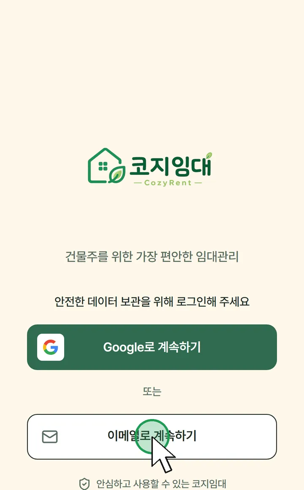
ℹ️ 참고 — 설정이나 구독 관리에서 직접 로그인 화면으로 들어온 경우에는 맨 아래에 「나중에 할게요」가 추가로 표시되며, 누르면 원래 화면으로 돌아갑니다. 앱 시작 시 나오는 로그인 화면에는 이 버튼이 없어 로그인 없이 지나갈 수 없습니다.
실패하면 버튼 아래에 안내 문구가 나옵니다.
ℹ️ 참고 — 로그인 처리 중에는 버튼이 잠시 눌리지 않습니다. 여러 번 누르지 않아도 됩니다.
「이메일 주소」 입력칸입니다. 비어 있을 때는 「인증번호 받기」 버튼이 흐리게 표시됩니다.
입력칸 아래 「처음 사용하는 이메일도 인증번호 확인 후 계정이 자동으로 만들어집니다.」 문구처럼, 처음 쓰는 이메일도 따로 가입 절차 없이 그대로 사용할 수 있습니다. 이메일을 입력하기 전에는 「인증번호 받기」 버튼이 눌리지 않습니다. 「이전으로」를 누르면 로그인 방법 선택 화면으로 돌아갑니다.
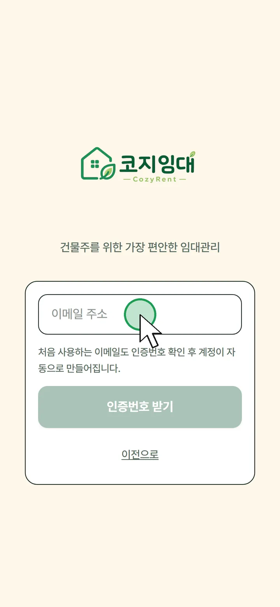
이메일을 입력한 뒤 「인증번호 받기」를 누릅니다.
「인증번호 받기」를 누르면 「인증번호를 이메일로 보냈어요.」 안내가 나오고 인증번호 입력 화면으로 넘어갑니다(1.2.4). 입력한 이메일의 받은편지함에서 6자리 인증번호를 확인합니다.
안내 문구가 나오면 다음과 같이 대처합니다.
ℹ️ 참고 — 이 계정이 이미 있는지 없는지는 화면에 표시되지 않습니다. 처음 쓰는 이메일이든 이미 쓰던 이메일이든 절차는 같습니다.
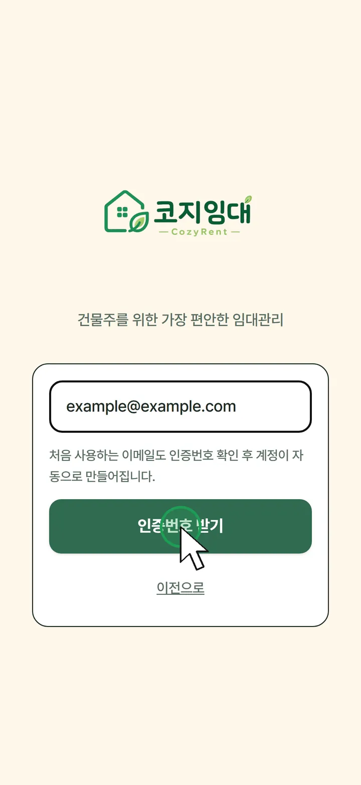
안내 문구가 나오면 다음과 같이 대처합니다.
💡 팁 — 휴대폰의 뒤로가기 버튼을 누르면 한 단계씩 되돌아갑니다(인증번호 입력 → 이메일 입력 → 로그인 방법 선택).
로그인이 성공하면 「내 정보를 불러오고 있어요」 화면이 나오면서 앱이 새로 시작되고, 로그인한 계정의 자료를 불러옵니다. 그 뒤 열리는 화면은 로그인을 시작한 곳에 따라 다릅니다.
로그인이 끝난 뒤에는 뒤로가기를 눌러도 로그인 화면으로 되돌아가지 않습니다.
본 화면의 맨 아래에는 다섯 개 탭이 항상 고정되어 있습니다. 탭을 누르면 해당 화면으로 바로 이동하며, 항상 화면 맨 위부터 표시됩니다. 홈 화면의 위쪽에는 코지임대 로고와 알림 벨이, 아래쪽에는 「홈」 「호실」 「건물」 「리포트」 「설정」 탭이 있습니다. 홈 화면 모습은 2.1의 그림을 참고하세요.
현재 있는 탭은 초록색 굵은 글씨로 표시됩니다. 상세 화면(호실 상세, 계약 등록 등)에 들어가도 하단 탭은 그대로 남아 있어 언제든 다른 탭으로 이동할 수 있습니다. 구독 관리 화면에서만 하단 탭이 숨겨집니다.
ℹ️ 참고 — 체험 기간이 끝나 조회만 가능한 상태에서도 다섯 개 탭 이동은 항상 할 수 있습니다.
Google Play에 코지임대 새 버전이 올라오면 다섯 개 탭 화면 맨 위에 「새 버전이 있어요」 카드가 나타날 수 있습니다. 받는 방법은 16.10을 참고하세요.
메인 탭의 제목줄 — 다섯 개 탭 화면의 맨 위에는 한 줄짜리 제목줄이 고정되어 있습니다. 홈에서는 코지임대 로고가, 나머지 탭에서는 탭 이름(「호실」 「건물」 「리포트」 「설정」)이 제목으로 표시됩니다. 오른쪽 알림 벨을 누르면 소식함이 열립니다. 건물명이나 기간처럼 화면마다 다른 정보는 제목줄이 아니라 본문 첫 영역에 표시됩니다.
상세·입력 화면의 제목줄 — 상세 화면, 등록·수정 화면의 왼쪽 위에는 「뒤로」 화살표(←)가 있습니다. 누르면 직전 화면으로 돌아갑니다. 앱을 다시 실행해 직전 화면이 없으면 그 화면의 상위 화면으로 돌아갑니다. 오른쪽 알림 벨은 여기에도 항상 표시됩니다. 구독 관리 화면의 제목은 「구독 관리」이며, 돌아갈 화면이 없으면 설정 탭으로 돌아갑니다.
⚠️ 주의 — 저장하지 않은 입력이 있는 화면에서는 「뒤로」를 눌렀을 때 저장하지 않았다는 경고가 먼저 나올 수 있습니다. 화살표 「뒤로」와 휴대폰의 뒤로가기 버튼은 같은 방식으로 동작합니다.
휴대폰의 뒤로가기 버튼(또는 제스처)은 지금 있는 화면에 따라 다르게 동작합니다. 호실·건물·리포트 탭에서는 홈으로, 설정 탭과 상세 화면에서는 이전 화면으로 돌아갑니다. 화면별 전체 규칙은 19.4를, 건물 등록 안내 중의 뒤로가기는 1.5.10을 참고하세요.
「앱을 종료하시겠습니까?」 확인창입니다. 「취소」를 누르면 홈에 그대로 남습니다.
「종료」를 누르면 앱이 닫히고, 「취소」를 누르면 홈에 그대로 남습니다. 확인창이 열린 상태에서 뒤로가기를 한 번 더 누르면 확인창만 닫힙니다. 종료해도 저장된 자료는 그대로 남아 있으며 다음에 앱을 열면 로그인 상태도 유지됩니다.
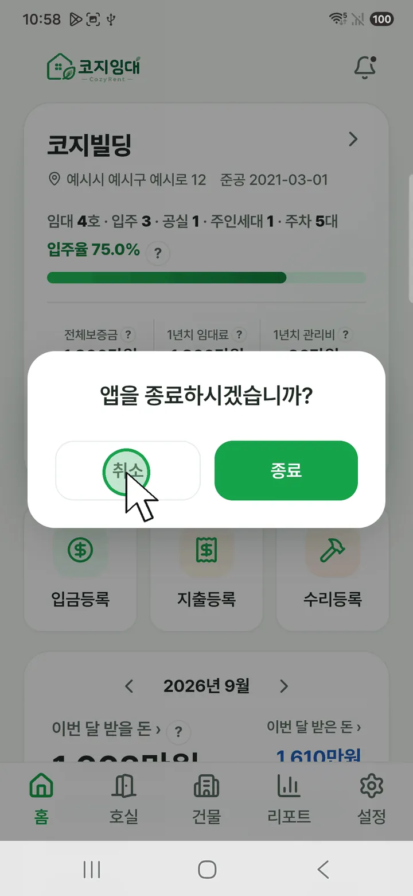
준공일, 계약 시작일·종료일, 납부일, 수리 발생일 등 앱의 모든 날짜 칸은 같은 달력 선택기를 사용합니다. 날짜가 없는 칸에는 「연도-월-일」이 흐리게 표시됩니다.
「준공일」 달력입니다. 위쪽 화살표로 연도를, 아래쪽 화살표로 월을 바꾼 뒤 날짜를 누릅니다.
연도 줄 양쪽의 ‹ › 화살표로 연도를, 월 줄 양쪽의 화살표로 월을 바꿉니다. 요일 머리글(일~토)이 표시되며 일요일은 빨간색입니다. 날짜를 누르면 곧바로 그 날짜가 칸에 「2021-03-01」 형식으로 들어가고 달력이 닫힙니다. 「오늘」을 누르면 오늘 날짜가 선택되고, 「닫기」를 누르면 값을 바꾸지 않고 달력을 닫습니다.
💡 팁 — 달력이 열린 상태에서 휴대폰의 뒤로가기 버튼을 누르면 달력만 닫히고 입력 중인 화면은 그대로 유지됩니다.
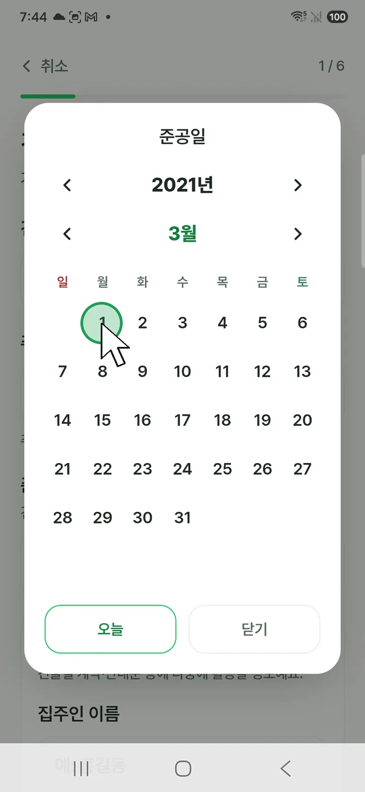
이름·메모·금액 칸에는 저장할 수 있는 한도가 있습니다. 한도를 넘으면 입력한 글자가 잘리지는 않고, 저장이 막히며 아래와 같은 안내가 나옵니다. 안내를 보고 글자나 금액을 줄인 뒤 다시 저장합니다.
| 항목 | 한도 | 안내 문구 |
|---|---|---|
| 건물·호실 등 대상 이름 | 50자 | 「이름은 50자까지 입력할 수 있어요. (현재 N자)」 |
| 사람 이름(집주인·임차인 등) | 20자 | 「이름은 20자까지 입력할 수 있어요. (현재 N자)」 |
| 메모 | 500자 | 「메모는 500자까지 입력할 수 있어요. (현재 N자)」 |
| 보증금 | 100억 원 | 항목 이름과 한도 금액이 적힌 안내(보증금은 ○○원까지 입력할 수 있어요) |
| 임대료 | 10억 원 | 보증금과 같은 문구에 항목 이름만 바뀜 |
| 관리비 | 1천만 원 | 보증금과 같은 문구에 항목 이름만 바뀜 |
ℹ️ 참고 — 새로 등록할 때는 모든 칸을 검사합니다. 수정할 때는 실제로 바꾼 칸만 검사하므로, 예전에 저장된 값이 한도를 넘어도 다른 칸만 고치는 수정은 막히지 않습니다. 입출금 분류 이름(20자)만은 예외로, 입력하는 동안 20자에서 자동으로 잘립니다.
로그인 뒤 등록된 건물이 없으면 6단계 건물 등록 안내가 전체 화면으로 열립니다. 하단 탭은 없습니다. 단계는 「건물 기본정보 → 건물 규모 → 호실을 배치해주세요 → 설비 선택 → 고정지출 → 준비 끝!」 순서입니다. 이미 건물이 있는 계정에서는 홈의 건물 카드를 누르면 아래에서 올라오는 「내 건물 선택」 창이 열리고, 여기서 「건물 추가」를 누르면 같은 안내를 다시 열 수 있습니다(3장 참고).
이 절의 예시는 가상의 건물 「코지빌딩」(지상 3층, 상가 1개, 주택 4개, 주차 5대)입니다.
모든 단계의 맨 위에는 왼쪽 「취소」, 오른쪽 진행 표시(「1 / 6」 같은 숫자와 초록색 진행 막대)가 고정되어 있습니다. 맨 아래에는 「이전」 「다음」 버튼이 있습니다(1단계에는 「이전」이 없습니다).
등록이 진행되는 동안(「등록하는 중…」)에는 「이전」 「다음」이 잠시 눌리지 않습니다.
「건물 기본정보」 「가볍게 시작해볼까요?」 화면입니다. 「건물 이름」 칸에 예시로 흐리게 표시된 「코지하우스」 자리에 건물 이름을 입력합니다.
「건물 이름」은 홈과 건물 목록에 표시되는 이름입니다. 「주소 (선택)」은 입력하지 않아도 되며, 「주소는 나중에 건물 수정에서 추가·변경할 수 있어요.」 안내처럼 나중에 건물 탭에서 추가할 수 있습니다.
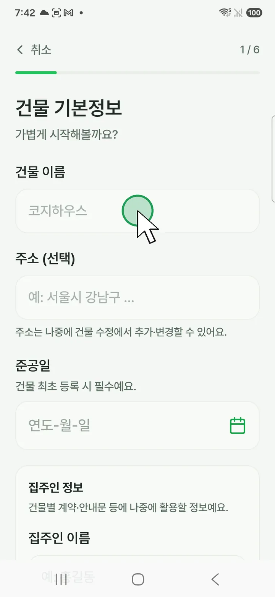
「코지빌딩」과 주소를 입력한 뒤 「준공일」의 「연도-월-일」 칸을 눌러 달력을 엽니다.
「준공일」은 「건물 최초 등록 시 필수예요.」 안내처럼 첫 등록 때 반드시 넣어야 합니다. 달력 사용법은 1.4.1과 같습니다(예: 2021년 3월 1일 선택).
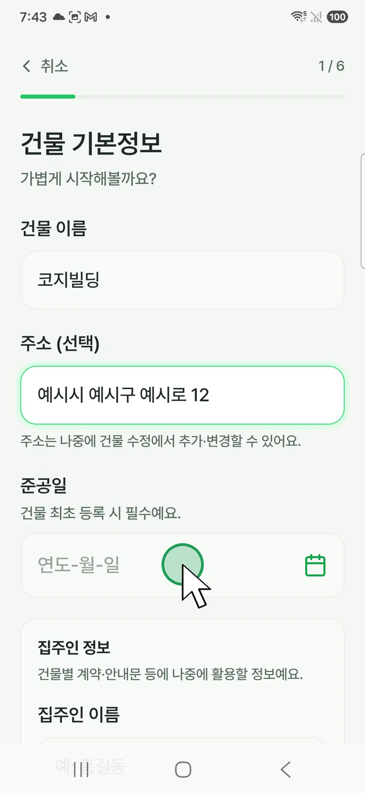
준공일 「2021-03-01」과 집주인 이름·연락처를 입력한 뒤 「다음」을 누릅니다. 「다음」 바로 위의 「이미 코지임대 백업 파일이 있나요?」 영역은 1.5.3에서 설명합니다.
「집주인 정보」는 「건물별 계약·안내문 등에 나중에 활용할 정보예요.」 안내처럼 이 건물의 계약서·안내문에 쓰이는 정보입니다. 연락처는 「집주인 연락처」 칸에 흐리게 표시된 예시처럼 전화번호 형식으로 입력합니다(그림 예: 집주인 이름 「김건물」, 연락처 「010-0000-0000」). 「다음」을 누르면 입력을 검사한 뒤 2단계 「건물 규모」로 넘어갑니다.
비어 있거나 형식이 맞지 않으면 다음 안내가 나오고 넘어가지 않습니다.
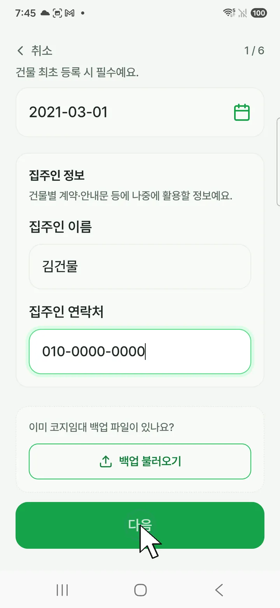
⚠️ 주의 — 이름과 주소가 모두 같은 건물이 이미 있으면 「같은 이름·주소의 건물이 이미 등록되어 있어요. 이름이나 주소를 바꿔 주세요.」가 나오고 등록할 수 없습니다. 주소 없이 이름만 같은 건물이 있으면 「같은 이름의 건물이 이미 있어요(주소 미입력). 구분되도록 이름을 바꾸거나 주소를 입력해 주세요.」가 나옵니다. 주소가 다른 건물인데 이름만 같은 경우에는 「같은 이름의 건물이 이미 있어요. 주소가 다른 건물이 맞다면 한 번 더 [다음]을 눌러 계속하세요.」 안내가 한 번 나오며, 「다음」을 다시 누르면 진행됩니다.
다른 휴대폰이나 예전에 설치했던 앱에서 코지임대 백업 파일을 저장해 둔 경우, 건물을 새로 입력하는 대신 그 파일을 불러올 수 있습니다.
이 영역은 건물이 하나도 없는 계정에서 첫 건물을 등록할 때만 보입니다. 이미 건물이 있는 계정에서 「건물 추가」로 연 화면에는 나오지 않습니다.
백업 파일 형식과 복원 규칙, 실패했을 때의 안내는 16.4를, 유료 조건은 17장을 참고하세요.
ℹ️ 참고 — 백업 파일 복원은 유료 구독에서 쓸 수 있는 기능입니다. 체험 중이거나 구독이 끝난 계정에서는 「백업 파일 복원은 유료 구독에서 사용할 수 있어요.」 안내만 표시됩니다.
「건물 규모」 「선택만으로 끝나요.」 화면에서는 네 가지 질문에 버튼을 눌러 답합니다. 네 항목을 모두 골라야 「다음」으로 넘어갈 수 있습니다.
「지상 몇 층인가요?」에서 「3층」을 누릅니다. 지하는 「없음」~「3층」, 지상은 「1층」~「7층」, 상가는 「없음」~「3개」, 주택은 「없음」~「6개」 버튼과 각각 「기타」가 있습니다.
버튼 목록에 없는 값은 「기타」를 누릅니다. 「층수를 선택해주세요」 또는 「개수를 선택해주세요」 창이 열리고, 「−」 「+」로 숫자를 맞춘 뒤 「적용」을 누르면 그 값이 「기타」 자리에 표시됩니다. 「취소」를 누르면 바뀌지 않습니다. 0을 적용하면 「없음」으로 처리됩니다. 지상 층수에는 상한이 없습니다.
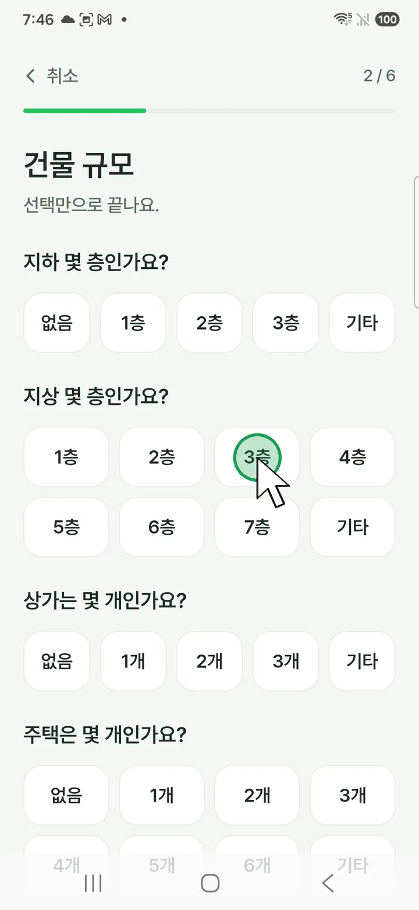
「3층」 「1개」 「4개」가 초록 테두리로 선택되고 주차 「5」대를 맞춘 상태에서 「다음」을 누릅니다.
「다음」을 누르면 3단계 「호실을 배치해주세요」로 넘어가며, 여기서 정한 상가·주택 수만큼 배치할 호실 카드가 만들어집니다. 고르지 않은 항목이 있으면 그 질문 옆에 ⚠ 「선택해주세요」가 표시되고 넘어가지 않습니다.
⚠️ 주의 — 3단계에서 호실을 배치한 뒤 2단계로 돌아와 상가·주택 수를 바꾸면, 3단계의 배치와 주인세대 선택이 모두 초기화됩니다.
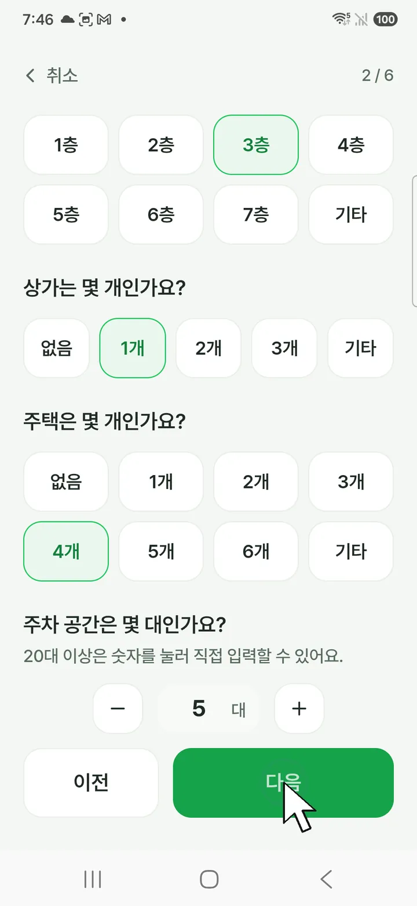
「호실을 배치해주세요」 화면에서는 「상가와 주택을 층에 넣으면 호수는 자동으로 만들어드릴게요.」 안내처럼, 2단계에서 정한 상가·주택을 층에 넣기만 하면 호수가 자동으로 붙습니다.
「상가」 카드를 누릅니다. 호실을 고르기 전에는 층 버튼이 흐리게 표시되고 「호실을 먼저 선택하면 층을 누를 수 있어요」 안내가 보입니다.
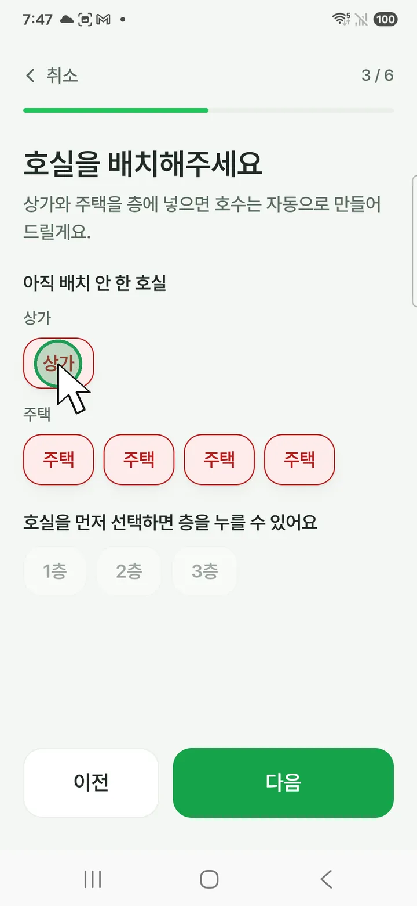
「상가」가 초록색으로 선택된 상태에서 「1층」을 누릅니다.
층 버튼을 누르면 선택한 호실이 그 층으로 들어가고 호수가 자동으로 만들어집니다. 상가는 건물 전체 순번으로 「상가1」 「상가2」…, 주택은 층별로 「101호」 「102호」…처럼 붙습니다. 지하층은 B가 붙어 「B101호」가 됩니다. 나머지 호실도 같은 방법(카드 선택 → 층 버튼)으로 배치합니다.
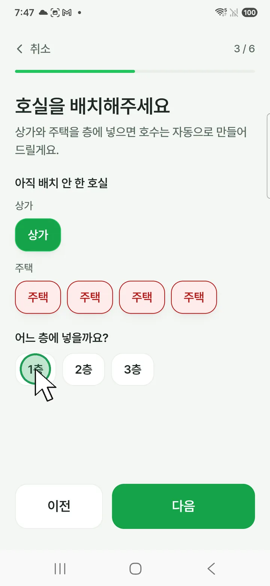
3층 「301호」, 2층 「201호」 「202호」, 1층 「상가1」 「101호」로 배치가 끝난 화면입니다. 확인한 뒤 「다음」을 누릅니다.
배치된 호수를 누르면 「배치를 취소했어요.」 안내와 함께 그 호실이 「아직 배치 안 한 호실」로 돌아가므로 다른 층에 다시 넣을 수 있습니다. 「다음」을 누르면 주인세대 질문(1.5.6)이 이어집니다. 배치하지 않은 호실이 남아 있으면 「아직 배치하지 않은 호실이 있어요.」가 표시되고 넘어가지 않습니다.
ℹ️ 참고 — 2단계에서 상가·주택을 모두 「없음」으로 고르면 이 화면에 「등록할 호실이 없어요. 이전에서 상가/주택 수를 정해주세요.」가 표시됩니다. 「이전」으로 돌아가 수를 정합니다.
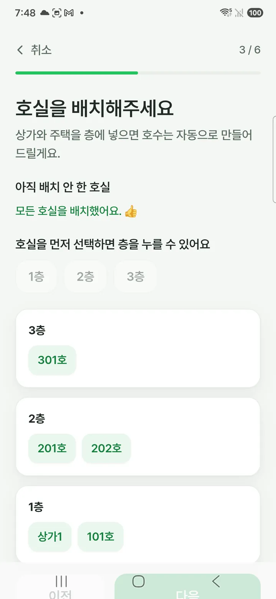
건물주 본인이 사는 세대처럼 임대하지 않는 호실을 주인세대로 표시해 두면 임대수익·미입금·입주율 계산에서 제외됩니다(주인세대의 뜻과 나중에 바꾸는 방법은 5장 참고). 3단계에서 배치를 마치고 「다음」을 누르면 이 질문이 한 번 나옵니다.
「주인세대는 임대수익·미입금·입주율 계산에서 제외돼요. 나중에 호실 수정에서도 변경할 수 있어요.」 안내를 읽고 「있음」을 누릅니다.
「없음」을 누르면 주인세대 없이 바로 4단계로 넘어갑니다. 「건너뛰기」를 눌러도 주인세대 없음으로 처리되어 4단계로 넘어갑니다(「없음」과 결과가 같고, 다시 묻지 않습니다). 「있음」을 누르면 호실 선택 창이 열립니다.
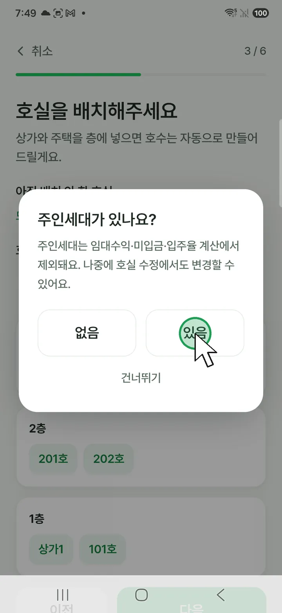
처음에는 「없음 ✓」이 선택되어 있습니다. 「301호」를 누릅니다.
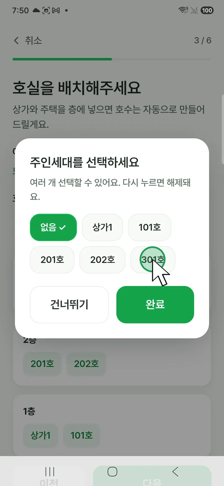
「301호 ✓」 상태에서 「완료 (1)」을 누르면 4단계로 넘어갑니다.
「완료」를 누르면 선택한 호실이 주인세대로 저장되고 4단계 「설비 선택」으로 넘어갑니다. 「없음」을 다시 누르면 선택이 모두 풀리고, 「건너뛰기」를 누르면 주인세대 없음으로 처리되어 넘어갑니다.
ℹ️ 참고 — 이 질문은 한 번 답하면 「이전」으로 돌아갔다 와도 다시 나오지 않습니다. 2단계에서 호실 수를 바꿔 배치가 초기화되면 다시 나옵니다. 창이 열린 상태에서 휴대폰의 뒤로가기 버튼을 누르면 호실 선택 창 → 질문 창 → 닫기 순서로 한 단계씩 돌아갑니다.
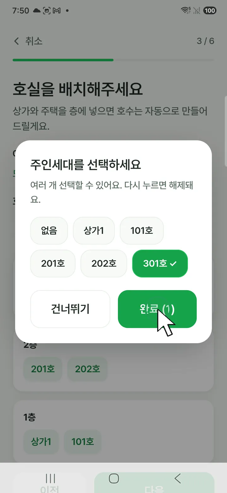
「설비 선택」 화면에서는 「이 건물에 있는 설비를 골라주세요. 세부 시설은 나중에 등록할 수 있어요.」 안내처럼 건물에 있는 설비 종류만 고릅니다. 설비 카드마다 아래에 그 설비에 어떤 시설이 들어가는지 볼 수 있는 「세부시설 N개 보기 ›」가 있습니다.
「소방설비」 오른쪽 동그라미를 누르는 모습입니다. 카드마다 아래에 「세부시설 N개 보기 ›」가 있고, 목록은 아래로 더 이어집니다.
고른 카드는 초록색 테두리와 체크 표시로 바뀝니다. 여러 개를 고를 수 있고, 하나도 고르지 않아도 됩니다. 고를 수 있는 설비는 「승강기설비」 「급수·배수설비」 「소방설비」 「전기설비」 「통신·보안설비」 「출입설비」 「주차설비」 「냉난방·환기설비」 「가스설비」 「오수·위생설비」 「신재생에너지설비」 11종입니다.
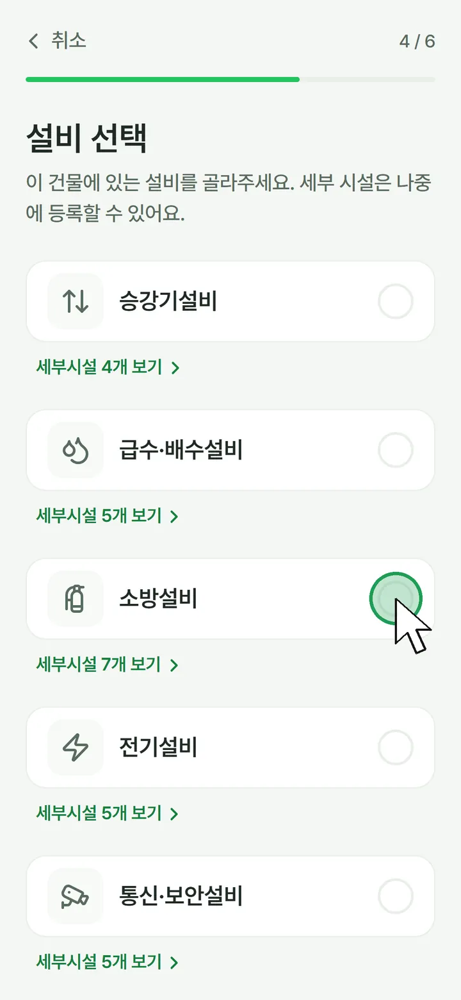
소방설비를 고른 뒤 카드 아래 「세부시설 7개 보기 ›」를 누르는 모습입니다.
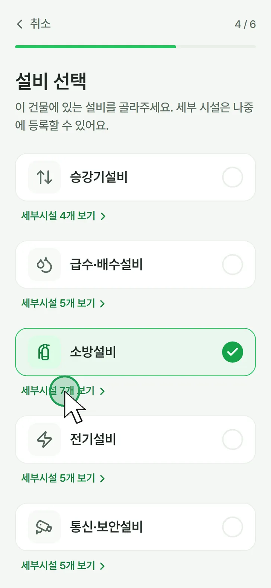
「세부시설 · 소방설비」 창입니다. 옥내소화전·옥외소화전·스프링클러·소화기·화재감지기·유도등·비상방송설비 7개가 보입니다. 오른쪽 위 X를 누르면 닫힙니다.
이 창은 보기만 하는 창입니다. 여기서 시설이 등록되지는 않으며, 목록을 누르거나 창을 열고 닫아도 고른 설비는 그대로입니다. 창 바깥을 누르거나 휴대폰 뒤로가기를 눌러도 닫힙니다.
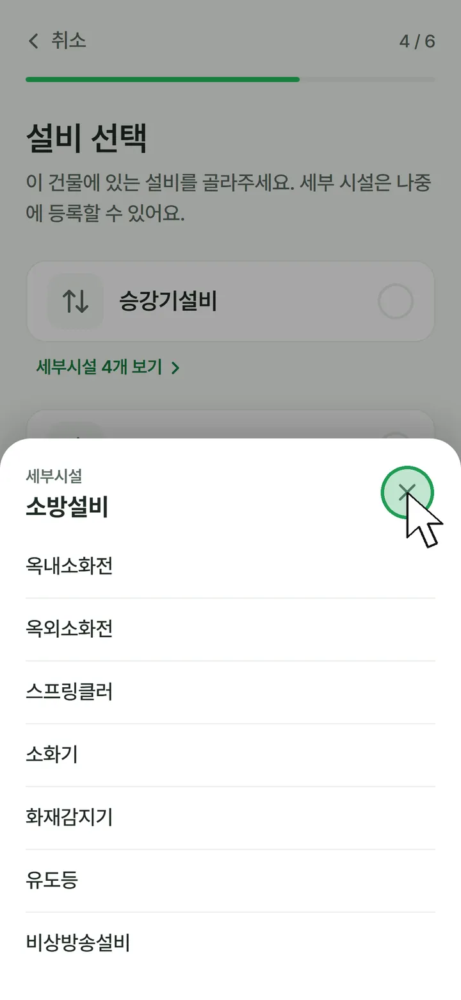
여기서 고른 설비는 등록 뒤 건물 탭의 시설 관리에 큰 분류로 들어갑니다. 실제 시설(예: 승강기 1호기, 소화기)은 그곳에서 한 대씩 등록하고, 점검 날짜와 알림은 시설마다 「점검·관리 등록/조회」에서 정합니다(12장). 나중에 시설 관리에서 설비를 더할 때도 같은 「세부시설 N개 보기 ›」로 목록을 볼 수 있습니다(12.2). 「다음」을 누르면 5단계 「고정지출」로 넘어갑니다.
「고정지출」 화면에서는 「관리하는 항목을 골라주세요. 나중에 추가 가능합니다.」 안내처럼 매달 반복해서 나가는 지출 항목을 고릅니다.
「공용전기」 오른쪽 동그라미를 눌러 체크합니다.
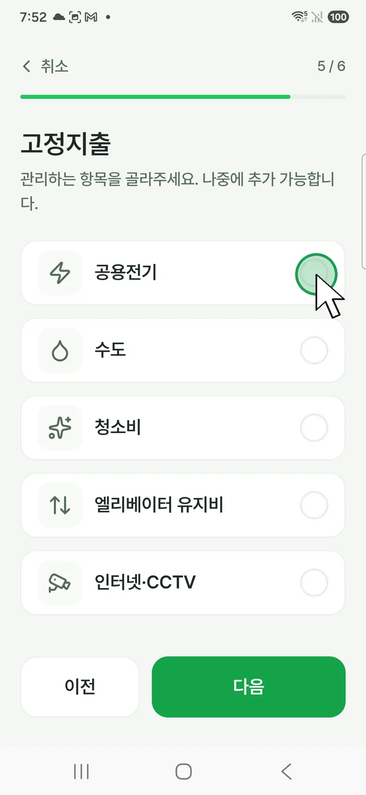
「공용전기」 「수도」를 체크한 뒤 「다음」을 누릅니다.
여기서 고른 항목은 등록 뒤 건물 탭의 고정지출 관리 목록에 「설정 필요」 상태로 자동 추가됩니다(매월 반복, 시작일은 오늘). 금액은 이 단계에서 입력하지 않고, 나중에 고정지출관리에서 항목별로 입력합니다. 하나도 고르지 않아도 넘어갈 수 있습니다. 「다음」을 누르면 마지막 6단계 「준비 끝!」으로 넘어갑니다.
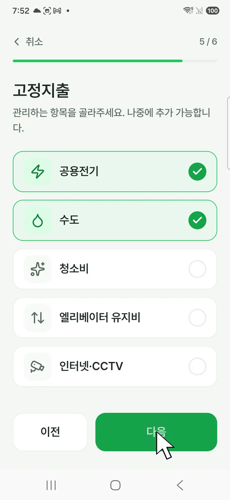
마지막 화면 「준비 끝!」에서 등록을 실행합니다. 화면 내용은 첫 건물인지, 이미 건물이 있는 계정에서 건물을 추가하는지에 따라 다릅니다.
이미 건물이 있는 계정에서 건물을 추가할 때의 「준비 끝!」 화면입니다. 「코지빌딩 등록」 「내 건물 목록에 추가할게요.」 카드 아래 「홈으로 시작하기」를 누릅니다. 첫 건물일 때는 같은 자리에 「첫 건물이 등록됩니다」 카드와 「건물 등록 완료」 버튼이 표시됩니다.
버튼을 누르면 「등록하는 중…」이 표시되면서 입력한 내용이 저장됩니다. 첫 건물이면 「축하합니다, 건물주님 🎉」 「첫 건물이 등록됐어요.」 「이제 복잡한 임대관리, 코지임대가 든든하게 도와드릴게요.」 축하 화면이 나옵니다(색종이 효과는 잠깐만 보입니다). 「홈에서 시작하기」를 누르면 홈으로 이동합니다. 건물을 추가하는 경우에는 축하 화면 없이 곧바로 홈으로 이동합니다. 고칠 것이 있으면 「이전」으로 돌아가 수정한 뒤 다시 누릅니다.
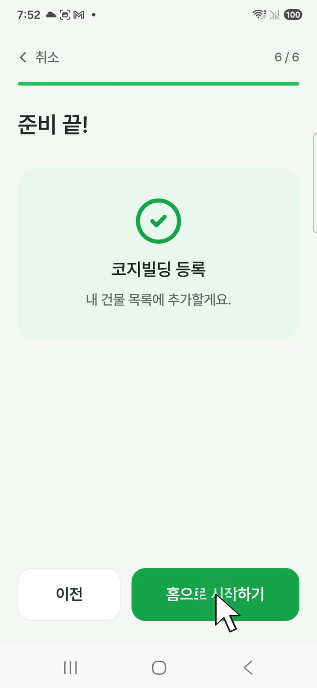
「코지빌딩」 카드에 「임대 4호 · 입주 0 · 공실 4 · 주인세대 1 · 주차 5대」 「입주율 0.0%」가 표시됩니다. 안내창의 「계약정보 등록하기」를 누르면 호실 탭으로 이동합니다.
건물 카드의 「임대 4호」 「공실 4」 「입주율 0.0%」는 앱이 등록 내용으로 자동 계산한 값입니다(주인세대 301호는 임대 호실 수에서 빠짐). 안내창의 「계약정보를 등록하면 입금내역과 임차인정보를 관리할 수 있어요.」 문구처럼, 「계약정보 등록하기」를 누르면 호실 탭으로 이동해 호실별 계약을 등록할 수 있습니다. 「나중에 할게요」를 누르면 안내창만 닫히고 홈에 남습니다. 계약 등록 방법은 6장에서 설명합니다.
등록에 실패하면 「등록을 마치지 못했어요. 다시 시도해 주세요.」 안내가 나옵니다. 입력한 내용은 화면에 그대로 남아 있으므로 버튼을 다시 누르면 됩니다. 이미 저장된 부분은 다시 저장되어도 중복 생성되지 않습니다. 건물은 저장됐지만 뒤 단계(호실·설비·고정지출)에서 멈추면 「등록을 마치지 못했어요. 일부만 저장됐어요. 저장된 내용을 확인한 뒤 다시 시도해 주세요.」가 나옵니다. 같은 화면에서 버튼을 다시 누르면 남은 단계만 이어서 저장됩니다.
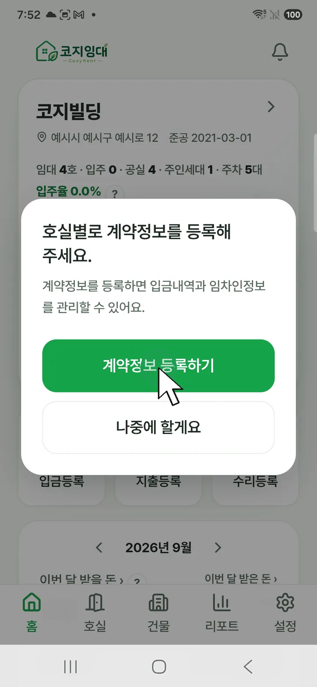
ℹ️ 참고 — 첫 건물은 자동으로 대표 건물이 됩니다. 「자동으로 대표 건물로 설정할게요. 나중에 언제든 변경할 수 있어요.」 안내처럼 나중에 변경할 수 있습니다.
등록 도중 상단 「취소」를 누르거나 휴대폰의 뒤로가기 버튼을 누르면 「건물 등록을 그만두시겠어요?」 확인창이 나옵니다. 「입력한 내용은 저장되지 않아요.」 안내처럼 지금까지 입력한 값은 남지 않습니다.
💡 팁 — 주인세대 창, 「기타」 숫자 창, 달력이 열린 상태에서 뒤로가기를 누르면 그 창만 먼저 닫히고, 확인창은 한 번 더 눌렀을 때 나옵니다.
어느 화면에서든 화면을 표시하는 데 문제가 생기면 흰 화면 대신 「화면을 열지 못했어요」 안내가 나옵니다. 「저장된 자료는 그대로 있어요. 앱을 다시 열면 대부분 정상으로 돌아와요.」 문구처럼 자료는 사라지지 않습니다.
로그인은 됐지만 계정 자료를 여는 데 실패하면 「데이터 준비에 실패했어요」 화면이 나옵니다. 「기존 데이터는 그대로 보존돼 있어요. 다시 시도해 주세요.」 문구처럼 자료는 지워지지 않고 잠긴 채 보존되며, 준비가 끝나기 전에는 업무 화면이 열리지 않습니다.
예전 버전의 코지임대를 쓰던 휴대폰에서 새 버전을 처음 열면, 임대 자료를 「기기 내 데이터베이스」(휴대폰 안에 저장되는 방식)로 옮기는 안내 「데이터 저장 방식을 업그레이드해요」가 나올 수 있습니다. 새로 설치했거나 이미 전환한 휴대폰에는 나오지 않습니다. 전환을 마치기 전에는 다른 화면으로 들어갈 수 없습니다.
실패하면 「안전복사본을 만들지 못했어요」 「전환을 완료하지 못했어요」 「저장소를 열지 못했어요」 중 하나가 표시됩니다. 「다시 시도」를 누르고, 반복되면 저장 공간을 확인합니다.
⚠️ 주의 — 전환 도중 앱을 종료하지 마세요. 전환 뒤에 저장소를 열지 못하는 경우에는 「백업 파일 저장」 버튼이 제공되지 않으므로, 전환 전에 백업 파일을 저장해 두는 것이 안전합니다.
휴대폰에 저장된 로그인 정보를 읽지 못하면 「로그인 정보를 확인하지 못했어요」 화면이 나옵니다. 「기존 데이터는 그대로 보존돼 있어요. 다시 시도해 주세요.」 문구처럼 자료는 지워지지 않으며, 확인이 끝나기 전에는 홈이나 건물 등록 화면이 열리지 않습니다.
ℹ️ 참고 — 인터넷이 끊긴 것만으로는 이 화면이 나오지 않습니다(1.1.1). 이 화면이 나와도 로그아웃하거나 앱을 지우거나 자료를 초기화할 필요는 없습니다. 계속 반복되면 고객지원(16.7)으로 알려 주세요.
홈 화면은 앱을 열면 가장 먼저 보이는 화면입니다. 지금 선택한 건물 하나를 기준으로 호실 상황, 보증금과 임대료 규모, 이번 달에 받을 돈과 나갈 돈, 오늘 처리해야 할 일을 한 화면에서 보여 줍니다. 홈의 금액과 건수는 모두 등록해 둔 계약·지출·수리 자료로 앱이 자동 계산한 값이며, 홈에서 직접 숫자를 고치는 일은 없습니다. 자주 쓰는 입금·지출·수리 등록은 홈의 「빠른등록」 버튼으로 바로 시작할 수 있습니다.
이 장에서 할 수 있는 일
홈 화면은 위에서 아래로 네 부분으로 이루어져 있습니다. 화면 맨 아래의 「홈」 탭을 누르면 언제든 이 화면으로 돌아옵니다.
홈 맨 위의 건물 카드입니다. 건물명 「코지빌딩」·주소·「준공 2021-03-01」, 호실 요약 줄 「임대 4호 · 입주 3 · 공실 1 · 주인세대 1 · 주차 5대」와 「입주율 75.0%」 진행바, 두 줄의 금액 요약이 보이고, 그 아래에 빠른등록 버튼 세 개와 월별 카드가 이어집니다. 화살표가 가리키는 「입주율 75.0%」 오른쪽의 「?」는 2.2.3에서 누릅니다.
맨 위 건물 카드에는 건물명과 주소, 호실 요약과 「입주율」, 여섯 칸의 금액 요약이 있습니다. 그 아래 빠른등록 버튼 세 개(「입금등록」「지출등록」「수리등록」), 그다음 월별 받을 돈·나갈 돈 카드, 마지막에 「오늘 확인할 일」 목록이 이어집니다. 휴대폰 알림이 꺼져 있으면 「오늘 확인할 일」 바로 위에 휴대폰 알림을 켜는 안내 카드가 보일 수 있습니다(15.5). Google Play에 앱 새 버전이 올라오면 건물 카드 위에 「새 버전이 있어요」 카드가 보일 수 있습니다(16.10). 카드 안의 회색 「?」 동그라미는 모두 계산 방법 안내 버튼입니다. 누르면 그 항목이 무엇이고 어떻게 계산되는지 짧은 설명이 뜨고, 「닫기」를 누르면 홈으로 돌아옵니다.
ℹ️ 참고 — 홈의 모든 숫자는 지금 선택한 건물 한 곳만 계산합니다. 건물이 여러 개라면 2.2.2의 「내 건물 선택」 창에서 건물을 바꿔 가며 확인합니다.
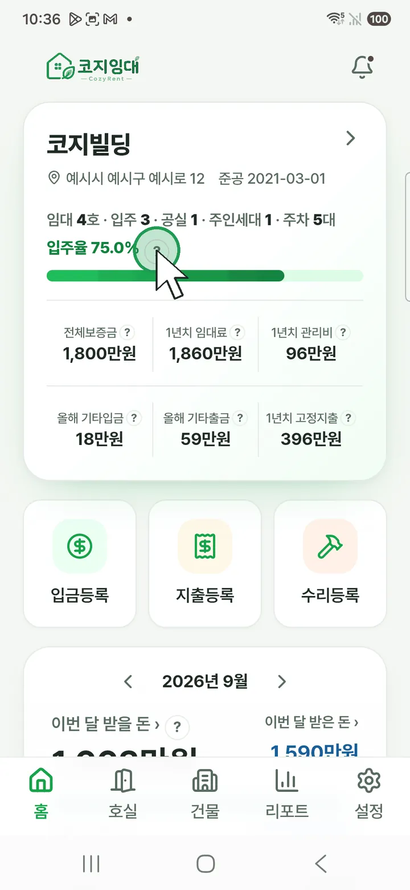
건물 카드 맨 윗줄은 지금 홈에서 보고 있는 건물이 어느 건물인지 알려 줍니다.
큰 글씨가 건물명입니다(예시 화면에서는 「코지빌딩」). 건물명이 길면 두 줄까지 표시되고, 아직 입력하지 않았다면 「내 건물」로 표시됩니다. 그 아래 줄의 주소와 「준공 {준공일}」은 건물 정보에 주소나 준공일을 입력한 경우에만 보입니다. 이 건물이 대표 건물이면 건물명 옆에 「대표」 배지가 붙습니다(예시 화면은 배지가 없는 상태입니다).
둘 중 어디를 눌러도 같은 「내 건물 선택」 창이 화면 아래에서 올라옵니다(2.2.2). 건물 정보를 고치려면 이 창의 「수정」을 이용합니다. 건물 카드 자체에서는 정보를 수정하지 않습니다.
ℹ️ 참고 — 무료체험이나 구독이 끝나 조회만 가능한 상태에서도 「내 건물 선택」 창은 열 수 있습니다. 다만 창 안에서 할 수 있는 일은 건물 선택으로 제한됩니다(3.1 참고).
건물을 두 곳 이상 등록했다면 이 창에서 홈에 보여 줄 건물을 바꿉니다. 건물이 하나뿐이어도 대표 설정·수정·건물 추가는 여기서 합니다.
창 제목은 「내 건물 선택」이고, 오른쪽 위에 닫기 X 버튼이 있습니다. 등록된 건물이 위에서부터 카드 형태로 나열됩니다. 각 카드에는 건물명과 주소가 보이고, 대표 건물에는 「대표」 배지가 붙습니다. 지금 홈에서 보고 있는 건물은 녹색 테두리와 함께 「현재 선택됨」이라고 표시됩니다.
창이 닫히고 홈 전체가 그 건물 기준으로 다시 계산됩니다. 건물 카드의 호실 요약·금액 요약, 월별 카드, 「오늘 확인할 일」이 모두 바뀝니다. 리포트 탭의 「이 건물」도 이 선택을 따릅니다.
창 안에서는 건물 카드 아래의 「대표로 설정」 「수정」과 목록 아래의 「건물 추가」로 대표 설정·수정·건물 추가도 할 수 있습니다. 그 방법과 조회 전용 상태에서의 제한은 3.1을 참고합니다.
건물 카드 가운데에는 호실이 몇 개이고 얼마나 차 있는지가 한 줄로 요약됩니다.
요약 줄은 「임대 N호 · 입주 N · 공실 N」 형식입니다. 주인세대로 지정한 호실이 하나 이상이면 「· 주인세대 N」이, 건물 정보에 주차대수를 1 이상 입력했으면 「· 주차 N대」가 이어서 붙습니다. 그 아래 녹색 글씨 「입주율 N%」와 진행바는 앱이 자동으로 계산한 값으로, 소수점 첫째 자리까지 표시됩니다(예: 「입주율 85.0%」, 「입주율 100.0%」). 이 값들은 호실 탭에서 등록한 호실과 계약 상태에 따라 자동으로 바뀌며, 홈에서 직접 고칠 수는 없습니다.
「입주율 계산 방법」 안내창입니다. 설명을 읽은 뒤 「닫기」를 누르면 홈으로 돌아옵니다.
「입주율 계산 방법」 안내창이 열립니다. 「무엇인가요?」 아래에 「오늘 기준으로 임대 호실이 얼마나 차 있는지예요.」, 「어떻게 계산하나요?」 아래에 「입주 호실 수를 임대 대상 호실 수로 나눠요.」, 「참고」 아래에 「주인세대는 임대 대상에서 빼요.」가 표시됩니다. 즉 주인세대는 임대 대상에서 빠지고, 오늘 기준으로 진행 중인 계약이 있는 호실만 입주로 셉니다. 「닫기」를 누르거나 휴대폰의 뒤로가기 버튼을 누르면 안내창만 닫히고 홈에 그대로 머무릅니다.
ℹ️ 참고 — 이 「입주율」은 오늘 하루 기준입니다. 월별 카드의 「들어옴 N%」「나감 N%」는 입주율이 아니라 금액 진행률입니다. 진행률은 소수점 첫째 자리까지 보여 주고 반올림하지 않으므로, 받을 돈이 조금이라도 남아 있으면 「들어옴 100.0%」가 되지 않습니다(예: 「들어옴 99.5%」).
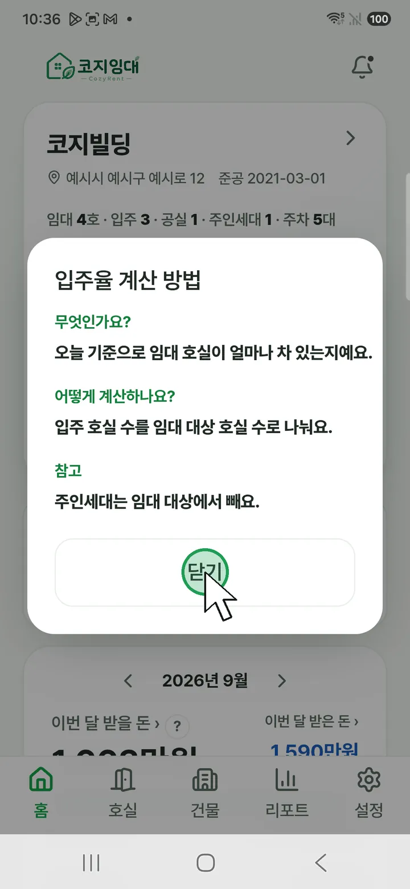
건물 카드 아래쪽 첫 번째 줄(세 칸)은 현재 계약 기준의 큰 금액 세 가지를 보여 줍니다.
세 값은 모두 앱이 자동으로 계산하며 만·억 단위로 줄여 표시됩니다(예: 1,800만원). 「전체보증금」은 지금 살고 있는 임차인에게서 받아 보관 중인 보증금의 합계, 「1년치 임대료」와 「1년치 관리비」는 현재 계약이 1년 유지될 때 받게 되는 금액입니다.
「{항목명} 계산 방법」 안내창이 열리고 「닫기」로 닫습니다. 항목별 안내 내용은 다음과 같습니다.
💡 팁 — 「1년치 임대료」「1년치 관리비」는 지난 1년 동안 실제로 받은 돈이 아니라, 지금 계약이 그대로 이어질 때의 예상 금액입니다. 실제로 받은 돈은 2.4의 월별 카드와 리포트에서 확인합니다.
두 번째 줄(세 칸)은 계약 외 입금·출금과 반복 지출 규모를 보여 줍니다.
「올해 기타입금」과 「올해 기타출금」은 올해(1월 1일~12월 31일) 날짜로 등록된 돈의 합계이고, 「1년치 고정지출」은 지금 등록되어 있는 반복 지출을 1년으로 환산한 예상 금액입니다. 세 값 모두 앱이 자동으로 계산합니다. 금액을 아직 정하지 않은 고정지출이 있으면 카드 오른쪽 아래에 「1년치 고정지출 계산 제외 N건」이 함께 표시됩니다.
⚠️ 주의 — 「올해 …」 두 칸은 달력 연도 기준 실제 합계이고, 「1년치 고정지출」은 현재 설정 기준 예상 금액입니다. 같은 행에 있지만 성격이 다르므로 서로 더하거나 비교하지 않습니다.
건물 카드 바로 아래의 세 버튼은 자주 하는 등록 작업의 지름길입니다. 홈에서 바로 입력 화면이 열리는 것이 아니라, 대상을 고른 뒤 해당 화면으로 이동해 등록을 시작합니다.
빠른등록 버튼 「입금등록」 「지출등록」 「수리등록」과 그 아래 월별 카드입니다. 등록하려는 종류의 버튼을 누릅니다.
세 버튼은 각각 다른 곳으로 이어집니다. 「입금등록」은 호실 선택창을 거쳐 그 호실 계약의 입출금 화면으로(2.3.1), 「지출등록」은 지출 관리 화면의 「일회성 지출 등록」 버튼 위치로(2.3.2), 「수리등록」은 건물·호실·시설 중 대상을 고르는 선택창을 거쳐 해당 수리 화면으로(2.3.3) 이동합니다. 어느 버튼이든 실제 금액·날짜·내용은 이동한 화면에서 직접 입력하고 저장하며, 저장 결과는 홈으로 돌아왔을 때 월별 카드와 「오늘 확인할 일」에 자동으로 반영됩니다.
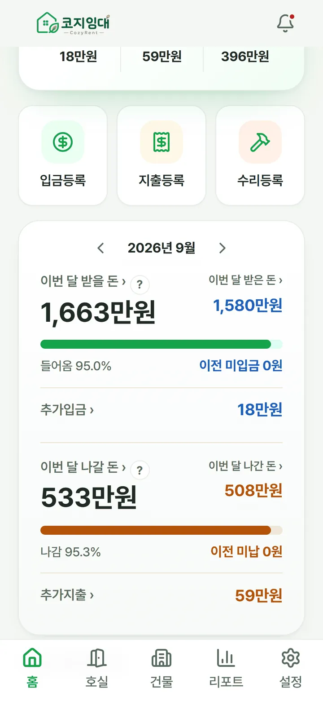
임대료·관리비 등 계약에 따른 입금을 기록할 때 씁니다. 호실을 고르면 그 호실의 현재 계약 입출금 화면으로 바로 이동합니다.
「입금 등록」 호실 선택창입니다. 층별로 호실이 나열되고, 이번 달 받을 돈을 다 받지 못한 호실에는 「미입금」 배지가 붙어 있습니다. 입금을 기록할 호실을 누릅니다.
「입금 등록」 선택창이 열리고 「입금 등록할 호실을 선택하세요. 현재 계약이 없는 공실은 선택할 수 없어요.」라는 안내가 보입니다. 호실은 층 단위로 묶여 2~3열로 나열됩니다. 오늘 기준으로 진행 중인 계약이 있는 호실만 녹색 배경으로 선택할 수 있고, 계약이 없는 공실(예시 화면의 「상가1」처럼 회색으로 표시된 호실)은 누를 수 없습니다. 주인세대 호실은 목록에 나오지 않습니다. 이번 달 받을 돈이 아직 다 들어오지 않은 호실에는 파란 「미입금」 배지가 붙어 어느 호실부터 처리할지 바로 알 수 있습니다.
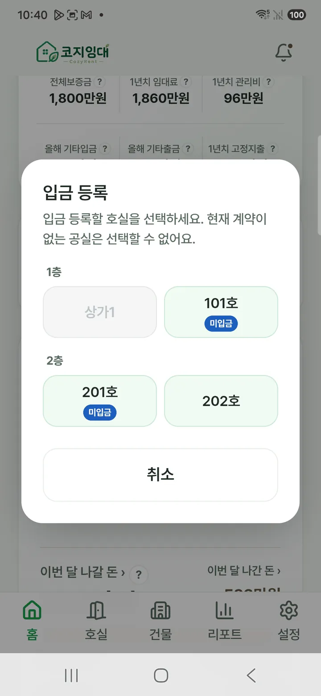
계약을 다시 고르는 단계 없이 그 호실 현재 계약의 입출금 화면으로 바로 이동합니다. 실제 입금일과 금액은 그 화면에서 직접 입력합니다(입출금 등록 방법은 8장 입출금을 참고합니다). 저장하고 홈으로 돌아오면 월별 카드의 「받은 돈」과 「오늘 확인할 일」의 미입금 카드가 자동으로 갱신됩니다.
ℹ️ 참고 — 선택한 건물에 호실이 하나도 없으면 선택창에 「등록된 호실이 없어요. 호실 탭에서 먼저 호실을 추가하세요.」가 표시됩니다. 호실 탭에서 호실을 먼저 등록한 뒤 다시 시도합니다.
수리와 관계없는 일회성 지출(예: 소모품 구입)을 기록할 때 씁니다.
지출 관리 화면으로 이동하면서 「일회성 지출 등록」 버튼이 보이는 위치까지 자동으로 스크롤됩니다. 홈에서 입력 창이 바로 열리는 것은 아니며, 등록은 그 화면에서 「일회성 지출 등록」 버튼을 눌러 시작합니다. 지출명·금액·날짜를 입력해 저장하면 홈 월별 카드의 「추가지출」과 건물 카드의 「올해 기타출금」에 반영됩니다(지출 등록 방법은 10.9 참고).
건물 공용부, 개별 호실, 등록된 시설 중 어디의 수리인지 먼저 고르고 해당 수리 화면으로 이동합니다.
「수리 등록」 선택창입니다. 「건물」 「호실」 「시설」 중 수리할 곳을 누르고, 그만두려면 「취소」를 누릅니다.
「수리 등록」 선택창이 열리고 「어디 수리인지 선택하세요.」 아래에 세 선택지가 나옵니다. 「건물」(「공용부·전체」), 「호실」(「개별 호실」), 「시설」(「시설 항목」)입니다. 「취소」를 누르면 선택창만 닫힙니다.
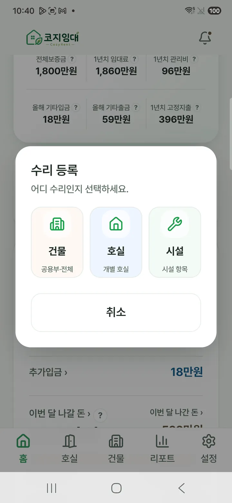
복도·계단·외벽 같은 공용부나 건물 전체에 걸친 수리를 등록할 때 선택합니다. 이동한 화면에서 수리 내용을 등록합니다(11.7 참고).
「호실을 선택하세요. 지금 수리중인 호실이 강조돼요.」라는 안내와 함께 층별 호실이 나열됩니다. 접수 또는 진행중 상태의 수리가 있는 호실은 주황 테두리와 「수리중」 표시가 붙습니다. 입금등록과 달리 계약이 없는 공실과 주인세대도 모두 선택할 수 있습니다. 호실을 누르면 그 호실의 수리 화면으로 이동해 수리 건을 등록합니다(11.2 참고). 「이전」을 누르면 앞 단계(「수리 등록」 선택창)로 돌아갑니다. 호실이 하나도 없으면 「등록된 호실이 없어요. 호실 탭에서 먼저 호실을 추가하세요.」가 표시됩니다.
「수리할 시설을 선택하세요.」 아래에 등록된 시설(폐기한 시설 제외)이 나열됩니다. 시설을 누르면 그 시설이 지정된 상태로 건물 수리 화면으로 이동해 수리 건을 등록합니다(12.8 참고). 등록된 시설이 없으면 「등록된 시설이 없습니다.」와 「시설 추가하러 가기」 버튼이 나오고, 이 버튼을 누르면 시설 관리 화면으로 이동해 시설을 먼저 등록할 수 있습니다.
⚠️ 주의 — 「시설 수리 등록」 선택창의 「뒤로」는 앞 단계로 돌아가는 것이 아니라 수리등록 진행 전체를 닫고 홈으로 돌아옵니다. 다시 시작하려면 「수리등록」을 다시 누릅니다. 또 홈을 거쳐 시설 수리를 등록하고 저장하면 「{시설명} 수리를 등록했어요.」 안내 뒤 건물 수리 목록 화면에 머무르는데, 이 목록에는 시설 수리가 표시되지 않습니다. 등록한 시설 수리는 시설 관리에서 해당 시설을 열어 확인합니다.
세 번째 카드는 한 달 단위로 들어올 돈과 나갈 돈을 한눈에 보여 줍니다. 위쪽은 들어오는 돈(받은 돈 금액이 파란 글씨), 아래쪽은 나가는 돈(나간 돈 금액이 주황 글씨)입니다. 모든 금액은 계약·지출·수리 자료에서 앱이 자동으로 계산합니다.
월별 카드입니다. 맨 위 「‹ 2026년 9월 ›」의 화살표로 달을 옮기면 「이번 달 받을 돈 › 1,663만원」 「이번 달 받은 돈 › 1,580만원」 「들어옴 95.0%」 「이전 미입금 0원」 「추가입금 › 18만원」 등 카드 안의 모든 값이 그 달 기준으로 바뀝니다.
한 달씩 앞뒤로 이동하며, 연도 제한 없이 계속 넘길 수 있습니다. 카드 안의 모든 금액·진행률·「추가입금」「추가지출」이 그 달 기준으로 다시 계산됩니다. 오늘이 속한 달을 보고 있으면 항목 이름이 「이번 달 받을 돈」 「이번 달 나갈 돈」이고, 다른 달로 옮기면 「M월달 받을 돈」 「M월달 나갈 돈」처럼 달 이름으로 바뀝니다.
아직 오지 않은 달은 받은 돈·나간 돈·추가입금·추가지출이 모두 0이고, 진행률 자리에 「예정 금액」이라고 표시됩니다. 다음 달에 받을 돈이나 내야 할 고정지출을 미리 확인할 때 씁니다.
💡 팁 — 카드의 금액이나 항목 이름을 눌러 상세 화면으로 들어갔다가 돌아오면 같은 달이 그대로 유지됩니다(앱을 실행 중인 동안). 앱을 다시 실행하거나 설정에서 앱 기준일을 바꾸면 오늘이 속한 달로 돌아옵니다.
큰 글씨 금액은 그 달에 새로 받기로 한 돈(임대료·관리비·보증금 등)의 합계이고, 오른쪽 파란 금액은 그 달 몫으로 실제로 받은 돈입니다. 아래 진행바와 「들어옴 N%」는 받은 돈을 받을 돈으로 나눈 비율(0~100%)입니다. 오른쪽의 「이전 미입금」(예시 화면은 「이전 미입금 0원」)은 보고 있는 달보다 앞선 달에 받지 못하고 남은 돈으로, 큰 금액에는 합산되지 않고 따로 표시됩니다. 이전 미입금이 0보다 크면 파란 점이 함께 표시됩니다.
어느 호실의 어떤 항목이 얼마인지 항목별로 확인할 수 있습니다.
「이번 달 받을 돈 계산 방법」(다른 달이면 「M월달 받을 돈 계산 방법」) 안내창이 열립니다. 「그 달에 받기로 한 돈과 실제로 받은 돈이에요.」 「임대료와 관리비는 받은 돈으로 계산해요.」 「퇴실정산 등 계약 외 입금은 추가입금으로 따로 보여줘요.」 「보고 있는 달보다 앞선 달의 미입금은 이전 미입금으로 따로 보여줘요.」가 표시됩니다. 「닫기」로 닫습니다.
퇴실정산으로 받은 돈, 임차인이 부담한 수리비처럼 계약으로 받기로 한 돈과 별개로 등록한 입금의 합계입니다. 위의 받을 돈·받은 돈에는 합쳐지지 않으며, 0원이어도 행은 항상 표시됩니다. 행을 누르면 추가입금 상세(2.7.6)로 이동합니다.
ℹ️ 참고 — 「받은 돈」은 입금한 날짜가 아니라 그 돈이 어느 달 몫인지를 기준으로 계산합니다. 또 호실별로 그 달 받을 돈을 넘는 초과 입금은 받을 돈 금액까지만 반영됩니다.
월별 카드 아래쪽입니다. 「이번 달 나갈 돈 › 533만원」과 「이번 달 나간 돈 › 508만원」, 진행바 「나감 95.3%」, 「이전 미납 0원」, 「추가지출 › 59만원」이 보이며, 금액이나 항목 이름을 누르면 상세 화면으로 갑니다.
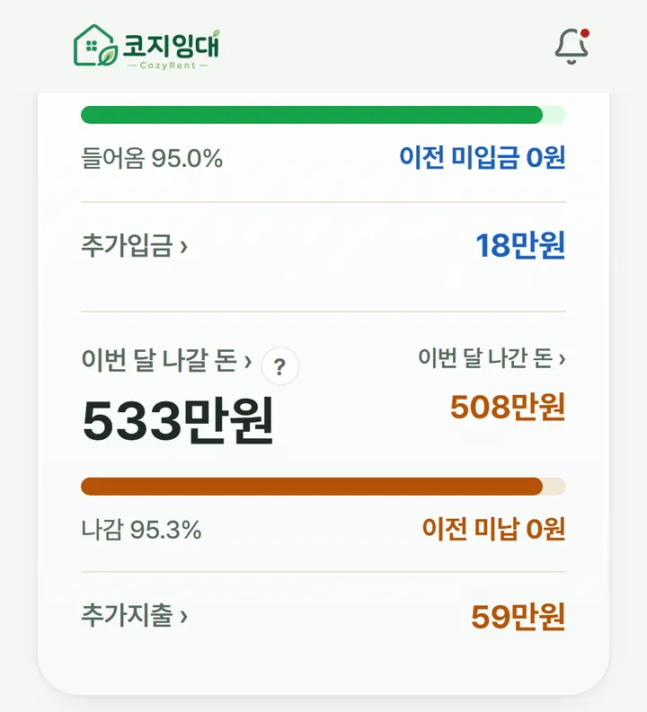
큰 글씨 금액은 그 달에 나가기로 한 돈으로, 등록된 고정지출의 예상 금액과 보증금 반환 예정액을 더한 값입니다. 오른쪽 주황 금액은 실제로 나간 돈입니다. 진행바와 「나감 N%」는 나간 돈을 나갈 돈으로 나눈 비율인데, 예정보다 더 많이 지출하면 100%를 넘을 수도 있습니다. 오른쪽의 이전 미납(예시 화면은 「이전 미납 0원」)은 보고 있는 달보다 앞선 달의 고정지출 중 아직 내지 않은 금액이며, 0보다 크면 주황 점이 표시됩니다.
「이번 달 나갈 돈 ›」 또는 큰 금액을 누르면 나갈 돈 상세(2.7.4)로, 「이번 달 나간 돈 ›」를 누르면 나간 돈 상세(2.7.5)로 이동합니다.
「이번 달 나갈 돈 ›」 옆의 「?」를 누릅니다.
「이번 달 나갈 돈 계산 방법」(다른 달이면 「M월달 나갈 돈 계산 방법」) 안내창이 열립니다. 「그 달에 나가기로 한 돈과 실제로 나간 돈이에요.」 「나가기로 한 돈은 고정지출과 보증금 반환으로 계산해요.」 「추가지출은 일회성 지출·수리비·중개수수료·조기퇴실 환급(받은 돈에서 이미 뺀 몫 제외)이에요.」 「보고 있는 달보다 앞선 달의 미납은 이전 미납으로 따로 보여줘요.」가 표시됩니다. 「닫기」로 닫습니다.
일회성 지출·수리비·중개수수료·조기퇴실 환급처럼 정기적으로 반복되지 않는 지출의 합계입니다. 위의 나갈 돈·나간 돈에는 합쳐지지 않으며 0원이어도 행은 항상 표시됩니다. 행을 누르면 추가지출 상세(2.7.7)로 이동합니다.
홈 맨 아래의 「오늘 확인할 일」은 오늘 기준으로 건물주가 확인하거나 처리해야 할 항목을 카드로 모아 보여 줍니다. 카드를 누르면 바로 처리할 수 있는 화면으로 이동합니다.
「오늘 확인할 일 5건」 목록입니다. 맨 위 「101호 수리 확인 필요」 화장실 수전 누수(「진행중」), 이어서 「이번 달 월세·관리비 못 받음」 101호(350,000원)와 201호(480,000원), 「이번 달 나갈 고정지출」 공용전기(150,000원)와 청소비(100,000원) 카드가 이 순서로 보입니다. 처리할 카드를 누릅니다.
제목 오른쪽의 「N건」이 오늘 처리할 항목 수입니다. 각 카드는 왼쪽 아이콘, 종류를 나타내는 색 글씨 제목(예: 「이번 달 월세·관리비 못 받음」), 대상 이름(예: 「101호」, 「공용전기」), 보조 설명(예: 「입금 예정일 5일」), 오른쪽의 값(미입금액·상태·날짜 등)으로 이루어집니다. 파란 카드는 받을 돈과 관련된 일, 주황 카드는 나갈 돈·수리와 관련된 일입니다. 카드는 아래 순서로 놓이고, 같은 종류 안에서는 호실 번호순, 오래된 달부터입니다. 주인세대 호실은 대부분의 항목에서 제외됩니다.
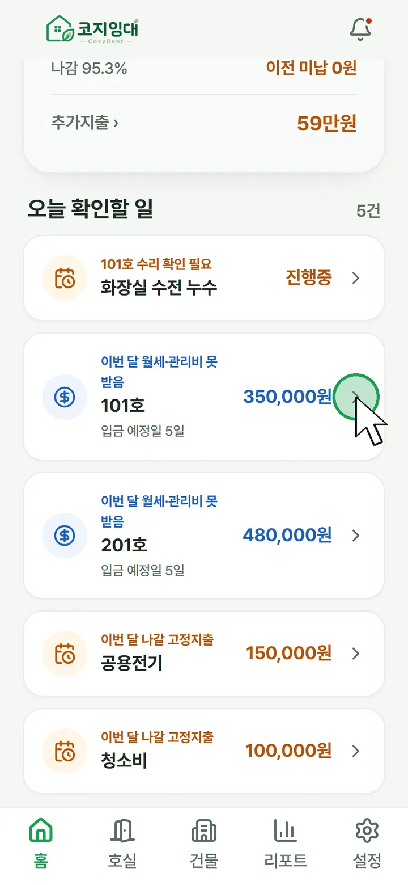
「백업을 확인해 주세요」 경고는 이 목록과 따로 표시됩니다.
카드 종류에 따라 계약 입출금, 지출 관리, 수리, 시설 점검, 퇴실관리 등 해당 화면으로 이동합니다(종류별 이동 위치는 2.5.2 참고). 그 화면에서 입금확인·지출확인·수리 상태 변경 등을 저장하면 홈으로 돌아왔을 때 해당 카드가 사라지고 「N건」이 줄어듭니다.
처리할 일이 하나도 없으면 목록 자리에 「오늘 확인할 일이 없어요.」가 표시됩니다.
ℹ️ 참고 — 무료체험 중이면 이 목록의 맨 마지막에 무료체험 안내 배너가 함께 표시됩니다(17.1 참고).
카드는 다음 종류가 있으며, 조건이 맞는 날에만 자동으로 나타납니다. 사용자가 직접 추가하거나 지울 수는 없고, 원인이 되는 일을 처리하면 사라집니다. 예시 카드는 2.5.1 그림에서 확인하고, 이동한 화면에서의 작업 방법은 각 항목에 적힌 장·절을 참고합니다.
백업을 확인해 주세요
시작하기 — 호실별로 계약정보를 등록해 주세요.
이번 달 입금 — 오늘 … 입금일 / 이번 달 … 못 받음(파란 돈 아이콘)
보증금 반환 예정 / 보증금 반환 확인 / 보증금 차액 반환(주황 카드)
이번 달 나갈 고정지출 / 고정지출 과거 미납(주황 달력 아이콘)
건물수리 확인 필요 / 시설수리 확인 필요 / {호실} 수리 확인 필요(주황 카드)
ℹ️ 참고 — 호실 수리 카드로 이동한 뒤 수정 화면을 닫으면 호실 수리 목록에 남습니다. 홈으로 자동으로 돌아오지 않으므로 「홈」 탭을 눌러 돌아옵니다.
시설 점검 필요 / 오늘 시설 점검일 / 시설 점검 예정(시설 카드)
ℹ️ 참고 — 「새 관리일정/알림 등록」으로 만든 점검·검사·교육 일정은 「오늘 확인할 일」에 나오지 않습니다. 이런 일정은 예정일 3일 전과 당일 오전 9시에 소식함으로 알려 주고(15.3.3), 건물 탭 → 「시설 관리」 → 「전체 관리일정」에서 가까운 날짜순으로 모아 볼 수 있습니다(12.9.8).
퇴실 대기 / 계약 만료 예정
날짜 알림 / 과거 월별 못 받음(파란 카드)
건물과 호실을 등록했지만 계약을 아직 하나도 저장하지 않았다면, 홈에 들어올 때 계약 등록을 안내하는 창이 자동으로 뜹니다.
선택한 건물에 호실이 1개 이상 있고 저장된 계약이 0건이며 자료 불러오기가 끝났을 때 표시됩니다. 본문에 「계약정보를 등록하면 입금내역과 임차인정보를 관리할 수 있어요.」가 보이고, 아래에 「계약정보 등록하기」와 「나중에 할게요」 두 버튼이 있습니다.
호실 탭으로 이동합니다. 호실을 골라 계약정보를 저장하면 이후에는 이 안내창이 뜨지 않습니다.
ℹ️ 참고 — 「나중에 할게요」로 닫은 사실은 앱을 실행 중인 동안 마지막으로 안내한 건물 1곳에 대해서만 기억됩니다. 다른 건물로 바꿨다가 다시 돌아오거나 앱을 다시 실행하면 안내가 다시 뜰 수 있습니다. 계약을 등록하면 더 이상 표시되지 않습니다. 2.5.2의 「시작하기」 카드는 이 안내창과 별도로, 진행 중인 계약이 없는 동안 목록에 계속 남습니다.
월별 카드의 항목 이름·금액·「추가입금 ›」「추가지출 ›」 행을 누르면 열리는 상세 화면입니다. 홈 카드의 한 줄 금액이 어느 호실·어느 항목에서 나왔는지 항목별로 확인하고, 항목을 눌러 원본 화면으로 갈 수 있습니다. 여섯 상세 화면은 모두 같은 구조입니다.
「받을 돈」 상세 화면입니다. 위에서부터 「받을 돈」·「이번 달」 제목, 합계 카드 「71,665,000원」과 월세·관리비·보증금 소계, 필터 버튼, 호실별 행이 이어집니다.
화면 구조는 다음과 같습니다.
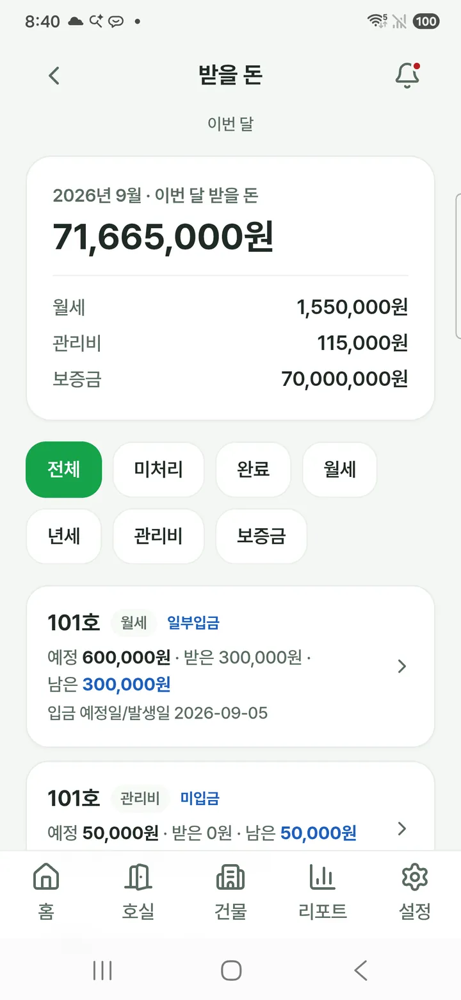
홈으로 돌아오며 보고 있던 달이 그대로 유지됩니다. 선택했던 필터는 화면을 나가면 「전체」로 초기화됩니다.
⚠️ 주의 — 무료체험이나 구독이 끝나 조회만 가능한 상태에서는 금액 상세 화면이 열리지 않고 홈으로 돌아오며 구독 안내가 표시됩니다. 구독 상태를 확인하는 중이거나 로그인하지 않은 상태에서는 상세 대신 로그인·구독 안내 화면이 표시됩니다(17.9·17.11 참고).
그 달에 새로 받기로 한 돈을 호실·항목별로 봅니다.
합계 카드에 「월세」 「관리비」 「보증금」 등 분류 소계가 나오고, 필터 버튼은 「전체」 「미처리」 「완료」 「월세」 「년세」 「관리비」 「보증금」입니다. 각 행은 「{호실} {분류 배지} {상태}」 형식으로, 분류 배지는 「월세」 「년세」 「관리비」 「보증금」 「보증금 증액」 「계약변경 정산」 중 하나이고, 상태는 「미입금」(파랑) 「일부입금」(파랑) 「완료」(녹색) 「예정」 중 하나입니다(2.7.1 그림의 첫 행은 「101호 월세 일부입금」). 그 아래 「예정 N원 · 받은 N원 · 남은 N원」과 「입금 예정일/발생일 {날짜}」가 표시됩니다. 예정 금액이 0보다 큰 항목만 나오며 주인세대는 제외됩니다. 아직 받지 못한 행은 입금 예정일 당일까지 「예정」이고, 다음 날부터 「미입금」으로 바뀝니다. 보증금은 계약 시작일, 계약변경 정산은 적용일이 기준입니다. 일부라도 받았으면 날짜와 관계없이 「일부입금」입니다.
아래로 내리면 보이는 「101호 관리비 미입금」 「101호 보증금 완료」 「201호 월세 미입금」 「201호 관리비 미입금」 행입니다.
예시 화면에서 「101호 보증금 완료」는 「예정 10,000,000원 · 받은 10,000,000원 · 남은 0원」으로 다 받은 상태이고, 「201호 월세 미입금」은 「예정 450,000원 · 받은 0원 · 남은 450,000원」으로 아직 받지 못한 상태입니다.
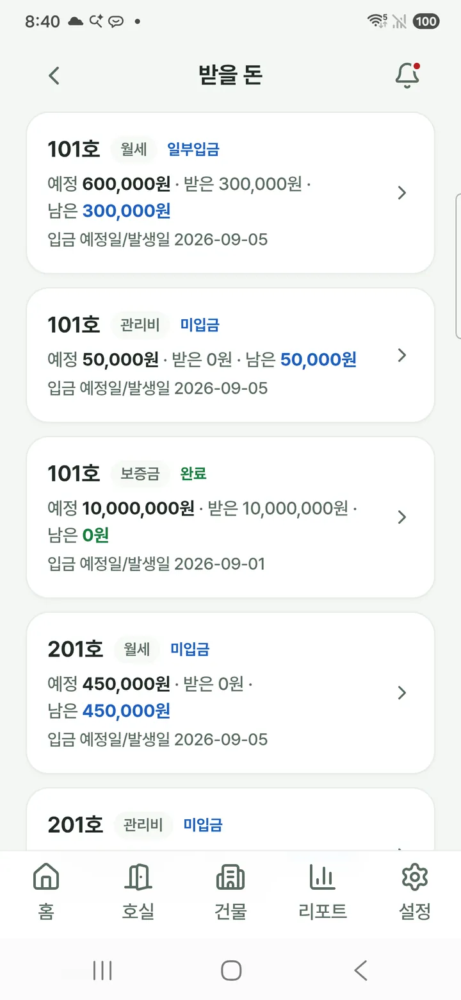
그 호실 계약의 입출금 화면으로 이동합니다. 실제 입금일과 금액을 직접 입력해 저장한 뒤 「‹」로 돌아오면 그 행의 상태와 「받은 N원 · 남은 N원」이 갱신되고, 홈의 「받은 돈」과 「들어옴 N%」도 함께 바뀝니다.
「(당월 받을 돈과 별도)」라고 적힌 이 카드는 보고 있는 달보다 앞선 달에 받지 못한 돈을 호실별로 한 줄씩 보여 주며, 합계가 0보다 클 때만 나타납니다. 위의 합계 카드나 필터 결과에는 합산되지 않습니다. 호실 행을 누르면 그 호실 대표 계약의 입출금 화면이 열립니다.
⚠️ 주의 — 「이전 미입금」 행을 누르면 미입금이 생긴 달이 아니라 지금 상세에서 보고 있는 달로 입출금 화면이 열립니다. 미입금 달의 입금을 기록하려면 입출금 화면에서 해당 달로 이동합니다.
빈 목록일 때는 「이 달에 받을 돈 내역이 없어요.」가 표시됩니다.
그 달 몫으로 실제로 받은 돈을 입금 건별로 봅니다.
제목은 「받은 돈」, 필터 버튼은 「전체」 「미처리」 「완료」입니다. 각 행에는 호실과 상태 「완료」, 「입금 N원」, 「일자 {날짜}」가 표시되고, 입력해 둔 메모가 있으면 「메모: …」가 붙습니다. 입금한 달이 보고 있는 달과 다르면(예: 6월 몫을 7월에 입금) 메모 줄에 실제 입금한 날짜와 「입금」 표시가 함께 붙습니다. 받은 돈은 모두 이미 들어온 돈이므로 모든 행이 「완료」이며, 「미처리」 버튼을 고르면 항상 빈 결과가 됩니다. 미래 달은 빈 목록입니다.
ℹ️ 참고 — 상단 합계는 호실별로 그 달 받을 돈까지만 반영합니다. 어떤 호실에 받을 돈보다 많이 입금된 경우, 합계가 행의 금액을 모두 더한 값보다 작을 수 있습니다. 빈 목록일 때는 「이 달에 받은 돈 내역이 없어요.」가 표시됩니다.
그 달에 나가기로 한 고정지출과 보증금 반환 예정을 항목별로 봅니다.
「나갈 돈」 상세 화면입니다. 합계 「5,326,500원」과 소계 「운영지출 326,500원」 「보증금 반환 5,000,000원」, 필터 버튼, 「공용전기 운영지출 완료」 「수도 운영지출 완료」 행이 보입니다.
합계 카드에는 「운영지출」 「보증금 반환」 「보증금 차액 반환」 등 소계가 나오고, 필터 버튼은 「전체」 「미처리」 「완료」 「운영지출」 「보증금 반환」 「보증금 차액 반환」입니다. 각 행은 지출명 또는 호실, 분류 배지(「운영지출」 「보증금 반환」 「보증금 차액 반환」 「계약변경 정산」), 상태(「미지급」 「일부지급」 「완료」 「예정」), 「예정 N원 · 나간 N원 · 남은 N원」, 「예정일 {날짜}」로 이루어집니다. 일회성 지출(추가지출)은 이 화면에 포함되지 않습니다.
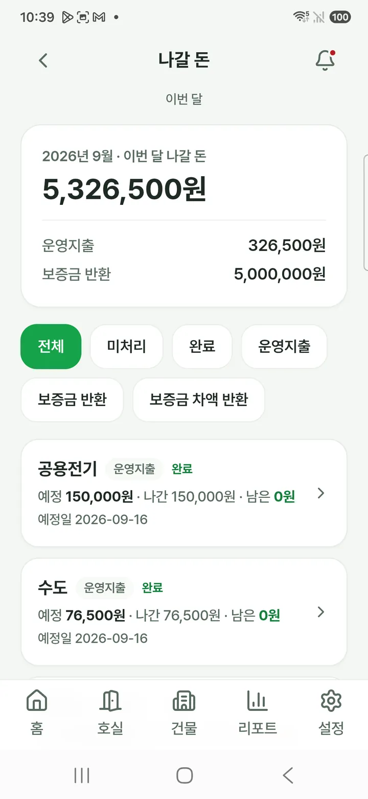
종료일이 지났지만 아직 퇴실확정을 하지 않은 건은 제목이 「{호실} 보증금 반환 예정」, 상태가 「퇴실확정 전」으로 표시되고, 「퇴실확정 시 미수·수리비·관리비 공제·상계 후 최종 반환금이 결정돼요.」라는 안내가 붙습니다. 퇴실확정을 마치면 「보증금 반환」 완료 행으로 바뀌고 메모 「퇴실정산」이 붙습니다. 보증금 반환·차액 반환 행의 「계산 근거」를 펼치면 계약 보증금에서 미입금·원상복구·공과금·중개·위약 차감과 조기퇴실 환급을 거쳐 예상 반환액이 어떻게 나오는지 볼 수 있고, 차액 반환은 기존 보증금·새 계약 보증금·차액 반환 예정이 표시됩니다.
「운영지출」 행은 지출 관리 화면으로, 보증금 관련 행은 계약 입출금 또는 퇴실관리 화면으로 이동합니다. 그 화면에서 출금을 기록하거나 퇴실확정을 마치고 돌아오면 행의 상태와 합계가 갱신됩니다. 빈 목록일 때는 「이 달에 나갈 돈 내역이 없어요.」가 표시됩니다.
그 달에 실제로 나간 돈을 출금 건별로 봅니다.
제목은 「나간 돈」, 필터 버튼은 「전체」 「미처리」 「완료」입니다. 각 행에는 「출금 N원」과 「일자 {날짜}」, 분류 배지가 표시됩니다. 분류는 「운영지출」 「보증금 반환」 「보증금 차액 반환」 「계약변경 정산」 「임대료·관리비 환급」 「퇴실정산 반환」이며, 퇴실정산으로 나간 돈은 항목별로 「보증금 반환」 「임대료·관리비 환급」 「퇴실정산 반환」으로 나뉘어 메모 「퇴실정산」이 붙습니다. 항목을 나누지 않은 예전 자료는 「퇴실정산(항목 미분리 기존 자료)」로 표시됩니다. 이미 나간 돈이므로 모든 행이 「완료」이고, 미래 달은 빈 목록입니다.
빈 목록일 때는 「이 달에 나간 돈 내역이 없어요.」가 표시됩니다.
계약으로 받기로 한 돈과 별개로 등록한 입금을 봅니다.
「추가입금」 상세 화면입니다. 합계 「180,000원」과 안내문, 소계 「추가입금 30,000원」 「퇴실정산입금 150,000원」, 「101호 · 기타입금」 「202호 퇴실정산입금」 행이 보입니다.
합계 카드 아래에 「계약으로 받을 돈과 별개로 등록한 입금이에요. 받을 돈·받은 돈에는 합쳐지지 않아요.」라는 안내가 있고, 「추가입금」과 「퇴실정산입금」 소계가 나옵니다. 필터 버튼은 「전체」 「미처리」 「완료」입니다. 각 행은 호실과 입금 종류(예: 「101호 · 기타입금」) 또는 호실명, 분류 배지(「추가입금」 「퇴실정산입금」), 상태 「완료」, 「입금 N원」, 「일자 {날짜}」, 「메모: …」로 이루어집니다. 이 화면은 주인세대 호실도 포함하며, 받을 돈보다 많이 등록했어도 등록한 금액이 그대로 표시됩니다. 호실 수리비 가운데 임차인이 부담한 몫도 「101호 · 임차인 부담 수리비 · 화장실 수전 누수」처럼 「추가입금」 행으로 나옵니다.
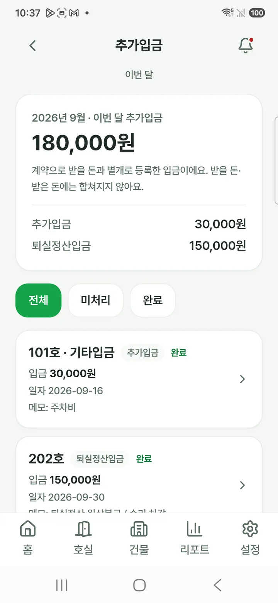
빈 목록일 때는 「이 달에 추가입금 내역이 없어요.」가 표시됩니다.
정기 지출과 별개로 한 번 발생한 지출을 봅니다.
제목은 「추가지출」이고, 합계 카드 아래에 「정기 지출과 별개로 한 번 발생한 지출이에요. 나갈 돈·나간 돈에는 합쳐지지 않아요.」라는 안내가 있습니다. 필터 버튼은 「전체」 「미처리」 「완료」 「추가지출」 「수리비」입니다. 분류는 「추가지출」(직접 등록한 일회성 지출·기타 출금·조기퇴실 환급), 「수리비」(건물·시설·호실 수리), 「중개수수료」로 나뉩니다. 수리비 행은 「{호실} · {수리명}」, 조기퇴실 환급 행은 「{호실} · 조기퇴실 환급」 형식입니다.
일회성 지출은 지출 관리, 수리비는 건물 수리 또는 호실 수리, 중개수수료는 계약 입출금, 조기퇴실 환급은 퇴실관리 화면으로 이동합니다. 빈 목록일 때는 「이 달에 추가지출 내역이 없어요.」가 표시됩니다.
ℹ️ 참고 — 중개수수료는 계약을 저장할 때 계약 시작일 날짜로 출금이 자동 기록됩니다. 실제와 다르면 계약 입출금 화면에서 바로잡습니다(8.5). 이 상세 화면은 기록된 내역을 보여 주는 곳이라 여기서는 고치지 않습니다.
코지임대는 건물 단위로 호실·계약·입출금·고정지출을 관리합니다. 건물이 여러 개라면 홈에서 보고 싶은 건물을 골라 전환하고, 건물의 이름·주소·준공일·집주인 정보는 「건물 수정」 화면에서 고칩니다. 하단의 「건물」 탭에서는 선택한 건물의 문제 현황을 한눈에 보고, 지출·연락처·시설·수리 관리 화면과 건물 일정(교육 등) 화면으로 바로 들어갈 수 있습니다.
이 장에서 할 수 있는 일
홈 화면 맨 위의 건물 카드는 현재 선택된 건물을 보여 줍니다. 건물이 여러 개일 때는 이 카드에서 「내 건물 선택」 창을 열어 조회할 건물을 바꿉니다. 이 창은 화면 아래에서 올라오는 선택창입니다.
홈 건물 카드 오른쪽의 ›를 누르면 「내 건물 선택」 선택창이 아래에서 올라옵니다.
건물 카드 오른쪽의 › 또는 건물명(「코지빌딩」)을 누르면 화면 아래에서 「내 건물 선택」 선택창이 올라옵니다. 이 창에는 내 건물이 모두 목록으로 나오고, 지금 조회 중인 건물은 녹색 테두리와 「현재 선택됨」 표시로 구분됩니다. 대표 건물에는 이름 앞에 「대표」 배지가 붙습니다.
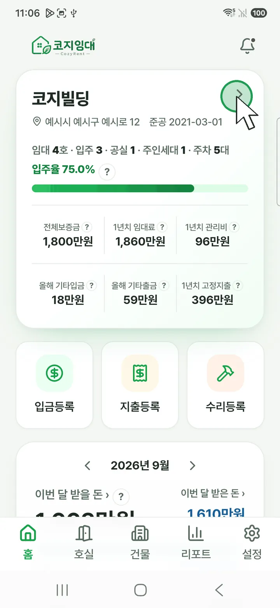
「내 건물 선택」 선택창입니다. 위쪽의 흐리게 가린 상자가 전환할 다른 건물 행(예시에서 가림)이고, 가운데 녹색 테두리 카드가 현재 선택된 코지빌딩입니다. 다른 건물 행을 누르면 그 건물로 바뀝니다.
다른 건물 카드를 누르면 선택창이 닫히고 홈 화면의 모든 숫자가 그 건물 기준으로 새로 표시됩니다. 입주율·보증금·이번 달 받을 돈 같은 숫자와 「호실」·「건물」 탭, 리포트의 「이 건물」도 모두 새로 선택한 건물을 따릅니다. 아무것도 바꾸지 않고 닫으려면 오른쪽 위 X, 아래 「취소」 버튼, 선택창 바깥 배경을 누르거나 휴대폰의 뒤로가기 버튼을 누릅니다.
ℹ️ 참고 — 건물을 고르는 것은 화면에서 볼 대상을 바꾸는 것일 뿐이며 자료가 바뀌지는 않습니다. 자주 보는 건물은 아래 「대표로 설정」으로 지정해 두면 목록에서 「대표」 배지로 바로 찾을 수 있습니다.
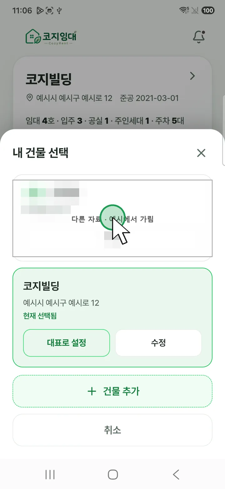
코지빌딩 카드 아래 왼쪽의 「대표로 설정」을 누르면 이 건물이 대표 건물이 됩니다. 오른쪽은 「수정」 버튼입니다.
「대표로 설정」 버튼은 대표가 아닌 건물에만 표시됩니다. 누르면 「대표 건물로 설정했어요.」 안내가 잠깐 뜨고, 그 건물 이름 앞에 「대표」 배지가 옮겨 붙습니다. 선택창은 그대로 열려 있으므로 이어서 다른 건물을 고르거나 「취소」로 닫으면 됩니다. 대표 설정은 조회 대상 전환과는 별개여서, 대표로 설정해도 현재 선택된 건물이 바로 바뀌지는 않습니다. 대표 건물은 앱을 다시 실행했을 때 기본으로 조회되는 건물이며, 건물을 삭제한 뒤에도 남은 건물 중 대표 건물이 먼저 선택됩니다.
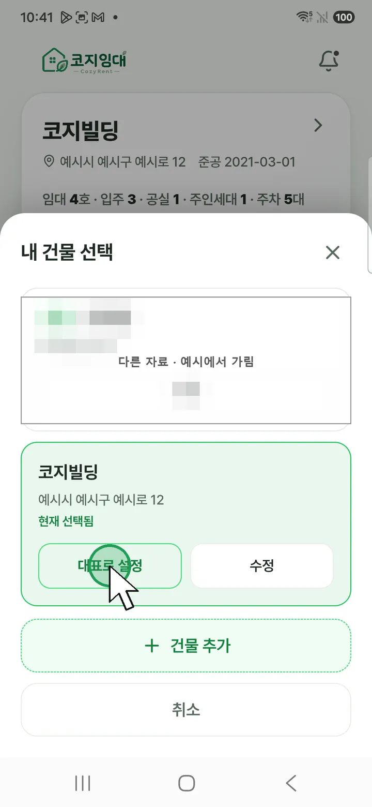
건물 카드 아래 「수정」을 누르면 그 건물의 「건물 수정」 화면으로 이동합니다.
「수정」을 누르면 선택창이 닫히고 해당 건물의 「건물 수정」 화면이 열립니다. 건물 이름·주소·준공일·주차 대수·집주인 정보·지출 운영시작일을 고치는 방법은 3.3에서 설명합니다. 건물명과 주소는 이 「수정」 버튼으로 들어가 바꿉니다. 「건물」 탭이나 「호실」 탭 상단의 건물 정보 줄에서는 이름을 고칠 수 없습니다.
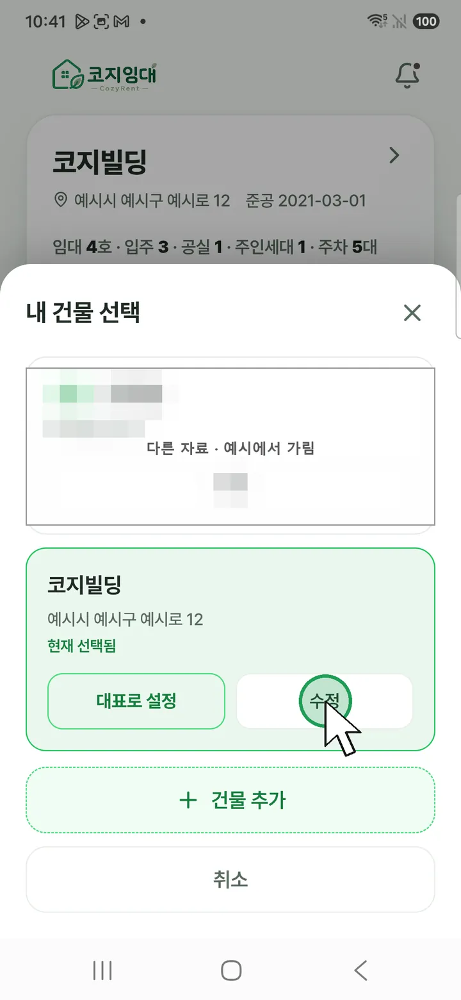
선택창 아래 점선 상자의 「건물 추가」를 누르면 새 건물 등록 화면으로 이동합니다.
「건물 추가」를 누르면 새 건물을 등록하는 화면으로 이동합니다. 건물 이름 등 기본 정보를 입력하고 등록을 마치면 「내 건물 선택」 목록에 새 건물이 추가되고, 이후 이 선택창에서 자유롭게 전환할 수 있습니다. 새 건물 등록 화면의 입력 항목은 1장 1.5 첫 건물 등록 안내와 같습니다.
⚠️ 주의 — 이용 중인 요금제에서 등록할 수 있는 건물 수를 넘으면 선택창이 닫히고 안내창만 표시되며 등록 화면으로 이동하지 않습니다. 또한 체험 기간이 끝났거나 구독이 만료되어 조회 전용 상태일 때는 건물 전환과 오른쪽 위 X·선택창 바깥 배경으로 닫기만 되고, 아래 「취소」 버튼(흐리게 표시)·「대표로 설정」·「수정」·「건물 추가」를 누르면 「구독이 필요한 기능이에요」 안내가 뜹니다.
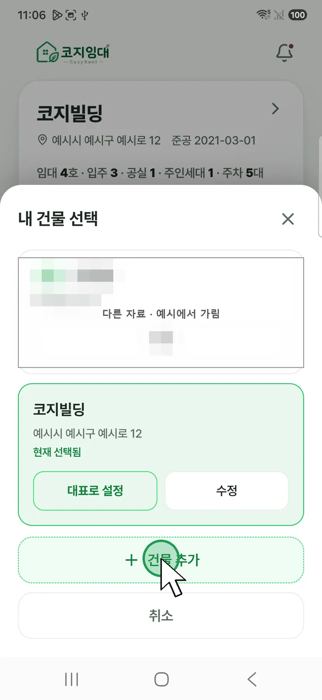
하단 「건물」 탭은 현재 선택된 건물을 관리하는 중심 화면입니다. 위에서부터 건물 정보 줄, 현황판 6칸, 관리 메뉴 6개 순서로 놓여 있습니다.
「건물」 탭입니다. 맨 위 건물 정보 줄, 그 아래 현황판 6칸, 이어서 관리 메뉴가 나옵니다(포인터가 가리키는 곳은 「지출 관리」).
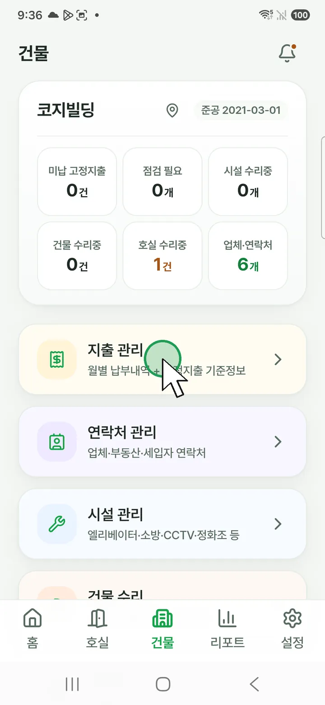
「건물」 탭과 「호실」 탭의 맨 위에는 건물 정보가 한 줄로 표시됩니다. 왼쪽에 건물명(예: 「코지빌딩」), 가운데에 핀 모양의 주소 아이콘, 오른쪽에 「준공 2021-03-01」처럼 준공일 배지가 놓입니다.
핀 아이콘을 누르면 그 아래에 전체 주소가 적힌 말풍선이 열립니다. 긴 주소도 이 말풍선 안에서는 줄이 바뀌어 끝까지 읽을 수 있습니다. 말풍선은 화면의 다른 곳을 누르거나 휴대폰의 뒤로가기 버튼을 누르면 닫힙니다. 아이콘을 다시 눌러도 닫힙니다.
ℹ️ 참고 — 주소를 입력하지 않은 건물에는 핀 아이콘이, 준공일을 입력하지 않은 건물에는 준공 배지가 나타나지 않습니다. 건물 이름이 비어 있으면 「내 건물」로 표시됩니다. 이 줄에서는 정보를 고칠 수 없습니다. 이름·주소·준공일을 고치려면 3.1.3의 「수정」으로 「건물 수정」 화면에 들어가야 합니다.
건물 정보 줄 아래의 카드 6칸은 이 건물에서 지금 챙겨야 할 일의 개수를 앱이 자동으로 세어 보여 줍니다. 카드 전체가 버튼이므로 어느 곳을 눌러도 해당 목록으로 바로 이동하며, 도착한 화면에는 그 카드에 해당하는 항목만 보이도록 이미 걸러져 있습니다.
| 카드 | 뜻 | 누르면 열리는 화면 |
|---|---|---|
| 「미납 고정지출 N건」 | 아직 납부확인이 안 된 고정지출 건수 | 「지출 관리」(미납 항목만 표시) |
| 「점검 필요 N개」 | 예전 방식으로 점검 주기를 정해 둔 시설 중 점검일이 지났거나 7일 안에 다가온 시설 개수 | 「시설 관리」(점검 필요 시설만 표시) |
| 「시설 수리중 N개」 | 수리가 진행 중인 시설 개수 | 「시설 관리」(수리 중 시설만 표시) |
| 「건물 수리중 N건」 | 진행 중인 건물(공용부) 수리 건수 | 「건물 수리」(진행중만 표시) |
| 「호실 수리중 N건」 | 진행 중인 호실 수리 건수 | 「호실별 수리」(진행중만 표시) |
| 「업체·연락처 N개」 | 등록된 연락처 개수 | 「연락처 관리」 |
숫자 색으로 상태를 한눈에 구분할 수 있습니다. 문제 카드 5칸(미납·점검·수리)은 0이면 강조 없이 표시되고, 1 이상이면 미납은 빨강, 점검·수리는 주황으로 강조됩니다. 「업체·연락처」는 문제가 아닌 참고 정보라서 개수와 상관없이 항상 녹색입니다. 위 화면에서 「호실 수리중 1건」이 주황으로, 「업체·연락처 6개」가 녹색으로 표시된 것이 그 예입니다.
💡 팁 — 현황판의 숫자는 각 관리 화면에 기록한 내용을 바탕으로 앱이 계산합니다. 수리를 끝냈다면 해당 수리 기록의 상태를 바꾸고, 고정지출을 냈다면 「지출 관리」에서 납부를 확인해야 숫자가 줄어듭니다.
ℹ️ 참고 — 「점검·관리 등록/조회」에서 새로 만든 점검·검사·교육 일정은 「점검 필요」 숫자에 들어가지 않습니다. 새로 등록한 시설은 처음부터 이 방식이라 「점검 필요 0개」로 보여도 다가오는 일정이 있을 수 있습니다. 다가오는 시설 일정은 시설 관리의 「전체 관리일정」(12.9.8)과 알림으로 확인합니다.
현황판 아래에는 건물 관리 메뉴가 항상 같은 순서로 놓입니다. 각 카드는 제목과 한 줄 설명으로 되어 있고, 누르면 해당 관리 화면으로 이동합니다.
화면을 맨 아래까지 내린 모습입니다. 관리 메뉴 6개가 모두 보이고, 맨 끝에 「건물 일정 등록/조회」가 있습니다. 그 설명 「교육 등 건물 공통 일정과 알림, 완료 이력」은 화면 폭이 좁으면 끝이 줄어 보입니다.
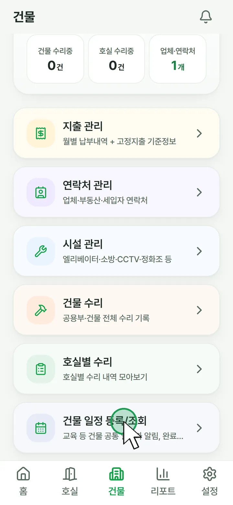
메뉴 카드는 현황판 카드와 달리 걸러내지 않고 각 화면의 기본 목록으로 들어갑니다. 특정 문제만 빨리 보고 싶다면 현황판 카드를, 전체를 훑어보거나 새로 등록하려면 메뉴 카드를 사용하면 됩니다. 각 화면의 자세한 사용법은 지출 관리(10장)·연락처 관리(13장)·시설 관리(12장)·건물 수리와 호실별 수리(11장)·건물 일정(3.2.4)에서 설명합니다.
소방안전관리자 실무교육처럼 특정 시설 한 대가 아니라 건물 전체에 해당하는 일정은 「건물 일정 등록/조회」에 등록합니다. 등록해 두면 예정일 3일 전과 당일 오전 9시에 알려 주고, 끝난 뒤에는 완료를 기록해 이력으로 남깁니다.
「건물 일정 등록/조회」 화면입니다. 제목 아래에 「코지빌딩 건물 공통」이 표시되고, 「예정된 일정」·「완료 이력」 두 구역이 있습니다. 「새 관리일정/알림 등록」을 누릅니다.
처음에는 「예정된 관리일정이 없어요.」·「아직 완료 기록이 없어요.」가 보입니다.
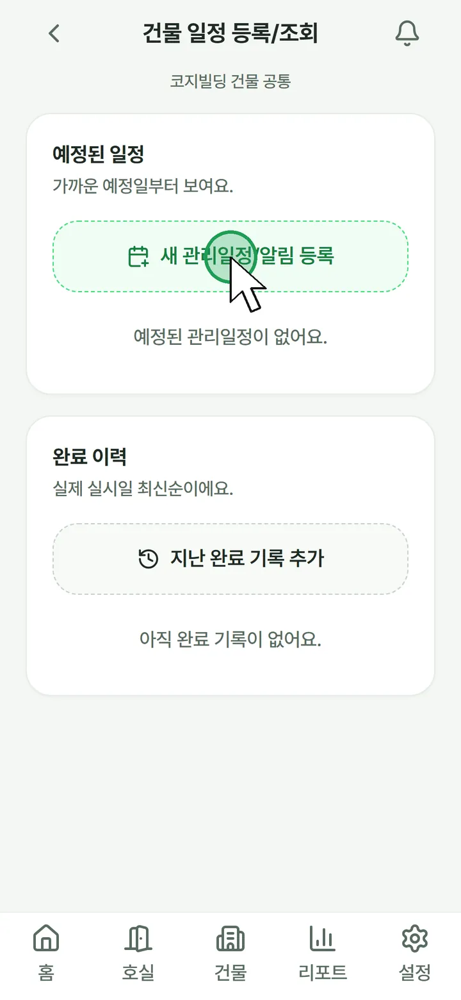
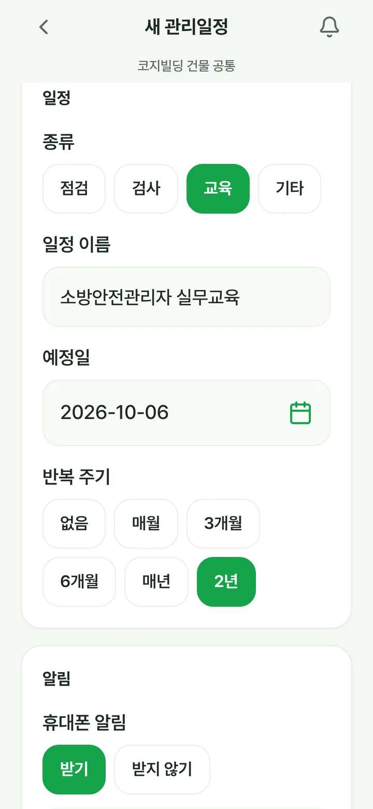
입력 방법(종류·일정 이름·예정일·반복 주기·휴대폰 알림·담당자·메모)은 시설 일정과 같습니다(12.9.2). 저장하면 「관리일정을 등록했어요.」가 뜨고 「예정된 일정」에 카드가 생깁니다.
ℹ️ 참고 — 건물 일정은 시설 관리의 「전체 관리일정」(12.9.8)에는 나오지 않습니다. 이 화면에서 확인합니다. 휴대폰 뒤로가기를 누르면 「건물」 탭으로 돌아갑니다.
건물의 이름·주소·준공일·주차 대수·집주인 정보·지출 운영시작일은 「건물 수정」 화면에서 고칩니다. 들어가는 방법은 홈 → 건물 카드의 › → 「내 건물 선택」 → 해당 건물의 「수정」입니다(3.1.3).
「건물 수정」 화면의 「기본 정보」 카드입니다. 건물 이름·주소·준공일·주차 가능 대수를 고칠 수 있습니다. 준공일에 날짜가 들어 있어 칸 아래에 「지우기」가 보입니다.
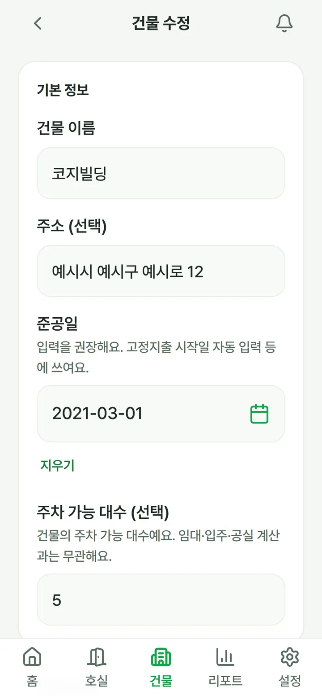
「집주인 정보」 카드와 그 아래 「지출 운영시작일」 카드의 시작 부분입니다.
「집주인 연락처」 아래의 「건물별 계약·안내문 등에 나중에 활용할 정보예요.」라는 안내대로, 집주인 정보는 건물마다 따로 저장되는 참고 정보입니다. 로그인한 계정 정보와 자동으로 연결되지 않으므로, 필요하면 직접 입력합니다. 「집주인 이름」은 20자까지 입력할 수 있습니다. 「집주인 연락처」는 비워 둘 수 있지만, 입력한다면 010-1234-0001처럼 완전한 전화번호 형식이어야 합니다. 자릿수가 맞지 않으면 저장할 때 「집주인 연락처 형식이 올바르지 않아요. 자릿수를 확인해 주세요.」가 붉게 표시되고 저장되지 않습니다.
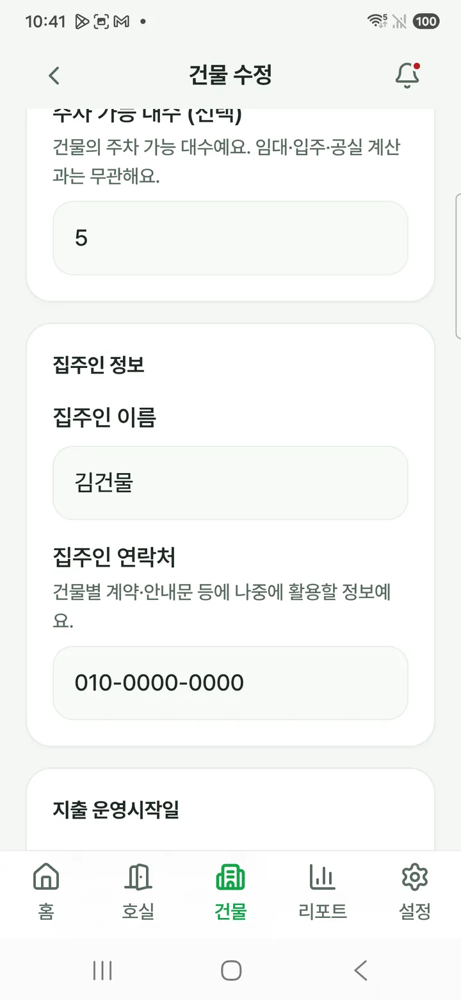
「지출 운영시작일 (선택)」 날짜 칸입니다. 아직 입력하지 않아 「연도-월-일」로 비어 있으며, 이 칸을 누르면 날짜를 고를 수 있습니다. 그 아래에 녹색 「저장」 버튼과 붉은 「위험 영역」이 이어집니다.
「이 날짜부터 고정지출 미납과 이전 미납을 계산해요. 건물 준공일과는 별도예요.」라는 안내처럼, 이 날짜는 「지출 관리」에서 미납과 이전 미납을 세기 시작하는 기준입니다. 예를 들어 오래된 건물을 올해부터 앱으로 관리하기 시작했다면, 운영시작일을 올해 첫 달로 두어 그 이전 달이 미납으로 잡히지 않게 할 수 있습니다. 비워 두어도 됩니다. 이미 넣은 날짜를 없애려면 칸 아래 「지우기」를 누른 뒤 저장합니다.
ℹ️ 참고 — 「준공일」과 「지출 운영시작일」은 서로 자동으로 맞춰지지 않습니다. 준공일을 바꿔도 운영시작일은 그대로이고, 그 반대도 같습니다. 두 날짜는 용도가 다르니 각각 확인해 주세요.
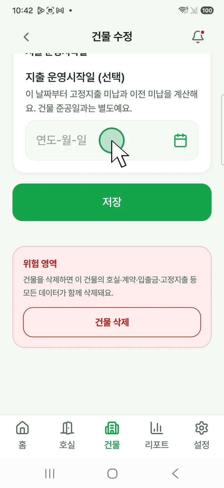
「저장」을 누르면 저장이 끝난 뒤 「건물 정보를 저장했어요.」 안내가 뜨고 잠시 뒤 직전 화면(보통 홈)으로 돌아갑니다. 주소·주차 가능 대수·집주인 이름·집주인 연락처는 칸을 비우고 저장하면 지워집니다. 바뀐 건물 이름·주소·준공일·주차 대수는 홈 카드와 「건물」·「호실」 탭의 건물 정보 줄, 「내 건물 선택」 선택창에 바로 반영됩니다.
저장되지 않는 경우는 다음과 같습니다.
💡 팁 — 글자 수 제한은 이번에 고친 항목에만 적용됩니다. 예전에 저장된 값은 손대지 않으면 그대로 유지됩니다. 수정을 취소하려면 저장하지 않고 왼쪽 위 ‹ 또는 휴대폰의 뒤로가기 버튼으로 나가면 됩니다. 저장하지 않은 변경은 반영되지 않습니다.
더 이상 관리하지 않는 건물은 「건물 수정」 화면 맨 아래 「위험 영역」에서 삭제합니다. 삭제는 두 번 확인을 거치며, 한 번 삭제하면 되돌릴 수 없습니다.
붉은 「위험 영역」 카드입니다. 안내문 아래 「건물 삭제」 버튼을 누르면 1단계 확인창이 뜹니다.
「위험 영역」 카드에는 「건물을 삭제하면 이 건물의 호실·계약·입출금·고정지출 등 모든 데이터가 함께 삭제돼요.」라는 안내가 있습니다. 붉은 테두리의 「건물 삭제」를 누르면 바로 지워지지 않고 첫 번째 확인창 「건물을 삭제할까요?」가 나타납니다.
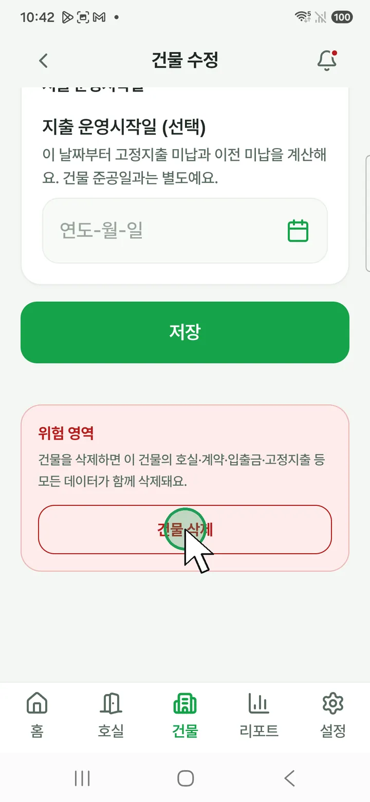
「건물을 삭제할까요?」 확인창입니다. 「취소」를 누르면 아무 변화 없이 돌아가고, 「계속」을 누르면 2단계 확인으로 넘어갑니다.
「건물을 삭제할까요?」 창에는 「이 건물의 모든 데이터가 삭제돼요. 계속할까요?」라는 문구와 「취소」·「계속」 버튼이 있습니다. 「취소」를 누르면 창이 닫히고 건물은 그대로 남습니다. 「계속」을 누르면 두 번째 확인창 「정말 삭제할까요?」로 넘어갑니다.
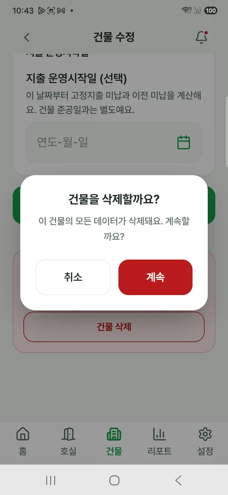
두 번째 창에는 「이 건물의 호실, 계약, 입출금, 고정지출 등 모든 데이터가 함께 삭제되며 복구할 수 없어요.」라는 안내와 「취소」·「건물 삭제」 버튼이 있습니다. 「건물 삭제」를 누르면 버튼이 「삭제 중…」으로 바뀌고 삭제가 끝날 때까지 「취소」는 눌리지 않습니다. 삭제가 끝나면 홈으로 이동하며, 남은 건물이 있으면 다음 대표 건물이 자동으로 선택됩니다. 남은 건물이 없으면 처음 시작할 때처럼 새 건물을 등록하는 화면이 열립니다.
삭제에 실패하면 확인창이 닫히고 「건물 삭제에 실패했어요. 다시 시도해 주세요.」 안내만 표시됩니다. 이때 건물과 자료는 그대로 남아 있으니 잠시 후 다시 시도해 주세요.
⚠️ 주의 — 건물을 삭제하면 그 건물의 호실, 계약, 입출금 기록, 고정지출, 시설·수리·점검과 관리일정 기록 등 모든 자료가 함께 삭제되고 복구할 수 없습니다. 세입자가 남아 있거나 정산이 끝나지 않은 건물은 삭제하지 말고, 필요한 기록을 먼저 확인해 두세요. 삭제 전에 자료를 남겨 두려면 설정의 「백업 파일 내보내기」(16장 16.3)로 백업 파일을 먼저 만들어 두는 것이 안전합니다.
「호실」 탭은 건물의 층과 호실을 한눈에 보고, 구조를 고치고, 호실 하나하나의 상세 화면으로 들어가는 출발점입니다. 호실 카드의 색과 배지를 보면 입주·공실·미입금·수리 상황을 바로 알 수 있습니다. 층·호실을 추가하거나 삭제할 때는 「층추가」·「상가추가」·「호실추가」 버튼으로 편집 상태에 들어간 뒤, 「완료」 → 「저장하기」를 눌러야 실제로 반영됩니다. 호실 상세에서는 호실 이름과 집구조를 정리하고, 계약 등록·수리·업체연락처로 이어갈 수 있습니다.
이 장에서 할 수 있는 일
하단 탭에서 「호실」을 누르면 현재 선택한 건물의 층과 호실이 표시됩니다. 위에서부터 건물 카드, 상태 필터 카드, 구조 편집 버튼 3개, 층별 호실 카드 순서입니다.
호실 탭입니다. 위에서부터 상태 필터(전체/입주/공실/수리중), 층추가·상가추가·호실추가 버튼, 층별 호실 카드가 보입니다.
호실 탭 맨 위에는 건물 이름(예: 코지빌딩)과 준공일이 보입니다. 그 아래 초록 카드가 상태 필터, 다시 아래 세 버튼이 구조 편집 버튼입니다. 층은 「1층 (2호)」처럼 층 이름과 호실 수로 표시되고, 호실 카드는 2열로 나열됩니다. 계약이 없는 공실 카드에는 「+ 계약 등록」 문구가 보이며, 카드를 누르면 그 호실의 상세 화면으로 이동합니다.
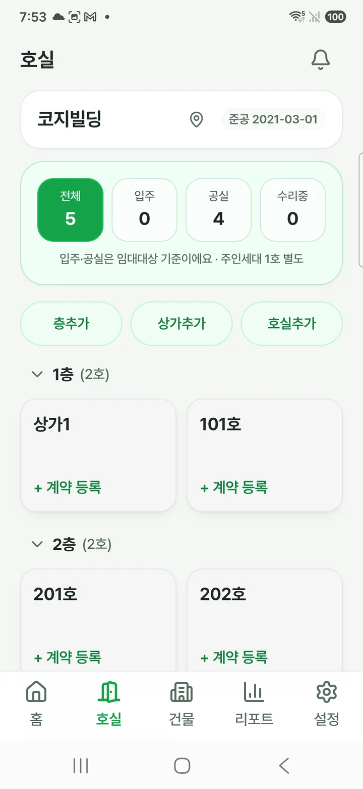
「전체」가 선택된 상태입니다. 101호에 계약이 등록되어 필터 카드의 숫자가 입주 1·공실 3·수리중 1로 집계되었습니다.
필터를 누르면 해당 상태의 호실만 남고, 그 상태의 호실이 하나도 없는 층은 목록에서 숨겨집니다. 각 칸의 숫자는 앱이 자동으로 집계합니다. 「전체」는 주인세대를 포함한 모든 호실 수이고, 「입주」·「공실」은 임대 대상 호실만 세므로 주인세대는 빠집니다. 주인세대가 1호 이상 있으면 카드 아래에 「입주·공실은 임대대상 기준이에요 · 주인세대 N호 별도」 안내가 함께 표시됩니다.
ℹ️ 참고 — 「수리중」은 입주 중·퇴실 대기·주인세대 등 사람이 쓰고 있는 호실에 진행 중인 수리가 있을 때만 집계됩니다. 공실 호실에 진행 중 수리가 있어도 「수리중」 숫자에는 잡히지 않습니다.
💡 팁 — 층추가·호실추가 등으로 구조를 편집하면 필터는 자동으로 「전체」로 돌아옵니다.
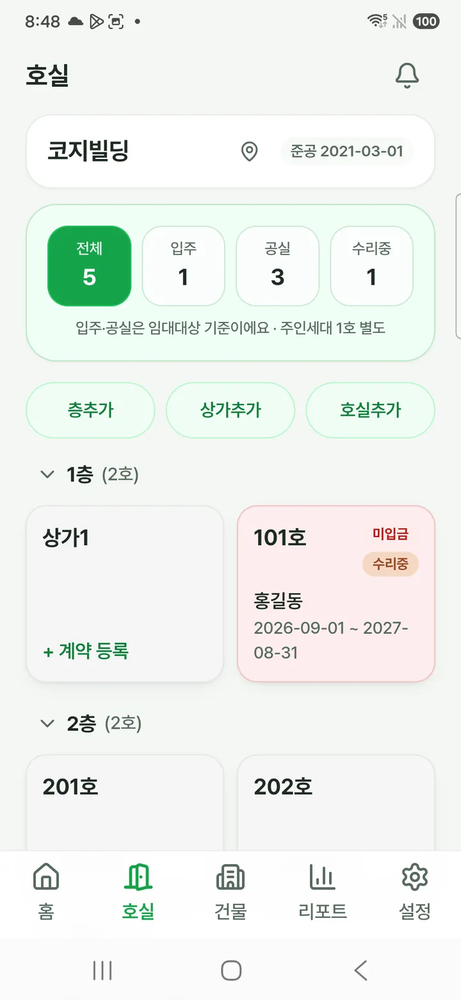
3층까지 내려서 본 호실 탭입니다. 301호는 노란 「주인세대」 카드로 표시됩니다.
층 이름 옆 숫자는 그 층의 호실 수(상가 포함)입니다. 지하층은 「지하1층」처럼 표시됩니다. 호실이 하나도 없는 층에는 「아직 호실이 없어요. 수정에서 추가하세요.」 문구가 보입니다. 건물에 층·호실이 전혀 없으면 목록 자리에 「등록된 호실이 없어요.」 「위의 층추가·호실추가·상가추가로 시작하세요.」가 표시됩니다.
⚠️ 주의 — 「층추가」·「상가추가」·「호실추가」로 편집 상태에 들어가 있는 동안에는 호실 카드가 잠겨 눌러도 상세로 이동하지 않습니다. 「완료」 또는 「취소」로 편집을 마친 뒤 이동하세요.
호실 카드는 따로 조작할 필요가 없습니다. 계약·입금·수리 자료를 바탕으로 앱이 자동으로 색과 배지를 붙입니다.
배지와 보조 문구가 붙은 호실 카드 예입니다. 101호는 「미입금」·「수리중」 배지, 201호는 「미입금」·「갱신예정」 배지와 「갱신 계약 2026-10-01 시작 예정」 문구, 202호는 배지 없이 「퇴실확정 · 2026-09-30」 문구, 301호는 「주인세대」 배지입니다.
카드 색
| 카드 색 | 뜻 |
|---|---|
| 회색 | 공실(계약 없음). 「+ 계약 등록」 문구가 보입니다. |
| 녹색 | 입주 중이며 「미입금」·「계약만료」가 없는 호실(「퇴실 대기」 배지가 붙은 호실도 미입금이 없으면 녹색) |
| 빨강 | 「미입금」 또는 「계약만료」(만기 90일 이내)가 있는 호실 |
| 보라 | 「계약변경예정」 호실 |
| 파랑 | 「갱신예정」·「예정계약」(다음 계약 입주 예정) 호실, 입주 예정 공실 |
| 노랑 | 「주인세대」 호실 |
배지와 보조 문구
ℹ️ 참고 — 공실 카드에 과거 미입금이 남아 있으면 「미입금」 배지는 뜨지만 카드 색은 회색(또는 입주 예정이면 파랑)을 유지합니다. 퇴실 예정일이 비어 있으면 날짜 없이 「퇴실 예정」만 표시됩니다.
층과 호실을 추가·삭제하려면 먼저 「층추가」·「상가추가」·「호실추가」 중 하나를 눌러 편집 상태로 들어갑니다. 편집 상태에서는 위쪽에 「취소」·「완료」 버튼이 나타나고, 호실 카드는 잠깁니다. 편집 중의 변경은 화면에만 쌓이며, 「완료」 → 「저장하기」를 눌러야 실제 건물 정보에 반영됩니다.
「층추가」 버튼을 누르면 편집 상태로 들어갑니다.
버튼을 누르면 편집 상태가 되고, 위에 「취소」·「완료」가 표시됩니다. 각 버튼은 자기 대상만 다룹니다. 「층추가」 상태에서는 층 이름 옆에 빨간 ⊖가, 「호실추가」 상태에서는 일반 호실 카드에, 「상가추가」 상태에서는 상가 카드에만 ⊖가 나타납니다. 편집 중에 다른 버튼을 눌러 상태를 바꿔 가며 작업을 이어갈 수 있고, 변경은 모두 모아서 한 번에 저장됩니다.
ℹ️ 참고 — 주인세대 지정·해제는 이 화면에 없습니다. 호실 카드 → 호실 상세(4.4)의 「주인세대」 버튼(이미 지정된 호실에서는 「주인세대 해제」)에서 합니다(5.2·5.6 참고).
「지상층 추가」·「지하층 추가」 선택창입니다. 층 이름 옆 ⊖는 층을 삭제하는 버튼입니다.
「지상층 추가」를 누르면 지금 있는 가장 높은 층의 다음 층(예: 3층까지 있으면 4층)이 자동으로 만들어지고, 몇 층이 추가되었는지 알려 주는 안내가 뜹니다. 「지하층 추가」는 「지하1층」, 「지하2층」… 순서로 아래로 늘어나며 같은 안내가 뜹니다. 층 이름은 직접 입력하지 않고 앱이 자동으로 붙입니다.
새로 추가된 「4층 (0호)」가 빨간 테두리로 강조됩니다. 오른쪽 ⊖를 누르면 추가가 취소됩니다.
새 층은 아직 호실이 없어 「아직 호실이 없어요. 수정에서 추가하세요.」가 표시됩니다. 이어서 「호실추가」·「상가추가」로 그 층에 호실을 넣을 수 있습니다. 아직 저장 전이므로 마지막에 「완료」 → 「저장하기」(4.3.6)까지 진행해야 합니다.
「호실추가」 상태에서 2층 버튼을 눌러 2층에 호실을 추가하는 화면입니다. 일반 호실 카드(101호)에만 ⊖가 보입니다.
층 버튼을 누르는 즉시 그 층에 호실이 하나 추가되고, 어떤 호실이 추가되었는지(예: 201호) 알려 주는 안내가 뜹니다. 호실 이름은 그 층의 가장 큰 호수 다음 번호로 앱이 자동으로 붙입니다(1층 → 101호, 102호…, 지하1층 → B101호…). 상가는 층과 관계없이 건물 전체에서 「상가1」, 「상가2」… 순서로 번호가 붙고, 추가된 상가 이름을 알려 주는 안내가 뜹니다. 층이 하나도 없으면 선택창에 고를 층이 없으므로 먼저 층을 추가하세요.
2층에 「203호」가 추가되어 강조되고, 층 이름이 2층 (3호)로 바뀌었습니다. 카드의 ⊖를 누르면 추가가 취소됩니다.
같은 층 버튼을 다시 누르면 204호, 205호… 순서로 계속 추가할 수 있습니다. 상가도 같은 방식입니다.
「상가추가」 상태입니다. 상가 카드(상가1)에만 ⊖가 보이고, 편집을 마치면 위쪽 「완료」를 누릅니다.
「상가추가」를 누른 뒤 층 버튼을 누르면 그 층에 상가가 하나 추가되고 빨간 테두리로 강조됩니다. 이 상태에서는 상가 카드에만 ⊖가 보이므로, 일반 호실을 지우려면 「호실추가」 상태로 바꿔야 합니다. 상가 추가를 마쳤으면 위쪽 「완료」를 눌러 저장 확인창(4.3.6)으로 넘어갑니다.
⚠️ 주의 — 요금제에 호실 등록 한도가 있는 경우, 계정 전체(다른 건물 포함, 아직 저장하지 않은 호실 포함)의 호실 수가 한도에 닿으면 호실이 추가되지 않고 「현재 요금제의 호실 등록 한도에 도달했어요.」 안내가 표시됩니다.
ℹ️ 참고 — 상가 번호는 지금 화면에 남아 있는 상가 중 가장 큰 번호의 다음 번호로 붙습니다. 중간 번호를 지워도 빈 번호를 다시 채우지 않습니다(상가1·상가3이 있으면 다음은 상가4).
아직 저장하지 않은 새 층·호실은 빨간 ⊖(추가 취소)를 눌러 바로 없앨 수 있습니다.
방금 추가한 203호의 ⊖(추가 취소)를 누릅니다.
203호가 사라져 2층이 다시 (2호)로 표시됩니다.
층도 같습니다. 4.3.1에서 추가한 4층의 ⊖를 누르면 바로 4층이 사라집니다.
방금 추가한 4층이 사라졌습니다. 이어서 호실이 있는 1층의 ⊖를 눌러 봅니다.
4층 이름 줄 오른쪽의 ⊖를 누르면 확인창 없이 4층이 목록에서 사라지고, 층 목록은 1~3층으로 돌아갑니다. 아직 저장 전이므로 실제 건물 정보는 바뀌지 않습니다. 이미 저장된 층(예: 1층)의 ⊖는 추가 취소가 아니라 층 삭제이며, 그 층에 호실이나 상가가 있으면 삭제되지 않습니다(4.3.4).
ℹ️ 참고 — ⊖는 현재 편집 상태와 같은 종류의 항목에만 보입니다. 「층추가」 상태에서는 층 이름 옆에, 「호실추가」 상태에서는 일반 호실 카드에, 「상가추가」 상태에서는 상가 카드에만 나타납니다. 새로 추가한(빨간 테두리) 항목의 ⊖는 추가 취소이고, 이미 저장된 항목의 ⊖는 삭제(4.3.4·4.3.5)입니다.
이미 저장된 층은 호실·상가가 하나도 없을 때만 삭제할 수 있습니다.
호실이나 상가가 남아 있는 층의 ⊖를 누르면 층은 삭제되지 않고 「이 층의 호실이나 상가를 먼저 삭제해 주세요.」 안내가 표시됩니다.
1층에 상가1·101호가 있어 ⊖를 눌러도 층이 그대로 남아 있습니다(이때 표시되는 「이 층의 호실이나 상가를 먼저 삭제해 주세요.」 안내는 이 그림에 담기지 않았습니다).
이 경우 먼저 「호실추가」·「상가추가」 상태에서 그 층의 호실·상가를 삭제(4.3.5)한 뒤 다시 층을 삭제하세요.
ℹ️ 참고 — 층 정보를 읽지 못하면 「층 정보를 확인하지 못해 삭제할 수 없어요. 다시 시도해 주세요.」가 표시됩니다. 잠시 후 다시 시도하세요.
이미 저장된 호실·상가는 아무 자료도 연결되어 있지 않을 때만 삭제할 수 있습니다. 즉 공실이면서 퇴실 대기가 아니고, 예정·과거 계약이 없고, 입출금·수선·메모·정산 기록이 없어야 합니다. 또 주인세대로 지정되어 있지 않고 지정된 적도 없어야 하며, 거래처·시설이 연결되어 있지 않아야 합니다.
「호실추가」 상태에서 저장된 101호 카드 오른쪽 위의 ⊖를 누릅니다.
삭제할 수 없는 호실이면 확인창 대신 이유가 안내됩니다.
| 안내 문구 | 먼저 해야 할 일 |
|---|---|
| 「입주 중이거나 퇴실 처리가 남아 있어 삭제할 수 없어요.」 | 입주 중·퇴실 대기 호실은 삭제할 수 없습니다. 퇴실 처리를 마친 뒤에도 계약 기록이 남으므로 그 호실은 계속 삭제되지 않습니다. |
| 「입주 예정 계약이 있어 삭제할 수 없어요.」 | 예정 계약을 삭제해 이 호실에 계약 기록이 하나도 남지 않아야 삭제할 수 있습니다. |
| 「계약 기록이 있어 삭제할 수 없어요.」 | 과거 계약 기록이 있는 호실은 삭제할 수 없습니다. |
| 「입금·수선 등 기록이 있어 삭제할 수 없어요.」 | 입출금·수선·메모·정산 기록이 있는 호실은 삭제할 수 없습니다. |
| 「현재 주인세대로 지정돼 있어 삭제할 수 없어요. 위의 [주인세대]를 눌러 일반 임대 호실로 해제한 뒤 [주인세대 기록 삭제]를 눌러 주세요.」 | 호실 상세에서 「주인세대 해제」(안내 문구의 [주인세대] 버튼) 뒤 「주인세대 기록 삭제」를 합니다(5.6·5.7 참고). |
| 「주인세대 사용 기록이 있어 삭제할 수 없어요. 위의 [주인세대]를 누른 뒤 해당 호실의 [주인세대 기록 삭제]를 먼저 눌러 주세요.」 | 호실 상세에서 「주인세대 기록 삭제」를 합니다(5.7 참고). |
| 「거래처가 연결돼 있어 삭제할 수 없어요. 연결을 먼저 해제해 주세요.」 | 거래처 연결을 해제합니다. |
| 「시설이 연결돼 있어 삭제할 수 없어요. 연결을 먼저 해제해 주세요.」 | 시설 연결을 해제합니다. |
| 「호실 정보를 확인하지 못해 삭제할 수 없어요. 다시 시도해 주세요.」 / 「건물 정보를 확인하지 못해 삭제할 수 없어요. 잠시 후 다시 시도해 주세요.」 | 잠시 후 다시 시도합니다. |
⚠️ 주의 — 안내 문구에 나오는 [주인세대]·[주인세대 기록 삭제] 버튼은 호실 탭이 아니라 호실 카드를 눌러 들어가는 호실 상세 화면에 있습니다.
ℹ️ 참고 — 호실을 삭제해도 다른 호실의 이름이나 순서는 바뀌지 않습니다. 202호를 지워도 203호는 그대로 203호입니다.
편집이 끝나면 위쪽의 「완료」로 저장하거나 「취소」로 모든 변경을 버립니다.
편집을 마친 뒤 오른쪽 위 「완료」를 누릅니다.
「완료」를 누르면 바로 저장되지 않고 「호실 구조를 저장할까요?」 확인창이 먼저 열립니다.
「추가·삭제한 층/호실이 실제 건물 정보에 반영됩니다.」 안내와 「저장하기」·「계속 수정」 버튼이 보입니다.
「저장하기」를 누르면 편집 중 추가·삭제한 층·호실이 실제 건물 정보에 반영되고 「저장되었습니다.」 안내가 뜹니다. 「계속 수정」을 누르면 창이 닫히고 편집 상태로 돌아갑니다. 저장에 실패하면 「저장하지 못했어요.」로 시작하는 안내가 표시되고 편집 내용은 그대로 남아 있으니 다시 「완료」를 누르세요.
저장 후 일반 상태로 돌아온 호실 탭입니다. 101호 카드를 누르면 호실 상세로 이동합니다.
취소 — 위쪽 「취소」를 누르면 확인 없이 편집 중 변경이 모두 버려지고 「변경사항을 취소했습니다.」 안내가 뜹니다. 저장하지 않은 추가·삭제는 남지 않습니다.
편집 중 뒤로가기 — 휴대폰의 뒤로가기 버튼은 열린 창부터 차례로 닫습니다. 확인창이 열려 있으면 그 창을 닫고, 다음에는 층·호실·상가 추가 선택창을 닫고, 그다음에 변경 사항이 있으면 「수정 중인 내용이 있어요. 변경사항을 취소하고 나갈까요?」 창이 열립니다. 여기서 「변경 취소」를 누르면 변경을 버리고 편집을 끝냅니다. 변경 사항이 없으면 바로 편집 상태가 끝나고, 편집 상태가 아닐 때는 홈으로 이동합니다.
편집 중 다른 탭으로 이동 — 하단 탭 등으로 다른 화면에 가려 하면 같은 확인창이 열리고, 「변경 버리고 이동」을 누르면 변경을 버리고 이동합니다.
⚠️ 주의 — 「완료」만 누르고 「저장하기」를 누르지 않으면 저장되지 않습니다. 확인창의 「저장하기」까지 눌렀는지 확인하세요.
ℹ️ 참고 — 이 화면에서 호실 이름(호수)을 바꾸는 기능은 없습니다. 호실 이름은 호실 상세의 호실명 수정(4.4.1)에서 바꿉니다.
호실 탭에서 호실 카드를 누르면 그 호실의 상세 화면이 열립니다. 이 화면이 호실 하나에 관한 모든 작업의 출발점입니다.
101호 상세 화면입니다. 호실명 옆 ✎ 연필(초록 표시, 호실명 수정), 「집구조」, 「계약 등록」·「주인세대」 버튼, 계약 목록(빈 상태), 아래쪽 「호실 관리」의 「수리 등록/조회」·「업체연락처」 메뉴가 보입니다.
화면 구성은 위에서부터 다음과 같습니다.
ℹ️ 참고 — 삭제된 호실을 알림 등에서 열었을 때처럼 이 건물에 없는 호실로 들어오면 「호실 없음」 화면에 「등록되지 않은 호실이에요.」 「이 건물에 없는 호실 주소로 들어왔어요. 호실 목록에서 다시 선택해 주세요.」가 표시됩니다. 「호실 목록으로」를 누르면 호실 탭으로 돌아갑니다. 계약을 골라야 하는 화면에서 돌아온 경우 「계약을 다시 선택해주세요.」, 주인세대 전용 화면에서 돌아온 경우 「현재 주인세대로 지정된 호실이 아니에요.」 안내가 뜹니다.
호실명 수정은 화면에 보이는 표시 이름만 바꾸는 기능입니다. 계약·입출금 기록은 그대로 유지됩니다.
호실 카드의 호실 이름(예: 101호) 바로 옆에 있는 ✎ 연필을 누르면 「호실명 수정」 창이 열립니다.
「호실명 수정」 창입니다. 여기서는 이름을 바꾸지 않고 「취소」를 누릅니다.
창에는 「화면에 보이는 호실 표시명만 바꿔요. 계약·입출금 기록은 그대로 유지돼요.」와 「비워두면 기본 이름(101호)으로 돌아가요.」 안내가 보입니다. 입력란에 원하는 이름(예: 101호 A)을 넣고 「저장」을 누르면(키보드의 엔터 키로도 저장됩니다) 「호실명을 변경했어요.」 안내와 함께 호실 상세·호실 탭·홈 등 모든 화면의 표시 이름이 바뀝니다. 입력란을 비우고 「저장」하면 앱이 자동으로 붙인 기본 이름(예: 101호)으로 되돌아갑니다. 「취소」를 누르면 바꾸지 않고 창이 닫힙니다. 저장에 실패하면 「저장하지 못했어요.」로 시작하는 안내가 표시되고 창은 입력한 이름 그대로 열려 있습니다. 잠시 후 다시 「저장」을 누릅니다.
ℹ️ 참고 — 이름을 바꿔도 호실 자체는 같은 호실로 유지되므로 계약·입출금·수리 기록은 모두 그대로입니다.
「호실 구조 등록」 창에서 「원룸」을 선택합니다.
선택 항목은 누를 때마다 바로 저장됩니다. 선택한 항목은 초록색으로 바뀌고, 같은 항목을 다시 누르면 선택이 해제됩니다.
원룸 · 1개 · 발코니를 선택한 뒤 「완료」를 누릅니다. 선택이 바로 저장되어 창 제목이 「호실 구조 수정」으로 바뀌어 있습니다.
「완료」는 창을 닫는 버튼입니다(선택은 이미 저장되어 있습니다).
「호실정보 원룸 · 화장실 1개 · 발코니」가 표시됩니다. 이어서 「계약 등록」을 누릅니다.
바꾸고 싶으면 다시 「집구조」를 눌러 「호실 구조 수정」 창에서 다른 항목을 선택하면 됩니다. 선택을 모두 해제하면 「호실정보」 줄이 사라집니다.
새 계약 등록 화면으로 이동합니다. 계약 입력 방법은 6.2(새 계약 등록하기)를 참고하세요. 이 버튼은 호실 상세에서 계약을 새로 만드는 유일한 방법이며, 주인세대로 지정된 호실에서도 표시됩니다.
💡 팁 — 호실 탭의 공실 카드에 보이는 「+ 계약 등록」 문구는 버튼이 아니라 카드 안내 문구입니다. 카드를 누르면 호실 상세로 오고, 여기서 「계약 등록」을 누릅니다.
호실에 계약이 있으면 「계약 등록」·「주인세대」 버튼 아래에 계약 카드가 나열됩니다. 카드를 누르면 그 계약의 관리 화면(6.1 「계약」 화면)으로 이동합니다.
정렬 순서 — 퇴실대기 → 현재계약 → 미래계약 → 과거계약 순입니다. 퇴실대기·과거는 종료일이 최근인 것부터, 현재는 시작일이 최근인 것부터, 미래는 시작일이 빠른 것부터 보입니다. 주인세대로 지정된 호실에서는 주인세대 카드가 현재계약 자리에 표시됩니다.
카드에 보이는 것 — 카드마다 구분 배지(「퇴실대기」·「현재계약」·「미래계약」·「과거계약」, 그리고 「계약갱신」·「계약변경」으로 만들어진 계약 표시), 계약 형태(「전세」·「월세」·「년세」), 계약자·보증금·계약 기간과 함께 입금 상황(입금 예정일·이번 달 입금 상태·미입금 금액)과 진행 상황(입주 예정·퇴실 진행·계약 만료·방내놓음·갱신·계약변경 예정·「퇴실정산 완료」·보증금 반환 예정·수선 진행 중 등)이 요약되어 표시됩니다. 모두 앱이 자동으로 표시합니다. 각 상태 문구의 뜻은 6.1(「계약」 화면)과 19.1(상태·배지 용어표)을, 입금 문구는 8장 입출금, 퇴실·정산 문구는 9장 퇴실을 참고하세요.
ℹ️ 참고 — 보증금을 아직 돌려주지 않은 계약(퇴실대기 또는 만기 90일 이내)은 「보증금 반환 예정」이 빨간색으로 표시됩니다.
호실 상세 아래쪽 「호실 관리」(4.4 첫 그림 하단)에는 두 메뉴가 있습니다.
수리는 11.1(호실 수리 목록 보기)·11.2(호실 수리 등록), 업체연락처는 13.8(호실 업체연락처)을 참고하세요.
집주인이 직접 사는 집이나 사무실로 쓰는 호실은 임대료를 받지 않습니다. 이런 호실을 「주인세대」로 지정하면 임대수익·미입금·입주율 계산에서 빠지고, 그 호실에서 쓴 지출·수리비와 메모만 따로 기록할 수 있습니다. 주인세대는 언제든지 다시 일반 임대 호실로 되돌릴 수 있고, 그동안의 기록은 그대로 남습니다.
이 장에서 할 수 있는 일
ℹ️ 참고 — 이 장의 예시는 코지빌딩 301호를 기준으로 합니다. 화면의 날짜는 예시입니다.
계약이 없는 공실을 주인세대로 바꿉니다. 시작일을 고르는 창과 최종 확인창, 두 창을 거칩니다.
주인세대를 해제한 직후의 301호 상세 화면입니다(아래 검은 안내는 해제가 끝났다는 표시). 「계약 등록」 오른쪽의 노란 「주인세대」 버튼을 누르면 지정 절차가 시작됩니다.
「주인세대」 버튼은 현재 주인세대가 아닌 호실에만 보입니다. 이미 주인세대인 호실에는 같은 자리에 「주인세대 해제」 버튼이 보입니다. 이 화면처럼 과거에 주인세대로 쓴 기록이 있으면 버튼 아래에 「과거 사용 기록 N건」과 「주인세대 기록 삭제」가 함께 표시됩니다(5.7 참고).
「시작일」에 오늘 날짜가 미리 들어 있습니다. 날짜를 확인하거나 바꾼 뒤 「확인」을 누릅니다.
「시작일」에는 오늘 날짜가 기본으로 들어 있습니다. 과거부터 직접 쓰고 있었다면 달력 아이콘을 눌러 실제로 사용을 시작한 날짜로 바꿉니다. 이 날짜부터 임대 계산에서 제외되므로 정확하게 고르는 것이 좋습니다. 날짜가 비어 있으면 「확인」 버튼이 눌리지 않습니다. 「취소」를 누르면 아무것도 바뀌지 않습니다.
이전에 주인세대로 쓴 마지막 날과 같은 날짜를 골라 「기존 집주인 사용기간과 겹쳐요.」가 표시된 모습입니다. 날짜 칸을 눌러 다음 날 이후로 바꿉니다.
이전 주인세대 기간의 종료일과 같은 날을 고르면 「기존 집주인 사용기간과 겹쳐요.」가 표시됩니다. 종료일 다음 날 이후로 바꾸면 안내가 사라지고 「확인」으로 진행할 수 있습니다. 계약 기간과 겹치면 「{시작}~{종료} 계약과 기간이 겹쳐요.」가 표시됩니다.
시작일부터 임대 계산에서 제외되고 기존 기록은 남는다는 안내입니다. 「확인」을 누르면 저장됩니다.
안내 문구 「시작일 {날짜}부터 임대수익·미입금·입주율 계산에서 제외돼요. 계약·입출금·수리·메모 기록은 그대로 남아요.」에서 시작일이 맞는지 한 번 더 확인합니다. 「취소」를 누르면 지정하지 않고 창만 닫힙니다.
계약 카드 자리에 「주인세대」 「관리 전용」 카드가 생기고, 버튼이 「주인세대 해제」로 바뀐 모습입니다.
지정 뒤에는 계약 카드 자리에 「주인세대」 카드가 놓이고, 위쪽 버튼은 「주인세대 해제」로 바뀝니다. 호실 탭의 호실 카드도 노란색으로 표시됩니다. 카드에는 「{시작일} ~ 현재」와 「임대수익·미입금·입주율 계산에서 제외」가 적혀 있습니다. 시작일을 내일 이후로 골랐다면 그날부터 계산에서 제외됩니다.
⚠️ 주의 — 현재 입주 중인 계약이 있는 호실은 주인세대로 바꿀 수 없습니다. 「주인세대」를 누르면 「현재 입주 중인 호실은 주인세대로 변경할 수 없어요. 먼저 퇴실 처리 후 공실 상태에서 변경해 주세요.」 안내가 뜹니다. 퇴실확정을 한 호실도 실제 퇴실일(계약 종료일보다 늦으면 그날)까지는 입주 중으로 보아 같은 안내로 차단됩니다. 실제 퇴실일이 지난 뒤 날짜 창에서 그보다 앞선 날짜를 시작일로 고르면 「{시작}~{종료} 계약(실제 퇴실일 {날짜}까지 입주)과 기간이 겹쳐요. 시작일은 {다음날}부터 고를 수 있어요.」가 표시되므로, 적힌 날짜 이후로 다시 고릅니다. 계약 종료일이 지났지만 아직 퇴실확정하지 않은 「퇴실 대기」 계약이 있는 호실도 바꿀 수 없습니다. 「주인세대」를 누르면 「계약이 끝났지만 아직 퇴실확정하지 않은 호실은 주인세대로 변경할 수 없어요. 먼저 퇴실관리에서 퇴실확정을 마친 뒤 변경해 주세요.」가 뜨므로, 퇴실확정(9장)을 마친 뒤 다시 시도합니다.
ℹ️ 참고 — 저장이 실패하면 「저장하지 못했어요.」로 시작하는 안내가 표시되고 호실은 바뀌지 않습니다. 잠시 뒤 다시 시도합니다. 드물게 「일부만 저장됐어요. 저장된 내용을 확인한 뒤 다시 시도해 주세요.」가 표시되면, 호실 상세에서 「주인세대」/「주인세대 해제」 버튼과 「과거 사용 기록」을 확인한 뒤 필요한 단계를 다시 합니다(해제도 같습니다).
주인세대로 지정된 호실에는 계약 화면 대신 「주인세대」 화면이 있습니다. 여기서 사용 기간을 확인하고 입출금·메모 메뉴로 들어갑니다.
「주인세대」 「관리 전용」 카드와 「{시작일} ~ 현재」 기간이 보입니다. 카드를 누르면 주인세대 화면으로 이동합니다.
카드에는 「주인세대」 「관리 전용」 표시, 사용 기간, 「임대수익·미입금·입주율 계산에서 제외」, 「지출·수리비·메모 관리」가 보입니다. 카드 어디를 눌러도 주인세대 화면으로 들어갑니다. 카드 아래 「호실 관리」의 「수리 등록/조회」와 「업체연락처」는 일반 호실과 같은 기능이며, 주인세대에서도 그대로 쓸 수 있습니다.
현황판에 「집주인 사용기간」과 두 가지 안내가 있고, 아래에 「입출금(지출·수리비) 등록/조회」 「메모 등록/조회」 메뉴가 있습니다. 포인터가 가리키는 첫 메뉴는 5.4에서, 둘째 메뉴는 5.5에서 누릅니다.
현황판에는 「{시작일} ~ 현재」 형식의 「집주인 사용기간」이 표시됩니다. 예전에 주인세대로 쓰다가 해제한 기간이 있으면 「{시작일} ~ {종료일}」로 함께 나열됩니다. 기간을 알 수 없는 오래된 자료는 「시작일 미등록」으로 표시됩니다. 그 아래에는 「임대수익·미입금·입주율 계산에서 제외」와 「관리용 입출금과 메모 기록 가능」이 적혀 있어 이 호실이 어떻게 다뤄지는지 알려 줍니다.
메뉴는 두 가지입니다.
ℹ️ 참고 — 주인세대 화면에는 계약정보·입주기록·임차인 메뉴가 없습니다. 임차인이 없는 호실이기 때문입니다. 수리와 업체연락처는 호실 상세의 「호실 관리」에서 다룹니다. 주인세대가 아닌 호실에서 이 화면을 열면 호실 상세로 돌아가며 「현재 주인세대로 지정된 호실이 아니에요.」가 표시됩니다.
주인세대에서 직접 쓴 관리 지출(예: 정수기 필터 교체)이나 기타 입금을 기록합니다. 기록은 달별로 모아서 봅니다. 월세·관리비·보증금 받을 돈은 계산하지 않으므로 화면에 임대료 카드가 없습니다.
주인세대 화면에서 첫 번째 메뉴 「입출금(지출·수리비) 등록/조회」를 누릅니다(5.3 2단계 그림 참고). 「주인세대 입출금관리」 화면이 열립니다.
「주인세대 입출금관리」 화면에서 달을 확인합니다.
위쪽 안내 카드, 「2026년 9월」 월 이동, 「+ 기타 입출금 등록」 버튼이 있습니다. 아직 기록이 없으면 「아직 등록된 입금이 없어요.」가 보입니다.
위쪽 초록 카드에 「주인세대는 월세·관리비·보증금 받을 돈을 계산하지 않아요. 필요한 관리 지출이나 기타 입출금만 기록해 주세요.」가 적혀 있습니다. 그 아래 월 표시 양옆의 ‹ › 화살표를 눌러 다른 달로 이동합니다. 한 달에 기록한 입출금은 그 달에서 보입니다. 기록이 하나도 없는 달에는 「아직 등록된 입금이 없어요.」가 표시됩니다. 일반 호실의 입출금 화면과 달리 임대 받을 돈·정산·반환·중개수수료 카드는 나타나지 않습니다.
「구분」 출금, 「출금일」 2026-09-16, 「금액」 45,000원, 「분류」 기타지출, 「비고/메모」 정수기 필터 교체를 입력한 뒤 「등록」을 누릅니다.
칸별 입력 방법, 분류 선택과 새 분류 추가는 8.6과 같습니다. 날짜에는 오늘 날짜가, 「분류」에는 출금이면 「기타지출」, 입금이면 「기타입금」이 기본으로 들어 있습니다.
「추가지출」 표시와 「− 45,000원」, 날짜와 메모가 한 줄로 기록되었습니다. 오른쪽 쓰레기통 아이콘으로 삭제합니다.
출금은 빨간 글자에 「−」 기호를 붙인 금액으로 표시됩니다. 여기서 기록한 출금은 홈과 리포트의 지출 집계에도 반영됩니다. 임대 받을 돈 계산에는 들어가지 않습니다.
💡 팁 — 「분류」를 수리·유지보수 관련으로 고르면 수리비가 두 번 집계될 수 있다는 안내가 뜹니다. 수리비 중복 기록 주의는 8.6을 참고합니다.
수정은 기록의 금액 부분을, 삭제는 기록 오른쪽의 쓰레기통 아이콘을 누릅니다(8.8.1·8.9 참고). 삭제하면 목록과 홈·리포트 집계에서 함께 빠집니다.
ℹ️ 참고 — 주인세대 입출금 화면에서 뒤로 가면 주인세대 화면으로 돌아갑니다.
주인세대 호실에 관한 특이사항을 메모로 남깁니다. 주인세대 화면에서 「메모 등록/조회」를 누르면 「메모」 화면이 열립니다. 작성·수정·삭제 방법은 계약 메모와 같습니다(7.7 참고). 주인세대 메모와 계약 메모는 서로 섞이지 않아 한쪽 화면에서 다른 쪽 메모는 보이지 않습니다.
집주인이 나가고 다시 임대할 호실이 되면 주인세대를 해제합니다. 종료일을 고르는 창과 최종 확인창, 두 창을 거칩니다. 해제 뒤 호실은 일반 임대 공실이 되고 계약을 등록할 수 있습니다.
「계약 등록」 옆 노란 「주인세대 해제」 버튼이 해제의 시작점입니다. 포인터가 가리키는 이 버튼을 누릅니다.
「주인세대 해제」는 현재 주인세대인 호실에만 보입니다. 해제는 주인세대에 기록이 있어도 언제나 할 수 있습니다.
「종료일」에 오늘 날짜가 들어 있습니다. 주인세대 사용을 끝낸 날짜로 맞춘 뒤 「확인」을 누릅니다.
안내 문구는 「{호실} 주인세대 사용을 종료할 날짜를 선택하세요. 이후 공실이 되고 임대 관리를 다시 할 수 있어요.」입니다. 종료일은 시작일보다 앞설 수 없습니다. 앞선 날짜를 고르면 「종료일은 시작일보다 빠를 수 없어요.」가 표시되고 넘어가지 않습니다. 등록된 계약 기간 안의 날짜를 고르면 「임대계약 기간과 겹쳐요.」가 표시됩니다. 「취소」를 누르면 아무것도 바뀌지 않습니다.
종료일과 함께 기록이 남는다는 안내를 확인하고 「확인」을 누르면 해제됩니다.
안내 문구 「종료일 {날짜}로 사용을 끝내고 일반 임대 공실로 돌아가요. 계약·입출금·수리·메모 기록은 그대로 남아요.」를 확인합니다. 주인세대에서 기록한 입출금과 메모는 삭제되지 않고 그대로 남습니다.
「등록된 계약이 없어요.」 공실 카드, 「과거 사용 기록 1건」과 「주인세대 기록 삭제」 버튼, 아래에 「301호 일반 임대로 변경(종료일 2026-09-16)」 안내가 보입니다. 포인터가 가리키는 「주인세대」 버튼으로 다시 지정할 수 있습니다.
해제 뒤에는 「주인세대 해제」 버튼이 「주인세대」로 돌아가고, 그 아래에 「과거 사용 기록 N건」과 「주인세대 기록 삭제」 버튼이 나타납니다. 주인세대 카드 자리에는 「등록된 계약이 없어요.」 카드가 놓이며, 「계약 등록」으로 새 계약을 등록할 수 있습니다.
주인세대로 표시된 호실에 현재 입주 중인 계약이 함께 있으면, 호실 상세 위쪽에 빨간 「확인이 필요해요」 카드가 나타납니다. 카드에는 「이 호실은 주인세대로 표시되어 있지만 현재 입주 중인 계약이 있어요. 임대 호실이면 일반 임대로 변경해 주세요.」와 「자동으로 기록을 변경하지는 않아요. 계약/입출금 기록은 그대로 보존돼요.」가 적혀 있습니다.
실제로 임차인이 사는 호실이라면 카드의 「일반 임대로 변경하기」 버튼을 누릅니다. 위 2~4단계와 같이 「집주인 세대 사용 종료일」 창과 「주인세대 사용을 종료할까요?」 창을 차례로 거치며, 확인하면 호실이 일반 임대 호실로 바뀌고 경고 카드가 사라집니다. 앱이 스스로 기록을 바꾸지는 않으므로, 이 경고는 사용자가 직접 확인해 정리해야 합니다.
주인세대를 해제한 뒤에도 「과거 사용 기록 N건」으로 사용 기간 기록이 남습니다. 이 기록이 필요 없거나, 기록 때문에 호실을 삭제할 수 없을 때 지웁니다.
「주인세대」 버튼 아래 「과거 사용 기록 1건」과 포인터가 가리키는 빨간 「주인세대 기록 삭제」 버튼입니다. 현재 주인세대가 아닐 때만 보입니다.
이 버튼은 현재 주인세대가 아니면서 과거 사용 기록이 1건 이상일 때만 표시됩니다. 지정 중인 호실에서는 버튼이 보이지 않으므로 먼저 5.6의 해제를 합니다.
⚠️ 주의 — 사용 기간 기록 삭제는 되돌릴 수 없습니다. 지워지는 것은 언제부터 언제까지 주인세대였는지에 대한 기록이며, 그 기간에 남긴 입출금·수리·메모 기록은 이 버튼으로 지워지지 않습니다.
💡 팁 — 호실 탭에서 호실을 삭제하려 할 때 주인세대 사용 기록이 있어 삭제할 수 없다는 안내가 나오면, 그 호실 상세에서 「주인세대 기록 삭제」를 먼저 한 뒤 다시 삭제합니다. 현재 주인세대로 지정된 호실은 먼저 「주인세대 해제」를 한 뒤 「주인세대 기록 삭제」를 합니다.
ℹ️ 참고 — 삭제가 실패하면 「주인세대 기록을 삭제하지 못했어요. 다시 시도해 주세요.」가 표시됩니다. 삭제할 기록이 없으면 「삭제할 주인세대 기록이 없어요.」가 안내됩니다.
호실에 임차인이 들어오면 「계약 등록」으로 계약을 만듭니다. 계약을 저장하면 앱이 임대료·관리비 회차와 미입금을 자동으로 계산하고, 호실 상세와 홈에 계약 카드가 나타납니다. 계약 카드를 누르면 「계약」 화면(현황판)이 열립니다. 이 화면에서 계약 상태를 한눈에 보고, 계약 정보 수정·계약변경·계약갱신·퇴실관리와 입주 기록·임차인정보·임대료 입출금·메모로 이동합니다. 이 장에서는 계약을 등록하는 방법부터 조건을 바꾸는 계약변경, 기간을 잇는 계약갱신, 그리고 취소·삭제까지 순서대로 설명합니다.
이 장에서 할 수 있는 일
어떤 기능을 써야 할까요?
| 이런 경우 | 사용할 기능 | 결과 |
|---|---|---|
| 처음 입력할 때 금액·날짜·납부일을 잘못 넣었다 | 계약 정보 수정(6.3) | 같은 계약을 고칩니다. 직접 기록한 입금은 남습니다 |
| 계약 중 정해진 날부터 월세·관리비 같은 조건이 바뀐다. 예: 7월 1일부터 월세 60만 원 → 65만 원 | 계약변경(6.6) | 바뀌는 날부터 새 계약이 이어지고, 그 전 기간은 원래 조건으로 남습니다 |
| 계약이 끝나 같은 임차인과 다시 계약한다 | 계약갱신(6.8) | 만료일 다음 날부터 새 계약이 시작됩니다 |
| 임차인이 나간다 | 퇴실관리(9장) | 퇴실확정을 마친 뒤 새 임차인 계약을 등록합니다 |
💡 팁 — 실제로 조건이 바뀐 것을 「계약 정보 수정」으로 고치면 지난 기간까지 새 조건으로 계산됩니다. 조건이 바뀐 날이 있으면 계약변경을 씁니다.
ℹ️ 참고 — 이 장의 예시는 매뉴얼용 가상 자료(코지빌딩 101호·201호·상가1 호실과 홍길동, 이철수, 김영희, 예시공인중개사)입니다.
호실 상세의 계약 카드를 누르면 「계약」 화면이 열립니다. 이 화면이 계약 하나를 다루는 출발점입니다.
호실 상세의 「현재계약」 카드입니다. 카드를 누르면 「계약」 화면이 열립니다.
호실 상세의 계약 카드에는 계약 유형(「월세」 등)·기간·「계약자」·「보증금」·「월세」·「관리비」와 이번 달 입금 상태(「이번 달 입금 전」 등)가 표시됩니다. 상가 호실에 권리금을 기록했으면 「현재계약」 카드의 계약자 줄 오른쪽에 「권리금 3,000만원」처럼 함께 보입니다. 0원으로 기록했으면 「권리금 0원」으로 보이고, 비워 두었으면 표시되지 않습니다. 카드 전체가 버튼이므로 어디를 눌러도 「계약」 화면으로 이동합니다.
「계약」 화면입니다. 상태 배지·계약 요약·이번 달 입금 상태·미입금과 「계약변경」 「계약갱신」 버튼이 있고, 그 아래로 「퇴실관리」 버튼이 이어집니다.
요약 카드에는 다음 정보가 모여 있습니다.
「이번 달 일부 입금」 상태와 그 아래 「미입금 250,000원」이 표시된 요약 카드입니다. 오른쪽 위 > 표시를 누르면 「계약 정보」 화면이 열립니다.
요약 카드를 누르면(카드 전체가 버튼입니다) 「계약 정보」 화면이 열려 계약 내용을 조회·수정할 수 있습니다(6.3 참고). 일부 입금만 기록한 달에는 「이번 달 일부 입금」과 남은 미입금이 함께 표시됩니다.
진행 중인 수리가 있는 호실의 요약 카드 아랫부분입니다. 버튼 위에 「수선 진행 중」 「1건」 표시가 붙습니다.
호실 상세의 「수리 등록/조회」에 진행 중인 수리가 있으면 요약 카드에 「수선 진행 중 {N}건」이 나타납니다. 만료가 가까운 계약에는 「보증금 반환 예정」 카드와 「반환 예정일 {날짜}」가 표시됩니다(6.8 참고).
「입주 기록 등록/조회」 「임차인정보 등록/조회」 「임대료 입출금 등록/조회」 「메모 등록/조회」 메뉴입니다. 누르면 각 화면으로 이동합니다(그림의 초록 표시는 「임대료 입출금 등록/조회」를 누르는 예시입니다).
요약 카드 아래에는 이 계약에 딸린 메뉴 카드 4개가 있습니다. 카드를 누르면 해당 화면으로 이동합니다.
| 메뉴 | 설명 문구 | 하는 일 |
|---|---|---|
| 「입주 기록 등록/조회」 | 「입주 전 사진 · 옵션 · 계량기(전기·가스·수도)」 | 입주 당시 사진·옵션·계량기 수치를 기록합니다(7장). |
| 「임차인정보 등록/조회」 | 「계약자 / 공동거주자 / 연락처」 | 계약자와 공동거주자 연락처를 관리합니다(7장). |
| 「임대료 입출금 등록/조회」 | 「임대료 · 관리비 · 보증금 · 분할입금 · 미입금 자동 계산」 | 실제 입금·출금을 기록하고 미입금을 확인합니다(8장). |
| 「메모 등록/조회」 | 「이 계약의 특이사항 · 임차인 메모」 | 계약별 메모를 남깁니다(7.7). |
ℹ️ 참고 — 다른 화면에서 계약변경을 취소하고 이 화면으로 돌아오면 「계약변경을 취소했어요. 변경 전 계약으로 돌아왔어요.」 안내가 한 번 표시됩니다.
⚠️ 주의 — 한 계약에 퇴실 진행자료와 후속 계약(갱신·계약변경)이 함께 저장돼 있으면 「이 계약에는 퇴실 진행자료와 후속 계약(갱신·계약변경)이 함께 저장돼 있어요. 퇴실을 계속하려면 후속 계약을 먼저 취소하고, 후속 계약을 유지하려면 퇴실 진행을 취소해 주세요. 자료는 자동으로 삭제되지 않아요.」 안내가 표시됩니다. 둘 중 하나를 먼저 정리해야 다음 단계로 진행할 수 있습니다.
호실 상세의 「계약 등록」을 누르면 「계약 정보」 화면이 열립니다. 위에서 아래로 카드를 채우고 마지막에 「저장」을 누르면 계약이 만들어집니다. 이미 계약이 있는 호실에서도 「계약 등록」은 항상 새 계약 입력 화면을 엽니다(기존 계약을 덮어쓰지 않습니다).
💡 팁 — 반드시 입력해야 하는 항목은 계약 유형·계약자·계약 기간(시작일과 기간)·금액(월세는 보증금과 월세, 년세는 년세)이고, 관리비를 입력했다면 납부방식도 필수입니다. 빠진 항목이 있으면 저장할 때 「필수 계약정보를 입력해 주세요.」 안내창이 뜨고, 해당 칸에 그 항목이 계약 등록에 꼭 필요하다는 안내가 표시됩니다.
「계약 정보」 화면 맨 위의 「계약 유형」 카드입니다. 예시에서는 「월세」를 누릅니다.
「계약 정보」 화면 제목 아래에 건물·호실(예: 코지빌딩 · 101호)이 표시됩니다. 새 계약은 유형이 비어 있는 상태로 시작하므로 먼저 유형을 골라야 합니다. 유형을 고르지 않고 저장하면 「계약유형을 선택해 주세요.」 안내가 표시됩니다. 유형에 따라 아래 「금액」 카드의 입력 칸이 달라집니다.
「월세」가 선택된 상태입니다. 「계약자」 「필수」 배지와 「계약자를 등록해주세요.」 안내 옆의 「+ 계약자 등록」을 누릅니다.
계약자는 필수 항목입니다. 등록 전에는 카드에 「계약자」 「필수」 배지와 「계약자를 등록해주세요.」 문구가 표시됩니다. 「+ 계약자 등록」을 누르면 「계약자 등록」 입력창이 열립니다.
「계약자 등록」 입력창입니다. 「이름 (필수)」 칸을 눌러 입력을 시작합니다.
이름은 최대 20자, 메모는 최대 500자까지 입력할 수 있습니다. 연락처는 숫자만 최대 11자리까지 입력합니다. 여기 적은 메모는 「임차인정보 등록/조회」의 비고와 같은 내용입니다.
홍길동 · 010-1234-0001을 입력한 뒤 「저장」을 누릅니다.
「저장」은 언제든 누를 수 있지만, 빠진 항목이 있으면 칸마다 「이름을 입력해 주세요.」 「연락처를 입력해 주세요.」 안내가 표시됩니다. 연락처가 11자리를 넘으면 「전화번호는 최대 11자리까지 입력할 수 있어요.」, 형식이 맞지 않으면 「전화번호 형식을 확인해 주세요.」가 표시됩니다. 「취소」를 누르면 입력한 내용을 버리고 창이 닫힙니다.
「계약자」 「등록완료」 배지와 홍길동 · 010-1234-0001이 표시됩니다. 오른쪽 「수정 >」으로 다시 고칠 수 있고, 「전화」로 바로 전화를 걸 수 있습니다.
저장하면 카드가 「계약자」 「등록완료」 배지로 바뀌고 이름·연락처가 표시됩니다. 「수정 >」을 누르면 「계약자 수정」 입력창이 열립니다. 번호 옆 「전화」를 누르면 「전화 연결할까요?」 확인창에 「계약자 연락처로 전화를 연결합니다.」가 표시되고, 「전화 연결」을 누르면 휴대폰의 전화 앱으로 넘어갑니다.
ℹ️ 참고 — 계약자 정보는 아직 화면에만 담겨 있습니다. 화면 맨 아래 「저장」을 눌러 계약을 저장할 때 함께 저장됩니다.
이 계약을 중개한 부동산이 있으면 연결해 둘 수 있습니다. 선택 항목이므로 건너뛰어도 됩니다.
「중개 부동산」 카드입니다. 「부동산명」 「담당자(대표)」 「전화번호」가 모두 「미지정」인 상태에서 「부동산 선택」을 누릅니다.
카드 설명 「선택 입력 · 이 계약을 중개한 부동산을 연결해요」처럼, 연결하지 않아도 계약은 저장됩니다. 「부동산 선택」을 누르면 「부동산 선택」 선택창이 열립니다.
「부동산 선택」 선택창입니다. 아직 거래 이력이 없어 안내 문구와 「다른 부동산 더보기」 「+ 새 부동산 등록」 「닫기」 버튼만 보입니다. 새로 등록하려면 「+ 새 부동산 등록」을 누릅니다.
선택창 위쪽에는 이 호실에서 거래한 적 있는 부동산이 먼저 나옵니다(「이 호실에서 거래한 적 있는 부동산예요.」). 없으면 「이 호실에서 거래한 적 있는 부동산이 아직 없어요.」 「아래에서 부동산을 찾아보세요.」가 표시됩니다. 「다른 부동산 더보기」를 누르면 건물에 등록된 나머지 부동산 목록과 「부동산명 검색」 칸이 열립니다(남은 부동산이 있으면 「다른 부동산 더보기 (N)」처럼 건수가 붙습니다). 검색 결과가 없으면 「검색 결과가 없어요.」, 더 이상 부동산이 없으면 「다른 부동산이 없어요.」가 표시됩니다. 목록의 카드를 누르면 바로 선택되지 않고 그 부동산의 상세 단계로 넘어갑니다. 「닫기」를 누르면 아무것도 바꾸지 않고 창이 닫힙니다.
「새 거래처 등록」 입력창입니다. 「업체명」 칸을 눌러 입력을 시작합니다. 「담당자명 (선택)」 「담당자 연락처 (선택)」 「메모」는 선택 항목입니다.
「+ 새 부동산 등록」을 누르면 「새 거래처 등록」 입력창이 열립니다. 여기서 등록한 거래처는 거래처 구분이 부동산으로 자동 지정되고, 건물의 거래처 목록에도 함께 등록됩니다. 「저장」을 누르면 그 부동산의 상세 단계로 넘어갑니다. 입력 항목·전화번호 형식·비슷한 거래처가 있을 때의 안내는 13.4를 참고하세요(같은 거래처가 이미 있으면 「비슷한 거래처가 있습니다」 안내창에 「이미 같은 거래처가 이 건물에 있어요. 목록에서 선택해 주세요.」 또는 「이미 같은 거래처가 이 건물에 있어요. 다른 이름으로 저장해 주세요.」가 표시됩니다).
예시공인중개사의 상세 단계입니다. 「담당자(대표)」 「전화번호」 「최근 계약일」 「퇴실 매물」 「이전 계약·매물 이력」을 확인한 뒤 「이 부동산 선택」을 누릅니다.
상세 단계 제목 옆 「< 목록」이나 「뒤로」를 누르면 목록으로 돌아갑니다. 「수정」을 누르면 「거래처 수정 · {업체명}」 입력창에서 거래처 정보를 고칠 수 있습니다(입력 항목은 13.4 참고). 「전화번호」 버튼을 누르면 전화를 걸 수 있습니다. 「이전 계약·매물 이력」에는 이 부동산이 이 건물에서 맡은 계약·매물 기록이 「거래 N건」과 함께 표시되고, 없으면 「아직 이 건물에서 맡은 기록이 없어요.」가 표시됩니다. 「이 부동산 선택」을 누르면 창이 닫히고 카드에 부동산이 연결됩니다.
「부동산명」 예시공인중개사 · 「담당자(대표)」 박중개 · 「전화번호」 02-1234-5678이 연결된 상태입니다. 이어서 「시작일(입주일)」 칸을 눌러 날짜를 고릅니다.
연결을 바꾸려면 다시 「부동산 선택」을 누르고, 해제하려면 선택창에서 「부동산 없이 등록하기」를 누릅니다. 연결·해제는 화면 아래 「저장」을 눌러 계약을 저장할 때 함께 저장됩니다.
💡 팁 — 선택창 안에서 휴대폰 뒤로가기 버튼을 누르면 한 단계씩만 돌아갑니다(등록·수정 → 상세 → 목록 → 닫기). 계약 화면에 입력해 둔 값은 그대로 유지됩니다.
「시작일(입주일)」 달력입니다. < >로 연·월을 옮긴 뒤 날짜(예: 9월 1일)를 누릅니다. 「오늘」을 누르면 오늘 날짜가 바로 들어갑니다.
날짜를 누르면 달력이 닫히고 칸에 날짜가 들어갑니다. 「닫기」를 누르면 날짜를 바꾸지 않고 닫힙니다. 시작일이 건물 준공일보다 앞서면 「계약 시작일은 건물 준공일 이후여야 합니다. 준공일: {날짜}」가 표시되고 「저장」 버튼을 누를 수 없게 됩니다.
시작일 2026-09-01을 넣고 「1년」을 누릅니다. 「종료일」에는 「계약 기간에 따라 자동 계산됩니다.」 안내가 표시됩니다.
「1년」 「2년」을 누르면 종료일이 자동으로 채워지고, 종료일 칸은 직접 고칠 수 없습니다(카드 설명 「기간을 선택하면 종료일이 자동 입력돼요.」). 종료일을 직접 정하려면 「직접입력」을 누르고 「종료일」 칸을 눌러 달력에서 고릅니다. 종료일이 시작일보다 빠르면 「종료일이 시작일보다 빨라요. 종료일을 다시 선택해 주세요.」가 표시됩니다. 시작일·종료일 중 하나가 비어 있으면 저장할 때 「계약 시작일과 종료일을 입력해 주세요.」, 기간을 고르지 않으면 「계약기간을 입력해 주세요.」가 표시됩니다.
「1년」을 선택해 「종료일」이 2027-08-31로 채워졌습니다. 아래 「금액」 카드의 「보증금」 칸을 눌러 금액 입력으로 넘어갑니다.
⚠️ 주의 — 같은 호실의 다른 계약과 기간이 겹치면 저장할 때 「계약 기간이 겹칩니다.」 안내창과 함께 겹치는 기존 계약의 상태(예정·현재·과거)·기간·계약자 이름이 표시됩니다. 앞 계약의 종료일과 새 계약의 시작일이 같은 날인 것은 허용됩니다. 앞 계약을 퇴실확정했으면 「기존 계약(2026-09-01~2026-09-30 · 실제 퇴실일 2026-10-05까지 입주)이 호실을 사용하는 기간과 겹쳐요. 새 계약은 2026-10-05(실제 퇴실일 당일)부터 시작할 수 있어요. (계약자 박민수)」처럼 새 계약을 시작할 수 있는 날짜를 알려 줍니다. 실제 퇴실일이 계약 종료일보다 늦지 않았으면 계약 종료일 당일부터 시작할 수 있다고 나옵니다.
보증금 10,000,000원 · 월세 600,000원 · 월 관리비 50,000원을 입력한 화면입니다. 관리비를 넣으면 「관리비 납부방식」이 나타나며, 예시에서는 「월납」을 누릅니다.
「중개수수료」에 300,000원을 입력한 화면입니다. 아래 「관리비 포함사항」에서 「공용전기」를 누릅니다.
「중개수수료」는 선택 항목입니다. 화면 안내 「임대인이 중개 부동산에 지급한 금액이에요. 입력하면 계약일에 출금으로 기록돼요. (선택)」처럼, 금액을 입력하고 계약을 저장하면 계약 시작일 날짜로 중개수수료 출금이 기록되고 6.2.3에서 연결한 부동산과 연결됩니다. 실제 지급일이나 금액이 다르면 「임대료 입출금 등록/조회」 화면에서 바로잡습니다(8.5). 계약갱신·계약변경으로 만든 계약에는 중개수수료가 넘어오지 않습니다.
상가 호실에만 보이는 「상가 권리금」 카드입니다. 비워 두면 미입력, 0을 넣으면 0원으로 기록되고 받을 돈 계산에는 들어가지 않습니다.
이 카드는 상가 호실에만 보이는 선택 항목입니다. 「참고용 기록이에요. 입출금·미납·리포트 계산에는 들어가지 않아요. (선택)」 안내처럼 받을 돈·미입금·리포트 금액에는 더해지지 않습니다. 「비워 두면 미입력, 0을 입력하면 0원으로 기록돼요.」 안내대로 칸을 비워 두면 미입력, 0을 입력하면 0원으로 기록됩니다. 퇴실확정된 계약이나 계약변경으로 만든 계약에서도 권리금은 언제든 고칠 수 있습니다.
⚠️ 주의 — 입력 상한을 넘으면 「입력값을 확인해 주세요.」 안내창과 함께 해당 칸에 그 항목의 입력 한도를 알려 주는 안내가 표시되고 저장되지 않습니다(보증금 100억 원, 임대료 10억 원, 관리비 1천만 원, 특약 메모 500자).
「관리비 포함사항」은 「관리비에 포함된 항목이 있을 때만 선택해 주세요. (선택)」 안내처럼 선택 항목입니다. 「공용전기」 「엘레베이터」 「건물청소」 「인터넷」 「수도」 등 항목 버튼을 누르면 켜지고 다시 누르면 꺼집니다. 목록에 없는 항목은 「+ 기타입력」을 누르고, 「기타 포함사항 추가」 입력창의 「관리비에 포함되는 항목을 입력하세요.」 칸을 채운 뒤 「추가」를 누르면 항목 버튼으로 추가됩니다(「취소」로 닫기). 이렇게 추가한 항목은 이후 다른 계약에서도 선택지로 나타나고, 다른 항목처럼 켜고 끌 수 있습니다.
관리비가 0원이면 카드에 「관리비 없음」 「관리비 금액을 입력하면 포함사항을 고를 수 있어요.」가 표시되고 새로 켤 수 없습니다(이미 켜져 있는 항목을 끄는 것만 가능합니다). 포함사항은 별도 저장 버튼 없이 화면 아래 「저장」을 누를 때 함께 저장됩니다.
「납부일」 카드입니다. 기본은 「계약일기준」이고, 정기 납부일이 있으면 「5일」 등을 누릅니다.
기본값은 「계약일기준」입니다. 안내 「계약일기준은 입주일 전날로 설정합니다. 정기 납부일이 따로 있으면 선택하세요.」처럼 입주일 전날이 매달 납부일이 됩니다. 정기 납부일이 따로 있으면 「1일」 「5일」 「10일」 「15일」 「20일」 「25일」 「말일」 중 하나를 누르고, 다른 날이면 「직접입력」을 눌러 나타나는 「납부일(일)」 칸에 숫자(「예: 7」)를 입력합니다. 여기서 정한 납부일에 따라 앱이 매달 회차를 만들고 「입금 예정일 5일」 「오늘 입금 예정일」 안내를 표시합니다.
「차량번호」 12가 3456, 「반려동물」 「없음」, 「특약 메모」를 입력한 예시입니다.
두 카드 모두 「선택 입력 · 잠금 없이 바로 수정 가능」 안내처럼 선택 항목입니다. 나중에 퇴실확정된 계약이나 계약변경으로 만든 계약에서도 언제든 고칠 수 있습니다.
모두 입력했으면 화면 아래 「저장」을 누릅니다. 「취소」는 입력을 버리고 이전 화면으로 돌아갑니다.
「저장」을 누르면 먼저 필수 항목과 기간 겹침을 확인합니다. 문제가 없으면 「저장하시겠습니까?」 확인창이 열립니다.
「계약유형」 「계약자」 「계약기간」 「보증금」 「월세」 「관리비」 「반려동물」 요약을 확인한 뒤 「저장」을 누릅니다.
요약에 표시된 값이 맞으면 「저장」을 누릅니다. 고칠 것이 있으면 「취소」를 눌러 입력 화면으로 돌아갑니다. 저장이 끝나면 「계약 정보를 저장했어요.」 안내가 표시되고 잠시 뒤 자동으로 호실 상세로 돌아갑니다.
저장 직후의 호실 상세입니다. 「현재계약」 카드에 계약 기간·계약자 홍길동·보증금 1,000만원·월세 60만원·관리비 5만원과 「이번 달 입금 전」 상태가 표시됩니다.
계약을 저장하면 앱이 계약 기간과 납부일에 맞춰 임대료·관리비 회차를 자동으로 만들고, 호실 상세·홈·리포트에 계약이 반영됩니다. 실제 입금은 「계약」 화면의 「임대료 입출금 등록/조회」에서 기록합니다. Android 휴대폰에서는 새 계약자를 휴대폰 연락처에도 저장할지 묻는 안내가 뜰 수 있습니다(13.10).
⚠️ 주의 — 저장 중 문제가 생기면 「계약을 저장할 수 없어요.」 안내창이 표시됩니다. 계약은 저장됐지만 계약자 정보만 저장되지 않았으면 「계약자를 저장할 수 없어요.」 안내창과 「계약은 저장됐지만 계약자 정보는 저장하지 못했어요.」 안내가 표시됩니다. 이때는 「계약」 화면의 「임차인정보 등록/조회」에서 계약자를 다시 등록해 주세요.
시작일이 오늘보다 뒤인 계약과 종료일이 이미 지난 계약도 같은 방법으로 등록할 수 있습니다.
시작일이 미래이면 「계약 기간」 카드의 「종료일」 아래에 「아직 시작 전이라 예정 계약으로 등록돼요.」 「현재 입주 집계에는 포함되지 않아요. 계약 이력에서 확인할 수 있어요.」 안내가 표시됩니다.
상가1 호실 상세의 「미래계약」 카드(계약자 김영희)입니다. 「2026-10-01 입주 예정」처럼 입주 예정일이 표시됩니다.
미래계약 카드에는 「2026-10-01 입주 예정」처럼 날짜가 표시되고, 시작일이 되면 자동으로 「현재계약」으로 바뀝니다.
저장된 계약의 내용을 보거나 고치려면 「계약」 화면의 요약 카드를 누릅니다.
「계약」 화면에서 요약 카드(오른쪽 위 > 표시, 6.1의 그림 참고)를 누릅니다.
「계약 정보」 화면에서 기존 값을 확인하고 필요한 항목을 고칩니다.
현재 계약의 「계약 정보」 화면입니다. 계약 유형·계약자·중개 부동산 등 기존 값이 채워져 있습니다.
화면 구성은 6.2의 등록 화면과 같고, 각 카드에 저장된 값이 들어 있습니다. 계약자는 「수정 >」으로, 중개 부동산은 「부동산 선택」으로 바꿉니다. 미래계약·과거계약·「퇴실대기」 계약도 같은 방법으로 전부 수정할 수 있습니다. 「퇴실대기」 계약은 종료일을 그대로 두고 고치면 수정한 뒤에도 「퇴실대기」 상태가 유지되고(종료일을 오늘 이후로 늦추면 다시 「현재계약」이 됩니다), 뒤늦게 등록하는 「과거계약」(6.2.10)으로 바뀌거나 보증금 반환 기록이 저절로 생기지 않습니다. 보증금 정산은 퇴실확정(9.4)에서 합니다.
저장하면 입금 기록은 어떻게 되나요? — 화면 아래 안내 「계약정보를 수정하면 과거 완료 회차 입금내역이 새 계약 기준으로 다시 만들어져요(직접 등록한 입금은 보존돼요). 계약 변경·갱신·퇴실은 호실 상세에서 처리해요.」에서 '다시 만들어지는' 기록은 앱이 자동으로 만든 「앱 자동 생성」 기록입니다. 상황마다 아래처럼 다릅니다.
| 상황 | 앱이 하는 일 |
|---|---|
| 처음 등록(6.2) | 계약 시작월부터 지난달까지, 이미 지난 회차의 보증금·월세·관리비를 「입금완료」로 기록합니다(8.4) |
| 일반 수정 — 「수정하시겠습니까?」에서 확인하면 바로 저장되는 경우(「입금내역을 다시 생성할까요?」 확인창이 뜨지 않음) | 이미 있던 「앱 자동 생성」 기록만 새 조건으로 바꿉니다. 자동 기록이 없던 달은 「입금완료」가 되지 않고 미입금으로 남습니다. 등록 뒤에 지나간 달과 직접 지운 달이 여기에 해당합니다. 직접 기록한 입금은 그대로 남습니다 |
| 입금내역 재생성 — 시작일·종료일을 바꿔 새 기간 밖에 월세·년세·관리비 기록이 남는 경우 | 「수정하시겠습니까?」에서 확인한 뒤 「입금내역을 다시 생성할까요?」 확인창이 한 번 더 열립니다. 아래에서 고릅니다 |
어느 경우든 앱이 자동 기록한 중개수수료 출금은 새 금액·날짜로 맞춰집니다. 직접 지운 경우는 다시 만들지 않습니다.
「입금내역을 다시 생성할까요?」 확인창에는 「변경한 계약기간 외의 입금내역이 존재해요.」와 「입금내역을 다시 생성하면 계약기간 밖의 입금내역은 사용자가 수정한 내용도 삭제되고, 변경된 계약정보를 기준으로 다시 만들어져요. 계약기간 안에 직접 입력한 입금은 그대로 남아요.」가 표시됩니다.
⚠️ 주의 — 「입금내역 재생성」은 등록 뒤에 지나간 달도 「입금완료」로 채웁니다. 누르기 전에 입출금 내역에서 두 가지를 확인합니다.
- 새 기간 밖에 실제로 받은 돈의 기록이 있으면 지워집니다.
- 실제로 받지 못한 달이 있었다면, 재생성 뒤 그 달의 「앱 자동 생성」 행을 지워 미입금으로 되돌립니다(8.9).
수정 안내문 아래의 「수정」을 누릅니다. 예시에서는 바뀐 항목이 없어 「수정」이 흐리게 표시돼 있습니다. 왼쪽 「취소」는 6.4에서, 아래 빨간 「계약 삭제」는 6.5에서 설명합니다.
「수정」 버튼은 바뀐 항목이 있을 때만 누를 수 있습니다. 바뀐 것이 없으면 「변경된 항목이 없습니다.」가 표시됩니다. 「수정」을 누르면 「수정하시겠습니까?」 확인창에 바뀐 항목만 '이전 값 → 새 값' 형식으로 표시됩니다(중개 부동산을 새로 연결했다면 「없음 → 예시공인중개사」처럼). 확인 후 저장하면 「계약 정보를 저장했어요.」 안내가 표시되고 이전 화면으로 돌아갑니다. 「계약」 화면 요약 카드에 바뀐 값이 보이면 저장된 것입니다.
ℹ️ 참고 — 수정이 잠기는 계약
- 퇴실확정된 계약: 「퇴실확정된 계약이에요. 계약정보를 수정할 수 없습니다.」 안내와 함께 계약 유형·기간·금액·관리비·납부일이 잠기고, 계약자 카드도 「임차인 정보에서 관리」로 바뀝니다. 안내 「계약유형·기간·금액·관리비·납부일 등 핵심 정보는 퇴실확정 뒤에는 바꿀 수 없어요. 바꾸려면 먼저 퇴실확정을 취소해 주세요. 관리비 포함사항·차량·반려동물·특약 메모·중개 부동산은 잠금 없이 바로 수정할 수 있어요.」(상가 호실은 「…중개 부동산·권리금은 잠금 없이 바로 수정할 수 있어요.」)대로, 잠기지 않은 항목만 고칠 수 있습니다. 「수정」을 시도하면 「퇴실확정된 계약은 계약정보를 수정할 수 없어요. 금액이나 기간을 바꾸려면 먼저 퇴실확정을 취소해 주세요. (퇴실확정일 … · 확정 처리일 … · 정산금액 …)」이 표시됩니다.
- 계약변경으로 만들어진 계약: 「계약변경으로 만들어진 계약이에요. 계약조건은 직접 수정할 수 없습니다.」 「계약유형·기간·금액·관리비·납부일 등 계산에 영향을 주는 항목은 이 계약에서 바꿀 수 없어요.」 「바꾸려면 아래 [계약변경 되돌리기]로 계약변경을 취소한 뒤 원계약을 수정하고 다시 계약변경해 주세요.」 안내가 표시됩니다. 계약자 이름·연락처·비고와 잠기지 않은 항목은 고칠 수 있습니다(6.7 참고).
잠긴 계약에서 저장할 때 「계약자를 저장할 수 없어요.」 창에 「계약은 저장됐지만 계약자 정보는 저장하지 못했어요.」가 뜨면, 차량·특약처럼 잠기지 않은 항목은 저장된 것입니다. 「임차인정보 등록/조회」에서 계약자 이름·연락처를 다시 저장합니다(7.4).
계약 등록·수정·갱신·변경 화면에서 값을 바꾼 뒤 「취소」, 화면 왼쪽 위 <, 또는 휴대폰 뒤로가기 버튼을 누르면 확인창이 열립니다.
「자료가 변경되었습니다.」 확인창입니다. 「계속 편집」은 화면에 남고, 「뒤로가기」는 바꾼 내용을 버리고 나갑니다. 예시에서는 「뒤로가기」를 누릅니다.
「자료가 변경되었습니다.」 확인창에는 「저장버튼을 누르지 않으면 저장되지 않습니다. 뒤로가시겠습니까?」가 표시됩니다. 「계속 편집」을 누르면 입력 화면에 그대로 남고, 「뒤로가기」를 누르면 바꾼 내용이 저장되지 않은 채 이전 화면으로 돌아갑니다. 바꾼 것이 없으면 확인창 없이 바로 돌아갑니다. 달력이나 「계약자 등록」 입력창처럼 화면 위에 떠 있는 창이 열려 있을 때 휴대폰 뒤로가기 버튼을 누르면 그 창만 닫힙니다.
잘못 등록한 계약은 「계약 정보」 화면 맨 아래 「계약 삭제」로 지웁니다. 실제로 있었던 계약을 끝낼 때는 지우지 말고 퇴실확정(9장)으로 마무리합니다. 계약을 지우면 그 계약의 입금 기록·입주 기록·메모·사진이 모두 사라집니다. 「계약변경」 배지가 붙은 계약은 지울 수 없습니다(아래 주의 참고).
「수정」 버튼 아래 빨간 테두리의 「계약 삭제」를 누릅니다.
「계약을 삭제할까요?」 확인창입니다. 「함께 삭제되는 기록: 입금자료, 입주기록, 메모」처럼 함께 지워지는 기록이 나열됩니다. 예시에서는 「작업 안 함」을 눌러 삭제하지 않습니다.
확인창에는 「계약을 삭제하면 이 계약의 입금내역도 함께 삭제돼요. 사용자가 수정하거나 직접 등록한 입금내역도 함께 삭제되며, 삭제한 내용은 되돌릴 수 없어요.」가 표시됩니다. 이 계약에 연결된 기록이 있으면 「함께 삭제되는 기록: …」 목록(입금자료·퇴실정보·입주기록·하자/수리·메모 중 실제로 있는 것)도 표시됩니다. 빨간 「계약 삭제」를 누르면 추가 확인 없이 바로 삭제되고, 「계약을 삭제했어요.」 안내와 함께 호실 상세로 돌아갑니다. 연결된 사진도 함께 지워집니다. 「작업 안 함」을 누르면 아무것도 바뀌지 않습니다. 삭제하지 못하면 「삭제하지 못했어요. 다시 시도해 주세요.」 같은 안내가 표시되고 계약과 기록은 그대로 남습니다. 잠시 후 다시 시도합니다.
⚠️ 주의 — 이 계약을 잇는 갱신계약·계약변경·계약변경 정산 기록이 있으면 「이 계약은 삭제할 수 없어요」 안내창이 표시됩니다. 사유에 따라 「이 계약을 참조하는 갱신계약이 있어 삭제할 수 없어요.」 「이 계약을 참조하는 계약변경 기록이 있어 삭제할 수 없어요.」 「이 계약을 참조하는 계약변경 정산 기록이 있어 삭제할 수 없어요.」와 「계약 이력과 입출금 연결을 보호하기 위한 제한이에요. 삭제하려면 먼저 위 후속계약을 정리해 주세요.」가 나옵니다. 「참조하는 계약 보기」로 해당 계약으로 이동하거나 「닫기」 「호실 계약 목록으로」를 누를 수 있습니다. 갱신계약은 6.9, 계약변경은 6.7의 방법으로 먼저 취소한 뒤 삭제합니다.
「계약변경」 배지가 붙은 계약(계약변경으로 만들어진 계약)에서 「계약 삭제」를 누르면 같은 「이 계약은 삭제할 수 없어요」 안내창에 「계약변경으로 만들어진 계약은 삭제할 수 없어요. 「계약변경 되돌리기」로만 정리할 수 있어요.」와 「되돌리려면 이 화면의 「계약변경 되돌리기」를 사용해 주세요.」가 표시되고 삭제되지 않습니다. 원 계약과 변경 계약이 하나의 변경 이력으로 이어져 있어, 변경 계약만 지우면 원 계약이 줄어든 기간 그대로 남기 때문입니다. 없애려면 6.7의 「계약변경 되돌리기」를 사용합니다. 「계약변경」 배지가 없는 계약(신규계약·갱신계약)은 위 절차대로 삭제할 수 있습니다.
계약 기간은 그대로 두고 월세·관리비·납부방식 같은 조건만 특정 날짜부터 바꿀 때 사용합니다. 예를 들어 계약 중간에 월세를 60만 원에서 65만 원으로 올리는 경우입니다. 저장하면 변경 시작일부터 적용되는 새 계약이 만들어지고, 기존 계약은 변경 시작일 전날까지로 줄어듭니다.
「계약」 화면 요약 카드 맨 아래(「미입금」 표시 밑)의 「계약변경」을 누릅니다.
「계약변경」과 「계약갱신」 버튼은 「현재계약」 또는 「퇴실대기」 계약에서만 보입니다. 퇴실확정이 끝났거나 퇴실 진행 중이거나, 이미 갱신·변경 계약이 저장돼 있으면 두 버튼이 표시되지 않습니다(6.10 참고).
「계약 변경」 화면입니다. 안내 카드 아래에 「계약 유형」과 「계약자」 카드(「임차인 정보에서 관리」)가 있습니다.
안내 카드에 「기존 계약기간 안에서 금액·납부방식 같은 조건만 특정 날짜부터 바꿔요. 계약 종료일과 년세·관리비 발생 기준일은 그대로 유지되고, 기존 입금·미입금 이력도 보존돼요. 계약기간을 늘리려면 계약갱신을 사용하세요.」가 표시됩니다. 계약자는 바꿀 수 없으며 카드에 「임차인 정보에서 관리」가 표시됩니다.
「계약 기간」 카드입니다. 「변경 시작일(새 조건 적용일)」 칸을 눌러 달력에서 날짜를 고릅니다. 아래 「종료일 (기존 계약 종료일로 유지)」는 바뀌지 않습니다.
카드 위쪽에는 「기존 계약 {기간} · {기간구분}」과 「변경 시 기존 조건은 {전날}까지로 정산되고, 새 조건이 {변경일}부터 적용돼요.」 안내가 표시됩니다. 변경 시작일은 오늘이 계약 기간 안이면 오늘로 기본 설정됩니다. 칸을 눌러 달력에서 새 조건이 시작되는 날을 고릅니다. 안내 「계약변경은 기존 계약기간 안에서 조건만 바꿔요. 종료일은 그대로 유지돼요.」처럼 「종료일 (기존 계약 종료일로 유지)」는 고칠 수 없고, 「1년」 「2년」 같은 기간 선택 버튼도 없습니다(「계약기간을 늘리려면 계약갱신을 사용하세요.」). 변경 시작일이 기존 시작일보다 앞이면 「변경 시작일은 기존 계약 시작일보다 뒤여야 해요.」, 종료일을 넘으면 「변경 시작일은 기존 계약 종료일을 넘을 수 없어요.」, 비어 있으면 「변경 시작일을 입력해 주세요.」가 표시됩니다. 저장할 때도 같은 문제가 있으면 「변경 시작일을 확인해 주세요.」 안내창이 열립니다.
「기존 보증금」 「기존 월세」 「기존 관리비」가 안내되고, 아래 칸에는 기존 값이 채워져 있습니다. 「월세」 칸을 눌러 새 금액(예: 650,000원)으로 고칩니다.
「금액」 카드 위쪽에 「기존 보증금 {금액}」 「기존 월세 {금액} · 매월 {N}일」 「기존 관리비 {금액} · 월납」처럼 기존 조건이 표시됩니다(전세는 「기존 전세 · 임대료 없음」, 년세는 「기존 년세 {금액} · 연납」, 관리비를 년납으로 받으면 「기존 관리비 {금액} · 년납 · 연 {1년치 금액}」, 관리비가 없으면 「기존 관리비 없음」). 입력 칸에는 기존 값이 채워져 있으므로 바뀌는 값만 고치면 됩니다. 「관리비 납부방식」 「관리비 포함사항」 「납부일」 「차량 · 반려동물」 「특약 메모」도 같은 방식으로 고칠 수 있습니다. 「중개 부동산」은 새로 연결할 수 있지만 「중개수수료」는 넘어오지 않습니다. 상가 호실의 「상가 권리금」도 넘어오지 않으므로 필요하면 다시 입력합니다.
변경 시작일이 올바르면 화면에 「계약변경 정산」 카드가 나타납니다. 「기존 조건 사용 종료 {날짜} · 새 조건 적용 {날짜} · 계약 종료 {날짜} 유지」와 함께, 앱이 계산한 금액(변경 전 조건으로 날짜 비례 계산한 금액, 새 조건으로 남은 기간을 계산한 금액, 보증금 차액, 다음 년세·관리비 발생일, 돌려줄 금액·받을 금액·최종 차액)이 표시됩니다. 보증금이 달라지면 「보증금이 {금액} 늘어요…」 「줄어요…」 안내가 표시됩니다.
화면 맨 아래 「변경 저장」을 누릅니다.
「계약을 변경할까요?」 확인창입니다. 새 조건 적용일 2026-10-01 · 기존 조건 정산일 2026-09-30 · 유지되는 종료일 2027-08-31과 「조건 적용 기간」 「보증금」 「월세」(600,000원 → 650,000원) 「관리비」의 변경 전→후를 확인한 뒤 「계약변경 저장」을 누릅니다. 「다시 확인」은 입력 화면으로 돌아갑니다.
확인창 맨 위에 「새 조건이 {날짜}부터 적용되고, 기존 조건은 {전날}까지로 정산됩니다. 계약 종료일 {종료일}은 그대로 유지됩니다.」가 표시되고, 항목별로 변경 전 값은 가운데 줄이 그어진 글자로, 변경 후 값은 그 옆에 표시됩니다. 보증금이 같으면 「보증금 변동 없음. 정산 항목은 저장 후 입출금 화면에서 확인해요.」가 표시됩니다. 아래에는 「저장하면 기존 조건은 변경 시작일 전날까지로 정산되고, 새 조건이 변경 시작일부터 적용됩니다. 계약 종료일은 그대로 유지됩니다.」 「환급액은 나갈 돈으로 등록되며, 실제로 지급한 뒤 지급일과 금액을 기록합니다.」 안내가 있습니다. 「계약변경 저장」을 누르면 「계약변경을 저장했어요.」 안내가 표시되고 새로 만들어진 계약의 「계약」 화면으로 이동합니다.
새 계약에 「미래계약」 「계약변경」 배지, 2026-10-01 ~ 2027-08-31 기간, 월세 65만원, 「2026-10-01 입주 예정」 안내가 표시됩니다. 맨 아래 「계약변경 취소」 버튼은 6.7에서 사용합니다.
변경 시작일이 아직 오지 않았으면 새 계약은 「미래계약」 「계약변경」 배지로 표시되고, 원 계약의 「계약」 화면에는 「계약변경 {날짜} 적용 예정」 안내가 붙습니다. 변경 시작일이 되면 새 계약이 「현재계약」이 되고 원 계약은 「과거계약」으로 넘어갑니다. 계약변경으로 만든 계약에도 「입주 기록 등록/조회」 「임차인정보 등록/조회」 「임대료 입출금 등록/조회」 「메모 등록/조회」 메뉴가 있습니다(6.1 참고). 환급액이 생기면 「임대료 입출금 등록/조회」에 지급 예정 출금으로 등록되며, 실제 지급 후 그 화면에서 지급일과 금액을 기록합니다(8장).
⚠️ 주의 — 저장 시점에 원 계약에 퇴실 진행자료나 다른 후속 계약이 생겼으면 「계약변경을 저장할 수 없어요.」 안내창이 표시되고 저장되지 않습니다. 다른 계약과 기간이 겹치면 「계약 기간이 겹칩니다.」 안내창이 표시됩니다.
계약변경을 잘못했거나 없던 일로 하려면, 변경으로 만들어진 계약을 지우고 원 계약을 변경 전 상태로 되돌립니다. 변경으로 만들어진 계약은 일반 「계약 삭제」(6.5)로는 지울 수 없고 이 방법으로만 없앨 수 있습니다. 두 곳에서 시작할 수 있으며 절차는 같습니다.
「계약변경」 배지가 붙은 계약의 요약 카드 맨 아래, 「2026-10-01 입주 예정」 안내 밑의 「계약변경 취소」를 누릅니다.
「변경 전 계약기간」 「변경 후 계약기간」 「변경 저장일」과 「되돌리기 준비가 완료되었습니다.」를 확인한 뒤 「계약변경 되돌리기」를 누릅니다.
준비 화면에는 「계약변경 후 등록된 기록이 있으면 먼저 정리해야 합니다.」 안내와 변경 전/후 계약 기간, 변경 저장일이 표시됩니다. 정리할 기록이 없으면 「되돌리기 준비가 완료되었습니다.」가 초록색으로 표시되고 「계약변경 되돌리기」 버튼을 누를 수 있게 됩니다. 「닫기」를 누르면 아무것도 바뀌지 않습니다.
변경 이후에 등록된 기록이 있으면 「아래 기록을 먼저 정리해야 계약변경을 되돌릴 수 있습니다.」와 함께 목록이 표시됩니다.
⚠️ 주의 — 「기록 취소」는 입출금 기록을 지웁니다. 실제로 받은 돈이면 지우기 전에 날짜와 금액을 적어 두고, 되돌린 뒤 원 계약의 입출금 화면에서 다시 「입금확인」합니다. 계약변경 자체가 실제로 있었던 일이면 되돌리지 않습니다.
정리를 마친 뒤 「다시 확인」을 누르면 목록이 새로 확인됩니다.
「되돌릴 호실」 「변경 전 계약기간」 「현재 계약기간」 「삭제될 변경 후 계약」 「복구될 기존 계약」 「삭제될 예정 정산」을 확인한 뒤 「계약변경 되돌리기」를 누릅니다.
최종 확인창에는 「이 계약에 등록된 실제 입출금 기록이 없는 것을 확인했습니다.」와 「이 작업은 계약변경으로 생성된 계약을 삭제하고 기존 계약을 변경 전 상태로 복구합니다.」가 표시됩니다. 「다시 확인」은 준비 화면으로 돌아갑니다. 「계약변경 되돌리기」를 누르면 처리 중 「되돌리는 중…」이 표시된 뒤 완료됩니다. 실패하면 「되돌리기에 실패했어요. 잠시 후 다시 시도해 주세요.」가 표시됩니다.
되돌린 뒤 원 계약(2026-09-01 ~ 2027-08-31 · 월세 60만원)의 「계약」 화면입니다. 「계약변경을 취소했어요. 변경 전 계약으로 돌아왔어요.」 안내가 표시됩니다.
「계약」 화면의 「계약변경 취소」에서 시작했으면 원 계약의 「계약」 화면으로 이동하며 「계약변경을 취소했어요. 변경 전 계약으로 돌아왔어요.」가 표시됩니다. 「계약 정보」 화면의 「계약변경 되돌리기」에서 시작했으면 호실 상세로 이동하며 「계약변경을 되돌렸어요.」가 표시됩니다. 변경으로 만들어진 계약과 그 예정 정산은 삭제되고, 원 계약의 종료일·조건이 변경 전으로 돌아옵니다.
ℹ️ 참고 — 다음 경우에는 안내만 표시되고 되돌릴 수 없습니다. 「이 계약변경은 이전 버전에서 저장되어 자동 되돌리기를 지원하지 않습니다.」 「이미 되돌린 계약변경입니다.」 「계약변경 후 기존 계약 정보가 수정되어 자동으로 되돌릴 수 없습니다.」 「계약변경 후 이 계약 정보가 수정되어 자동으로 되돌릴 수 없습니다.」 「변경 전 기존 계약을 찾을 수 없어 자동으로 되돌릴 수 없습니다.」
계약 만료가 다가와 같은 임차인과 계약을 이어갈 때 사용합니다. 기존 계약 만료일 다음 날부터 시작하는 새 계약이 만들어지며, 계약 유형·보증금·임대료·관리비·기간을 새로 정할 수 있습니다.
201호 이철수 계약 카드에 「계약 만료 14일 전」 「보증금 반환 예정 300만원 · 2026-09-30」이 표시됩니다. 카드를 누릅니다.
만료가 가까워지면 카드에 「계약 만료 14일 전」처럼 남은 날과 보증금 반환 예정 금액·날짜가 표시됩니다.
「계약 만료 14일 전」 아래에 「보증금 반환 예정」 카드(「반환 예정일 2026-09-30」)와 버튼 3개가 있습니다. 「계약갱신」을 누릅니다.
「보증금 반환 예정」 카드는 앱이 만료일에 맞춰 자동으로 표시하는 안내입니다. 갱신하면 보증금을 돌려주지 않고 계약이 이어지므로, 「계약갱신」을 누릅니다.
「계약 갱신」 화면입니다. 안내 카드 아래에 「계약 유형」 「계약자」(이철수) 카드가 있습니다.
안내 카드에 「기존 계약을 이어 새 계약을 만들어요. 시작일은 기존 만료일 다음 날로 자동 고정됩니다. 계약자는 그대로 두고, 계약유형·보증금·임대료·관리비·기간을 바꿀 수 있어요.」가 표시됩니다. 계약자 카드에는 기존 계약자가 그대로 들어와 있습니다. 「중개 부동산」은 필요하면 새로 연결합니다(중개수수료는 넘어오지 않습니다). 상가 호실의 「상가 권리금」도 넘어오지 않으므로 필요하면 다시 입력합니다.
「시작일(기존 만료 다음 날 고정)」 2026-10-01은 잠겨 있고, 「계약 기간」에서 「1년」을 고르면 「종료일」 2027-09-30이 자동 계산됩니다. 아직 시작 전이므로 「아직 시작 전이라 예정 계약으로 등록돼요.」 안내가 표시됩니다.
시작일은 「시작일(기존 만료 다음 날 고정)」으로 고정되어 바꿀 수 없습니다. 「1년」 「2년」 「직접입력」으로 기간을 정하면 종료일이 자동 계산됩니다. 기존 계약이 끝나기 전에 갱신하면 새 계약은 예정 계약으로 등록되고, 시작일이 되면 자동으로 현재 계약이 됩니다.
기존 값(보증금 3,000,000원 · 월 관리비 30,000원)은 그대로 두고, 「월세」만 450,000원에서 470,000원으로 고친 상태입니다.
금액 칸에는 기존 계약 값이 채워져 있으므로 바뀌는 항목만 고칩니다. 관리비 납부방식·포함사항·납부일·차량·반려동물·특약 메모도 필요에 따라 고칩니다.
화면 맨 아래 「갱신 저장」을 누릅니다. 「취소」는 갱신을 만들지 않고 돌아갑니다.
「계약기간」 2025-10-01 ~ 2026-09-30 → 2026-10-01 ~ 2027-09-30, 「월세」 450,000원 → 470,000원 등을 비교한 뒤 「갱신 저장」을 누릅니다.
확인창에는 「계약기간」 「보증금」 「월세」 「관리비」의 이전 값(가운데 줄이 그어진 글자)과 새 값이 표시됩니다. 보증금이 달라지면 증감 안내가, 같으면 「보증금 변동 없음. 정산 항목은 저장 후 입출금 화면에서 확인해요.」가 표시됩니다. 「갱신 저장」을 누르면 「계약갱신을 저장했어요.」 안내가 표시되고 원 계약의 「계약」 화면으로 돌아옵니다.
갱신을 저장하면 원 계약에는 「갱신 예정 2026-10-01 시작」처럼 새 계약 시작일이, 새 계약에는 「계약갱신」 배지가 붙습니다. 원 계약의 「계약변경」 「계약갱신」 버튼은 사라지고 대신 「계약갱신 취소」가 표시됩니다. 새 계약이 시작되면 원 계약은 「과거계약」이 되고 새 계약이 「현재계약」이 됩니다. 보증금이 줄어드는 갱신이면 차액이 「임대료 입출금 등록/조회」에 반환 예정으로 표시됩니다(8장).
⚠️ 주의 — 저장 시점에 원 계약에 퇴실 진행자료나 다른 후속 계약이 생겼으면 「계약갱신을 저장할 수 없어요.」 안내창이 표시됩니다. 다른 계약과 기간이 겹치면 「계약 기간이 겹칩니다.」가, 저장 중 문제가 있으면 「계약을 저장할 수 없어요.」 「계약자를 저장할 수 없어요.」가 표시됩니다.
아직 시작하지 않은 갱신 계약은 원 계약의 「계약」 화면에서 취소할 수 있습니다.
「계약갱신 취소」 버튼은 이 계약을 잇는 갱신 계약이 정확히 1건이고 그 시작일이 아직 오지 않았을 때만 표시됩니다. 갱신 계약이 이미 시작했으면 버튼이 나타나지 않습니다.
확인창에는 「2026-10-01에 시작하는 갱신계약이 삭제돼요. 현재 계약은 그대로 유지돼요.」가 표시됩니다. 「갱신 취소」를 누르면 갱신 계약(연결된 사진 포함)이 삭제되고 「계약갱신을 취소했어요.」 안내가 표시되며, 현재 화면에 그대로 머무릅니다. 원 계약에는 다시 「계약변경」 「계약갱신」 버튼이 나타납니다. 「계속 유지」를 누르면 아무것도 바뀌지 않습니다. 취소하지 못하면 확인창이 그대로 남고 「저장하지 못했어요. 다시 시도해 주세요.」 같은 안내가 표시됩니다. 갱신 계약은 그대로 있으니 잠시 후 다시 「갱신 취소」를 누릅니다.
⚠️ 주의 — 갱신 계약에 딸린 후속 기록이 있으면 「이 계약은 삭제할 수 없어요」 안내창에 「이 갱신계약을 참조하는 후속 기록이 있어 삭제할 수 없어요. 계약 이력과 입출금 연결을 보호하기 위한 제한이에요.」가 표시됩니다. 「갱신계약 확인」으로 해당 계약에 가서 먼저 정리하거나 「확인」으로 닫습니다. 갱신 계약을 찾을 수 없으면 「갱신계약을 찾을 수 없어요.」가 표시됩니다.
원 계약에 퇴실 진행자료가 있거나(퇴실확정 포함) 이미 갱신·변경 계약이 저장돼 있으면 「계약」 화면에 「계약변경」 「계약갱신」 버튼이 표시되지 않습니다. 다른 휴대폰에서 자료를 바꾼 뒤처럼 드물게 이 상태에서 갱신·변경 화면이 열리면, 입력 화면 대신 다음 안내 화면이 표시됩니다.
「원계약으로 돌아가기」를 누르면 원 계약의 「계약」 화면으로 돌아갑니다. 입력 도중에 같은 상황이 생기면 저장할 때 「계약갱신을 저장할 수 없어요.」 또는 「계약변경을 저장할 수 없어요.」 안내창이 표시됩니다.
계약별로 특이사항을 짧게 남겨 두는 기능입니다. 「계약」 화면의 「메모 등록/조회」 카드를 누르면 「메모」 화면이 열리고, 이 계약의 특이사항을 태그와 함께 날짜별로 남길 수 있습니다. 메모 작성·수정·삭제 방법은 7.7을 참고하세요(삭제는 「메모를 삭제할까요?」 확인창에서 「삭제」를 눌러야 지워지며, 지운 내용은 되돌릴 수 없습니다).
💡 팁 — 계약서 특약처럼 계약 자체의 조건은 「계약 정보」의 「특약 메모」에, 관리 중 생기는 연락 기록·요청 사항처럼 날짜별로 쌓이는 내용은 이 「메모」에 남기면 나중에 찾기 쉽습니다.
계약을 등록하면 호실의 계약 화면에 「임차인정보 등록/조회」·「입주 기록 등록/조회」·「메모 등록/조회」 카드가 생깁니다. 이 장에서는 계약자와 함께 사는 사람의 연락처를 관리하고, 입주 당시의 계량기 수치·옵션·소모품·사진을 남기고, 계약과 관련한 메모를 적는 방법을 설명합니다. 이 장의 내용은 모두 사용자가 직접 입력하는 기록이며, 금액이나 입출금 기록에는 영향을 주지 않습니다.
이 장에서 할 수 있는 일
ℹ️ 참고 — 이 장의 화면은 모두 계약이 등록된 호실에서만 열 수 있습니다. 계약 등록 방법은 6.2를 참고합니다.
「임차인 정보」 화면으로, 위에 「계약자」 카드(오른쪽 「수정 >」)가 있고 아래에 「가족/공동거주자」 목록과 초록으로 표시한 「+ 가족/공동거주자 등록」 버튼이 있습니다. 계약자 번호가 이미 휴대폰 연락처에 있으면 이 그림처럼 「휴대폰에 저장」 버튼이 보이지 않습니다.
화면 제목 아래에 호실 이름(예: 101호)이 표시됩니다. 「계약자」 카드에는 계약을 등록할 때 입력한 계약자 이름과 연락처(예: 홍길동 · 010-1234-0001)가 자동으로 채워져 있습니다. 「가족/공동거주자」 오른쪽의 「0명」은 등록된 공동거주자 수이며, 앱이 자동으로 셉니다. 아직 등록한 사람이 없으면 「함께 거주하는 가족/공동거주자가 있으면 등록하세요.」 안내가 보입니다. 이 화면에서 고친 내용은 하단 「저장」을 눌러야 반영됩니다(7.4).
Android 휴대폰에서는 「계약자」 카드 아래에 「휴대폰에 저장」 버튼이 보일 수 있습니다. 이 번호가 휴대폰 연락처에 아직 없거나 연락처 권한이 꺼져 있을 때만 보이며, 누르면 휴대폰 연락처에 저장합니다(13.10). 저장해 둔 공동거주자 카드 아래에도 같은 버튼이 있습니다.
계약자는 계약 등록 때 입력한 사람입니다. 이름·연락처는 이 화면에서 언제든지 고칠 수 있습니다.
「계약자」 카드 오른쪽의 초록으로 표시한 「수정 >」을 누르면 「계약자 수정」 창이 열립니다.
「계약자 수정」 창이 열리고 「이름 (필수)」·「연락처 (필수)」·「비고 (선택)」 입력란이 나타납니다. 관계는 「계약자」로 고정되어 있어 바꿀 수 없습니다. 계약자 이름이 비어 있는 계약이면 카드에 「계약자 이름·연락처를 입력하세요.」 문구와 「입력」 버튼이 대신 보이며, 누르면 같은 창이 열립니다.
이름은 20자, 비고는 500자까지 입력할 수 있습니다. 글자 수를 넘긴 채 창의 「저장」을 누르면 입력란 아래에 안내가 표시되고 저장되지 않습니다. 연락처는 숫자만 입력하면 됩니다. 자릿수가 맞지 않으면 「전화번호 형식이 올바르지 않아요. 자릿수를 확인해 주세요.」가 표시되고 저장되지 않습니다. 이름이나 연락처가 비어 있으면 「저장」 버튼이 흐리게 바뀌어 누를 수 없습니다.
창의 「저장」을 누르면 카드 내용이 바뀌지만, 아직 앱에 기록된 것은 아닙니다. 화면 하단의 「저장」까지 눌러야 최종 반영됩니다(7.4). 창의 「취소」를 누르면 고친 내용을 버리고 창을 닫습니다.
ℹ️ 참고 — 계약자의 차량·반려동물 등 다른 항목은 계약 정보 화면에서 관리합니다(6.3). 이 창에서는 이름·연락처·비고만 고칩니다.
계약자와 함께 사는 배우자·자녀 등을 등록해 두면 연락처를 한곳에서 확인할 수 있습니다.
「가족/공동거주자」 목록 아래에 있는 버튼이며, 누르면 「가족/공동거주자 등록」 창이 열립니다.
「관계」는 「배우자」가 기본으로 선택되어 있습니다. 「이름 (필수)」 입력란을 눌러 이름을 적습니다.
창을 열면 「배우자」가 먼저 선택되어 있으므로, 다른 관계면 해당 버튼을 눌러 바꿉니다. 이름과 연락처는 필수이고 「비고 (선택)」는 비워도 됩니다. 두 필수 항목을 채우기 전까지 「저장」 버튼은 흐리게 표시되어 누를 수 없습니다.
「배우자」 이영희, 연락처 010-1234-0002를 입력하면 「저장」이 진한 초록으로 바뀝니다. 이때 「저장」을 누릅니다.
연락처는 숫자만 넣어도 앱이 010-1234-0002처럼 가운데 줄표(-)를 넣어 보여 줍니다. 자릿수가 맞지 않으면 「전화번호 형식이 올바르지 않아요. 자릿수를 확인해 주세요.」가 표시되고 저장되지 않습니다. 「저장」을 누르면 창이 닫히고 「가족/공동거주자」 목록에 새 사람이 추가됩니다.
목록에 이영희(「배우자」) · 010-1234-0002 카드가 나타나고 인원이 「1명」으로 바뀝니다. 초록으로 표시한 하단 「저장」을 눌러 확정합니다.
인원수 「1명」은 앱이 자동으로 셉니다. 여기까지는 화면에만 반영된 상태이므로, 반드시 하단 「저장」을 눌러야 앱에 기록됩니다(7.4). 하단 「취소」를 누르면 추가한 사람은 기록되지 않습니다.
이름과 연락처를 모두 채워야 창의 「저장」을 누를 수 있으므로, 이름을 비운 채로는 저장할 수 없습니다. 고치던 내용이 있는 상태에서 창의 「취소」나 휴대폰의 뒤로가기 버튼을 누르면 「수정 중인 데이터가 있습니다.」 「저장하지 않고 나가시겠어요?」 확인창이 뜹니다. 「나가기」를 누르면 고친 내용을 버리고, 「계속 수정」을 누르면 창에 남습니다.
「삭제」 버튼은 수정 창에서만 보입니다. 이미 저장된 사람이면 「가족/공동거주자를 삭제할까요?」 확인창에 「삭제한 내용은 되돌릴 수 없어요. 저장하면 반영됩니다.」가 표시됩니다. 확인하면 목록에서 사라지고, 화면 하단 「저장」을 눌러야 실제로 삭제됩니다. 아직 하단 「저장」을 누르지 않은 임시 항목은 확인 없이 바로 목록에서 빠집니다.
⚠️ 주의 — 공동거주자를 등록·수정·삭제한 뒤 하단 「저장」을 누르지 않고 화면을 나가면 변경이 기록되지 않습니다.
하단 오른쪽의 초록 「저장」을 누르면 이 화면에서 고친 내용이 한 번에 기록됩니다. 「저장」은 계약자 이름·연락처가 있어야 누를 수 있습니다. 저장하면 「임차인 정보를 저장했어요.」 안내가 잠시 나타나고 이전 화면(계약 화면)으로 돌아갑니다. 「취소」를 누르면 고친 내용을 버리고 이전 화면으로 돌아갑니다. 저장하지 못하면 「임차인 정보를 저장하지 못했어요.」로 시작하는 안내가 표시되고 고친 내용은 화면에 그대로 남습니다.
저장할 때 앱이 전화번호를 다시 확인합니다. 계약자 번호가 맞지 않으면 「계약자 전화번호 형식이 올바르지 않아요. 자릿수를 확인해 주세요.」, 공동거주자 번호가 맞지 않으면 「공동거주자 전화번호 형식이 올바르지 않아요.」 안내가 뜨고 저장되지 않습니다.
이 계약에 이미 입금·출금 기록이 있고 계약자의 이름이나 전화번호가 실제로 바뀐 경우에는 「계약자 정보를 변경할까요?」 확인창이 먼저 뜹니다. 안내 문구는 「변경한 이름과 전화번호는 이 계약의 입출금 내역과 리포트에도 표시돼요. 금액과 입출금 기록은 바뀌지 않아요.」입니다. 「변경 저장」을 누르면 저장되고, 「취소」를 누르면 저장하지 않고 화면에 남습니다. 비고만 고쳤거나 공동거주자만 바꾼 경우에는 이 확인창이 뜨지 않습니다. Android 휴대폰에서는 새로 추가한 공동거주자를 휴대폰 연락처에도 저장할 수 있습니다(13.10).
💡 팁 — 계약자 이름·전화번호를 바꿔도 이미 기록된 금액과 입출금 내역은 그대로 유지됩니다. 표시되는 이름과 번호만 새 값으로 바뀝니다.
입주 시점의 상태를 남겨 두면 퇴실 때 비교하기 쉽습니다. 모든 항목이 선택 사항이므로 필요한 것만 채워도 됩니다.
「입주 기록」 화면입니다. 맨 위 「계량기」 카드에 「전기 계량기」·「가스 계량기」·「수도 계량기」 입력란이 있고, 아래로 「옵션」 카드가 이어집니다.
「입주 기록」 화면은 위에서부터 「계량기」·「옵션」·「소모품」·「특이사항」·「사진」 카드가 세로로 이어지며, 화면을 아래로 내려가며 채웁니다. 입주일을 따로 적는 칸은 없습니다. 이미 저장한 기록이 있으면 각 칸에 저장된 값이 채워져 열립니다.
전기 12345, 가스 678, 수도 90처럼 입주 당시 계량기에 표시된 숫자를 그대로 적습니다.
안내 문구는 「입주 시점 수치를 기록하세요. (선택)」입니다. 입력란에는 「숫자」라는 안내가 흐리게 표시되며, 숫자만 넣을 수 있습니다. 세 칸 중 일부만 채워도 됩니다. 이 수치는 사용자가 직접 읽어 입력하는 값이고, 앱이 요금을 계산하지는 않습니다.
「에어컨」·「냉장고」·「도어락」이 초록으로 선택된 상태입니다. 「+ 옵션 추가」를 누르면 직접 입력란이 열립니다.
안내 문구는 「갖춰진 항목을 모두 선택하세요. (선택)」입니다. 기본 항목은 「에어컨」·「냉장고」·「세탁기」·「가스레인지」·「도어락」·「티비」·「티비다이」·「붙박이장」 8가지이며, 한 번 누르면 초록으로 선택되고 다시 누르면 해제됩니다. 「+ 옵션 추가」를 누르면 「옵션명」 입력란과 「추가」 버튼이 나타납니다. 이름을 적고 「추가」를 누르면(또는 키보드의 확인 키를 누르면) 선택된 상태로 목록에 붙습니다. 빈 이름이나 이미 있는 이름은 추가되지 않습니다. 직접 추가한 옵션은 오른쪽의 X를 눌러 지울 수 있고, 기본 항목은 지울 수 없습니다.
「소모품」 카드 끝의 「도어락키」와 「+ 기타 추가」, 그 아래 「특이사항」 카드와 「사진」 카드가 보입니다.
안내 문구는 「입주 시 함께 확인하는 소모품을 선택하세요. (선택)」입니다. 기본 항목은 「티비리모컨」·「에어컨리모컨」·「도어락키」이며, 옵션과 같은 방식으로 누르면 선택·해제됩니다. 「+ 기타 추가」를 누르면 「소모품명」 입력란과 「추가」 버튼이 나타나고, 추가한 물품은 X로 지울 수 있습니다. 기본 항목은 지울 수 없습니다.
안내 문구는 「입주 시 확인한 특이사항을 남겨두세요. (선택)」이고, 입력란에는 「예: 도어락 건전지 약함, 리모컨 1개 없음, 벽지 오염 있음」이라는 보기가 흐리게 표시됩니다. 500자까지 적을 수 있으며, 500자를 넘긴 채 저장하면 안내가 뜨고 저장되지 않습니다. 계량기·옵션·소모품·특이사항은 화면 하단 「저장」을 눌러야 기록됩니다(7.6.2).
「사진」 카드의 「입주 전 상태」·「전기 계량기」·「가스 계량기」·「수도 계량기」 네 칸 중 「입주 전 상태」 칸의 「사진 추가」(초록 표시)를 누릅니다.
안내 문구는 「입주 전 상태와 계량기 사진을 보관해요. (선택)」입니다. 칸마다 따로 사진을 넣을 수 있어, 방 상태 사진과 계량기 눈금 사진을 구분해 보관할 수 있습니다.
초록으로 표시한 「사진 찍기」는 카메라를, 「앨범에서 선택」은 휴대폰의 사진 앨범을 열며, 사진을 넣지 않으려면 「취소」를 누릅니다.
「사진 찍기」를 누르면 카메라가 열려 바로 촬영할 수 있고, 「앨범에서 선택」을 누르면 휴대폰에 저장된 사진을 고를 수 있습니다. 사진을 고르면 「사진을 준비하고 있어요…」 안내가 잠시 나타난 뒤 해당 칸에 작은 미리보기가 추가되고, 그 옆의 「사진 추가」로 같은 칸에 사진을 더 넣을 수 있습니다. 사진은 고른 즉시 보관되며, 하단 「저장」을 누르지 않아도 유지됩니다. 「취소」를 누르면 선택창만 닫힙니다.
「사진을 삭제할까요?」 확인창에 「삭제한 사진은 되돌릴 수 없어요.」가 표시됩니다. 확인하면 그 사진만 즉시 지워지고 나머지 사진과 「사진 추가」 버튼은 그대로 남습니다. 사진을 넣지 못하면 사진 카드 아래에 「사진을 불러오지 못했어요. 다시 시도해주세요.」가, 지우지 못하면 「사진을 삭제하지 못했어요. 다시 시도해 주세요.」가 표시됩니다. 크게 본 화면에서 사진 파일을 읽지 못하면 「사진을 불러오지 못했어요.」가 보입니다. 휴대폰의 뒤로가기 버튼을 누르면 가장 위에 열린 창부터 하나씩 닫힙니다(삭제 확인창, 크게 보기, 선택창 순).
⚠️ 주의 — 입주 기록 사진은 계약을 삭제하거나 계약 변경을 되돌리면 함께 지워집니다. 따로 보관이 필요하면 휴대폰 앨범에도 남겨 두는 것이 좋습니다.
「사진」 카드 아래의 「취소」·「저장」 중 오른쪽 초록 「저장」을 누르면 계량기·옵션·소모품·특이사항이 기록됩니다.
저장하면 「입주 기록을 저장했어요.」 안내가 잠시 나타나고 계약 화면으로 돌아갑니다. 다시 「입주 기록 등록/조회」를 열면 저장한 값이 그대로 채워져 있어 확인·수정할 수 있습니다. 「취소」를 누르면 확인 없이 바로 이전 화면으로 돌아가며, 계량기·옵션·소모품·특이사항의 저장하지 않은 변경은 사라집니다. 이미 넣은 사진은 「취소」와 상관없이 남아 있습니다. 저장하지 못하면 계약 화면으로 돌아가지 않고 입력한 값이 그대로 남으며, 「저장하지 못했어요. 다시 시도해 주세요.」 같은 안내가 표시됩니다. 잠시 후 다시 「저장」을 누릅니다.
계약과 관련해 기억할 일을 태그와 함께 적어 두는 공간입니다. 「계약」 화면의 「메모 등록/조회」 카드를 누르면 이 화면으로 들어옵니다. 메모는 이 계약에만 붙고, 금액이나 입출금에는 영향을 주지 않습니다.
아직 메모가 없으면 「작성된 메모가 없어요.」가 표시됩니다. 위쪽 「+ 메모 작성」을 누릅니다.
「메모 작성」 카드가 열리고 「메모 내용」 입력란과 「태그」 선택 버튼이 나타납니다.
내용을 적고 태그 「특이사항」을 선택한 상태입니다. 「저장」을 누르면 목록에 추가됩니다.
입력란에는 「특이사항을 적어주세요.」라는 보기가 흐리게 표시됩니다. 내용이 비어 있으면 「저장」을 누를 수 없습니다. 500자를 넘기면 입력란 아래에 안내가 표시되고 저장되지 않으므로 내용을 줄입니다. 「취소」를 누르면 적던 내용을 버리고 작성 카드를 닫습니다.
「메모를 저장했어요.」 안내와 함께 태그 「특이사항」, 작성일 2026-09-16, 내용이 카드로 표시됩니다. 오른쪽 위 연필은 수정, 쓰레기통은 삭제입니다.
작성일은 앱이 자동으로 오늘 날짜를 붙이며 직접 바꿀 수 없습니다. 메모는 최신 것이 위에 오도록 정렬됩니다.
「메모를 수정했어요.」 안내가 뜨고 카드 내용이 바뀝니다. 작성일은 처음 저장한 날짜가 그대로 유지됩니다. 「취소」를 누르면 고친 내용을 버립니다. 메모 작성·수정을 저장하지 못하면 카드가 적은 내용 그대로 남고 「저장하지 못했어요. 다시 시도해 주세요.」 같은 안내가 표시됩니다. 잠시 후 다시 「저장」을 누릅니다.
⚠️ 주의 — 삭제한 메모는 복구할 수 없습니다. 내용 일부만 바꾸려면 삭제 대신 연필 모양 버튼으로 수정합니다.
「입출금 내역」은 계약 한 건의 돈 흐름을 달마다 기록하는 장부 화면입니다. 위쪽에는 그 달에 받을 보증금·임대료·관리비와 나갈 중개수수료가 카드로 정리되고, 아래쪽에는 실제로 등록한 입금·출금 행이 목록으로 쌓입니다. 「받을 금액」과 「못 받은 돈」은 계약 정보를 바탕으로 앱이 자동 계산하고, 실제로 돈이 들어온 날짜와 금액은 사용자가 「입금확인」으로 직접 등록합니다. 앱이 미리 기록해 두는 것은 두 가지뿐입니다. 계약을 처음 등록할 때 이미 지난 회차의 입금(8.4)과, 계약에 적은 중개수수료의 출금(8.5)입니다.
이 장에서 할 수 있는 일
들어가는 방법 — 다음 경로로 들어올 수 있습니다.
101호의 2026년 9월 화면입니다. 달 선택 막대 아래에 보증금·임대료 카드가 있고, 카드마다 받을 금액·입금액·못 받은 돈이 자동으로 표시됩니다.
달 선택 막대 양옆의 「이전 달」(<)·「다음 달」(>) 화살표로 달을 옮깁니다. 위 화면은 계약 시작월이어서 왼쪽 화살표가 흐리게 표시되어 누를 수 없습니다. 카드의 「받을 금액」은 계약 정보에서, 「입금액」은 등록한 입금의 합계에서, 「못 받은 돈」은 그 차이에서 앱이 자동으로 계산합니다. 사용자가 직접 입력하는 값은 「입금확인」으로 등록하는 실제 입금일과 금액뿐입니다.
201호의 9월 화면입니다. 임대료·관리비가 아직 입금확인 대기 상태이며, 왼쪽 화살표를 누르면 8월로 이동합니다.
화살표를 누르면 카드와 아래 목록이 그 달 기준으로 바뀝니다. 위 화면에서는 오른쪽 화살표가 흐리게 보이는데, 이 계약의 종료월이어서 「다음 달」로는 더 갈 수 없기 때문입니다.
8월로 이동한 결과입니다. 임대료·관리비 카드가 「입금완료」로 표시됩니다.
ℹ️ 참고 — 달을 옮길 수 있는 범위는 그 계약의 시작월부터 종료월까지입니다(퇴실확정한 계약은 실제 퇴실월이 더 늦으면 그 달까지). 범위 끝에서는 화살표가 흐리게 표시되어 누를 수 없습니다. 이 화면에는 선택한 계약 한 건의 자료만 표시되며, 같은 호실의 다른 계약 자료는 섞이지 않습니다.
ℹ️ 참고 — 카드 아래에는 「※ 못 받은 돈은 계약 기준 금액 − 입금 합계로 자동 계산돼요.」 안내가 항상 표시됩니다. 그 달에 등록된 입출금이 하나도 없으면 목록 자리에 「아직 등록된 입금이 없어요.」가 보입니다.
「보증금」 카드는 계약 시작월에만 나타납니다. 보증금이 0원인 계약에는 카드가 없고, 갱신 계약에서는 늘어난 금액(증액분)만 받을 금액으로 계산됩니다. 계약변경으로 만들어진 계약에는 이 카드 대신 정산 카드가 표시됩니다(8.11.2 참고).
보증금 카드입니다. 받을 금액 10,000,000원, 입금액 0원, 못 받은 돈 10,000,000원인 상태에서 「입금확인」을 누릅니다.
아직 입금이 없으므로 카드의 「못 받은 돈」이 받을 금액과 같은 10,000,000원이고 파란색으로 표시됩니다. 「입금확인」을 누르면 「보증금 입금확인」 창이 열리고, 창의 「현재 입금액」에 0원이 보입니다.
「보증금 입금확인」 창입니다. 「대상 월」·「항목」·「받을 금액」·「현재 입금액」이 요약되고, 「입금 금액」에는 받을 금액이 미리 채워져 있습니다.
위쪽 요약은 앱이 채우는 값이라 고칠 수 없습니다. 「입금 금액」에는 「받을 금액이 기본값이에요. 부분 입금은 금액을 줄여서 등록하세요.」 안내대로 남은 금액이 미리 들어가 있으니, 일부만 받았다면 그 금액으로 줄입니다. 「실제 입금일」은 오늘이 기본값이며, 「2026년 9월 받을 돈에 대한 입금이에요. 실제로 들어온 날짜를 선택하세요.」 안내대로 실제로 돈이 들어온 날짜로 바꿀 수 있습니다. 어느 달 몫으로 기록되는지(대상 월)는 창을 연 달로 고정됩니다. 「입금 등록」을 누르면 창이 닫히고 카드와 아래 목록이 바뀝니다. 「취소」를 누르면 아무것도 저장되지 않습니다.
보증금 카드가 입금액 10,000,000원, 못 받은 돈 0원, 「입금완료」 배지로 바뀐 화면입니다. 다음 단계로 임대료 카드의 「입금확인」을 누릅니다.
「못 받은 돈」이 0원이 되면 카드가 초록색으로 바뀌고 버튼이 「입금완료」로 잠깁니다. 화면 아래에 「보증금 입금을 확인했어요.」 안내가 잠시 표시되고, 아래 목록에 「보증금」 배지가 붙은 입금 행이 한 줄 추가됩니다.
ℹ️ 참고 — 계약 시작월이 아직 오지 않은 계약은 보증금 카드가 「예정 수납」 상태로 표시되고 「계약 시작월(2026년 10월)에 받을 예정이에요.」 같은 안내만 보입니다. 이때는 입금확인을 할 수 없습니다.
⚠️ 주의 — 「입금 금액」이 0원보다 크고 남은 금액 이하일 때만 「입금 등록」 버튼이 켜집니다. 남은 금액보다 크게 입력하면 입력칸 아래에 「남은 금액(10,000,000원)보다 많이 입력할 수 없어요.」 같은 문구가 나타나고 버튼이 꺼집니다. 저장에 실패하면 「등록하지 못했어요. 다시 시도해 주세요.」가 표시됩니다.
「임대료」 카드와 「관리비」 카드는 선택한 달이 계약기간 안이고 그 달에 받을 금액이 있을 때 표시됩니다. 월세 계약은 달마다, 년세 계약은 연 회차마다 카드가 생기고, 관리비도 월납·년납 방식에 따라 같은 규칙을 따릅니다. 전세 계약에는 임대료 카드가 없고, 관리비가 0원이면 관리비 카드가 없습니다. 퇴실확정한 계약은 퇴실일까지 사용한 몫만 받을 금액으로 계산됩니다.
입금확인 창의 사용법은 보증금과 같습니다. 여기서는 60만 원 중 40만 원만 먼저 들어온 부분 입금을 예로 설명합니다.
「임대료」 카드는 그 달의 월세 60만 원을 받아야 한다는 뜻이며, 아직 입금액이 0원이므로 「못 받은 돈」이 600,000원으로 표시됩니다. 「입금확인」을 누르면 「임대료 입금확인」 창이 열리고 「입금 금액」에 600,000원이 미리 채워져 있습니다.
「임대료 입금확인」 창에서 받을 금액 600,000원 중 400,000원만 입력한 상태입니다. 「입금 등록」을 누르면 부분 입금으로 저장됩니다.
「입금 금액」 칸을 눌러 400,000으로 고치고, 「실제 입금일」은 돈이 들어온 날짜로 맞춥니다. 「입금 등록」을 누르면 그 금액만 입금으로 기록되고, 나머지는 「못 받은 돈」으로 남습니다.
「임대료 입금을 확인했어요.」 안내와 함께 임대료 카드가 입금액 400,000원, 못 받은 돈 200,000원으로 바뀐 화면입니다.
못 받은 돈이 남아 있으므로 카드는 흰색 그대로이고 버튼 이름은 「남은 금액 입금확인」으로 바뀝니다. 아래 목록에는 「월세」 배지가 붙은 400,000원 행이 추가됩니다.
아래 목록에 「보증금」 10,000,000원 행과 「월세」 400,000원 행이 보입니다. 각 행에 「사용자 등록」 출처와 휴지통 표시가 있습니다. 맨 아래는 계약 저장 때 앱이 자동으로 기록한 「중개수수료」 −300,000원 행입니다(8.5 · 둘째 줄은 화면 폭 때문에 「2026-09-01 · 계약 등록 중…」으로 줄여 보입니다).
입금확인을 한 번 할 때마다 목록에 행이 한 줄씩 생깁니다. 행을 누르면 금액을 수정할 수 있고(8.8.2), 오른쪽 휴지통으로 삭제할 수 있습니다(8.9).
부분 입금 뒤의 임대료 카드입니다. 버튼이 「남은 금액 입금확인」으로 바뀌어 있으니 나머지가 들어왔을 때 이 버튼을 누릅니다.
버튼 이름이 「남은 금액 입금확인」으로 바뀐 것은 아직 못 받은 돈이 남았다는 뜻입니다. 나머지 200,000원이 들어왔을 때 이 버튼을 누르면 남은 금액이 미리 채워진 「임대료 입금확인」 창이 열립니다.
「현재 입금액」 400,000원, 「입금 금액」 200,000원이 채워진 창입니다. 「입금 등록」을 누르면 별도 행으로 저장됩니다.
「현재 입금액」에 지금까지 등록한 합계가 보이고, 「입금 금액」에는 남은 200,000원이 채워져 있습니다. 또 일부만 들어왔다면 다시 줄여서 등록할 수 있습니다. 「입금 등록」을 누르면 400,000원 행과 별개로 200,000원 행이 하나 더 생깁니다.
임대료 카드가 초록색 「입금완료」로 바뀐 화면입니다. 아래 관리비 카드는 아직 입금확인 대기 상태입니다.
두 번의 입금(400,000원 + 200,000원)이 받을 금액 600,000원과 같아지면 「못 받은 돈」이 0원이 되고, 카드가 초록색으로 바뀌며 버튼이 「입금완료」로 잠깁니다. 이 상태에서는 더 누를 수 없고, 금액을 바꾸려면 아래 목록의 행을 수정·삭제합니다(8.8.2·8.9). 아래 「관리비」 카드는 아직 흰색이므로 다음 단계에서 처리합니다.
「관리비」 카드의 「입금확인」을 누르면 「관리비 입금확인」 창이 열리고, 등록 후에는 「관리비 입금을 확인했어요.」 안내와 함께 카드가 새 값으로 바뀝니다.
💡 팁 — 「못 받은 돈」은 항상 자동 계산됩니다. 미납액을 직접 입력할 필요가 없고, 입금 행을 수정·삭제하면 그에 맞춰 다시 계산됩니다.
계약을 처음 등록하는 시점에 이미 지난(완료된) 회차가 있으면, 앱이 그 회차의 보증금·월세(또는 년세)·관리비 입금을 자동으로 만들어 「입금완료」 상태로 둡니다. 현재 달과 앞으로의 회차는 자동으로 만들지 않으므로 8.2·8.3의 「입금확인」으로 직접 등록합니다. 사용자가 이미 직접 등록한 회차에는 자동 기록을 만들지 않습니다.
사용자가 입금확인을 하지 않았지만 지난 회차이므로 자동으로 입금완료 처리된 201호 8월 화면입니다.
달 선택 막대의 「이전 달」 화살표로 계약 등록 시점보다 앞선 달로 이동하면, 「임대료」·「관리비」 카드가 처음부터 초록색 「입금완료」로 표시됩니다. 직접 「입금확인」을 누르지 않았는데도 완료로 보이는 것은 계약을 등록할 때 앱이 지난 회차의 입금을 자동으로 만들어 두었기 때문입니다. 실제로 받은 금액이 다르면 아래 목록에서 행을 고칩니다.
「월세」 450,000원, 「관리비」 30,000원 행에 「앱 자동 생성」 출처가 표시된 목록입니다.
자동 생성 행에는 「앱 자동 생성」이, 사용자가 입금확인으로 등록한 행에는 「사용자 등록」이 표시됩니다. 자동 생성 행의 날짜는 계약 조건을 바탕으로 앱이 정한 값입니다. 실제로 받은 금액이나 날짜가 다르면 행을 눌러 금액을 수정하거나(8.8.2), 휴지통으로 삭제한 뒤 카드의 「입금확인」으로 다시 등록합니다(8.9). 수정한 행은 그때부터 직접 등록한 기록과 같이 다뤄집니다.
⚠️ 주의 — 자동 기록은 계약을 처음 등록할 때 만들어집니다. 나중에 계약 정보를 고치면 이미 있던 자동 기록만 새 조건으로 바뀌고, 등록 뒤에 지나간 달은 자동으로 「입금완료」가 되지 않습니다. 그 달에 받은 돈은 「입금확인」으로 직접 등록합니다(기간을 바꿔 「입금내역 재생성」을 누른 경우는 6.3 참고).
「중개수수료」 카드는 계약 시작월에 표시되며, 계약에 중개수수료 금액이 있거나 이미 등록된 중개수수료 출금 기록이 남아 있을 때 나타납니다. 계약에 중개수수료를 입력하고 저장하면 계약 시작일 날짜로 중개수수료 출금이 「앱 자동 생성」으로 기록되므로, 보통은 카드가 처음부터 「출금완료」로 보입니다. 주인세대에는 이 카드가 표시되지 않습니다. 실제와 다르면 이렇게 바로잡습니다.
계약 저장 때 앱이 자동으로 기록한 중개수수료 출금입니다. 카드가 「출금완료」이고, 아래 목록에 「중개수수료」 −300,000원 행이 있습니다.
「출금 전」 배지가 붙은 중개수수료 카드입니다. 나갈 금액 300,000원, 출금액 0원, 남은 금액 300,000원(빨간색)인 상태에서 「출금확인」을 누릅니다.
카드 오른쪽 위 배지는 상태를 나타냅니다. 아직 지급 기록이 없으면 「출금 전」, 일부만 기록했으면 「일부 출금」, 남은 금액이 0원이면 「출금완료」입니다. 「나갈 금액」은 계약에 적은 중개수수료이고 「출금액」은 등록한 출금 기록의 합계, 「남은 금액」은 그 차이로 자동 계산됩니다. 계약 시작월이 아닌 달에 기록한 중개수수료 출금도 「출금액」에 더해지며, 이때 카드에 「다른 달에 지급한 기록을 함께 셌어요 · 2026년 10월 300,000원」처럼 표시됩니다.
「중개수수료 출금확인」 창입니다. 「나갈 금액」·「기존 출금액」·「남은 금액」 요약 아래에 「실제 출금액」 300,000원과 「실제 출금일」 2026-09-16이 채워져 있습니다.
「실제 출금액」에는 「남은 금액이 기본값이에요. 부분 출금은 금액을 줄여서 등록하세요.」 안내대로 남은 금액이 미리 채워져 있으니, 일부만 지급했다면 금액을 줄입니다. 「실제 출금일」은 「실제로 지급한 날짜를 선택하세요.」 안내대로 지급일로 맞춥니다. 「출금 등록」을 누르면 「중개수수료 출금을 등록했어요.」 안내가 뜨고, 아래 목록에 「중개수수료」 배지가 붙은 출금 행이 추가됩니다. 이 행에는 메모 「중개수수료 출금확인」이 자동으로 붙고 계약에 등록된 부동산 연락처가 연결됩니다.
⚠️ 주의 — 「출금 등록」 버튼은 금액이 0원보다 크고 남은 금액 이하일 때만 켜집니다. 남은 금액보다 크게 입력하면 「남은 금액({금액})보다 많이 입력할 수 없어요.」 문구가 표시됩니다.
출금액 300,000원, 남은 금액 0원이 되어 「출금완료」 배지와 버튼으로 바뀐 카드입니다.
일부만 등록해 「일부 출금」 상태이면 버튼이 「추가 출금확인」으로 바뀌고, 나머지를 같은 방법으로 등록할 수 있습니다. 「출금완료」 상태에서는 버튼이 잠깁니다.
ℹ️ 참고 — 「출금확인」으로 등록한 중개수수료 출금 행을 목록에서 누르면 「기타 입출금 수정」 창이 열려 날짜·금액·메모를 고칠 수 있습니다(8.8.1). 앱이 자동으로 만든 행은 「출금 수정」 창에서 금액만 고칠 수 있습니다(8.8.2). 행을 삭제하면 카드가 다시 「출금 전」으로 돌아갑니다.
⚠️ 주의 — 출금 기록의 합계가 계약의 중개수수료보다 크면 배지가 「출금액 확인 필요」로 바뀌고 「계약의 중개수수료보다 많이 출금돼 있어요. 아래 입출금 내역에서 금액을 고치거나 필요 없는 기록을 지워 주세요.」 안내가 표시됩니다. 이때는 버튼이 없으므로 목록의 행을 수정·삭제해 맞춥니다.
월세·관리비·보증금 입금은 8.2·8.3의 카드에서 등록합니다. 주차비 수입, 청소비 지출처럼 계약 항목이 아닌 돈은 「+ 기타 입출금 등록」으로 기록합니다. 분류 선택 창은 지출 관리 화면(일회성 지출·고정지출)의 분류 「변경」에서도 같은 목록으로 열립니다.
「※ 못 받은 돈은 계약 기준 금액 − 입금 합계로 자동 계산돼요.」 안내 아래의 초록 점선 「+ 기타 입출금 등록」 버튼을 누릅니다.
카드 영역이 끝나는 곳, 안내 문구 바로 아래의 초록 점선 「+ 기타 입출금 등록」 버튼을 누르면 「기타 입출금 등록」 창이 열립니다. 월세·관리비·보증금처럼 카드가 있는 항목은 이 버튼이 아니라 카드의 「입금확인」으로 등록합니다.
「기타 입출금 등록」 창입니다. 「구분」 입금/출금, 「입금일」, 「금액」 0원, 「분류」 기타입금과 「변경」, 「비고/메모」가 보이며 금액 칸을 눌러 입력합니다.
창 위쪽의 「월세·관리비·보증금 입금은 받을 돈 항목에서 등록하고, 여기서는 직접 쓰는 기타 입금·지출만 기록해요.」 안내를 확인합니다. 「구분」에서 「입금」 또는 「출금」을 고르면 날짜 칸 이름이 「입금일」/「출금일」로 바뀌고 분류 목록도 그 방향에 맞게 바뀝니다. 「금액」은 0원보다 커야 「등록」 버튼이 켜집니다. 「비고/메모」는 선택 입력이며 500자를 넘으면 저장할 수 없습니다.
「분류 선택」 창입니다. 「추가입금」 묶음 아래 기타입금·보험금·비용 환급·손해배상금(잠금 표시가 붙은 기본 분류)과 「+ 새 분류 추가」가 보이며, 여기서는 「기타입금」을 그대로 선택합니다.
원하는 분류를 누르면 바로 선택되고 창이 닫힙니다. 출금으로 등록할 때는 「수리·유지보수」(일반 수리비·자재비·인건비·부품비·점검·출장비·철거·폐기비), 「계약·임대」(중개수수료·임대광고비·법무·행정비), 「건물운영」(청소비·소모품비·통신비·기타 운영비), 「세금·보험·금융」(세금·보험료·대출이자·금융수수료), 「기타」(기타지출) 묶음이 표시됩니다. 분류를 고른 뒤 「구분」을 바꾸면, 새 방향에서 쓸 수 없는 분류는 기본 분류(기타입금 또는 기타지출)로 자동 교체됩니다. 잠금 표시가 붙은 기본 분류의 뜻과 내 분류를 추가·수정·숨기는 방법은 16.5·16.6을 참고합니다.
ℹ️ 참고 — 이 창의 「+ 새 분류 추가」를 누르면 「새 분류 추가」 창이 바로 열립니다. 「어느 분류에 추가할까요?」에서 상위 묶음을 먼저 고르고(고르지 않으면 「어느 분류에 추가할지 골라 주세요.」가 표시됩니다), 이름을 입력해 「저장」하면 새 분류가 선택된 상태로 등록 창에 돌아옵니다. 이름 입력 규칙과 안내 문구는 16.6.1과 같습니다.
구분 「입금」, 입금일 2026-09-16, 금액 30,000원, 분류 기타입금, 비고/메모 「주차비」를 입력한 창입니다. 「등록」을 누르면 저장됩니다.
「등록」을 누르면 「입금을 등록했어요.」(출금이면 「출금을 등록했어요.」) 안내가 뜨고 창이 닫힙니다. 기록은 입금일(출금일)이 속한 달의 장부에 들어가므로, 목록에서 보려면 그 달로 이동합니다. 입력한 내용이 있는 상태에서 「취소」나 뒤로가기로 닫으려 하면 「수정 중인 데이터가 있습니다」 확인창이 나옵니다. 「계속 작성」을 누르면 창이 유지되고, 「나가기」를 누르면 입력이 사라집니다.
「추가입금」 배지와 30,000원, 「2026-09-16 · 주차비 · 사용…」이 표시된 행입니다. 메모 「주차비」가 들어가 뒤의 출처 「사용자 등록 · 수정」은 줄임표로 잘려 보입니다. 행을 누르면 수정 창이 열립니다.
⚠️ 주의 — 분류를 수리·유지보수 계열로 고르면 「수리등록에 같은 비용을 이미 입력했다면 합계에 두 번 포함될 수 있어요.」 안내가 나옵니다. 수리 화면에서 이미 비용을 등록한 건이라면 여기서 다시 기록하지 않습니다.
선택한 달 화면의 아래쪽에는 그 달에 귀속된 입출금 행이 나열됩니다. 행 하나는 다음 정보로 구성됩니다.
행 구성은 8.6 마지막 그림(보증금·월세·추가입금 행)에서 확인할 수 있습니다.
퇴실확정 뒤의 목록입니다. 「보증금 반환」 −5,000,000원 출금 행(빨간색)과 「퇴실정산」 150,000원 행에는 「퇴실확정」 표시가, 보증금·월세 행에는 휴지통이 붙어 있습니다.
목록은 이 화면에서 선택한 계약 한 건의 기록만 보여 줍니다. 등록된 기록이 없는 달에는 「아직 등록된 입금이 없어요.」가 표시됩니다.
행 본문을 누르면 수정 창이 열립니다. 어떤 창이 열리는지는 행의 종류에 따라 다릅니다.
「+ 기타 입출금 등록」으로 직접 등록한 행, 그리고 중개수수료 출금확인·보증금 차액 반환 출금확인으로 만들어진 출금 행은 「기타 입출금 수정」 창으로 열립니다.
「추가입금」 30,000원 행의 본문을 누릅니다.
행의 금액·날짜가 적힌 본문 부분을 누릅니다(오른쪽 휴지통을 누르면 삭제 확인창이 열리므로 주의합니다). 「사용자 등록 · 수정」이 붙은 행은 수정할 수 있다는 뜻이며, 누르면 원래 입력값이 채워진 「기타 입출금 수정」 창이 열립니다.
「기타 입출금 수정」 창입니다. 구분·입금일·금액·분류·비고/메모가 원래 값으로 채워져 있습니다. 값을 고친 뒤 「저장」을 누르고, 바꾸지 않고 닫으려면 그림처럼 「취소」를 누릅니다.
「구분」·날짜(「입금일」/「출금일」)·「금액」·「분류」·「비고/메모」를 모두 바꿀 수 있습니다. 「저장」을 누르면 「기타 입출금을 수정했어요.」 안내가 뜨고 목록의 행이 새 값으로 바뀝니다. 실패하면 「수정하지 못했어요.」가 표시됩니다. 값을 바꾼 뒤 「취소」나 뒤로가기로 닫으려 하면 「수정 중인 데이터가 있습니다」 확인창이 나옵니다. 분류가 지정되지 않은 옛 기록은 기본 분류(기타지출)로 표시됩니다.
월세·년세·관리비·보증금 입금 행(자동 생성 행 포함)과 그 밖의 자동 출금 행을 누르면 「입금 수정」(출금이면 「출금 수정」) 창이 열립니다. 이 창에서는 금액만 고칠 수 있습니다.
⚠️ 주의 — 입금 금액은 그 회차의 남은 금액(수정하는 행 자신을 뺀 값)을 넘을 수 없습니다. 초과 입력 시 「남은 금액보다 많이 입력할 수 없어요.」 안내가 표시되고 저장되지 않습니다. 퇴실정산 자동 기록 행과 기존 일괄입금 행은 이 창으로 열리지 않습니다(8.10.4·8.12 참고).
삭제는 기록 자체가 잘못 들어갔을 때 씁니다. 예를 들어 같은 입금을 두 번 넣었거나, 받지 않은 달의 「앱 자동 생성」 행이 「입금완료」로 남은 경우입니다. 실제로 받은 돈인데 값이 틀렸다면 먼저 그 행에서 고칠 수 있는지 봅니다. 고칠 수 있는 항목은 행 종류마다 다릅니다.
| 행 종류 | 고칠 수 있는 것 |
|---|---|
| 「+ 기타 입출금 등록」·「출금확인」으로 직접 등록한 행 | 날짜·금액·메모(8.8.1) |
| 월세·년세·관리비·보증금 입금 행(「앱 자동 생성」 포함), 앱이 만든 출금 행 | 금액만(8.8.2) |
| 퇴실정산 자동 기록 행, 기존 일괄입금 행 | 이 화면에서 고치거나 지울 수 없음(8.10.4·8.12) |
금액만 고칠 수 있는 행의 날짜가 실제와 다르면, 필요할 때만 그 행을 지우고 카드의 「입금확인」(중개수수료는 「출금확인」, 8.5)으로 실제 날짜와 금액을 다시 등록합니다. 다시 등록할 금액과 날짜를 먼저 적어 둔 뒤 지웁니다.
「삭제한 입출금 내역은 되돌릴 수 없어요. 미입금액이 다시 계산돼요.」 안내와 「취소」·「삭제」 버튼이 있는 확인창입니다. 여기서는 「취소」를 누릅니다.
「삭제」를 누르면 행이 사라지고 「입금 내역을 삭제했어요.」 안내가 표시됩니다(출금 행을 지울 때도 같은 문구가 나옵니다). 삭제한 금액만큼 카드의 「입금액」이 줄고 「못 받은 돈」이 다시 계산되며, 중개수수료 출금 행을 지우면 카드가 「출금 전」으로 돌아갑니다. 앱이 자동으로 만든 중개수수료 출금이나 과거 계약의 「보증금 반환」 출금 행을 지우면, 나중에 계약 정보를 고치거나 입금내역을 다시 생성해도 다시 만들어지지 않습니다. 「취소」를 누르면 아무 변화가 없습니다.
⚠️ 주의 — 삭제는 되돌릴 수 없습니다. 퇴실정산 자동 기록 행과 기존 일괄입금 행에는 휴지통이 없습니다(각각 8.10.4·8.12 참고).
계약이 끝나는 달과 퇴실확정 뒤의 입출금 내역에는 아래 카드와 행이 나타납니다. 대부분 조회만 가능하며, 실제 정산은 퇴실확정 화면에서 진행합니다. 퇴실확정 화면과 확정 절차는 9.4·9.9를, 퇴실확정 취소는 9.10을 참고합니다.
계약 종료월에 보증금이 있고, 아직 퇴실 처리를 시작하지 않았으며, 이 계약을 이어받은 후속 계약이 없을 때 표시됩니다.
「반환 예정 금액」 5,000,000원, 「출금액」 0원, 「남은 반환액」 5,000,000원과 안내문, 「퇴실확정에서 정산」 버튼이 있는 카드입니다.
카드에는 「계약 종료로 임차인에게 돌려줄 보증금이에요. 미납·이사정산 공제를 반영한 실제 지급액은 퇴실확정에서 한 번에 정산해요.」 안내가 표시됩니다. 이 카드에서는 출금을 직접 등록할 수 없고, 「퇴실확정에서 정산」을 누르면 퇴실확정 화면으로 이동합니다(9.4). 퇴실확정을 마치면 「남은 반환액」이 0원이 되어 「출금완료」로 바뀌고 「{월} 계약 종료로 보증금을 전액 반환했어요. 아래 입출금 내역에서 확인·삭제할 수 있어요.」 문구가 표시됩니다.
두 카드는 조회만 가능하며 버튼·수정·삭제 기능이 없습니다(「반환완료」는 버튼처럼 보이지만 눌러도 동작하지 않습니다).
퇴실확정을 마친 계약의 퇴실월로 이동하면, 정산 금액이 0원이 아닐 때 「퇴실정산」 카드가 표시됩니다.
「보증금 반환」 5,000,000원, 「이사정산 공제」 −150,000원, 「실제 지급액」 4,850,000원이 정리된 카드입니다. 아래에 나갈 금액·출금액·남은 금액과 「출금완료」가 보입니다.
위쪽 상자에는 「보증금 반환」에서 「미납 공제」·「이사정산 공제」 등을 빼고 「조기퇴실 환급」·「계약 종료 후 추가 사용료」를 반영한 「실제 지급액」(또는 「실제 수납액」)이 항목별로 나뉘어 보입니다. 임차인에게 돌려주는 정산이면 빨간색 계열로 「나갈 금액」·「출금액」·「남은 금액」·「출금완료」가, 임차인에게서 받는 정산이면 파란색 계열로 「받을 금액」·「입금액」·「못 받은 돈」·「입금완료」가 표시됩니다. 카드 아래 「퇴실확정으로 자동 처리된 정산이에요. 수정하려면 퇴실확정을 취소해 주세요.」 안내대로, 이 카드에서는 값을 고칠 수 없습니다.
퇴실확정으로 만들어진 행은 목록에서 「퇴실정산」(보증금 반환은 「보증금 반환」) 배지와 오른쪽 「퇴실확정」 표시로 구분됩니다.
「보증금 반환」 −5,000,000원 행과 「퇴실정산」 원상복구 / 수리 차감 150,000원 행입니다. 오른쪽에 「퇴실확정」 표시가 붙고, 날짜 뒤의 「출처 퇴실확정 · 퇴실확정 열기」 문구는 화면 폭 때문에 「출처 퇴…」처럼 잘려 보입니다.
행에는 금액 아래에 항목명(예: 원상복구 / 수리 차감)이 표시되고, 그 아래 줄에 날짜와 「출처 퇴실확정 · 퇴실확정 열기」가 붙습니다. 행 본문을 누르면 그 계약의 퇴실확정 화면으로 이동합니다. 오른쪽 「퇴실확정」 표시를 누르면 「퇴실확정으로 생성된 정산 기록이에요. 수정하려면 퇴실확정을 취소해 주세요.」 안내만 표시됩니다. 미납을 보증금에서 상계한 입금 행은 오른쪽에 「퇴실정산 상계」로 표시됩니다. 이 표시를 누르면 「퇴실정산으로 자동 상계된 입금이에요. 수정하려면 퇴실확정을 취소해 주세요.」가 표시되고, 행 본문을 누르면 퇴실확정 화면으로 이동합니다. 보증금보다 미납이 많아 퇴실확정 때 받은 것으로 기록된 돈은 원래 달의 월세·관리비 입금 행으로 들어갑니다.
이 행들은 수정·삭제할 수 없고, 바꾸려면 퇴실확정을 취소해야 합니다(9.10).
보증금을 다 받지 못한 채 퇴실확정하면, 받지 못한 보증금은 돌려줄 보증금에서 빠진 채 정리됩니다. 그 뒤 계약 시작월의 「보증금」 카드에는 다음이 보입니다.
이 카드에는 「입금확인」 버튼이 없고, 이 금액은 다시 받을 돈으로 잡히지 않습니다. 퇴실확정을 취소하면 원래의 못 받은 보증금으로 돌아갑니다.
계약갱신을 등록하는 방법은 6.8을, 계약변경은 6.6을 참고합니다. 여기서는 등록한 뒤 입출금 내역에 나타나는 정산 카드만 설명합니다.
갱신 계약에서 보증금이 이전보다 줄어든 경우, 갱신 계약의 시작월에 「보증금 차액 반환」 카드가 표시됩니다. 「반환 예정 금액」과 「임차인에게 반환할 보증금 차액이에요. 실제 지급 후 출금확인을 눌러주세요.」 안내가 보입니다.
등록된 출금 행은 목록에서 누르면 「기타 입출금 수정」 창으로 열려 날짜·금액을 고칠 수 있고(8.8.1), 휴지통으로 삭제할 수 있습니다(8.9). 계약변경으로 만들어진 계약에는 이 카드 대신 8.11.2의 정산 카드가 표시됩니다.
계약변경으로 만들어진 계약에 정산할 금액이 있으면, 정산이 귀속되는 달에 카드가 표시됩니다.
각 카드에는 「적용일」과 항목별 금액, 남은 금액(「남은 {금액}」)이 표시됩니다.
ℹ️ 참고 — 이 처리 창은 금액이 0원보다 크면 등록 버튼이 켜집니다. 8.2·8.3의 입금확인 창과 달리 남은 금액을 초과하는 입력을 막지 않으므로, 금액을 한 번 더 확인한 뒤 등록합니다.
ℹ️ 참고 — 계약변경으로 늘어난 보증금을 다 받지 못한 채 퇴실확정하면, 못 받은 금액은 퇴실정산에서 이미 빠집니다. 그래서 확정 뒤에는 「계약변경 정산 · 들어오는 돈」 카드와 홈의 받을 돈·「오늘 확인할 일」에 받을 돈으로 남지 않습니다. 이미 받은 부분의 입금 행은 목록에 그대로 있습니다. 퇴실확정을 취소하면 카드가 다시 나타납니다.
예전 버전의 「과거내역 일괄입금」 기능으로 만들어진 행은 목록에 「기존 일괄입금」 출처로 표시됩니다. 이 기능은 더 이상 새 기록을 만들지 않으며, 남아 있는 행은 조회와 1건씩 취소만 할 수 있습니다(금액 수정은 불가).
임차인(세입자)이 나가는 과정은 두 단계로 나뉩니다. 먼저 「퇴실예정」에서 퇴실 통보일·퇴실 예정일과 방을 내놓은 곳을 기록해 둡니다. 실제로 나가는 날에는 「퇴실확정」에서 계량기 점검·사진·이사정산을 마친 뒤 확정합니다. 퇴실예정은 준비 정보일 뿐이어서 저장해도 호실은 계속 입주 상태로 남습니다. 퇴실확정을 해야 정산 입출금이 자동으로 만들어지고 계약이 이력에 「퇴실완료」로 남습니다. 두 화면은 모두 계약 화면 현황판의 「퇴실관리」 버튼에서 시작합니다.
이 장에서 할 수 있는 일
정산 결과는 둘 중 하나입니다
이미 받은 임대료 가운데 퇴실일 뒤 기간의 몫은 돌려줄 돈에 더해집니다. 화면의 큰 숫자는 집주인 기준이라 받을 돈은 +, 돌려줄 돈은 −(빨간색)로 보입니다(9.7).
ℹ️ 참고 — 이 장의 예시는 코지빌딩 202호, 계약자 박민수, 보증금 500만원·월세 50만원(2026-09-01 ~ 2026-09-30) 계약을 기준으로 합니다.
퇴실과 관련한 모든 작업은 계약 화면의 「퇴실관리」 버튼에서 출발합니다.
계약 화면 현황판 아래쪽에 있는 「퇴실관리」 버튼입니다. 이 버튼을 눌러 퇴실 작업을 시작합니다.
「퇴실관리」 버튼은 진행 중인 계약(현재 계약 또는 퇴실 대기 계약)에만 나타납니다. 누르면 무엇을 할지 고르는 「퇴실관리」 선택창이 열립니다.
「무엇을 할지 선택하세요.」 아래에서 「퇴실예정 등록」 또는 「퇴실확정」을 누릅니다.
「퇴실예정 등록」을 누르면 퇴실 준비 정보를 적는 퇴실예정 화면(9.2)으로, 「퇴실확정」을 누르면 실제 퇴실·정산을 처리하는 퇴실확정 화면(9.4)으로 이동합니다. 퇴실예정을 건너뛰고 바로 「퇴실확정」으로 들어가도 됩니다.
ℹ️ 참고 — 이미 퇴실확정이 끝난 계약에서는 선택창에 「퇴실확정」만 남습니다(9.10 참고). 이 계약을 잇는 갱신계약이나 계약변경만 저장되어 있으면 「퇴실관리」 버튼 자체가 나타나지 않습니다. 단, 퇴실 진행자료(퇴실예정·임시저장)까지 함께 저장된 계약에서는 「퇴실관리」 버튼이 남고 선택창에 「퇴실확정」만 표시되며, 들어가면 정리 안내 화면이 열립니다(9.12 참고).
퇴실예정은 임차인이 나가기 전까지의 준비 정보입니다. 저장해도 호실은 「입주 상태」로 유지되고, 실제 퇴실·정산은 퇴실확정에서 처리합니다.
퇴실예정 화면의 위쪽입니다. 안내문 아래 「현재 계약」 요약 카드에서 어느 계약인지 확인한 뒤 「퇴실 일정」을 입력합니다.
화면 맨 위 안내문은 「퇴실예정은 준비 정보예요. 실제 퇴실 전까지 이 호실은 입주 상태로 유지되고, 실제 퇴실·정산은 퇴실확정에서 처리해요.」라고 알려 줍니다. 그 아래 「현재 계약」 카드에는 계약 유형·기간·「계약자」·보증금·월세가 요약되어 있으니, 어느 계약의 퇴실을 준비하는지 먼저 확인합니다. 이 카드는 보기 전용이며 여기서 계약 내용을 고치지는 않습니다.
ℹ️ 참고 — 진행 중인 계약이 없는 호실에서는 「현재 진행 중인 계약이 있어야 퇴실예정을 등록할 수 있어요.」라는 안내만 표시됩니다.
「퇴실 통보일」에 2026-09-16, 「퇴실 예정일」에 2026-09-30을 입력한 모습입니다. 「방내놓음 상태」는 「미등록」이고, 아래 「+ 방 내놓기」로 내놓은 곳을 추가합니다.
「퇴실 통보일」은 임차인이 나가겠다고 알린 날, 「퇴실 예정일」은 실제로 나갈 것으로 예상하는 날입니다. 9.2.1의 그림처럼 「퇴실 통보일」에 날짜가 미리 들어가 있으면 임차인이 알린 날과 맞는지 확인해 고치고, 「퇴실 예정일」은 직접 입력합니다. 퇴실 예정일은 나중에 퇴실확정 화면의 「퇴실일 (정산 기준일)」 기본값으로 쓰이므로(9.4.2 참고) 미리 적어 두면 편합니다. 「퇴실 예정일」은 계약 시작일 이후만 고를 수 있고, 그보다 앞선 날짜로 저장하려 하면 「퇴실 예정일은 계약 시작일(2026-09-01) 이후로 입력해 주세요.」처럼 표시됩니다.
처음에는 「미등록」으로 표시됩니다. 내놓은 곳 카드를 등록하면 그 카드의 진행 상태에 따라 「광고중」·「가계약」·「계약완료」로 자동 바뀝니다(9.3 참고). 상태가 「계약완료」가 되면 이 자리에 버튼이 하나 더 나타납니다. 다음 임차인의 예정계약이 이미 등록되어 있으면 「다음 예정계약 확인 ({시작일} 입주 예정)」 버튼이 보이고, 누르면 그 계약의 계약 화면으로 이동합니다. 예정계약이 아직 없으면 「+ 다음 예정계약 등록」 버튼이 보이고, 누르면 새 계약 등록 화면으로 이동합니다.
💡 팁 — 내놓은 곳이 여러 곳이면 그중 가장 진행이 앞선 상태가 「방내놓음 상태」에 반영됩니다. 예를 들어 한 곳이 「가계약」이면 방내놓음 상태도 「가계약」으로 표시됩니다.
「내놓은 곳」 카드와 「메모」를 입력한 뒤 오른쪽 아래 「퇴실예정 등록」을 누릅니다.
메모는 선택 사항이며 예시처럼 "세입자 개인사정 중도퇴실"과 같이 짧게 적습니다. 「퇴실예정 등록」을 누르면 「퇴실예정을 저장했어요.」 안내가 뜨고 잠시 후 호실 화면으로 돌아갑니다. 왼쪽의 「취소」를 누르면 저장하지 않고 이전 화면으로 돌아갑니다.
⚠️ 주의 — 내놓은 곳 카드를 추가·삭제한 것은 화면에만 반영된 상태입니다. 「퇴실예정 등록」(수정 시 「퇴실예정 저장」)을 눌러야 카드까지 실제로 저장됩니다. 저장하지 않고 나가면 카드 변경도 사라집니다.
저장 뒤 호실 화면입니다. 현재 계약 카드에 「퇴실예정 · 방내놓음(광고중)」과 「보증금 반환 예정 500만원 · 2026-09-30」이 표시됩니다.
현재 계약 카드에 「퇴실예정 · 방내놓음(광고중)」 줄이 추가되고, 「보증금 반환 예정」 금액의 반환 예정일이 퇴실 예정일로 표시됩니다. 카드의 「현재계약」 배지는 그대로이며 호실은 여전히 입주 상태입니다. 카드를 누르면 계약 화면으로 들어갑니다.
저장 뒤 계약 화면 현황판입니다. 「방내놓음(광고중)」, 「보증금 반환 예정」 5,000,000원과 「반환 예정일 2026-09-30」이 보이고, 아래에는 「퇴실관리」 버튼만 남습니다.
퇴실예정을 저장하면 현황판에는 「퇴실관리」 버튼만 남고, 계약변경·계약갱신 버튼은 표시되지 않습니다. 갱신이나 변경을 하려면 먼저 「퇴실 진행 취소」(9.11)로 퇴실 자료를 정리해야 합니다.
날짜·내놓은 곳·메모를 고친 뒤 화면 아래 「퇴실예정 저장」을 누르면 변경 내용이 저장되고 잠시 후 호실 화면으로 돌아갑니다.
해제하면 퇴실 통보일·예정일·내놓은 곳·메모가 모두 지워지고, 호실 카드의 「퇴실예정 · 방내놓음(…)」 줄이 사라집니다. 계약 만료가 가까운 계약이면 보증금 반환 예정 문구는 계약 종료일 기준으로 계속 표시됩니다. 계약과 입출금 기록은 그대로 남습니다.
⚠️ 주의 — 다음 임차인의 예정계약이 이미 등록되어 있을 때, 퇴실예정을 바꾸거나 해제하면 이 계약의 점유 기간이 예정계약 시작일과 겹치게 되는 경우에는 「다음 예정계약이 있어 퇴실예정을 변경할 수 없어요. 예정계약을 먼저 수정하거나 취소해 주세요.」라는 안내와 함께 저장·해제가 막힙니다. 예정계약을 먼저 조정한 뒤 다시 시도합니다.
「내놓은 곳」은 「부동산·개인광고 등 방을 내놓은 곳을 카드로 관리하세요.」라는 설명대로, 퇴실예정 화면 안에서 새 임차인 모집 창구를 카드로 기록하는 곳입니다. 카드의 진행 상태가 「방내놓음 상태」에 자동 반영됩니다.
퇴실예정 화면의 「내놓은 곳」에서 「+ 방 내놓기」를 누릅니다. 아직 카드가 없으면 「아직 내놓은 곳이 없어요.」가 표시됩니다(9.2.2의 그림 참고).
「어디에 내놓으셨나요?」 선택창에서 「부동산」 또는 「개인광고」를 고릅니다.
「내놓은 곳 유형을 선택하세요.」 아래에서 「부동산」 또는 「개인광고」를 누릅니다.
「부동산」은 공인중개사 등 중개업소에 맡긴 경우(9.3.2), 「개인광고」는 직접 올린 광고나 커뮤니티 글(9.3.3)에 해당합니다. 유형을 고르면 바로 해당 등록창이 열립니다.
「부동산 등록」 창입니다. 맨 위 「부동산 선택」 카드로 등록된 부동산을 고르거나, 아래 「부동산명」·「연락처」·「내놓은 날짜」·「계약조건 (보증금/월세 등)」·「메모」를 직접 입력합니다.
「직접 입력하거나 여기서 선택해요」라는 설명처럼, 거래처로 등록해 둔 부동산이 있으면 여기서 골라 이름과 연락처를 자동으로 채울 수 있습니다. 없으면 아래 「부동산명」(예: 행복공인중개사)과 「연락처」(예: 02-000-0000)를 직접 입력해도 됩니다.
「부동산 선택」 창입니다. 「예시공인중개사」 카드를 누르면 이름과 연락처가 채워집니다. 새 부동산을 등록하려면 「+ 새 부동산 등록」을, 직접 입력하려면 「닫기」를 누릅니다.
카드에는 부동산명과 「담당자 박중개」처럼 담당자 이름, 이 건물·호실과 거래한 이력이 보입니다. 목록은 이 호실과 거래한 곳 → 최근 사용한 곳 → 나머지 순서로 정렬되고, 이 호실과 관련 있는 업체에는 「이전 작업」 배지가 붙습니다. 후보가 6곳 이상이면 위쪽에 「업체명 검색」 칸이 나타나며, 검색 결과가 없으면 「검색 결과가 없어요.」가 표시됩니다.
카드를 누르면 창이 닫히고 「부동산명」과 「연락처」가 자동으로 채워집니다(채워진 값은 고쳐 쓸 수 있습니다). 선택한 뒤에는 카드 자리에 선택된 부동산이 표시되고, 「변경」으로 다른 곳을 고르거나 「부동산 선택 해제」(X)로 선택을 풀 수 있습니다.
등록된 부동산이 하나도 없으면 「등록된 부동산이 없어요.」와 「아래에서 새로 등록해 보세요.」가 표시됩니다. 「+ 새 부동산 등록」을 누르면 구분이 부동산으로 고정된 「새 거래처 등록」 창이 열리고, 저장하면 그 부동산이 바로 선택됩니다(입력 방법과 비슷한 거래처가 있을 때의 처리는 13.4 참고). 같은 거래처가 이미 있으면 「이미 같은 거래처가 이 건물에 있어요. 목록에서 선택해 주세요.」 안내가 나오며, 기존 거래처를 고르면 그 거래처가 바로 선택됩니다.
이미 부동산을 선택한 상태에서 「부동산 선택」 창을 다시 열면 아래에 「선택 안 함으로 저장」이 나타나며, 누르면 선택이 풀려 직접 입력 상태로 돌아갑니다. 선택 없이 직접 입력만 할 때는 「닫기」로 창을 닫고 「부동산명」·「연락처」를 바로 적습니다.
💡 팁 — 부동산을 "선택"으로 연결해 두면 나중에 그 부동산의 거래처 상세 화면 「퇴실 매물」 이력에 이 호실이 쌓입니다. 이름만 직접 입력한 경우에는 이력에 남지 않습니다.
「연락처」가 자동으로 채워진 상태에서 「내놓은 날짜」 2026-09-15, 「계약조건 (보증금/월세 등)」 "보증금 500 / 월 50", 「진행 상태」 「광고중」을 입력하고 「등록」을 누릅니다.
「내놓은 날짜」는 부동산에 방을 맡긴 날, 「계약조건 (보증금/월세 등)」은 내놓은 조건(예: 보증금 1000 / 월 80), 「메모」는 「예: 문의 2건, 다음주 방문 예정」과 같은 진행 메모입니다. 「진행 상태」는 「광고중」·「가계약」·「계약완료」 중 하나를 고릅니다. 「가계약」이나 「계약완료」를 고르면 「계약금」 입력란이 나타나고, 「가계약·계약완료는 계약금을 입력해 주세요.」 안내대로 계약금을 넣어야 등록할 수 있습니다. 「등록」을 누르면 창이 닫히고 「내놓은 곳」에 카드가 추가되며, 「방내놓음 상태」가 카드의 진행 상태로 자동 바뀝니다. 「취소」를 누르면 입력을 버리고 창을 닫습니다.
⚠️ 주의 — 부동산명이나 메모가 너무 길면 「등록」이 막힙니다. 또 카드 추가는 화면에만 반영되므로, 반드시 퇴실예정 화면 아래 「퇴실예정 등록」/「퇴실예정 저장」까지 눌러야 저장됩니다(9.2.3 참고).
「채널명」(예: 당근마켓, 네이버카페), 「계약조건 (보증금/월세 등)」(예: 보증금 1000 / 월 80), 광고 글 주소인 「URL」, 광고를 올린 「등록일」, 「메모」(예: 문의 2건), 「진행 상태」를 입력합니다. 「진행 상태」와 「계약금」 규칙은 부동산과 같아서, 「가계약」·「계약완료」를 고르면 계약금을 입력해야 합니다. 「등록」을 누르면 「개인광고」 배지가 붙은 카드가 추가되고, 「취소」를 누르면 창이 닫힙니다. 등록한 카드를 다시 누르면 「개인광고 수정」 창이 열려 같은 항목을 고칠 수 있습니다.
「부동산」 배지가 붙은 「예시공인중개사」 카드가 추가되고 연락처가 02-1234-5678처럼 표시됩니다. 「방내놓음 상태」는 「광고중」으로 자동으로 바뀝니다.
카드에는 유형 배지(「부동산」/「개인광고」)와 대표명(부동산명 또는 채널명), 아래 줄에 연락처·계약조건·광고 글 주소 같은 보조 정보가 표시됩니다. 진행 상태가 「가계약」·「계약완료」인 카드는 상태 배지와 강조색이 함께 표시되어 한눈에 구분됩니다. 카드가 추가되면 「방내놓음 상태」가 「미등록」에서 「광고중」으로 바뀐 것을 확인할 수 있습니다.
카드 본문을 누르면 「부동산 수정」 또는 「개인광고 수정」 창이 열립니다. 내용을 고치고 「수정」을 누르면 카드가 갱신됩니다.
카드 오른쪽 휴지통 아이콘을 누르면 「내놓은 곳을 삭제할까요?」 확인창이 열립니다. 「삭제한 내용은 되돌릴 수 없어요.」 안내를 확인하고 「삭제」를 누르면 카드가 사라집니다. 카드가 모두 없어지면 「방내놓음 상태」는 다시 「미등록」이 됩니다.
⚠️ 주의 — 수정·삭제 역시 화면 상태만 바뀝니다. 퇴실예정 화면 아래 「퇴실예정 저장」을 눌러야 실제로 반영됩니다.
퇴실확정 화면은 실제 퇴실을 처리하는 곳입니다. 퇴실일과 퇴실 유형을 정하고, 점검·사진·이사정산을 기록한 뒤 「퇴실확정」을 누르면 정산 입출금이 자동으로 만들어지고 계약이 「퇴실완료」 이력으로 남습니다.
「퇴실관리」 선택창에서 「퇴실확정」을 누릅니다.
「퇴실확정」 화면이 열립니다. 임대료 입출금 화면의 「퇴실확정에서 정산」 안내나 퇴실정산 행을 눌러도 같은 화면으로 들어올 수 있습니다.
ℹ️ 참고 — 대상 계약을 찾을 수 없으면 「퇴실관리할 계약을 찾을 수 없어요.」가 표시됩니다. 이 계약을 잇는 갱신계약·계약변경이 저장되어 있으면 퇴실확정 대신 안내 화면이 나옵니다(9.12 참고).
퇴실확정 화면의 위쪽입니다. 「퇴실일 (정산 기준일)」 2026-09-30과 「계약기간 2026-09-01 ~ 2026-09-30」을 확인하고, 「퇴실 대상 계약」 카드 아래 「퇴실 유형」에서 「만기」를 고릅니다.
퇴실일은 이사정산의 기준이 되는 날입니다. 기본값은 이미 확정된 퇴실일이 있으면 그날, 임시저장한 날짜가 있으면 그날, 퇴실예정에서 적은 「퇴실 예정일」이 있으면 그날입니다. 셋 다 없으면 오늘과 계약 종료일 중 이른 날이 들어옵니다. 카드 아래 「계약기간 2026-09-01 ~ 2026-09-30」처럼 표시되는 계약기간을 보며 종료일과 비교합니다. 「퇴실 대상 계약」 카드에는 계약 유형·기간·「계약자」·보증금·월세가 요약되어 있습니다.
퇴실일을 바꾸면 유형이 자동으로 다시 정해집니다. 퇴실일이 계약 종료일보다 앞이면 「중도」, 그 외에는 「만기」로 바뀝니다. 「기타」를 직접 선택한 경우에는 자동으로 바뀌지 않고 유지되며, 「퇴실 사유」 입력란(예: 합의 해지, 명도 등)이 나타나 사유를 적을 수 있습니다.
⚠️ 주의 — 다음 임차인의 예정계약이 있을 때 퇴실일을 그 계약 시작일보다 늦게 잡으면 확정할 수 없습니다. 「다음 예정계약 시작일보다 퇴실일이 늦어요. 예정계약 또는 퇴실일을 먼저 조정해 주세요.」 안내가 뜨면 퇴실일이나 예정계약을 먼저 조정합니다.
「퇴실 점검」은 「입주기록과 대조해 계량기·키·비품을 확인하세요.」라는 설명대로 퇴실 시점의 상태를 기록하는 곳입니다. 값은 모두 직접 입력합니다.
「퇴실 점검」 영역입니다. 「입주기록이 없어요. 계량기·비품은 직접 확인해 입력하세요.」 안내 아래 세 계량기 숫자를 입력하고, 이어서 「키 반납」을 적습니다.
입주 기록이 등록되어 있으면 이 자리에 「입주기록 참고」 카드가 나타나 입주 당시 계량기 수치와 비품 목록을 함께 보여 주므로, 대조하며 입력할 수 있습니다. 입주 기록이 없으면 예시처럼 「입주기록이 없어요. 계량기·비품은 직접 확인해 입력하세요.」가 표시됩니다.
입주 기록에 비품이나 소모품이 등록되어 있으면 그 아래 「비품 반납/정상 확인」과 「소모품 확인」 항목이 나타나고, 각 이름을 작은 버튼으로 눌러 확인 표시를 켜고 끌 수 있습니다.
「점검 항목 추가」 창입니다. 「점검 항목」에 "벽지 상태"처럼 이름을 적고 「추가」를 누릅니다.
「점검 항목」 이름을 입력하고 「추가」를 누르면 목록에 항목이 생깁니다. 이름이 비어 있으면 「추가」 버튼이 눌리지 않습니다. 항목이 없을 때는 「직접 점검 항목을 추가할 수 있어요. (예: 벽지 상태, 곰팡이 확인)」이라는 안내가 보입니다.
「키 반납」에 "현관키 2개 반납"을 적고, 「기타 점검 항목」의 "벽지 상태"를 체크해 취소선이 그어진 모습입니다.
체크박스를 누르면 항목에 취소선이 그어져 확인이 끝났음을 나타내고, 다시 누르면 해제됩니다. 휴지통을 누르면 「점검 항목을 삭제할까요?」 확인창이 열리고 「삭제한 내용은 되돌릴 수 없어요.」 안내와 함께 삭제됩니다. 점검 내용은 「임시저장」 또는 「퇴실확정」을 눌러야 저장됩니다(9.8 참고).
「사진」은 「퇴실 상태·원상복구 사진을 남기고, 입주 당시 사진과 비교하세요. (선택)」라는 설명대로 퇴실 시점 사진을 남기는 곳입니다.
「옵션·소모품 상태」·「파손·원상복구 대상」·「수리 완료」 칸의 「사진 추가」를 눌러 사진을 넣고, 아래 「입주 당시 사진 (참고)」와 비교합니다.
「퇴실 사진」에는 「퇴실 상태」·「전기 계량기」·「가스 계량기」·「수도 계량기」·「옵션·소모품 상태」·「파손·원상복구 대상」·「수리 완료」 칸이 있습니다. 「사진 추가」를 누르면 「사진 찍기」·「앨범에서 선택」·「취소」 중 고를 수 있고, 첨부가 끝나면 작은 미리보기 사진이 칸에 표시됩니다. 첨부 중에는 「사진을 준비하고 있어요…」가, 불러오기에 실패하면 「사진을 불러오지 못했어요.」가 표시됩니다.
미리보기 사진을 누르면 크게 볼 수 있습니다. 미리보기의 − 버튼이나 확대 화면의 「사진 삭제」를 누르면 「사진을 삭제할까요?」 확인창이 열리고, 「삭제한 사진은 되돌릴 수 없어요.」 안내와 함께 삭제됩니다. 삭제하지 못하면 사진 칸 아래에 「사진을 삭제하지 못했어요. 다시 시도해 주세요.」가 표시되고 사진은 그대로 남습니다.
아래 「입주 당시 사진 (참고)」에는 입주 기록에 남긴 「입주 전 상태」·「전기 계량기」·「가스 계량기」·「수도 계량기」 사진이 참고용으로 표시되어 퇴실 사진과 비교할 수 있습니다. 참고 사진은 크게 볼 때도 「사진 삭제」 버튼이 없습니다.
⚠️ 주의 — 사진은 「임시저장」·「퇴실확정」 버튼과 무관하게 첨부·삭제 즉시 반영됩니다. 「퇴실 진행 취소」(9.11)를 해도 퇴실 사진은 이 계약에 그대로 남습니다. 퇴실확정이 끝난 뒤에는 사진 추가·삭제 버튼이 숨겨집니다.
「이사정산」에서는 임차인에게 보증금을 얼마 돌려줄지, 또는 얼마를 더 받을지 정합니다. 금액은 두 가지로 나뉩니다.
| 구분 | 항목 | 누가 정하나 |
|---|---|---|
| 자동 계산 | 「보증금」·「총 미입금액」·「돌려줄 임대료·관리비」·「계약 종료 후 추가 사용」 | 앱이 퇴실일과 입출금 기록으로 계산합니다. 화면 위 안내 「퇴실일 기준 자동 계산이에요. 금액은 직접 입력하지 않아요.」는 이 항목들을 말합니다 |
| 차감 입력 | 「원상복구 / 수리 (차감)」·「공과금 정산 (차감)」·「중개보수 (차감)」·「기타 차감」 | 직접 입력합니다(1~4단계) |
맨 아래 「정산금액」은 이 두 가지로만 정해집니다. 정산금액을 직접 입력하거나 고치는 기능은 없습니다.
「이사정산」 영역입니다. 위쪽 차감 항목 3종의 체크박스와 「기타 차감」의 「+ 추가」로 차감액을 넣고, 아래 「보증금」 5,000,000원과 「총 미입금액」 0원은 자동으로 계산됩니다.
체크박스를 누르면 금액 입력창이 열립니다.
「원상복구 / 수리 입력」 창입니다. 「임차인 정산에서 차감할 금액을 입력해 주세요.」 안내 아래 「금액」에 150,000원을 넣고 「저장」을 누릅니다.
금액이 0보다 커야 「저장」을 누를 수 있습니다. 「취소」를 누르면 저장하지 않고 창이 닫힙니다.
「원상복구 / 수리 (차감)」이 체크되고 오른쪽에 「150,000원 수정」이 표시됩니다. 이를 누르면 금액을 다시 고칠 수 있습니다.
금액 옆 「수정」(예시에서는 「150,000원 수정」)을 누르면 같은 입력창이 다시 열려 금액을 고칠 수 있습니다. 체크를 해제하면 「차감 금액을 삭제할까요?」 확인창에 「선택을 해제하면 이 차감 금액이 0으로 정산에서 제외돼요.」라는 안내가 나오고, 확인하면 그 항목이 정산에서 빠집니다.
세 항목에 없는 차감이 있으면 「기타 차감」의 「+ 추가」를 누릅니다. 「기타 차감 추가」 창에 「항목명」(예: 청소비, 미납 공과금)과 「차감 금액」을 입력하고 추가하면 목록에 행이 생기고 아래에 기타 차감 합계가 표시됩니다. 행의 삭제 버튼을 누르면 「차감 항목을 삭제할까요?」 확인 뒤 삭제됩니다. 기타 차감이 없을 때는 「추가로 차감할 항목이 있으면 등록하세요.」가 표시됩니다.
그 아래 자동 계산 항목을 확인합니다.
「정산금액」 영역입니다. 보증금 5,000,000원에서 원상복구 150,000원을 빼 반환 예정액이 4,850,000원이고, 집주인 기준 금액 −4,850,000원과 「임차인에게 4,850,000원을 돌려줘야 합니다.」가 보입니다.
먼저 결과 문장을 확인합니다. 돌려줄 돈이 있으면 「임차인에게 4,850,000원을 돌려줘야 합니다.」, 받을 돈이 있으면 「임차인에게 300,000원을 받아야 합니다.」처럼, 주고받을 것이 없으면 「추가로 주고받을 금액이 없습니다.」가 표시됩니다. 예시에서는 보증금 500만원에서 원상복구 15만원을 뺀 485만원을 돌려줍니다.
계산 과정도 카드에 보입니다. 「보증금」에서 시작해 0이 아닌 항목(「원상복구 / 수리 차감」·「공과금 차감」·「중개보수 차감」·기타 차감·미입금액·돌려줄 임대료 등)만 차례로 더하고 뺀 뒤 「반환 예정액」이 나옵니다. 「반환 예정액」 줄에는 돌려줄 금액이 +4,850,000원처럼 보이고, 그 아래 큰 숫자는 집주인 기준이라 돌려줄 돈은 −4,850,000원(빨간색), 받을 돈은 +로 보입니다.
임차인에게 받을 돈이 있으면 문장 아래에 「퇴실확정을 누르면 임차인에게 300,000원을 받은 것으로 기록돼요. 실제로 받은 뒤에 눌러 주세요.」가 보입니다. 이 돈은 따로 「입금확인」하지 않으므로, 실제로 받은 뒤에 퇴실확정을 누릅니다.
원상복구·공과금·중개보수 오른쪽 금액의 「수정」을 눌러 금액을 바꾸거나, 「기타 차감」에 항목을 더하거나 지웁니다. 바꾸는 즉시 「정산금액」과 안내 문장이 다시 계산됩니다.
⚠️ 주의 — 못 받은 월세·관리비(「총 미입금액」)는 차감 항목으로 줄일 수 없습니다. 실제로 받은 돈이라면 먼저 입출금 화면에서 「입금확인」으로 기록합니다(8.3). 그러면 「총 미입금액」과 정산금액이 다시 계산됩니다.
ℹ️ 참고 — 이 계산은 퇴실일이나 입출금 기록, 차감 금액을 바꾸면 확정 전까지 계속 다시 계산됩니다. 확정 뒤에는 확정 당시 값으로 고정됩니다(9.9 참고).
「메모」에 「퇴실 관련 특이사항. (선택)」을 적습니다. 입력란에는 「예) 도배 정산 후 반환, 열쇠 3개 반납 등」이 예시로 표시됩니다.
「완료 체크」의 「이사정산 완료」와 「퇴실점검 완료」 두 스위치를 확인합니다.
화면 아래쪽입니다. 두 스위치가 꺼져 있어 「퇴실확정」이 흐리게 표시되어 누를 수 없고, 「취소」·「임시저장」 버튼과 안내문, 맨 아래 「퇴실 진행 취소」가 보입니다.
「2개 항목이 모두 완료돼야 퇴실확정할 수 있어요.」라는 설명처럼 두 스위치가 모두 켜지기 전에는 「퇴실확정」 버튼이 흐리게 표시되어 누를 수 없습니다. 버튼 아래 안내문은 「※ 임시저장은 작성 중인 정보만 보관해요(입주 상태 유지 · 화면에 그대로 머물러요). 퇴실확정 시 정산 입출금이 자동 생성되고 계약은 이력에 퇴실완료로 남아요. 호실은 계약 종료일과 실제 퇴실일 중 늦은 날까지 입주로 보고, 그다음 날부터 공실로 계산해요.」입니다.
「임시저장」을 누르면 「임시저장했어요. 이어서 작성할 수 있어요.」 안내가 뜹니다. 이어서 「이사정산 완료」 스위치를 켭니다.
임시저장은 퇴실일·퇴실 유형·점검·정산·메모·완료 체크 등 작성 중인 내용만 보관합니다. 화면은 그대로 유지되고 호실도 계속 입주 상태입니다. 다음에 「퇴실관리」 → 「퇴실확정」으로 다시 들어오면 저장된 내용이 채워져 있습니다. 메모가 너무 길면 임시저장과 확정이 모두 막힙니다.
두 스위치를 모두 켜면 「퇴실확정」 버튼이 진한 녹색으로 바뀌어 누를 수 있게 됩니다.
두 스위치가 켜지면 「퇴실확정」 버튼을 누를 수 있게 됩니다.
⚠️ 주의 — 저장하지 않은 수정 내용이 있는 상태에서 화면을 벗어나려 하면 「수정한 내용이 있어요」 확인창에 「저장하지 않고 나가면 수정한 내용이 사라져요.」라는 안내가 나옵니다. 「계속 수정」으로 돌아오거나 「나가기」로 변경을 버리고 나갈 수 있습니다. 왼쪽 아래 「취소」 버튼은 저장 없이 호실 화면으로 이동합니다.
ℹ️ 참고 — 임시저장이 실패하면 「저장하지 못했어요. 다시 시도해 주세요.」 같은 안내가 뜨고, 입력한 내용은 화면에 그대로 남습니다. 다시 「임시저장」을 누릅니다.
「퇴실을 확정할까요?」 확인창입니다. 내용을 읽고 「퇴실확정」을 누르거나, 「다시 확인」으로 돌아갑니다.
확인창은 「퇴실을 확정하면 정산 입출금이 자동 생성되고 계약은 이력에 퇴실완료로 남아요. 호실은 계약 종료일과 실제 퇴실일 중 늦은 날까지 입주로 보고, 그다음 날부터 공실로 계산해요.」와 「퇴실확정 후 새 계약이나 입출금 기록을 등록하면, 해당 기록을 정리하기 전에는 퇴실확정을 취소할 수 없어요.」를 알려 주고, 「퇴실일·정산금액·공제내역을 다시 확인해 주세요.」라고 안내합니다. 받을 돈이 있는 정산이면 확인창에도 「퇴실확정을 누르면 임차인에게 300,000원을 받은 것으로 기록돼요. 실제로 받은 뒤에 눌러 주세요.」가 함께 보입니다. 내용을 다시 보려면 「다시 확인」을 누릅니다.
「퇴실을 확정했어요.」 안내가 뜨고 잠시 후 호실 화면으로 돌아갑니다. 계약은 「퇴실완료」로 기록되고, 확정과 함께 정산 입출금이 항목별로 자동 기록됩니다. 다음이 각각 행으로 남습니다.
ℹ️ 참고 — 「퇴실확정」을 누르는 순간 앱이 저장된 계약·입금 자료로 정산금액을 한 번 더 계산합니다. 다른 화면에서 입금을 등록하거나 계약을 고친 뒤 이 화면을 계속 열어 두었다면 「아직 퇴실확정할 수 없어요」 창에 「정산금액이 지금 저장된 계약·입금 자료로 계산한 금액과 달라 퇴실확정하지 않았어요. 화면을 다시 열어 금액을 확인한 뒤 퇴실확정해 주세요.」가 뜨고 확정되지 않습니다. 「확인」을 누른 뒤 퇴실확정 화면을 다시 열어 금액을 확인하고 다시 확정합니다.
확정 뒤 202호의 현재 계약 카드입니다. 상태 문구가 「퇴실확정 · 2026-09-30」으로 바뀌고, 「계약 만료 N일 전」·「퇴실예정 · 방내놓음(광고중)」·보증금 반환 예정 문구는 더 이상 표시되지 않습니다.
예시처럼 퇴실일(2026-09-30)이 아직 지나지 않았으면 호실은 그날까지 입주로 보기 때문에 카드는 「현재계약」으로 유지되고, 상태 문구는 「퇴실확정 · 2026-09-30」처럼 퇴실일이 붙은 문구로 바뀝니다. 퇴실 처리가 끝났으므로 계약 만료 안내·퇴실예정 문구·보증금 반환 예정 문구는 더 이상 표시되지 않습니다. 이번 달 받을 돈이 남아 있으면 「이번 달 입금 전」 같은 입금 상태가 먼저 오고, 퇴실확정 문구는 그 아래 줄에 함께 표시됩니다. 카드를 누르면 계약 화면으로 들어갑니다.
확정 뒤 계약 화면 현황판입니다. 상태 문구 「퇴실확정 · 2026-09-30」과 「자세한 금액과 입금 내역은 임대료 입출금 등록/조회에서 확인할 수 있어요.」 안내, 「퇴실관리」 버튼이 보입니다.
현황판에는 「현재계약」 배지와 상태 문구 「퇴실확정 · 2026-09-30」, 「퇴실관리」 버튼이 남고, 계약 만료 안내와 계약변경·계약갱신 버튼은 표시되지 않습니다. 「자세한 금액과 입금 내역은 임대료 입출금 등록/조회에서 확인할 수 있어요.」 안내대로 자동 생성된 정산 입출금은 아래 메뉴의 「임대료 입출금 등록/조회」에서 확인합니다.
현황판 아래에는 입주 기록·임차인정보·임대료 입출금·메모 메뉴가 그대로 남아 있어(9.1의 그림 참고), 퇴실확정 뒤에도 이 계약의 기록을 계속 조회할 수 있습니다.
확정이 끝난 퇴실확정 화면 위쪽입니다. 「퇴실확정 완료」 배너에 정산금액과 「확정 정산 요약 · 임차인 반환 정산금 4,850,000원 · 퇴실일 2026-09-30」이 보이고, 아래 입력 칸은 모두 볼 수만 있습니다.
화면 맨 위 「퇴실확정 완료」 배너에 「퇴실확정된 기록이에요. 수정하려면 퇴실확정을 취소해 주세요.」라는 안내와 「정산금액」이 보입니다. 그 아래에 「확정 정산 요약 · 임차인 반환 정산금 4,850,000원 · 퇴실일 2026-09-30」 줄이 나옵니다.
확정 뒤 이사정산 영역은 기록된 결과를 보여 주는 문구로 바뀝니다.
ℹ️ 참고 — 확정 기록에 상세 근거가 저장되어 있지 않은 경우에는 배너에 「확정 당시 저장된 합계만 표시해요. 상세 내역은 이 확정 기록에 저장되어 있지 않아요.」가, 이사정산 영역에 「확정 당시 항목별 내역은 저장되어 있지 않아요.」 등의 안내가 표시되고 합계만 보입니다.
퇴실일이나 정산 내용을 고쳐야 하면 확정을 취소한 뒤 다시 확정합니다.
확정이 끝난 계약의 「퇴실관리」 선택창입니다. 「퇴실확정」 버튼만 남아 있으니 이를 눌러 들어갑니다.
확정 완료 화면의 아래쪽입니다. 고칠 수 없게 된 「메모」·「완료 체크」 아래의 「퇴실확정 취소」를 누릅니다.
「퇴실확정을 취소할까요?」 확인창입니다. 「확정 취소」를 누르면 진행되고, 「취소」를 누르면 창만 닫힙니다.
확인창은 「자동 생성된 정산 입출금이 제거되고 계약이 다시 현재계약으로 돌아가요. 입력값은 그대로 남아 다시 수정할 수 있어요. (직접 등록한 입출금은 삭제되지 않아요.)」라고 알려 줍니다. 「확정 취소」를 누르면 「퇴실확정을 취소했어요. 내용을 다시 수정할 수 있어요.」 안내가 뜨고, 화면이 다시 편집할 수 있는 퇴실확정 화면으로 바뀝니다. 퇴실일·점검·정산·메모 입력값은 그대로 남아 있으므로 필요한 부분만 고쳐 다시 「퇴실확정」을 누르면 됩니다. 「취소」를 누르면 아무 변화 없이 확인창만 닫힙니다.
⚠️ 주의 — 퇴실일 이후에 시작하는 새 계약을 등록했거나, 퇴실일 이후 날짜로 입출금을 직접 등록한 뒤에는 확정을 취소할 수 없습니다. 이때는 「퇴실확정을 취소할 수 없어요」 창에 「퇴실일 이후 등록된 계약·입출금을 먼저 확인·정리하면 퇴실확정을 취소할 수 있어요.」와 함께 원인(「퇴실일 이후 시작하는 새 계약이 있어 퇴실확정을 취소할 수 없어요. 해당 계약을 먼저 확인해 주세요.」 또는 「퇴실일 이후 등록된 입출금 기록이 있어 퇴실확정을 취소할 수 없어요. 해당 기록을 먼저 확인해 주세요.」)이 표시됩니다. 「호실 상세로 이동」·「입출금 내역 확인」 버튼으로 해당 기록을 정리한 뒤 다시 시도하거나, 「닫기」로 창을 닫습니다.
퇴실예정이나 임시저장한 퇴실확정 초안을 통째로 없애고 계약을 원래 상태로 돌리는 기능입니다. 퇴실예정이 저장된 뒤 숨겨진 계약갱신·계약변경 버튼을 다시 쓰려면 이 절차가 필요합니다.
확정 전 퇴실확정 화면의 맨 아래 「퇴실 진행 취소」를 누릅니다(9.8의 그림 참고). 이 버튼은 저장된 퇴실예정 또는 임시저장 초안이 있을 때만 표시됩니다.
「퇴실 진행을 취소할까요?」 확인창에서 「진행 취소」를 누릅니다.
확인창은 「저장된 퇴실예정과 작성 중인 퇴실확정 내용(퇴실일·점검·정산·메모)이 삭제돼요. 계약·임차인·입출금·입주기록·수리·메모는 그대로 유지되고, 퇴실 사진도 이 계약에 그대로 남아요.」라고 알려 줍니다. 「계속 진행」을 누르면 취소하지 않고 창을 닫습니다. 「진행 취소」를 누르면 「퇴실 진행을 취소했어요.」 안내가 뜨고 원래 계약의 계약 화면으로 돌아가며, 현황판에 계약갱신·계약변경 버튼이 다시 나타납니다.
ℹ️ 참고 — 취소할 자료가 없으면 「퇴실 진행을 취소할 수 없어요」 창에 「취소할 퇴실 진행자료가 없어요.」가, 이미 확정된 계약이면 「퇴실확정이 완료된 계약이에요. 먼저 퇴실확정을 취소해 주세요.」가 표시됩니다. 확정된 계약은 9.10의 「퇴실확정 취소」를 먼저 진행합니다.
이 계약을 잇는 갱신계약이나 계약변경이 저장되어 있으면 퇴실관리를 시작할 수 없습니다. 갱신·계약변경만 저장된 경우에는 계약 화면 현황판에 「퇴실관리」 버튼이 표시되지 않으며, 갱신·변경을 먼저 취소해야 퇴실을 진행할 수 있습니다. 퇴실 진행자료(퇴실예정·임시저장)까지 함께 저장된 경우에는 「퇴실관리」 버튼이 남고 선택창에 「퇴실확정」만 표시되며, 「퇴실관리」 → 「퇴실확정」으로 들어가면 입력 화면 대신 아래 안내 화면이 표시됩니다.
어느 경우든 「원계약으로 돌아가기」를 누르면 이 계약의 계약 화면으로 돌아갑니다. 퇴실을 진행하려면 갱신계약 또는 계약변경을 먼저 취소하고, 후속 계약을 유지하려면 「퇴실 진행 취소」(9.11)로 퇴실 자료를 정리합니다.
ℹ️ 참고 — 이미 퇴실확정이 끝난 계약은 이 안내 대상이 아니며, 확정 완료 화면(9.9)이 그대로 열립니다.
건물을 운영하면 공용 전기요금·수도요금·청소비처럼 매달 나가는 돈과, 전등 교체처럼 한 번만 나가는 돈이 생깁니다. 「지출관리」 화면에서는 이런 지출을 달별로 모아 보고, 실제로 낸 날과 금액을 기록합니다. 매달·매년 반복되는 비용은 「고정지출관리」에 기준정보(이름·시작일·주기·금액)를 한 번만 등록해 두면, 앱이 달마다 납부 카드를 만들어 주고 안 낸 돈을 자동으로 계산합니다.
이 장에서 할 수 있는 일
ℹ️ 참고 — 이 장의 예시는 매뉴얼 전용 가상 자료(코지빌딩·공용전기·수도·청소비)입니다. 금액과 날짜는 설명을 위한 예시입니다.
「지출관리」는 선택한 건물의 지출을 달 단위로 보는 화면입니다. 하단 「건물」 탭의 「지출 관리」 메뉴를 누르면 「지출관리」 화면이 열립니다(메뉴 이름은 「지출 관리」, 화면 제목은 「지출관리」로 띄어쓰기가 다릅니다). 홈의 빠른 등록에서 지출을 등록할 때, 홈의 할 일에서 고정지출을 누를 때, 건물 탭의 미납 고정지출 카드를 누를 때에도 이 화면으로 옵니다.
지출관리 첫 화면입니다. 위에서부터 「고정지출관리」 버튼, 월 선택기, 「+ 일회성 지출 등록」 버튼이 있고, 이 달에 지출이 없으면 「이 달에 등록된 지출이 없어요.」가 보입니다. 그림에 표시된 「고정지출관리」 버튼은 10.2절에서 누릅니다.
화면 맨 위 제목은 「지출관리」이고 그 아래에 건물명(예: 코지빌딩)이 표시됩니다. 왼쪽 위 「뒤로」(‹) 버튼을 누르면 이전 화면으로 돌아갑니다. 화면은 위에서부터 다음 순서로 구성됩니다.
ℹ️ 참고 — 건물을 처음 등록할 때 체크한 고정지출(예: 공용전기·수도)은 「고정지출관리」 목록에 「설정 필요」 상태로 미리 들어 있습니다. 금액 유형과 금액을 설정하기 전까지는 납부 카드가 만들어지지 않아 위 화면처럼 「이 달에 등록된 지출이 없어요.」가 보일 수 있습니다. 10.4절을 따라 설정을 마치면 카드가 나타납니다.
「고정지출관리」는 건물에 등록된 고정지출 항목의 기준정보(이름·시작일·주기·금액 유형·금액·결제일)를 모아 보는 화면입니다. 여기서 항목을 추가하고, 항목을 눌러 상세/수정 화면으로 들어가고, 더 쓰지 않는 항목을 사용 중지합니다.
고정지출관리 화면입니다. 건물을 처음 등록할 때 고른 「공용전기」·「수도」가 「설정 필요」 상태로 들어 있고, 카드를 누르면 항목 상세로 이동합니다.
화면 위에는 안내문 「건물에 등록된 고정지출 기준정보를 관리합니다. 항목을 누르면 상세/수정 화면으로 이동합니다. 더 쓰지 않는 항목은 중지 시작월을 골라 사용을 중지할 수 있고, 그 달부터 새로운 지출이 잡히지 않습니다. 중지 이전의 미납·납부내역은 그대로 남습니다.」가 있습니다. 그 아래 점선 버튼 「+ 고정지출 항목 추가」로 새 항목을 만들고(10.3절), 아래 카드 목록에서 항목을 확인합니다.
카드 하나에는 다음 정보가 보입니다.
「공용전기」는 매월·고정금액 150,000원·자동이체 10일로 설정을 마쳤고, 「수도」는 아직 「설정 필요」 상태입니다.
목록은 사용 중인 고정금액 항목 → 사용 중인 변동금액 항목 → 사용 중인 「설정 필요」 항목 → 사용 중지된 항목(흐리게) 순서로 정렬됩니다. 등록된 항목이 하나도 없으면 「등록된 고정지출 항목이 없어요.」가 표시됩니다.
ℹ️ 참고 — 카드에는 수정·삭제 버튼이 따로 없습니다. 내용 수정은 카드를 눌러 상세 화면에서 하고, 더 쓰지 않는 항목은 삭제 대신 「중지」로 사용을 중지합니다. 고정지출 항목을 삭제하는 기능은 없습니다.
매달 또는 매년 반복해서 나가는 비용(청소비, 승강기 점검비, 화재보험료 등)을 새 항목으로 등록합니다. 아래 예시 화면에서는 「수도」가 이미 변동금액으로 설정된 상태입니다(10.4.5절).
안내문 아래 점선 버튼 「+ 고정지출 항목 추가」를 누르면 입력 창이 열립니다.
「고정지출 항목 추가」 입력 창이 열립니다. 위에서부터 「지출명」 → 「시작일」 → 「주기」 → 「금액 유형」 → (고정금액이면) 「금액」·「분류 (선택)」·「결제일 / 자동이체일」 / (변동금액이면) 「예상금액」 → 「메모」 순서로 입력합니다.
「지출명」 칸을 누르고 이름을 입력합니다. 아래로 「시작일」·「준공일로 설정」·「주기」가 이어집니다.
지출명은 50자까지 입력할 수 있습니다. 비워 두면 「저장」 버튼을 누를 수 없습니다.
시작일 아래 안내 「해당 지출의 발생 계산이 시작되는 날짜예요. 시작월부터 지난달까지는 자동으로 납부완료 내역이 만들어지고, 이번 달은 납부확인으로 확정해요.」대로, 시작일을 과거로 잡으면 그 달부터 지난달까지는 앱이 「납부완료」 기록을 자동으로 만들고(10.11절), 이번 달부터는 사용자가 직접 「납부확인」합니다(10.8절).
⚠️ 주의 — 건물에 준공일이 없으면 「준공일로 설정」 버튼이 눌리지 않고 「건물 준공일이 없어요. 건물 수정에서 준공일을 등록하면 시작일로 바로 채울 수 있어요.」 안내가 보입니다. 준공일은 건물 수정 화면에서 등록합니다.
아래 안내 「매월=매월 표시 · 매년=시작월(그 달)만 · 비정기=자동 표시 없이 필요할 때 추가.」대로, 「매월」은 달마다 납부 카드가 생기고, 「매년」은 시작일과 같은 달에만 카드가 생깁니다. 「비정기」는 카드도 자동 기록도 만들어지지 않으며 미납 계산과 연간 예상에서도 제외됩니다.
💡 팁 — 불규칙하게 나가는 비용은 「비정기」 항목으로 두는 대신, 실제 지출이 생긴 달에 지출관리의 「일회성 지출 등록」(10.9절)으로 기록하는 편이 좋습니다. 그래야 「이 달 납부내역」에 기록이 남습니다.
청소비 항목의 입력 창을 아래로 내린 모습입니다. 주기 「매월」을 그대로 두고 「금액 유형」에서 「고정금액」을 고른 뒤 「금액」에 100,000을 입력했습니다. 아래 「분류 (선택)」의 「변경」으로 지출 분류를 지정할 수 있습니다.
금액 또는 예상금액이 0원이거나 비어 있으면 저장할 수 없습니다.
결제일 「말일」을 고르고 메모는 비워 둔 뒤 「저장」을 누릅니다.
「기타」를 누르면 「결제일 직접 입력」 창이 열립니다. 「결제일(일)」 칸에 날짜(예: 7)를 넣고 「적용」을 누르면 「기타 7일」로 표시됩니다. 값을 비우면 「적용」이 눌리지 않습니다. 결제일은 고정지출관리 카드의 요약 줄(「자동이체 10일」·「자동이체 말일」)과, 지난달 자동 기록의 납부일에 쓰입니다.
「메모」에 필요하면 참고 내용을 적습니다(예: 자동이체 / 영수증 보관). 500자까지 입력할 수 있고 비워 두어도 됩니다.
「저장」을 누릅니다. 지출명·금액 유형·금액(또는 예상금액)이 모두 있어야 「저장」을 누를 수 있습니다.
저장하면 「고정지출 항목을 추가했어요.」 안내가 뜨고, 「청소비」 카드(매월·고정금액·기본 100,000원·자동이체 말일)가 목록에 추가됩니다.
저장하면 창이 닫히고 목록에 새 카드가 나타납니다. 시작일이 지난달 이전이면 시작월부터 지난달까지의 「납부완료」 기록이 이때 함께 만들어집니다(10.11절). 이번 달 이후의 납부 카드는 지출관리에서 달을 골라 확인합니다.
⚠️ 주의 — 저장한 항목의 시작일·주기·금액 유형·금액·결제일·메모는 이후 항목 상세 화면(10.4절)에서 고칠 수 있습니다. 다만 금액 자체를 바꿀 때는 「기준금액 변경」(10.5절)으로 적용 시작월을 함께 정합니다.
항목 상세 화면(제목 「고정지출」)에서는 한 항목의 기준정보를 확인하고 수정합니다. 건물을 처음 등록할 때 체크해 미리 들어온 「설정 필요」 항목의 금액 유형과 금액을 정하는 곳도 이 화면입니다. 이 화면의 모든 변경은 화면 아래 「저장」을 눌러야 확정됩니다.
이 화면으로 오는 길은 세 가지입니다.
「공용전기」 항목 상세의 위쪽입니다. 「지출명」·「분류 (선택)」·「시작일」·「준공일로 설정 (2021-03-01)」·「주기」가 보입니다.
화면 제목은 「고정지출」, 그 아래에 항목 이름이 표시됩니다. 위에서부터 「지출명」 → 「분류 (선택)」 → 「시작일」 → 「주기」 → 「금액 유형」 → (고정금액이면) 「현재 기준금액」 카드·「금액 변경 내역」·「결제일 / 자동이체일」 / (변동금액이면) 「예상금액」 → 안내 상자 → 「메모」 → 「취소」·「저장」 순서입니다.
같은 화면을 아래로 내린 모습입니다. 「주기」·「금액 유형」·안내 상자·「메모」가 이어지고, 「메모」 아래에 「취소」·「저장」 버튼이 있습니다(버튼 모습은 10.4.6절 그림 참고).
금액 유형을 아직 정하지 않은 항목에는 주황색 안내 「금액 유형이 아직 정해지지 않았어요. 고정금액/변동금액을 선택하면 납입대상·예상금액에 반영됩니다.」가 보입니다(여기서 납입대상은 납부 카드가 만들어지는 대상을 뜻합니다). 이 상태에서는 지출관리에 납부 카드가 만들어지지 않습니다.
안내 상자 「월별 실제 납부내역은 지출관리에서 달을 골라 확인·수정해요. 여기서는 기준정보와 금액 변경만 관리합니다.」처럼, 이 화면에서는 기준정보만 다루고 달별 실제 납부 기록은 지출관리(10.8절·10.10절)에서 다룹니다.
「지출명」 칸을 눌러 이름을 고칠 수 있습니다. 비우면 「저장」을 누를 수 없습니다.
「분류 (선택)」의 「변경」을 누르면 「분류 선택」 창에서 지출 분류를 고를 수 있습니다. 항목 상세에서는 금액 유형과 관계없이 분류 칸이 항상 보입니다. 안내 「분류를 바꿔도 지난 납부내역의 분류는 그대로예요.」처럼, 분류를 바꿔도 이미 기록된 납부내역의 분류는 바뀌지 않습니다.
시작일을 2026-06-01로 바꾸고 주기 「매월」을 둔 뒤, 「금액 유형」에서 「고정금액」을 누르는 모습입니다.
시작일 아래 안내 「고정금액은 시작월부터 자동 계산됩니다. 실제 월별 납부내역은 지출관리에서 확인·수정해요.」처럼, 시작월은 카드가 생기기 시작하는 달이자 기준금액이 적용되기 시작하는 달입니다. 이 예시처럼 시작일을 2026-06-01로 두고 저장하면, 6월부터 8월(지난달)까지 「납부완료」 기록이 자동으로 만들어지고 9월(이번 달) 카드는 「납부확인」을 기다립니다.
⚠️ 주의 — 이미 납부내역이 있는 항목의 시작일을 저장된 날짜보다 뒤로 옮기면 확인창이 열리고, 새 시작월보다 앞선 달에 직접 납부확인했거나 고친 납부 기록이 있으면 바꿀 수 없습니다(10.6절).
직접 납부확인했거나 고친 납부 기록이 하나라도 있는 항목은 주기를 바꿀 수 없습니다. 다른 주기를 누르면 「주기를 변경할 수 없어요.」 창에 이유와 해당 기록 목록(예: 「납부한 지출 3건」)이 나옵니다. 「취소」를 누르면 주기는 그대로입니다.
「고정금액」을 고르면 「고정금액 0원 · 눌러서 고정금액 입력」 카드가 나타납니다. 카드(또는 연필 아이콘)를 눌러 금액을 입력합니다.
「고정금액 입력」 창입니다. 「이 지출의 고정금액을 입력하세요. 2026년 6월부터 적용돼요.」 안내와 함께 150,000을 입력하고 「적용」을 누릅니다.
안내 「이 지출의 고정금액을 입력하세요. 2026년 6월부터 적용돼요.」에 보이는 달은 시작일이 속한 달입니다. 「고정금액」 칸에 금액을 입력하고 「적용」을 누르면 창이 닫히고 카드에 금액이 표시됩니다. 처음 금액을 넣을 때는 적용 시작월을 따로 묻지 않고 시작월부터 적용되며(입력란 아래 「시작일이 속한 달부터 이 금액이 적용돼요.」), 별도 확인 없이 화면에 반영됩니다. 0원이면 「적용」이 눌리지 않습니다. 「취소」를 누르면 바뀌지 않습니다.
고정금액이 150,000원으로 표시되고, 「결제일 / 자동이체일」에서 「10일」을 고른 모습입니다. 「없음」·「1일」·「5일」·「10일」·「15일」·「20일」·「25일」·「말일」·「기타」 중 고릅니다.
「기타」를 고르면 「결제일 직접 입력」 창에서 「결제일(일)」을 직접 넣고 「적용」합니다(10.3.4절). 결제일은 카드 요약과 지난달 자동 기록의 납부일에 쓰입니다.
전기·수도처럼 달마다 금액이 달라지는 지출은 「변동금액」으로 설정합니다.
「수도」 항목에서 「변동금액」을 고르고 「예상금액」에 80,000을 입력한 모습입니다.
안내 「변동금액은 등록한 예상금액으로 표시되고, 납부확인할 때 실제 청구 금액으로 고쳐 확정해요.」와 「변동지출의 예상 납부금액이에요. 지난달까지는 이 금액으로 자동 납부완료가 만들어지고, 이번 달은 지출관리에서 납부확인할 때 실제 청구 금액으로 고쳐 확정해요.」대로, 예상금액은 두 곳에 쓰입니다.
예상금액이 0원이거나 비어 있으면 저장할 수 없습니다. 변동금액에는 결제일 칸이 없으며, 「예상금액」은 사용자가 직접 입력하는 값이고 실제 낸 금액은 매달 납부확인 때 입력합니다.
「메모」에 참고 내용을 적습니다(예: 자동이체 / 영수증 보관). 여러 줄로 입력할 수 있으며 500자를 넘으면 저장이 막히고 안내가 뜹니다.
화면 맨 아래 「저장」을 누릅니다.
메모(선택)까지 확인한 뒤 맨 아래 「저장」을 누릅니다. 왼쪽 「취소」를 누르면 변경 내용을 버립니다.
「저장」은 바뀐 내용이 있고, 지출명이 비어 있지 않으며, 금액 유형을 정했다면 금액(또는 예상금액)이 0원보다 클 때 누를 수 있습니다. 저장하면 「저장했어요.」 안내가 뜨고 들어오기 직전 화면(고정지출관리 또는 지출관리)으로 돌아갑니다. 고정지출관리에서는 카드 표시가 「설정 필요」에서 「고정금액」·「기본 150,000원 · 자동이체 10일」처럼 바뀝니다(10.2절의 설정을 마친 카드 참고). 시작월이 지난달 이전이면 자동 「납부완료」 기록도 이때 함께 만들어집니다.
⚠️ 주의 — 금액 유형을 「고정금액」에서 「변동금액」으로 바꿔 저장하면 고정금액의 「금액 변경 내역」은 저장되지 않습니다. 금액 유형을 정한 뒤 다시 「설정 필요」 상태로 되돌리는 방법은 없습니다. 사용 중지는 이 화면이 아니라 고정지출관리 목록의 전원 버튼에서 합니다(10.7절).
ℹ️ 참고 — 항목이 이미 없거나 다른 건물의 항목이면 「항목을 찾을 수 없어요. 목록에서 다시 선택해 주세요.」와 「목록으로」 버튼이 보입니다. 「목록으로」를 누르면 고정지출관리로 돌아갑니다.
고정금액 항목의 금액이 바뀌면(예: 10월부터 청소비 인상) 항목 상세의 「현재 기준금액」 카드에서 새 금액과 적용 시작월을 정합니다. 이전 달의 기준금액과 납부 기록은 그대로 두고, 정한 달부터 새 금액이 적용됩니다.
「현재 기준금액 150,000원 · 2026년 6월부터 적용 · 눌러서 금액 변경」 카드를 눌러 금액 변경을 시작합니다.
이미 기준금액이 있는 항목은 카드 이름이 「현재 기준금액」이고, 아래에 현재 금액과 적용 시작월이 표시되며 누르면 금액을 바꿀 수 있다는 안내가 함께 보입니다.
「새 기준금액」에 160,000을 넣고 「적용 시작월」을 「2026년 10월」로 옮긴 뒤 「다음」을 누릅니다.
창 위 안내 「새 기준금액을 입력하세요. 현재 150,000원.」처럼 현재 금액이 보입니다. 「적용 시작월」은 「‹ ›」로 옮기며, 기본은 이번 달이고 시작월보다 앞으로는 갈 수 없습니다. 안내 「이 달부터 새 금액이 적용돼요.」와 「선택한 적용 시작월 이전의 금액과 납부기록은 변경되지 않아요.」대로, 고른 달 이전의 기준금액과 납부 기록은 그대로 남습니다. 금액이 0원이면 「다음」이 눌리지 않고, 금액과 적용월을 모두 바꾸지 않았다면 창만 닫힙니다.
「2026년 10월부터 160,000원이 적용돼요.」 「이전 달의 기준금액과 납부내역은 유지됩니다.」 「사용자가 수정한 납부내역도 변경되지 않아요.」를 확인하고 「적용」을 누릅니다.
「적용」을 누르면 창이 닫히고 화면의 「금액 변경 내역」 카드에 변경이 반영됩니다. 「취소」를 누르면 바뀌지 않습니다. 이미 납부 기록이 있어도 금액 변경은 막히지 않습니다.
「금액 변경 내역 · 저장 전」 카드입니다. 「예정 160,000원 / 2026년 10월부터」, 「현재 150,000원 / 2026년 6월 ~ 2026년 9월」과 「최근 금액 변경 취소」 버튼이 보입니다. 위 「현재 기준금액」 카드는 이번 달에 유효한 「150,000원 · 2026년 6월부터 적용」을 그대로 보여 줍니다. 아직 확정 전이므로 아래 「저장」을 눌러야 합니다.
카드는 금액 이력이 1건 이상일 때 나타나고, 저장 전에는 제목이 「금액 변경 내역 · 저장 전」으로 표시됩니다. 각 줄은 어느 기간에 어느 금액이 적용되는지 보여 줍니다. 「현재 150,000원」처럼 「현재」가 붙은 줄은 이번 달에 유효한 금액, 「예정 160,000원」처럼 「예정」이 붙은 줄은 적용 시작월이 아직 오지 않은 변경(예: 「예정 160,000원 / 2026년 10월부터」), 「이전」이 붙은 줄은 그 전에 적용됐던 금액이며 적용 기간(시작 달 ~ 끝 달)이 함께 표시됩니다. 뒤에 예정 항목이 있으면 「현재」 줄의 기간도 끝 달까지 닫혀 표시됩니다(예: 「현재 150,000원 / 2026년 6월 ~ 2026년 9월」). 기본으로 최근 2건이 보이고, 3건 이상이면 「전체 보기 (N건)」으로 펼치고 「접기」로 다시 접습니다.
잘못 바꿨다면 「최근 금액 변경 취소」를 누릅니다. 「최근 금액 변경을 취소할까요?」 확인창에서 「이전 금액이 현재 기준금액으로 돌아옵니다. 저장을 눌러야 최종 반영되며, 이미 등록된 납부내역은 변경되지 않습니다.」를 확인하고 「변경 취소」를 누르면 「최근 금액 변경을 되돌렸어요. 저장하면 반영돼요.」 안내가 뜨고 직전 금액으로 돌아옵니다. 이 버튼은 이력이 2건 이상일 때만 보입니다.
화면 맨 아래 「저장」을 눌러 확정합니다.
저장 후 다시 들어온 화면입니다. 「현재 기준금액」 카드는 「150,000원 · 2026년 6월부터 적용」(이번 달에 유효한 금액과 그 적용 시작월)이고, 「금액 변경 내역」에 「예정 160,000원 / 2026년 10월부터」와 「현재 150,000원 / 2026년 6월 ~ 2026년 9월」이 남아 있습니다.
저장 후 지출관리에서 2026년 10월로 옮기면 「공용전기」 카드의 「나갈 금액」이 160,000원으로, 9월 이전은 150,000원으로 계산됩니다. 금액이 어느 달부터 얼마인지 확인할 때는 이 「금액 변경 내역」 카드를 기준으로 보면 됩니다.
⚠️ 주의 — 기준금액 변경·취소는 모두 「저장」을 눌러야 확정됩니다. 저장하지 않고 나가면 「수정된 데이터가 있습니다.」 확인창이 뜨고, 「나가기」를 누르면 변경이 사라집니다.
이미 납부내역이 있는 항목의 시작일을 저장된 날짜보다 뒤로 옮기면(달력 선택 또는 「준공일로 설정」 모두), 앱이 확인창을 띄웁니다.
시작일을 늦추면 그 이전 달의 카드는 더 만들어지지 않고, 그 달에 앱이 자동으로 만든 납부 기록은 지워집니다. 납부내역이 없는 항목이거나 시작일을 앞으로 옮기는 경우에는 이 창이 뜨지 않습니다.
새 시작월보다 앞선 달에 직접 납부확인했거나 고친 납부 기록이 있으면 위 확인창 대신 「시작일을 변경할 수 없어요.」 창이 열리고, 「새 시작일 이전 달에 직접 납부확인했거나 고친 납부기록이 있어요. 시작일을 바꾸면 이 기록이 지출 기간 밖으로 밀려나요.」와 해당 기록 목록이 보입니다. 「취소」를 누르면 시작일은 그대로입니다.
더 쓰지 않는 고정지출(예: 청소 업체 계약 종료)은 삭제하는 대신 「사용 중지」합니다. 중지 시작월부터 새 카드와 자동 기록이 만들어지지 않고, 그 이전의 납부내역과 미납은 그대로 남습니다. 사용 중지는 항목을 지우는 기능이 아니라 실제로 쉰 기간을 기록하는 기능입니다. 중지한 항목은 뒤에 「다시 사용」하거나 「중지 취소」할 수 있습니다. 그 기간에 실제로 돈을 내지 않았다면(예: 청소 업체를 몇 달 쉬었다가 다시 부름) 「다시 사용」을, 실제로는 계속 내고 있었는데 중지를 잘못 눌렀다면 「중지 취소」를 고릅니다 — 자세한 차이는 10.7.3·10.7.4에서 설명합니다.
「청소비」 카드 오른쪽 전원 버튼 「중지」를 누르면 사용 중지 창이 열립니다.
카드의 이름 부분을 누르면 상세 화면으로 이동하므로, 중지하려면 꼭 오른쪽 전원 버튼을 눌러야 합니다.
「청소비 사용 중지」 창입니다. 「중지 시작월」을 「‹ ›」로 고르고(예: 2026년 9월) 「사용 중지」를 누릅니다.
「중지 시작월」 아래 안내 「이 달부터 새로운 지출이 잡히지 않아요.」와 「선택한 월부터 새로운 지출이 잡히지 않아요. 이전의 미납과 납부내역은 그대로 유지돼요.」처럼, 고른 달부터 카드가 생기지 않습니다. 기본값은 이번 달(시작월이 미래면 시작월)이고, 시작월보다 앞으로는 옮길 수 없습니다. 「취소」를 누르면 중지되지 않습니다.
「2026년 9월부터 사용을 중지했어요.」 안내가 뜨고, 「청소비」 카드는 「2026년 9월부터 사용 중지」 표시와 함께 목록 맨 아래로 내려가 흐리게 보입니다. 전원 버튼은 초록 「사용」으로 바뀝니다.
중지된 항목은 목록 맨 아래에 흐리게 표시되고 카드에 「2026년 9월부터 사용 중지」처럼 중지 시작월이 붙습니다. 중지 시작월부터 지출관리에 그 항목의 카드가 보이지 않으며, 미납 계산에서도 빠집니다. 중지 이전 달의 카드와 납부내역은 그대로 남습니다.
중지 시작월 이후에 이미 납부 기록(앱이 자동으로 만든 「납부완료」 포함)이 있으면 중지되지 않고 안내창이 열립니다.
「사용을 중지할 수 없어요.」 안내창입니다. 「선택한 중지 시작월 이후에 이미 납부한 지출이 있어요.」 아래에 「납부한 지출 4건」(2026년 6월~9월, 각 150,000원, 「납부일」)이 나열되고, 「위 납부 기록을 취소한 뒤 다시 진행해 주세요.」 안내와 「취소」·「지출 내역 확인」 버튼이 있습니다. 누르기 전에 목록의 기록이 실제로 낸 돈인지 먼저 확인합니다.
「납부한 지출 4건」처럼 건수가 적힌 목록에 충돌하는 달·금액·「납부일」이 모두 나열됩니다. 「취소」를 누르면 창만 닫힙니다.
한동안 쉬었던 지출을 다시 내기 시작할 때 사용합니다. 예를 들어 5월부터 중지한 청소비를 9월에 다시 쓰기로 했다면, 5~8월은 실제로 쉰 기간으로 그대로 남고 9월부터 다시 정상 사용합니다.
「취소」를 누르면 선택창만 닫히고 항목은 중지 상태로 남습니다.
「사용 중지」를 잘못 눌렀을 때 사용합니다. 그 중지 자체를 없었던 것으로 되돌려, 중지 시작월부터 지금까지도 원래대로 계속 사용 중이었던 것이 됩니다. 실제로 쉰 기간을 남기는 10.7.3의 「다시 사용」과 달리, 그 기간의 지출이 원래대로 다시 잡힙니다.
「중지를 취소했어요.」 안내가 뜨고 카드가 사용 중 자리로 돌아옵니다. 중지 시작월부터 지난달까지 비어 있던 회차 가운데 지난달 자동 「납부완료」 규칙(10.11.1)에 해당하는 달은 다시 채워지며, 이번 달은 평소처럼 「납부확인」으로 기록합니다.
⚠️ 주의 — 중지 취소는 사용자가 직접 기록한 납부내역을 바꾸거나, 사용자가 직접 삭제한 회차를 되살리는 기능이 아닙니다. 그 달에 직접 기록한 납부내역이 있으면 그대로 두고, 직접 삭제해 둔 자동 회차는 다시 만들지 않습니다.
ℹ️ 참고 — 사용 중지는 삭제가 아니므로 기준정보와 지난 기록이 모두 남습니다. 고정지출 항목을 완전히 삭제하는 기능은 없습니다. 카드에 「2026년 9월부터 사용 중지」처럼 중지 시작월이 표시된 항목은 「사용」을 누르면 위 선택창이 열립니다. 중지한 달이 기록되지 않아 「사용 중지」만 표시되는 아주 오래된 항목은 「사용」을 누르면 선택창 없이 바로 다시 사용 상태가 되고, 「중지 취소」는 제공되지 않습니다.
지출관리에서 달을 고르면 그 달에 내야 하는 고정지출이 카드로 나열됩니다. 실제로 돈을 낸 뒤 「납부확인」을 누르면 납부 기록이 만들어지고 「안 낸 돈」이 0원이 됩니다.
2026년 9월 화면입니다. 「+ 일회성 지출 등록」과 안내문 아래 「전체」/「미납」 필터가 있고, 그 아래 「공용전기」 카드에 「나갈 금액 150,000원」·「납부금액 0원」·「안 낸 돈 150,000원」이 보이고, 「납부확인」 버튼을 누릅니다.
카드 하나에는 다음이 표시됩니다. 세 금액은 모두 앱이 계산하는 값입니다.
카드는 고정금액 항목 → 변동금액 항목 순, 같은 유형 안에서는 등록 순서로 정렬됩니다. 카드가 생기는 조건은 그 달에 사용 중이고, 금액 유형을 설정했고, 시작월이 지났고, 주기가 「매월」(또는 「매년」이면 시작일과 같은 달)인 항목입니다. 「비정기」 항목과 「설정 필요」 항목은 카드가 없습니다.
고정금액 항목의 납부 기록 금액이 기준과 다르면 카드에 기준보다 얼마를 많게(또는 적게) 납부했는지 알려 주는 참고 문구가 표시됩니다. 이 경우에도 납부 기록이 있으므로 미납으로 잡히지 않습니다.
「공용전기 납부확인」 창입니다. 「등록된 금액 150,000원」이 고칠 수 없게 표시되고, 「납부일」(기본 오늘)과 「메모」(선택 입력)를 확인한 뒤 「납부확인」을 누릅니다.
창 제목은 「공용전기 납부확인」처럼 지출명 뒤에 「납부확인」이 붙습니다. 고정금액은 금액 입력란이 없고 「등록된 금액」이 그대로 표시됩니다. 「납부일」은 기본이 오늘이며 달력에서 실제 낸 날로 바꿀 수 있고, 「메모」는 선택 입력(500자까지)입니다. 아래 안내 「등록된 고정금액 그대로 납부해요. 실제 납부금액이 다르면 납부 후 지출관리 원장에서 그 회차 금액을 수정할 수 있어요.」에서 「원장」은 「이 달 납부내역」을 뜻합니다. 실제 낸 금액이 기준과 다르면 납부확인 후 「이 달 납부내역」에서 그 행을 고칩니다(10.10절). 「취소」를 누르거나 창 바깥을 누르면 기록되지 않습니다.
「납부내역을 추가했어요.」 안내가 뜨고 「공용전기」 카드가 초록 배경의 「납부완료」로 바뀝니다. 「납부금액 150,000원」·「안 낸 돈 0원」이 됩니다.
카드가 「납부완료」로 바뀌고, 「이 달 납부내역」에 「공용전기 150,000원 / 납부일 · 사용자 수정 · 수정」 행이 추가됩니다. 홈과 건물 탭의 미납 고정지출 계산에서도 빠집니다.
ℹ️ 참고 — 고정금액 항목은 등록된 금액에서 이미 납부한 합계를 뺀 금액이 0원보다 클 때 「납부확인」할 수 있습니다.
「수도」(매월·변동금액) 카드입니다. 「나갈 금액 80,000원」은 예상금액이고, 실제 금액을 입력하기 전이라 「안 낸 돈」은 「금액 입력 필요」로 보입니다. 「납부확인」을 눌러 실제 청구액을 입력합니다.
「수도 납부확인」 창입니다. 「예상금액이 채워져 있어요. 실제 청구된 금액으로 고쳐서 납부확인하세요.」 안내대로 「실제 납부금액」을 76,500으로 고치고 「납부확인」을 누릅니다.
변동금액 창에는 「납부일」(기본 오늘), 「실제 납부금액」(예상금액이 미리 채워짐), 「메모」(선택 입력)가 있습니다. 「실제 납부금액」은 사용자가 직접 입력하는 값이며, 0원 이하이면 「납부확인」이 눌리지 않습니다. 변동금액은 그 달에 납부 기록이 없을 때 한 번 납부확인합니다.
「수도」 카드가 「납부완료」로 바뀌고 「나갈 금액」·「납부금액」이 모두 76,500원으로 확정됩니다. 위에는 9월에 다시 쓰기 시작한 「청소비」 카드(안 낸 돈 100,000원)가 보입니다.
변동금액은 납부확인한 실제 금액이 그 달의 「나갈 금액」으로 확정되므로 「안 낸 돈」은 0원이 됩니다. 리포트와 홈의 지출 집계에도 이 실제 금액이 쓰입니다.
그 달에 카드가 1개 이상 있을 때 월 선택기 아래에 「전체」·「미납」 버튼이 나타납니다.
건물 탭의 미납 고정지출 카드에서 들어오면 「미납」 필터가 켜진 상태로 열립니다.
ℹ️ 참고 — 고정지출 카드가 없고 일회성 지출만 있는 달에 건물 탭의 미납 카드로 들어오면 필터 버튼과 목록이 보이지 않고 「고정지출관리」·「일회성 지출 등록」 버튼만 보입니다. 이때는 카드가 있는 다른 달로 옮겨 「전체」를 누른 뒤 돌아오거나, 건물 탭에서 「지출 관리」로 다시 들어오면 됩니다.
열쇠 복사비·우편료·전등 교체처럼 고정지출에 없는 한 번짜리 비용은 「일회성 지출 등록」으로 그 달에 기록합니다. 안내문 「고정지출에 없는 한 번짜리 비용만 등록해요. 매달·매년 반복되는 비용은 고정지출관리에서 등록하세요.」처럼, 반복 비용은 고정지출 항목으로 등록합니다.
「일회성 지출 등록」 창입니다. 「지출 이름」에 복도 전등 교체, 「금액」에 35,000을 입력하고 「분류」는 「기타지출」로 둔 뒤 「등록」을 누릅니다.
「등록」을 누르면 「일회성 지출을 등록했어요.」 안내가 뜨고 「이 달 납부내역」에 「직접 등록」 출처의 행(예: 복도 전등 교체 35,000원)이 추가되어 고정지출 납부 행과 함께 보입니다(10.10.1절 그림 참고). 납부 카드는 만들어지지 않으며, 홈의 지출 집계에는 「추가지출」로 들어갑니다.
「이 달 납부내역」에서 「직접 등록」 행을 누르면 「일회성 지출 수정」 창이 열립니다. 안내 「이 달에 등록한 일회성 지출 내용을 수정해요.」 아래에 등록과 같은 「지출 이름」·「금액」·「분류」·「비고/메모」 칸이 있고, 고친 뒤 「저장」을 누르면 「일회성 지출을 수정했어요.」 안내가 뜹니다. 납부일과 기록된 달은 수정할 수 없습니다.
등록·수정 창에서 내용을 바꾼 뒤 「취소」나 휴대폰의 뒤로가기 버튼을 누르면 「수정 중인 데이터가 있습니다」 확인창이 열리고 「저장하지 않고 나가면 입력한 내용이 사라져요.」 안내가 보입니다. 「계속 작성」을 누르면 창으로 돌아가고, 「나가기」를 누르면 입력을 버립니다. 아무것도 바꾸지 않았다면 바로 닫힙니다.
일회성 지출을 삭제하려면 「이 달 납부내역」의 휴지통 아이콘을 사용합니다(10.10.3절).
「이 달 납부내역」은 보고 있는 달의 납부 기록 목록입니다. 고정지출 납부 기록과 일회성 지출이 한 목록에 최신 납부일 순으로 나열됩니다. 필터가 「전체」이고 행이 1건 이상일 때만 보입니다.
행마다 지출명 / 금액 / 「납부일 · 출처 · 수정」이 보이고 오른쪽에 휴지통 아이콘이 있습니다. 행을 누르면 수정, 휴지통을 누르면 삭제입니다.
각 행에는 지출명, 금액, 그리고 「2026-09-16 · 사용자 수정 · 수정」처럼 납부일 · 출처 · 「수정」이 표시됩니다(메모를 적었다면 납부일 뒤에 함께 보입니다). 출처는 세 가지입니다.
창 안내 「실제 낸 금액·납부일을 명세서대로 수정할 수 있어요. 기준금액은 바뀌지 않아요.」대로, 「실제 납부금액」·「납부일」·「메모」를 고친 뒤 「수정」을 누르면 「납부내역을 수정했어요.」 안내가 뜹니다. 금액이 0원 이하이면 「수정」이 눌리지 않습니다. 「취소」를 누르면 바뀌지 않습니다.
「직접 등록」 행을 누르면 「일회성 지출 수정」 창이 열립니다(10.9.2절).
⚠️ 주의 — 삭제는 되돌릴 수 없습니다. 금액이나 날짜만 틀렸다면 삭제보다 행을 눌러 수정하는 편이 안전합니다.
고정지출 항목을 저장할 때 시작일이 지난달 이전이면, 앱은 시작월부터 지난달까지의 회차(그 달의 납부 기록)를 「납부완료」로 자동 기록합니다. 이후 달이 바뀌면 직전 달의 회차가 자동으로 추가됩니다. 이번 달과 미래 달은 자동으로 만들지 않으므로 이번 달은 사용자가 「납부확인」(10.8절)합니다.
2026년 8월 화면입니다. 「공용전기」·「수도」 카드가 모두 초록 배경의 「납부완료」로 표시되어 있습니다. 앱이 자동으로 만든 회차입니다.
자동 회차가 만들어지는 조건은 시작일이 있고, 금액 유형을 설정했고(변동금액은 예상금액이 0원보다 커야 함), 주기가 「매월」 또는 「매년」이며, 해당 달이 지난달 이전일 때입니다. 사용자가 이미 납부확인했거나 삭제한 회차는 다시 만들지 않으며, 「사용 중지」로 쉰 기간(중지 시작월부터 다시 사용 전 달까지, 10.7)에 해당하는 달도 만들지 않습니다.
8월 「이 달 납부내역」의 「앱 자동 생성」 행입니다. 공용전기는 결제일 10일이라 2026-08-10, 수도는 결제일이 없어 말일인 2026-08-31이 납부일입니다.
자동 회차는 실제 납부 기록이 아니라 앱이 기준금액·예상금액으로 채워 둔 값입니다. 실제 낸 금액이나 날짜가 다르면 행을 눌러 「납부내역 수정」으로 고칩니다(10.10.2절). 고치면 출처가 「사용자 수정」으로 바뀌어 이후 자동 기록이 다시 만들어질 때 덮어쓰이지 않습니다.
💡 팁 — 과거부터 이어 온 지출을 등록할 때 시작일을 실제 시작 시점(또는 「준공일로 설정」)으로 잡으면, 지난 회차가 한 번에 채워져 리포트의 지출 흐름을 처음부터 볼 수 있습니다. 대신 지난 회차의 금액은 기준금액·예상금액이므로 실제와 다른 달은 「이 달 납부내역」에서 고쳐 두시기 바랍니다.
고정지출 카드도 일회성 지출도 없는 달에는 「고정지출관리」 버튼·월 선택기·「일회성 지출 등록」 버튼 아래에 「이 달에 등록된 지출이 없어요.」만 표시됩니다(10.1절 첫 화면 참고). 다음 경우에 이렇게 보입니다.
건물을 운영하다 보면 화장실 누수, 복도 조명 교체처럼 크고 작은 수리가 생깁니다. 코지임대는 수리를 「호실 수리」와 「건물 수리」 두 갈래로 기록합니다. 호실 안에서 생긴 수리는 호실별로, 복도·옥상 같은 공용부 수리는 건물 단위로 남기고, 수리비 내역·책임 주체·사진까지 한 기록에 담을 수 있습니다. 수리비 내역에는 업체·작업 내용·금액을 한 건씩 여러 건 넣을 수 있어서, 한 수리에 여러 업체가 일했거나 비용이 나뉘어도 기록 하나로 정리됩니다. 앱이 내역을 모두 더해 「총 수리비」를 계산하고 지출에 자동으로 반영하므로 따로 지출을 등록하지 않아도 됩니다.
이 장에서 할 수 있는 일
ℹ️ 참고 — 이 장의 예시 자료(코지빌딩·101호·홍길동·코지수리센터)는 매뉴얼 전용 가상 자료입니다.
호실에서 생긴 수리는 그 호실의 「호실 수리」 화면에 모입니다. 입주자가 바뀌어도 그 호실에서 있었던 수리는 같은 화면에서 이어서 볼 수 있습니다.
호실 상세 화면을 아래로 내리면 보이는 「호실 관리」 구역에서 「수리 등록/조회」 카드를 누릅니다.
아직 수리가 없으면 카드 아래에 「아직 등록한 수리가 없어요」가 보입니다. 카드를 누르면 이 호실의 「호실 수리」 화면이 열립니다. 홈 할 일의 「{호실} 수리 확인 필요」를 누르면 그 수리의 「수리 수정」 화면이 바로 열리고, 건물 탭의 「호실별 수리」 행·리포트의 호실수리 행에서도 같은 화면으로 들어옵니다.
「호실 수리」 화면입니다. 위쪽 필터 카드에서 보고 싶은 상태 칸(예: 「전체 0건」)을 누르면 그 상태의 기록만 아래에 남으며, 지금은 기록이 없어 「등록된 수리가 없어요.」가 표시됩니다.
제목 아래에는 지금 보고 있는 호실 이름(예: 101호)이 표시됩니다. 필터 카드는 「전체」·「접수」·「수리중」·「수리완료」 네 칸이고, 각 칸에 건수가 「N건」으로 자동 집계됩니다. 칸을 누르면 그 상태의 기록만 아래 목록에 남습니다. 해당 상태의 기록이 없으면 「해당 상태의 수리가 없어요.」가, 아무 기록도 없으면 「등록된 수리가 없어요.」가 표시됩니다. 필터 아래의 「+ 수리 등록」 버튼은 11.2에서 씁니다. 왼쪽 위 「<」를 누르면 호실 상세로 돌아갑니다.
「수리중」 1건이 집계된 목록입니다. 카드에서 상태·발생일·제목·내용·비용·책임을 확인합니다. 화면 아래 「수리를 등록했어요.」는 방금 등록을 마쳐 뜬 안내입니다.
카드에는 상태 표시(접수는 파란색, 수리중은 주황색, 수리완료는 초록색), 발생일, 제목, 내용, 그리고 「비용 {금액}」·「책임 {주체}」가 보입니다. 「비용」은 그 수리의 수리비 내역을 모두 더한 총 수리비이며, 내역이 여러 건이어도 카드는 수리 1건에 1장입니다. 메모를 적었다면 「메모 {내용}」도 함께 보입니다. 카드는 발생일이 최근인 것부터 정렬됩니다. 카드를 누르면 수정 화면이 열리고(11.5), 오른쪽 위 쓰레기통 아이콘은 삭제입니다.
💡 팁 — 상태 이름은 목록 카드와 필터 카드 모두 「접수」·「수리중」·「수리완료」로 같습니다. 진행 상황이 바뀌면 카드를 눌러 상태만 바꿔 두어도 필터 건수가 자동으로 다시 계산됩니다.
「+ 수리 등록」을 눌러 새 수리를 등록합니다.
「+ 수리 등록」을 누르면 「수리 등록」 화면이 전체 화면으로 열립니다. 아래 항목을 위에서부터 채우고 마지막에 「저장」을 누르면 목록에 새 카드가 추가됩니다.
「발생일」에는 오늘 날짜가 미리 들어 있고, 「제목」에 수리 내용을 짧게 적습니다.
「상태」에서 「수리중」을 고른 모습입니다. 바로 아래 「수리비 내역」은 아직 비어 있어 「총 수리비 0원」이 보이고, 「+ 비용 내역 추가」로 비용을 넣습니다.
「상태」는 「접수」·「수리중」·「수리완료」 중 하나이며 기본값은 「접수」입니다. 업체에 연락만 해 둔 단계라면 「접수」, 작업이 진행 중이면 「수리중」, 끝났으면 「수리완료」를 고릅니다.
「상태」 아래에는 「수리비 내역」이 있습니다. 「수리비 내역」 바로 아래의 「입력한 수리비는 추가지출에 반영돼요.」 안내처럼, 여기에 넣은 비용은 저장하면 지출 기록에 자동으로 잡히므로 따로 지출을 등록하지 않아도 됩니다. 새 수리에는 넣은 비용이 없어 「총 수리비 0원」과 「+ 비용 내역 추가」 버튼만 보입니다. 비용은 4단계에서 넣으며, 아직 비용을 모르면 비워 둔 채 저장하고 나중에 수정 화면(11.5.1)에서 넣어도 됩니다.
「비용 내역 추가」 창입니다. 「업체 (선택)」에 11.3에서 고른 코지수리센터가 채워져 있고, 「작업 내용」에 수전 교체, 「금액」에 100,000원을 입력한 뒤 「추가」를 누릅니다.
「+ 비용 내역 추가」를 누르면 화면 가운데에 「비용 내역 추가」 창이 열립니다. 위에서부터 다음을 채웁니다.
「추가」를 누르면 창이 닫히고 「수리비 내역」에 한 줄이 생깁니다. 줄에는 작업 내용, 업체명(업체를 고르지 않았으면 「업체 없음」), 금액이 보이고 「총 수리비」가 자동으로 다시 계산됩니다. 「작업 내용」을 비워 두면 「작업 내용을 입력해 주세요.」, 금액에 문제가 있으면 「금액을 다시 확인해 주세요.」가 창 안에 표시되고 추가되지 않습니다. 「돌아가기」를 누르면 추가하지 않고 창을 닫습니다.
업체가 여럿이거나 비용이 나뉘면 「+ 비용 내역 추가」를 반복해 한 건씩 넣습니다. 이미 넣은 줄을 누르면 고치거나 뺄 수 있습니다(방법은 11.5.1과 같습니다). 여기서 넣은 비용 내역은 수리 기록의 「저장」을 눌러야 함께 저장됩니다.
「수리비 내역」에 「수전 교체」 100,000원과 「부품비」 20,000원(둘 다 코지수리센터) 두 줄이 생겨 「총 수리비 120,000원」이 자동으로 계산된 모습입니다. 이어서 「책임 주체」에서 「임대인」을 누릅니다(아직 기본값 「미정」이 선택된 상태).
⚠️ 주의 — 상태를 「수리완료」로 저장하려면 「책임 주체」가 「임대인」·「임차인」·「공동」 중 하나여야 합니다. 「미정」인 채로 「수리완료」를 저장하면 「책임 주체를 입력해 주세요.」 안내창이 뜨고 「수리를 완료하려면 임대인·임차인·공동 중 하나를 선택해 주세요.」라고 알려 줍니다.
「메모」(선택 입력)와 「수리 사진」의 「수리 전」·「수리 중」·「수리 완료」 칸을 채운 뒤 오른쪽 아래 「저장」을 누릅니다.
「메모」는 「선택 입력」이며 최대 500자까지 적을 수 있습니다. 「수리 사진」에는 「수리 전」·「수리 중」·「수리 완료」 세 칸이 있고, 각 칸의 「사진 추가」로 사진을 붙일 수 있습니다(11.4). 「저장」을 누르면 「수리를 등록했어요.」 안내가 뜨고 「호실 수리」 목록으로 돌아옵니다. 저장에 실패하면 「저장하지 못했습니다. 잠시 후 다시 시도해 주세요.」가 표시되고, 입력한 내용은 화면에 그대로 남아 다시 「저장」을 누를 수 있습니다.
새 카드가 목록에 추가되고(11.1 3단계 그림 참고), 화면 아래에 「수리를 등록했어요.」 안내가 잠시 보입니다. 필터 카드의 「전체」·「수리중」 건수가 자동으로 올라가고, 수리비 내역을 모두 더한 총 수리비가 「비용 120,000원」처럼 카드에 표시되며 지출에도 반영됩니다. 비용 내역이 여러 건이어도 카드는 1장입니다.
⚠️ 주의 — 작성 도중 「취소」나 「<」(뒤로가기)를 누르면, 입력하거나 사진을 바꾼 내용이 있을 때 「작성을 그만둘까요?」 확인창이 뜨고 「저장하지 않은 내용은 사라져요.」라고 알려 줍니다. 비용 내역을 추가하거나 뺀 것도 바꾼 내용에 들어갑니다. 「계속 작성」을 누르면 화면에 남고, 「나가기」를 누르면 입력한 내용과 임시로 붙인 사진이 모두 지워진 채 목록으로 돌아갑니다.
「비용 내역 추가」 창에 입력하던 중 「돌아가기」나 뒤로가기를 누르거나 창 바깥을 누르면, 창의 버튼 자리에 「입력한 내용을 버릴까요?」가 먼저 나타납니다. 「계속 입력」을 누르면 창에 남고, 「버리기」를 누르면 그 비용 내역은 넣지 않고 창만 닫힙니다.
수리 업체는 수리비 내역의 비용 한 건마다 고릅니다. 「비용 내역 추가」(이미 넣은 줄을 고칠 때는 「비용 내역 수정」) 창의 「업체 (선택)」에서 고르며, 호실 수리·건물 수리·시설 수리에서 모두 같은 방식으로 씁니다. 거래처 중 구분이 「수리업체」인 업체가 후보로 나오고, 없으면 그 자리에서 새로 등록할 수 있습니다.
「업체 선택」을 누르면 「비용 내역 추가」 창 위에 「수리업체 선택」 창이 열립니다. 여기서 고른 업체는 그 비용 내역 창에 채워지고, 창의 「추가」(고치는 중이면 「확인」)를 누른 뒤 수리 기록의 「저장」(수정 화면이면 「수정 완료」)을 눌러야 함께 기록됩니다.
「비용 내역 추가」 창 위에 열린 「수리업체 선택」 창입니다. 이 호실에서 일한 업체가 아직 없어 안내 문구 아래에 「다른 업체 더보기」·「+ 새 업체 등록」·「닫기」 버튼만 보이며, 새 업체를 만들려면 「+ 새 업체 등록」을 누릅니다.
창 위쪽에는 이 호실(건물 수리라면 이 건물, 시설 수리라면 이 시설)에서 이미 일한 적 있는 업체가 먼저 나옵니다. 「이 호실에서 일한 적 있는 업체예요.」라는 안내 아래 카드가 나열되고, 아직 없으면 「이 호실에서 일한 적 있는 업체가 아직 없어요.」·「아래에서 업체를 찾아보세요.」가 표시됩니다.
「새 거래처 등록」 창에 업체명 코지수리센터와 대표 전화번호, 담당자명을 입력한 뒤 「저장」을 누릅니다.
「+ 새 업체 등록」을 누르면 「새 거래처 등록」 창이 열립니다. 구분은 「수리업체」로 고정되어 따로 고르지 않습니다. 업체명과 대표 전화번호를 적고 「저장」을 누르면 거래처가 저장되고 그 업체의 상세 단계(4단계)로 넘어갑니다. 입력 항목과 전화번호 형식 검사는 13.4.1을 참고합니다.
「취소」를 누르면 등록하지 않고 선택창으로 돌아가며, 이미 입력한 내용이 있을 때 먼저 뜨는 「수정 중인 데이터가 있습니다」 확인창은 13.4.3을 참고합니다.
비슷한 이름이나 같은 전화번호의 거래처가 이 건물에 이미 있으면 「비슷한 거래처가 있습니다」 창이 먼저 뜹니다(13.4.2 참고). 여기서 「기존 거래처 사용」을 누르면 그 업체의 상세 단계로 넘어가고, 완전히 같은 거래처라면 「새로 등록」을 눌러도 「이미 같은 거래처가 이 건물에 있어요. 목록에서 선택해 주세요.」가 입력 화면 아래에 표시되어 저장되지 않습니다.
코지수리센터의 상세 화면입니다. 「담당자(대표)」·「전화번호」·「이전 수리 내역」을 확인하고 「이 업체 선택」을 누릅니다.
목록에서 카드를 누르거나 새 업체를 저장하면 업체 상세 단계가 열립니다. 위쪽 「< 목록」으로 목록에 돌아갈 수 있고, 업체명 아래에 「담당자(대표)」와 「전화번호」가 보입니다. 전화번호를 누르면 바로 전화를 걸 수 있습니다. 「이전 수리 내역」에는 이 업체가 이 건물에서 맡은 수리가 「수리 N건」으로 표시되고, 아직 없으면 「아직 이 건물에서 맡은 기록이 없어요.」가 보입니다.
「이 업체 선택」을 누르면 「비용 내역 추가」 창으로 돌아오고, 「업체 (선택)」의 「거래처명」·「담당자(대표)」·「전화번호」가 그 업체 정보로 채워집니다. 이어서 「작업 내용」과 「금액」을 넣고 「추가」를 누릅니다(11.2 4단계 참고). 새 업체를 등록만 하고 「이 업체 선택」을 누르지 않으면 연결되지 않으니 주의합니다.
💡 팁 — 선택창에서 뒤로가기는 한 단계씩 돌아갑니다(상세 → 목록 → 비용 내역 창 → 수리 등록 화면). 비용 내역 창에 입력한 내용이 있으면 창을 닫기 전에 「입력한 내용을 버릴까요?」를 먼저 묻습니다. 그동안 수리 등록 화면에 적어 둔 발생일·제목 등은 지워지지 않습니다.
수리 전·중·완료 사진을 기록에 붙여 두면 입주자와 비용을 정리할 때 근거로 쓸 수 있습니다. 호실 수리·건물 수리·시설 수리 화면에서 모두 같은 방식입니다.
「수리 전」·「수리 중」·「수리 완료」 칸마다 있는 「사진 추가」를 누릅니다.
「사진 추가」를 누르면 아래에서 「사진 찍기」·「앨범에서 선택」·「취소」 선택창이 올라옵니다. 「사진 찍기」는 카메라로 바로 촬영하고, 「앨범에서 선택」으로는 앨범에서 여러 장을 한 번에 고를 수 있습니다. 사진이 올라오는 동안 「사진을 준비하고 있어요…」가 표시되고, 끝나면 그 칸에 작은 미리보기 사진이 생깁니다.
미리보기 사진을 누르면 사진이 크게 열리고, 크게 본 화면 아래에도 「사진 삭제」 버튼이 있습니다. 미리보기 오른쪽 위의 「−」나 이 「사진 삭제」를 누르면 「사진을 삭제할까요?」 확인창이 뜨고 「삭제한 사진은 되돌릴 수 없어요.」라고 알려 줍니다. 「삭제」를 누르면 그 사진만 지워지고, 「취소」를 누르면 그대로 남습니다. 사진을 넣지 못하면 사진 카드 아래에 「사진을 불러오지 못했어요. 다시 시도해주세요.」가, 지우지 못하면 「사진을 삭제하지 못했어요. 다시 시도해 주세요.」가 표시됩니다. 크게 본 화면에서 사진 파일을 읽지 못하면 「사진을 불러오지 못했어요.」가 보입니다.
⚠️ 주의 — 사진을 추가·삭제한 것도 저장 전에는 임시 상태입니다. 사진을 바꾼 뒤 「취소」를 누르거나 뒤로 가면 「작성을 그만둘까요?」 확인창이 뜨고, 「나가기」를 고르면 새로 붙인 사진은 저장되지 않고 정리됩니다. 또한 수리 기록을 삭제하면 기록을 먼저 지운 뒤 그 기록에 붙은 사진도 정리합니다(11.5.2).
11.1 3단계 그림의 카드 본문을 누르면 그 기록의 「수리 수정」 화면이 열리고, 등록할 때 입력한 값이 그대로 채워져 있습니다. 「수리비 내역」에는 등록할 때 넣은 비용 내역이 한 줄씩 보입니다.
「수리 수정」 화면입니다. 상태를 「수리완료」로 바꾸거나, 「수리비 내역」의 줄을 눌러 비용을 고칠 수 있습니다.
가장 자주 하는 수정은 「상태」를 「수리중」에서 「수리완료」로 바꾸는 것입니다. 이때도 11.2의 규칙대로 「책임 주체」가 「임대인」·「임차인」·「공동」 중 하나여야 합니다.
수리비를 고치려면 「수리비 내역」에서 그 줄을 누릅니다. 「비용 내역 수정」 창이 열리면 업체·작업 내용·금액을 고친 뒤 「확인」을 누릅니다. 그 비용만 빼려면 창의 「이 내역 삭제」를 누릅니다. 버튼 자리에 「이 비용 내역을 뺄까요?」 「수리를 저장해야 기록에 적용돼요.」가 나타나고, 「빼기」를 누르면 그 줄만 빠지며 「그대로 두기」를 누르면 남습니다. 새 비용은 「+ 비용 내역 추가」로 더합니다. 이렇게 바꾼 내용은 「수정 완료」를 눌러야 저장되고, 카드의 「비용 {금액}」도 새 총 수리비로 바뀝니다. 화면 맨 아래 「수정 완료」를 누르면 「수리를 수정했어요.」 안내가 뜨고 목록으로 돌아옵니다. 「취소」를 누르면 바꾼 내용이 버려집니다(변경이 있으면 「작성을 그만둘까요?」 확인창이 뜹니다).
ℹ️ 참고 — 수리비 내역 기능이 생기기 전 버전에서 수리비를 금액 하나로 저장한 기록을 열면, 「수리비 내역」 맨 위에 「기존 수리비」 줄(업체 또는 「업체 없음」·금액)이 보이고 총 수리비에 함께 더해집니다. 이 줄을 누르면 업체와 금액만 고칠 수 있는 「기존 수리비」 창이 열리고, 「기존 수리비 삭제」로 뺄 수도 있습니다. 그 아래에 새 비용 내역을 더 넣을 수 있습니다.
ℹ️ 참고 — 예전 버전에서 책임 주체를 「협의」로 저장한 기록을 열면 선택지에 「협의」가 표시되고, 예전 기록의 「협의」는 부담금액이 없어 기타입금이 잡히지 않으니 「공동」으로 바꾸고 임차인 부담금액을 넣어 달라는 안내가 보입니다. 새 기록에서는 「협의」를 고를 수 없으니, 임차인에게 받을 몫이 있다면 「공동」으로 바꾸고 「임차인 부담금액」을 입력한 뒤 「수정 완료」를 누릅니다.
💡 팁 — 건물 탭의 「호실별 수리」(11.9)나 리포트에서 카드를 눌러 들어온 경우, 「수정 완료」나 「취소」로 화면을 닫으면 원래 보고 있던 화면으로 돌아갑니다. 홈의 할 일에서 들어왔다면 이 「호실 수리」 목록에 남습니다.
카드 오른쪽 위 쓰레기통 아이콘을 누르면 삭제 확인창이 뜹니다.
「수리 기록을 삭제할까요?」 확인창이 뜨고 「삭제한 내용은 되돌릴 수 없어요.」라고 알려 줍니다. 「삭제」를 누르면 수리 기록을 먼저 지운 뒤 그 기록에 붙은 수리 사진을 정리하고, 「수리 기록을 삭제했어요.」 안내가 뜹니다. 「취소」를 누르면 그대로 남습니다. 수정 화면을 열어 둔 기록을 삭제하면 수정 화면도 함께 닫힙니다.
ℹ️ 참고 — 삭제 결과에 따라 다음 안내가 나올 수 있습니다.
- 「삭제하지 못했어요. 다시 시도해 주세요.」 — 기록이 지워지지 않았습니다. 확인창이 그대로 남아 있으니 「삭제」를 다시 누릅니다. 사진도 그대로입니다.
- 「이미 삭제된 수리 기록이에요.」 — 다른 화면에서 이미 지운 기록입니다. 따로 할 일은 없습니다.
- 「수리 기록은 삭제했어요」 창 — 기록은 지워졌지만 사진 정리가 끝나지 않았다는 뜻입니다. 「연결 사진 정리는 끝내지 못했어요. 사진 정리만 다시 시도할 수 있어요.」 안내 아래 「사진 정리 다시 시도」를 누릅니다. 정리가 끝나면 「수리 기록을 삭제했어요.」가 뜨고 창이 닫힙니다. 다시 실패하면 「사진을 삭제하지 못했어요. 다시 시도해 주세요.」가 뜨고 창이 남습니다. 「닫기」를 누르면 창만 닫힙니다(수리 기록은 이미 삭제된 상태입니다).
「수리 기록은 삭제했어요」 창입니다. 오른쪽 초록 버튼이 「사진 정리 다시 시도」입니다. 화면 폭이 좁으면 「사진 정리 …」처럼 줄여 보입니다.
⚠️ 주의 — 삭제한 수리 기록과 사진은 복구할 수 없습니다. 수리가 끝난 기록은 삭제하지 말고 상태를 「수리완료」로 바꿔 두는 것이 좋습니다.
복도·옥상·계단 같은 공용부와 건물 전체에 관한 수리는 「건물 수리」에 기록합니다. 호실 안 수리는 11.1의 호실 수리에, 시설(보일러·승강기 등)에 딸린 수리는 시설 화면의 「수리 등록/조회」에 남기므로 이 목록에는 건물 공용부 수리만 보입니다.
「건물 수리」 화면입니다. 필터 4칸과 「이번 달 비용 0원」, 「+ 수리 등록」 버튼(11.7에서 사용)이 있고, 기록이 없어 「등록된 수리가 없어요.」가 표시됩니다.
제목 아래에 지금 선택한 건물 이름(예: 코지빌딩)이 보입니다. 필터 카드 「전체」·「접수」·「수리중」·「수리완료」와 건수는 호실 수리와 같고, 그 아래 「이번 달 비용」은 이번 달 발생한 공용부 수리의 총 수리비를 앱이 자동으로 더한 값입니다. 「이번 달 비용」은 어느 필터를 골라도 바뀌지 않습니다. 건물 탭의 「건물 수리중」 카드로 들어오면 「수리중」 필터가 켜진 상태로 열립니다. 홈의 「수리등록」을 눌러 「수리 등록」 창에서 「건물」을 고르거나, 홈 할 일의 「건물수리 확인 필요」를 눌러도 이 화면으로 옵니다.
「수리완료 1건」·「이번 달 비용 88,000원」이 집계된 목록입니다. 카드에 「수리비 88,000원」·「책임 임대인」이 보이고, 아래 「수리를 등록했어요.」는 방금 등록을 마쳐 뜬 안내입니다.
카드에는 상태 표시, 발생일, 제목, (입력했다면) 내용이 보이고, 그 아래에 「수리비 88,000원」·「책임 임대인」처럼 수리비(그 수리의 총 수리비)와 책임 주체가 표시됩니다. 메모를 적었다면 「메모」 줄도 함께 보이고, 오른쪽 위에는 쓰레기통 아이콘이 있습니다. 카드를 누르면 수정 화면이 열립니다(11.7). 시설이 삭제되어 건물 수리로 남은 기록에는 「폐기로 종료」 표시가 붙어 있을 수 있습니다.
ℹ️ 참고 — 시설이 삭제되어 연결이 끊긴 옛 수리 기록이 있으면 목록 맨 아래에 「연결이 끊긴 시설 수리 기록 (N)」 구역이 따로 나타납니다. 「시설이 삭제되어 연결이 끊긴 수리 기록이에요. 조회만 할 수 있고 위 건수·이번 달 비용에는 들어가지 않아요.」 안내처럼 조회만 가능하며, 이런 자료가 없으면 이 구역은 보이지 않습니다.
「수리 등록」 화면이 열립니다. 호실 수리와 구성은 거의 같고, 「상태」가 「내용」보다 위에 있다는 점과 「책임 주체」 선택지, 수리비 안내 문구의 위치가 조금 다릅니다.
「발생일」·「제목」(「예: 옥상 방수 균열」)·「상태」·「내용」을 위에서부터 채웁니다.
「수리비 내역」에 「LED 조명 교체」(업체 없음) 88,000원을 넣어 「총 수리비 88,000원」이 된 모습입니다. 아래에 「입력한 수리비(양수)는 추가지출에 자동 반영돼요. 별도로 지출등록하지 않아도 돼요.」 안내가 보이고, 「책임 주체」는 기본값 「임대인」이 선택되어 있습니다.
「메모」는 「선택 입력」이고, 「수리 사진」은 11.4와 같습니다. 「저장」을 누르면 「수리를 등록했어요.」 안내와 함께 목록으로 돌아오고, 필터 건수와 「이번 달 비용」이 자동으로 갱신됩니다(11.6 참고). 저장에 실패하면 「저장하지 못했습니다. 잠시 후 다시 시도해 주세요.」가 표시됩니다.
카드를 누르면 「수리 수정」 화면이 열리고, 고친 뒤 「수정 완료」를 누르면 「수리를 수정했어요.」 안내가 뜹니다. 수리비 내역을 고치는 방법은 11.5.1과 같고, 총 수리비가 바뀌면 지출에 반영된 금액도 함께 바뀝니다. 리포트의 건물수리·시설수리 행에서 들어와 수정한 경우에는 저장이나 「취소」 후 리포트 목록으로 돌아갑니다.
ℹ️ 참고 — 수리비 내역 기능이 생기기 전 버전에서 저장한 건물·시설 수리의 금액은 「기존 수리비」 줄로 보입니다(11.5.1 참고). 그중 추가지출에 반영되지 않았던 금액에는 「추가지출 미반영」 표시가 붙고, 줄을 누르면 「이 금액은 추가지출에 반영되지 않은 기존 수리비예요. 금액을 바꾸면 이 금액이 추가지출에 반영돼요.」라고 안내합니다. 금액을 그대로 두면 지금처럼 추가지출에 들어가지 않습니다.
⚠️ 주의 — 작성 중 「취소」나 뒤로가기를 누르면 「작성을 그만둘까요?」 확인창이 뜨고 「저장하지 않은 내용은 사라져요.」라고 안내합니다. 「계속 작성」으로 돌아가거나 「나가기」로 버립니다.
시설 현황판의 「수리 등록/조회」로 연 「수리」 화면(12.8 참고)에서 「수리 등록」을 누르면 같은 입력 화면이 열리고, 위쪽에 「대상 시설 {시설명}」 표시가 붙습니다. 저장·취소 후에는 그 시설의 「수리」 화면으로 돌아가며, 저장했다면 그 화면에 「수리를 등록했어요.」 안내가 뜹니다. 홈의 「수리등록」에서 「시설」을 골라 등록한 경우에는 「건물 수리」 화면에 남고 「{시설명} 수리를 등록했어요.」로 안내합니다.
폐기한 시설의 「폐기 전 수리내역 추가」(버튼 위치는 12.11.2 참고)로 들어오면 제목이 「폐기 전 수리내역」인 입력 화면이 열립니다. 「발생일」은 폐기일이 기본으로 들어가고, 상태는 「수리완료」 또는 「폐기로 종료」만 고를 수 있습니다. 폐기일 이후 날짜를 넣으면 「폐기일 이후 날짜는 등록할 수 없어요.」, 다른 상태를 고르면 「폐기 전 기록은 완료 또는 폐기로 종료만 등록할 수 있어요.」가 「수리비 내역」 아래 초록색 안내 밑에 표시되어 저장이 막힙니다.
폐기된 시설의 기존 수리를 수정할 때는 상태 선택 버튼 대신 「상태 {현재 상태}」가 바꿀 수 없는 글자로만 표시되고, 「폐기된 시설의 기록이라 상태는 바꿀 수 없어요. 비용·내용·메모·사진만 정정돼요.」라고 안내합니다. 시설이 삭제되어 연결이 끊긴 기록은 상태를 바꿔 저장하려 하면 「수리비 내역」 아래 초록색 안내 밑에 「연결된 시설이 삭제되어 상태를 바꿀 수 없어요. 비용·내용·메모만 정정하거나 상태를 원래대로 두고 저장해 주세요.」가 표시되어 저장되지 않습니다.
카드 오른쪽 위 쓰레기통 아이콘을 누르면 삭제 확인창이 뜹니다.
「수리 기록을 삭제할까요?」 확인창이 뜨고 「삭제한 수리 기록은 되돌릴 수 없어요.」라고 안내합니다. 시설의 「수리」 화면에서는 「이 수리 기록과 연결된 수리 사진이 삭제돼요. 삭제 후 되돌릴 수 없어요.」로 안내하고 확인 버튼이 「수리 기록 삭제」입니다(건물 수리 목록에서는 「삭제」). 확인 버튼을 누르면 수리 기록을 먼저 지운 뒤 그 기록의 사진을 정리하고, 「수리 기록을 삭제했어요.」 안내가 뜹니다. 필터 건수와 「이번 달 비용」은 다시 계산됩니다. 「취소」를 누르면 그대로 남습니다. 수정 화면을 열어 둔 기록을 삭제하면 수정 화면도 닫힙니다. 결과에 따른 다른 안내는 11.5.2의 참고와 같습니다.
ℹ️ 참고 — 예전 버전에서 시설 교체 이력으로 남은 「기존 기록」은 삭제할 수 없습니다.
건물 안 모든 호실의 수리를 한 화면에서 훑어볼 때 씁니다. 보기만 할 수 있는 화면이라 등록·수정·삭제 버튼이 없고, 행을 누르면 그 호실의 「호실 수리」 화면에서 수정할 수 있습니다.
「호실별 수리」 화면입니다. 「누적 비용 120,000원」과 101호의 「수리중」 행(「비용 120,000원 · 책임 임대인」)이 보이며, 행(오른쪽 「>」 표시)을 누르면 그 호실의 수정 화면으로 이동합니다.
제목 아래에 건물 이름이 보이고, 필터 카드 「전체」·「접수」·「수리중」·「수리완료」로 상태별 건수를 확인할 수 있습니다. 그 아래 「누적 비용」은 이 건물 호실 수리비를 모두 더한 값으로, 앱이 자동 계산하며 필터를 바꿔도 변하지 않습니다. 각 행에는 호실 표시(예: 101호), 상태 표시, 발생일, 제목, 그리고 「비용 120,000원 · 책임 임대인」처럼 비용과 책임 주체가 표시됩니다. 이 건물의 호실에 등록된 수리만 보이며, 건물 탭의 「호실 수리중」 카드로 들어오면 「수리중」 필터가 켜진 상태로 열립니다. 기록이 없으면 「등록된 수리가 없어요.」, 고른 상태에 기록이 없으면 「해당 상태의 수리가 없어요.」가 표시됩니다.
행(오른쪽 「>」 표시)을 누르면 해당 호실의 「호실 수리」 화면으로 이동해 그 기록의 「수리 수정」 화면이 바로 열립니다. 「수정 완료」나 「취소」로 닫으면 필터가 유지된 「호실별 수리」 목록으로 돌아옵니다.
💡 팁 — 월말에 「호실별 수리」와 「건물 수리」의 비용을 함께 보면 이번 달 수리에 얼마가 들었는지 정리하기 쉽습니다. 두 화면의 비용은 모두 자동 집계이며, 수정은 각 기록의 수정 화면에서 합니다.
건물에 있는 승강기·소방·전기 같은 설비와, 그 아래에 실제로 설치된 소화기·스프링클러 같은 시설을 한곳에서 관리하는 장입니다. 시설마다 설치 정보와 사진을 남기고, 점검·검사·교육 일정을 등록해 두면 예정일 3일 전과 당일에 앱이 알려 줍니다. 수리 기록과 점검 완료 기록은 시설별로 따로 쌓이고, 오래된 시설은 삭제 대신 「폐기」로 정리해 기록을 그대로 보존합니다.
이 장에서 할 수 있는 일
ℹ️ 참고 — 이 장에서 「설비」는 승강기설비·소방설비처럼 큰 분류를, 「시설」은 그 아래에 실제로 설치된 한 대 한 대(소화기 1대, 스프링클러 1대 등)를 뜻합니다.
시설 관리는 건물 탭에서 들어갑니다. 건물 탭의 「점검 필요」·「시설 수리중」 카드를 눌러도 그 조건이 적용된 상태로 이 화면이 열립니다.
시설 관리 화면입니다. 위에서부터 건물명, 현황 필터 4칸, 「전체 시설비」 45,000원, 「전체 관리일정」 버튼, 「+ 설비 추가」 버튼과 설비 카드가 보입니다. 소화기 1대가 등록된 「소방설비」 카드가 연한 초록색으로 강조되어 맨 위에 있습니다.
화면 맨 위 카드에는 현재 선택한 건물(예: 코지빌딩)과 현황 필터 4칸이 있습니다. 「등록 시설」·「점검 필요」·「수리중」·「수리완료」 칸의 「N대」 숫자는 앱이 자동으로 계산합니다.
칸을 누르면 그 조건에 맞는 시설이 있는 설비만 아래 목록에 남습니다. 조건에 맞는 시설이 하나도 없으면 「해당 조건의 시설이 없어요.」가 표시됩니다. 다시 「등록 시설」을 누르면 전체 목록으로 돌아옵니다.
「전체 시설비」는 폐기하지 않은 시설의 「구입·설치 금액」을 앱이 모두 더한 값입니다. 「시설 구입·설치비이며 운영지출에는 포함하지 않아요.」라는 안내대로, 리포트의 지출 합계와는 따로 집계됩니다.
「전체 관리일정」을 누르면 모든 건물의 시설 일정을 가까운 날짜순으로 보는 화면이 열립니다(12.9.8).
설비 카드마다 「등록 시설 N대」와 「점검 필요 N대 · 수리중 N대」가 표시됩니다. 시설이 있는 「소방설비」가 맨 위, 이어서 「승강기설비」·「전기설비」 순입니다. 카드를 누르면 그 설비의 시설 목록으로 들어갑니다.
설비 카드 한 장이 설비 하나입니다. 카드를 누르면 그 설비의 상세(등록 시설 목록, 12.4)로 이동하고, 오른쪽의 눈 가림 아이콘은 설비를 「사용 안 함」으로 바꾸는 버튼(12.3)입니다. 시설이 한 대 이상 등록된 설비 카드는 연한 초록색으로 강조되어 맨 위에 모이고, 그 아래에 아직 시설이 없는 설비, 맨 아래에 「사용 안 함」 설비가 놓입니다. 같은 묶음 안에서는 「승강기설비」·「급수·배수설비」·「소방설비」…처럼 기본 설비 순서이고, 직접 추가한 기타 설비는 그 뒤에 붙습니다. 폐기한 시설만 남은 설비는 「등록 시설 0대」라서 시설이 없는 묶음에 놓입니다. 설비가 하나도 없으면 「등록된 설비가 없어요. 위 [설비 추가]로 시작해 보세요.」가 표시됩니다.
💡 팁 — 처음 건물을 만들 때 고른 설비가 여기 자동으로 들어옵니다. 빠진 설비는 「+ 설비 추가」로 언제든 더할 수 있습니다.
「설비 추가」 창입니다. 이미 있는 승강기·소방·전기설비는 「등록됨」으로 잠겨 있고, 카드마다 아래에 「세부시설 N개 보기 ›」가 있습니다. 예시에서는 통신·보안설비를 누릅니다.
「설비 추가」 창이 열리고 「이 건물에 있는 설비를 골라주세요. 세부 시설은 설비를 고른 뒤 등록할 수 있어요.」라는 안내가 보입니다. 기본 설비는 「승강기설비」, 「급수·배수설비」, 「소방설비」, 「전기설비」, 「통신·보안설비」, 「출입설비」, 「주차설비」, 「냉난방·환기설비」, 「가스설비」, 「오수·위생설비」, 「신재생에너지설비」 11종입니다. 이미 이 건물에 있는 설비는 「등록됨」으로 흐리게 잠겨 있어 다시 고를 수 없습니다(설비는 건물마다 하나씩만 둡니다). 여러 설비를 한 번에 골라도 됩니다.
기본 설비 카드마다 아래에 「세부시설 N개 보기 ›」가 있습니다. 누르면 아래에서 「세부시설」 창이 올라와 그 설비에 어떤 시설이 들어가는지 보여 줍니다(예: 「통신·보안설비」 — CCTV·인터폰·통신함·인터넷설비·출입통제장치). 이미 「등록됨」인 설비도 목록을 볼 수 있고, 직접 추가한 기타 설비에는 이 버튼이 없습니다.
이 창은 보기만 하는 창이라 설비 선택은 바뀌지 않습니다. 오른쪽 위 X, 창 바깥, 휴대폰 뒤로가기 중 하나로 닫으면 「설비 추가」 창으로 돌아옵니다.
통신·보안설비를 체크한 모습입니다. 고른 설비에 초록 체크가 붙은 것을 확인하고 「저장」을 누릅니다.
고른 설비에는 초록 체크가 붙습니다. 하나도 고르지 않으면 「저장」이 눌리지 않습니다. 저장하면 「N를 추가했어요.」(여러 개면 「설비 N개를 추가했어요.」) 안내가 뜨고 설비 카드가 목록에 새로 생깁니다. 저장하지 못하면 「설비를 추가하지 못했어요. 다시 시도해 주세요.」가 표시되고 목록은 바뀌지 않습니다. 「취소」를 누르면 아무것도 바뀌지 않습니다.
저장 뒤 「통신·보안설비」 카드가 「등록 시설 0대」로 목록에 추가된 모습입니다. 포인터가 가리키는 눈 가림 아이콘은 12.3에서 누릅니다.
카드를 눌러 설비 상세로 들어가 실제 시설을 등록합니다(12.4·12.5).
「+ 기타 설비 추가」를 누르면 「기타 설비 추가」 창으로 바뀌고 「설비명 입력」 칸이 나옵니다. 이름을 적고 저장하면 그 이름의 설비가 추가됩니다. 이름이 비어 있으면 저장할 수 없고, 앞뒤 공백이나 대소문자만 다른 이름은 같은 설비로 보아 「이미 등록된 설비예요.」라고 알려 줍니다. 이름이 너무 길면 입력 칸 아래에 안내가 표시됩니다. 휴대폰의 뒤로가기 버튼을 누르면 기타 설비 입력 → 설비 추가 → 시설 관리 순으로 한 단계씩 돌아갑니다.
설비는 삭제할 수 없습니다. 쓰지 않는 설비는 「사용 안 함」으로 바꿔 목록 아래로 내려 두고, 필요하면 「다시 사용」으로 되돌립니다.
통신·보안설비 카드 오른쪽의 눈 가림 아이콘을 누릅니다.
「사용 안 함으로 바꿀까요?」 확인창입니다. 안내를 읽고 「사용 안 함」을 누릅니다.
「N를 사용 안 함으로 바꿔요. 삭제가 아니며 나중에 다시 사용할 수 있어요.」라는 안내를 확인하고 「사용 안 함」을 누르면 「N를 사용 안 함으로 바꿨어요.」 안내가 뜨고, 그 설비는 목록 아래 「사용 안 함 (N)」 구역으로 이동합니다. 「취소」를 누르면 그대로 유지됩니다.
아래쪽 「사용 안 함 (1)」 구역에 통신·보안설비와 「다시 사용」 버튼이 보입니다. 「다시 사용」을 누릅니다.
「다시 사용할까요?」 창에서 「N를 다시 사용 중으로 되돌려요.」를 확인하고 「다시 사용」을 누르면 「N를 다시 사용해요.」 안내와 함께 설비가 원래 목록으로 돌아옵니다.
⚠️ 주의 — 그 설비에 등록된 시설이 한 대라도 있으면(폐기한 시설 포함) 「사용 안 함」으로 바꿀 수 없습니다. 아이콘을 눌러도 확인창 대신 「등록된 시설이 있어 사용 안 함으로 바꿀 수 없어요.」 안내만 표시됩니다.
설비 카드를 누르면 그 설비에 실제로 등록된 시설 목록이 열립니다.
「소방설비 현황」 카드와 「+ 시설 추가」 버튼이 보이고, 아직 시설이 없는 상태입니다. 포인터가 가리키는 「+ 시설 추가」는 12.5에서 누릅니다.
맨 위 「N 현황」 카드에는 시설 관리와 같은 4칸 필터(「등록 시설」·「점검 필요」·「수리중」·「수리완료」)가 있고, 이 설비에 속한 시설만 셉니다. 시설 관리에서 필터를 켜 둔 채 들어오면 같은 필터가 적용된 상태로 열립니다. 시설이 없으면 「아직 등록한 시설이 없어요. 위 [시설 추가]에서 시설 종류를 고르고 등록해 주세요.」가 보입니다.
등록된 소화기 카드입니다. 「정상」 배지·「사용 중」 표시·위치와 날짜 요약이 보이고, 오른쪽에 전원 아이콘이 있습니다. 이 그림은 예전 방식 점검 기록이 있는 시설이라 점검 날짜도 함께 보입니다.
시설 카드에는 상태 배지, 「사용 중」/「사용 안 함」 표시, 위치(입력하지 않았으면 「위치 미등록」), 시설명, 그리고 「최근 점검 N · 다음 점검 N · 최근 수리 N」 요약이 표시됩니다(점검 날짜는 예전 방식 점검 일정이 있는 시설에만 나옵니다). 카드를 누르면 시설 상세 현황판(12.6)으로 이동합니다. 필터 조건에 맞는 시설이 없으면 「해당 조건의 시설이 없어요.」가 표시됩니다.
카드 오른쪽 전원 아이콘을 누르면 그 시설 한 대의 표시가 「사용 중」 ↔ 「사용 안 함」으로 바로 바뀝니다. 확인창은 없고 「사용 중으로 변경했어요.」 또는 「사용 안 함으로 변경했어요.」 안내만 표시됩니다. 실패하면 「상태를 변경하지 못했어요. 다시 시도해 주세요.」가 뜹니다.
ℹ️ 참고 — 이 표시는 목록에서 구분하기 위한 것일 뿐입니다. 「사용 안 함」으로 바꿔도 등록 시설 수·전체 시설비·점검 알림·리포트 계산에는 영향이 없습니다. 계산에서 빠지는 것은 「폐기」한 시설만입니다(12.11). 폐기한 시설 카드에는 전원 아이콘이 없습니다. 「사용 안 함」으로 바꿔도 그 시설의 점검·관리 일정과 알림은 그대로 동작합니다.
폐기한 시설이 한 대 이상 있으면 목록 맨 아래에 「폐기된 시설 N대」 구역이 접힌 상태로 생깁니다. 「펼치기」를 누르면 폐기 시설 카드가 나타나고(배지 「폐기」와 폐기일, 예: 「폐기 2026-09-16」), 「접기」로 다시 닫습니다. 폐기 시설 카드를 누르면 폐기 시설 상세(12.11)로 들어가 기록을 확인하거나 폐기를 취소할 수 있습니다.
실제 시설 한 대를 등록하는 순서입니다. 설비 상세에서 시설 종류를 고르면 바로 등록 화면이 열립니다.
「시설 추가」 창입니다. 소방설비에서 고를 수 있는 시설 종류와 「+ 기타 시설 추가」 버튼이 보입니다. 예시에서는 소화기를 누릅니다.
「시설 추가」 창에 「N에 등록할 시설을 선택하세요.」 안내와 함께 이 설비에서 고를 수 있는 시설 종류가 나열됩니다(소방설비의 예: 옥내소화전·옥외소화전·스프링클러·소화기·화재감지기·유도등·비상방송설비). 앞서 직접 만든 종류도 함께 나옵니다. 같은 종류를 여러 대 등록할 수 있으므로 설비 추가와 달리 「등록됨」 잠금이 없습니다.
종류 카드(예: 소화기)를 누르면 곧바로 「시설 등록」 화면으로 넘어갑니다. 이 단계에서는 아직 아무것도 저장되지 않습니다.
목록에 없는 종류는 「+ 기타 시설 추가」를 누릅니다. 「기타 시설 추가」 창에서 「N에 추가할 시설 이름을 입력하세요.」 안내 아래 「시설명 입력」 칸에 이름을 적고 「다음」을 누르면 그 이름으로 등록 화면이 열립니다. 이름이 비어 있으면 「다음」이 눌리지 않고, 너무 길면 칸 아래에 오류가 표시됩니다. 「이전」으로 종류 목록에 돌아가고, 「취소」로 창을 닫습니다. 이 설비에 이미 같은 이름의 종류가 있으면 「이 설비에 이미 있는 시설이에요.」라고 알려 줍니다.
「시설 등록」 화면의 기본 정보입니다. 시설명은 소화기로 미리 채워져 있고, 설치일자·위치·모델명 / 규격을 입력합니다.
「시설 등록」 화면의 「기본 정보」 카드입니다. 「시설명」은 고른 종류 이름으로 미리 채워져 있으며 필수입니다. 같은 종류를 여러 대 두려면 「소화기(1층)」처럼 구분되게 바꿔 두면 편합니다. 「설치일자」(「선택 입력」)는 달력 아이콘으로 고르고, 「위치」에는 1층 복도처럼 설치 장소를 적습니다.
위치(1층 복도)·모델명 / 규격·관리번호 / 시리얼번호를 채운 모습입니다. 아래에 「구입·설치 금액」 안내가 이어집니다.
「모델명 / 규격」·「제조사」·「관리번호 / 시리얼번호」는 모두 선택 입력입니다. 「관리번호 / 시리얼번호」에는 「시설을 구분하는 관리번호나 제품 시리얼번호를 입력해 주세요. (선택)」 안내가 있습니다. 「구입·설치 금액」은 직접 입력합니다. 「0원이면 무상 취득으로 기록돼요. 자산성 전체 시설비로만 집계되고 일반 지출에는 포함되지 않아요.」라는 안내대로, 이 금액은 시설 관리의 「전체 시설비」에만 자동으로 더해집니다.
「시설 기본」 사진을 추가하는 「사진」 카드, 「업체 선택」 버튼이 있는 「설치업체」 카드, 그 아래 점검 일정 안내 문구입니다.
「사진」 카드는 「시설 기본 사진을 보관해요. 점검 사진은 각 점검 기록에 저장돼요. (선택)」 안내와 함께 「시설 기본」 사진을 받습니다. 「사진 추가」를 누르면 「사진 찍기」와 「앨범에서 선택」 중 고를 수 있습니다. 추가한 사진은 눌러서 크게 볼 수 있고, 삭제하면 「사진을 삭제할까요?」 확인창이 뜹니다. 등록을 마치지 않고 화면을 나가면 임시로 추가한 사진은 지워집니다.
「설치업체」 카드는 새 시설을 등록할 때만 보입니다(수정 화면에는 없음). 「시설을 저장하면 선택한 업체를 연결해요. (선택)」 안내대로, 업체는 시설이 저장된 뒤에 연결됩니다. 「거래처명」·「담당자(대표)」·「전화번호」는 업체를 고르기 전까지 「미지정」으로 표시됩니다.
⚠️ 주의 — 시설은 저장됐지만 업체 연결에 실패하면 화면이 자동으로 넘어가지 않고 「시설은 저장됐지만 설치업체 연결에 실패했어요.」 안내가 표시됩니다. 「다시 연결」(누르면 잠시 「연결 중…」으로 바뀜)로 다시 시도하거나 「나중에(시설로 이동)」를 눌러 시설 상세로 이동합니다. 다시 연결되면 「설치업체를 연결했어요.」, 실패하면 「다시 연결하지 못했어요. 잠시 후 다시 시도해 주세요.」가 표시됩니다.
「설치업체」 카드 아래에는 「점검·검사·교육 일정과 알림은 시설 화면의 ‘점검·관리 등록/조회’에서 등록해요. 이미 정해 둔 점검 일정은 그대로 유지돼요.」 안내가 있습니다. 시설 등록 화면에서는 점검 날짜나 알림을 정하지 않습니다. 등록을 마친 뒤 시설 현황판의 「점검·관리 등록/조회」에서 점검 일정을 만들면 예정일 3일 전과 당일에 알림을 받을 수 있습니다(12.9).
점검 일정 안내 문구 아래 「메모」 칸과 맨 아래 「취소」·「등록」 버튼입니다.
「등록」을 누르면 버튼이 「저장 중…」으로 바뀌고, 저장이 끝나면 「N을(를) 등록했어요.」(설치업체를 골랐다면 「N을(를) 등록하고 설치업체를 연결했어요.」) 안내와 함께 새 시설의 상세 현황판(12.6)으로 이동합니다. 휴대폰의 뒤로가기 버튼을 눌러도 등록 화면으로 되돌아가지 않습니다. 새로 등록한 시설은 상태 「정상」·「사용 중」으로 시작합니다. 실패하면 「저장에 실패했어요. 다시 시도해 주세요.」가 표시됩니다. 「취소」를 누르면 저장하지 않고 나갑니다. 점검 날짜를 정하려면 이어서 현황판의 「점검·관리 등록/조회」를 누릅니다(12.9).
시설 한 대의 모든 정보와 기록으로 가는 출발점입니다. 설비 상세의 시설 카드, 리포트의 앞으로 준비할 것 목록에서도 들어옵니다. 홈의 할 일(시설 점검)을 누르면 이 현황판이 아니라 그 시설의 「점검·관리 등록/조회」(12.9)가 바로 열립니다.
소화기의 현황판입니다. 「정상」 배지와 설치 위치·구입·설치 금액·모델명/규격 카드, 그 아래 「시설 수정」 버튼과 「수리 등록/조회」·「점검·관리 등록/조회」·「업체·비상연락망」 메뉴가 보입니다. 새로 등록한 시설이라 점검 날짜 카드는 없습니다.
맨 위 카드에는 시설명과 상태 배지, 그리고 값이 있는 정보만 작은 카드로 보입니다(「설치업체」·「설치 위치」·「설치일」·「구입·설치 금액」·「모델명/규격」·「제조사」·「최근 점검일」·「최근 점검 결과」·「다음 점검일」·「최근 수리일」·「진행 중 수리 N건」·「설치 메모」). 「구입·설치 금액」은 항상 표시됩니다. 「설치업체」 카드는 설치업체 구분의 연락처가 연결된 경우에만 이름과 전화번호로 표시됩니다.
상태 배지는 앱이 기록을 바탕으로 자동으로 정합니다. 「폐기」 → 「사용 중지」 → 「수리 진행중」 → 「이상 발견」 → 「점검 필요」 → 「점검 임박」(다음 점검일 7일 이내) → 「정상」 순으로, 해당하는 것 중 가장 앞의 것이 표시됩니다.
ℹ️ 참고 — 「최근 점검일」·「최근 점검 결과」·「다음 점검일」 카드와 「점검 필요」·「점검 임박」·「이상 발견」 배지는 예전 버전에서 시설에 정해 둔 점검 일정과 그 점검 기록으로 계산합니다. 「점검·관리 등록/조회」에서 새로 만든 일정과 완료 기록은 이 카드·배지에 나오지 않고 그 화면과 「전체 관리일정」에서 확인합니다.
메뉴 아래 설명 글은 화면 폭이 좁으면 끝이 「…」로 줄어 보일 수 있습니다.
수리를 등록하면 현황판이 자동으로 갱신됩니다. 예시에서는 2026-09-16 수리를 등록하자 「최근 수리일」이 표시되었습니다. 접수·수리중인 수리가 있으면 「진행 중 수리 N건」 카드가 생깁니다. 예전 버전에서 점검 주기를 정해 둔 시설이라면 그 점검을 완료 등록할 때 「최근 점검일」·「다음 점검일」도 함께 바뀝니다(12.9.7).
ℹ️ 참고 — 등록 화면의 「메모」에 적은 내용은 현황판 카드에 표시되지 않습니다. 「시설 수정」 화면에서 확인할 수 있습니다.
「시설 정보」 화면입니다. 등록 때와 같은 기본 정보 항목을 고칠 수 있습니다.
「시설 정보」 화면은 등록 화면과 같은 항목(기본 정보·사진·메모)을 보여 줍니다. 「설치업체」 카드는 없고, 상태와 「사용 중」/「사용 안 함」도 이 화면에서는 다루지 않습니다. 메모 위의 안내처럼 점검 일정과 알림도 이 화면에서는 고치지 않습니다(12.9). 이미 정해 둔 점검 일정은 저장해도 그대로 유지됩니다. 「시설명」을 비우고 저장하면 「시설명을 입력해 주세요.」가 표시됩니다.
화면 아래쪽의 점검 일정 안내 문구와 「메모」 칸, 「취소」·「저장」 버튼, 그 아래 「잘못 등록한 시설 삭제」 버튼입니다.
「저장」을 누르면 「저장 중…」을 거쳐 「시설 정보를 저장했어요.」 안내가 뜨고 잠시 후 현황판으로 돌아갑니다. 실패하면 「저장에 실패했어요. 다시 시도해 주세요.」가 표시됩니다. 「취소」는 고친 내용을 버리고 돌아갑니다.
화면 맨 아래 「잘못 등록한 시설 삭제」는 실수로 만들었거나 중복 등록한 시설을 완전히 지울 때만 씁니다. 실제로 쓰다가 없애는 시설은 삭제가 아니라 「시설 폐기」(12.11)를 사용합니다.
「‘소화기’ 시설을 삭제할까요?」 확인창입니다. 안내를 읽고 「시설 삭제」 또는 「취소」를 누릅니다(예시에서는 「취소」).
확인창의 안내는 다음과 같습니다. 「오등록·중복 등록을 정정할 때만 사용해요(실제 폐기는 시설 폐기를 쓰세요). 시설 정보·이 시설의 점검내역·사진이 삭제되고 업체·비상연락망 연결이 해제돼요. 수리 기록은 건물 수리 목록에 남고 연락처 원본은 보존돼요. 삭제 후 되돌릴 수 없어요.」 「시설 삭제」를 누르면 시설이 지워지고 시설 목록으로 돌아갑니다. 「취소」를 누르면 아무것도 지워지지 않습니다.
⚠️ 주의 — 삭제는 되돌릴 수 없습니다. 이 시설에 등록한 점검·관리 일정과 완료 이력도 더 이상 화면과 알림에 나오지 않습니다. 이 버튼은 폐기 시설의 「기존 정보 정정」 화면 맨 아래에도 있으며 똑같이 동작합니다.
시설 한 대의 수리·교체 기록을 모아 보는 화면입니다. 점검 일정과 점검 기록은 12.9에서 다룹니다.
「수리」 화면입니다. 제목 아래 시설명, 맨 위 「수리 등록」 버튼, 그 아래 「수리 기록」 구역이 있고 아직 기록이 없습니다. 「수리 등록」을 누릅니다.
「수리 기록」 구역(「수리·교체 기록을 최신순으로 확인해요.」)에 기록이 없으면 「아직 등록된 수리 기록이 없어요.」가 표시됩니다.
「수리 등록」 화면입니다. 건물 수리 등록과 같은 화면이며, 맨 위 「대상 시설 소화기」가 고정되어 있습니다.
시설 수리는 건물 수리 등록과 같은 화면을 씁니다. 맨 위에 「대상 시설」이 이 시설로 고정되어 있고, 발생일·제목·상태(「접수」·「수리중」·「수리완료」)·내용·수리비 내역(업체·작업 내용·금액) 등을 입력합니다. 각 항목의 의미는 11장(수리, 특히 11.7)을 참고합니다. 저장하면 이 시설의 「수리」 화면으로 돌아오고 「수리를 등록했어요.」 안내가 잠시 표시됩니다. 「취소」를 누르거나 휴대폰의 뒤로가기 버튼으로 나가도 같은 「수리」 화면으로 돌아옵니다.
저장 뒤 이 시설의 「수리」 화면으로 돌아온 모습입니다. 「수리를 등록했어요.」 안내와 「수리 기록」 구역의 새 카드가 보입니다.
방금 등록한 수리 기록은 「수리 기록」 구역에 바로 보입니다. 시설 수리는 「건물 수리」 목록에는 섞이지 않고 이 시설의 「수리 등록/조회」에서 조회합니다. 시설을 삭제하면 수리 기록만 건물 수리 목록에 남습니다(12.7.1).
수리 기록 카드에는 「수리」 배지와 상태 배지(예: 「완료」), 날짜, 제목, 「수리비 N원」이 표시됩니다. 카드를 누르면 그 수리의 수정 화면이 열립니다. 옛 교체 이력은 「기존 기록」 배지와 「수리/교체 기록」 제목으로 표시되며 읽기 전용입니다. 폐기한 시설의 수리는 수정 화면에서 상태를 바꿀 수 없고, 폐기 때 자동 정리된 수리에는 「폐기로 종료」 상태가 그대로 표시됩니다.
「수리 기록을 삭제할까요?」 창에 「이 수리 기록과 연결된 수리 사진이 삭제돼요. 삭제 후 되돌릴 수 없어요.」가 보이면 「수리 기록 삭제」를 누릅니다. 수리 기록을 먼저 지운 뒤 사진을 정리하고 「수리 기록을 삭제했어요.」가 뜹니다. 사진 정리가 끝나지 않았을 때의 안내와 「사진 정리 다시 시도」는 11.5.2의 참고와 같습니다.
소방시설 작동기능점검, 승강기 정기검사처럼 시설마다 정해진 날에 해야 하는 일을 일정으로 등록하고, 끝나면 완료를 기록하는 화면입니다. 반복 일정은 완료를 등록할 때 다음 예정일로 넘어가고, 예정일 3일 전과 당일에 알림이 옵니다.
소화기의 「점검·관리 등록/조회」 화면입니다. 「예정된 일정」 구역 맨 위 「새 관리일정/알림 등록」, 「완료 이력」 구역 맨 위 「지난 완료 기록 추가」가 있습니다.
제목 아래에는 시설명이 표시됩니다. 「예정된 일정」(「가까운 예정일부터 보여요.」)에는 앞으로 할 일정이, 「완료 이력」(「실제 실시일 최신순이에요.」)에는 끝낸 기록이 쌓입니다. 아무것도 없으면 「예정된 관리일정이 없어요.」·「아직 완료 기록이 없어요.」가 보입니다. 등록 버튼은 기록이 많아져도 각 구역 맨 위에 있습니다.
「일정」 카드에서 종류·일정 이름·예정일·반복 주기를, 「알림」 카드에서 휴대폰 알림을 고릅니다.
「관리일정을 등록했어요.」 안내와 함께 생긴 관리일정 카드입니다. 「점검」·「D-5」·「2026-09-21」, 「소화기 작동 점검」, 「6개월 반복」·「알림 받기」, 「담당 김건물 · 010-0000-0000」과 아래 「완료 등록」·「수정」 버튼이 보입니다.
카드에는 「6개월 반복」(반복이 없으면 「반복 없음」)과 「알림 받기」 또는 「알림 받지 않기」, 「담당 {이름 · 연락처}」가 함께 표시됩니다. 남은 날짜는 예정일이 지나면 빨간색 「N일 지남」, 당일이면 「오늘」, 7일 이내면 파란색 「D-N」, 그보다 멀면 회색 「D-N」입니다.
⚠️ 주의 — 휴대폰 알림 권한이 꺼져 있으면 알림을 「받기」로 골라도 「받지 않기」로 저장되고 「휴대폰 알림 권한이 꺼져 있어 알림은 받지 않음으로 저장했어요. 설정 > 앱 알림에서 허용해 주세요.」가 함께 표시됩니다. 권한을 허용하는 방법은 15.5를 참고합니다.
ℹ️ 참고 — 예정일이 3일보다 가깝게 남은 일정을 등록하면 「3일 전」 알림은 건너뛰고 당일 알림만 옵니다. 지난 날짜로 등록해도 지난 알림을 몰아서 만들지 않습니다.
완료 뒤 모습입니다. 「완료를 등록했어요. 다음 예정일 2027-03-16」 안내와 함께 카드가 「D-181」·「2027-03-16」으로 넘어갔고, 「완료 이력」에 「점검」·「2026-09-16」·「정상」 기록 카드가 생겼습니다.
반복 주기가 「없음」인 일정은 「반복 없는 일정이라 완료하면 예정 목록에서 빠지고 완료 이력에 남아요.」 안내대로 완료하면 「예정된 일정」에서 사라집니다.
「이 관리일정을 삭제할까요?」 확인창입니다. 지우지 않으려면 「취소」를 누릅니다.
앱을 쓰기 전에 이미 받은 점검이나 교육을 기록해 두려면 「완료 이력」 맨 위 「지난 완료 기록 추가」를 누릅니다. 「종류」·「이름」·「실제 실시일」·「결과」·「내용」·「사진·증빙」을 입력하고 「저장」을 누르면 「완료 기록을 추가했어요.」가 뜹니다. 이 기록은 예정 일정을 바꾸지 않습니다.
「완료 이력」 카드를 누르면 「완료 기록 수정」 화면이 열립니다. 내용을 고치고 「저장」을 누르면 「완료 기록을 수정했어요.」가 뜹니다. 맨 아래 빨간 버튼은 상황에 따라 이름이 다릅니다.
「완료를 취소할까요?」 확인창입니다. 「…일정을 완료 전(예정일 2026-09-21)으로 되돌려요.」가 보입니다. 그만두려면 「취소」를 누릅니다.
⚠️ 주의 — 삭제한 완료 기록과 사진은 되돌릴 수 없습니다. 같은 일정을 여러 번 완료했다면 가장 최근 완료부터 「완료 취소」할 수 있습니다.
예전 버전에서 시설을 등록할 때 점검 주기와 첫 점검 예정일을 정해 두었다면, 그 일정이 「예정된 일정」에 「점검」 카드로 함께 보입니다. 새로 등록하는 시설에는 이 카드가 생기지 않습니다.
⚠️ 주의 — 점검 기록을 삭제하면 그 기록을 기준으로 계산되던 「다음 점검일」도 바뀝니다. 삭제는 되돌릴 수 없습니다.
「전체 관리일정」 화면입니다. 「다가오는 일정」에 「소화기 작동 점검」(D-5 · 코지빌딩 · 소화기)과 「전기안전 정기검사」(D-34 · 코지빌딩 · 분전반)가 가까운 날짜순으로 보입니다. 첫 일정의 「관리」를 누릅니다.
「모든 건물의 시설 일정을 가까운 날짜부터 보여요.」 안내처럼 행마다 종류·남은 날짜·예정일, 일정 이름, 「건물명 · 시설명」, 담당자가 표시됩니다. 예전 버전에서 정해 둔 점검 일정(12.9.7)도 함께 나옵니다. 일정이 없으면 「등록된 관리일정이 없어요.」가 보입니다.
「관리」로 연 화면입니다. 고른 일정 카드와 그 일정의 완료 이력만 보이고, 새로 등록하는 버튼은 없습니다.
이 화면에서는 그 일정의 「완료 등록」·「수정」과 그 일정의 완료 이력만 다룰 수 있습니다. 뒤로가기를 누르면 「전체 관리일정」으로 돌아옵니다.
⚠️ 주의 — 다른 건물의 일정에서 「관리」를 누르면 앱이 그 건물로 전환됩니다. 홈과 건물 탭도 그 건물 기준으로 바뀌므로, 돌아온 뒤 필요하면 건물을 다시 고릅니다(3.1.1).
ℹ️ 참고 — 건물 공통 일정(3.2.4)과 폐기·사용 중지한 시설의 일정은 이 목록에 나오지 않습니다. 고른 일정이 그사이 지워졌으면 「선택한 일정을 찾을 수 없어요.」가 표시됩니다.
시설별로 점검업체·수리업체·비상연락처를 연결해 두고 바로 전화를 걸 수 있습니다. 연락처 원본은 건물에 소속되고 시설과는 연결로만 이어지므로 같은 업체를 여러 시설에서 함께 쓸 수 있고, 여기서 등록·수정한 내용은 「업체·연락처」(13장)에도 그대로 반영됩니다.
「업체·비상연락망」 화면입니다. 「대상 시설」 아래 「+ 새 연락처 등록」·「기존 연락처 연결」 버튼이 있고, 아직 연결된 연락처는 없습니다. 예시에서는 「기존 연락처 연결」을 누릅니다.
연결된 연락처가 없으면 「아직 연결된 연락처가 없어요. 점검·수리 업체나 비상연락처를 등록·연결해 보세요.」가 보입니다.
「기존 연락처 연결 · 소화기」 창입니다. 건물 연락처 목록에서 코지수리센터를 누릅니다.
「N에 연결할 연락처를 골라주세요.」 안내 아래 이 건물의 거래처가 구분 배지와 함께 모두 나열되고, 이미 이 시설에 연결된 것은 「연결됨」으로 잠겨 있습니다. 하나를 누르면 곧바로 연결되어 「연락처를 연결했어요.」 안내와 함께 창이 닫히고, 이미 연결된 연락처를 다시 누르면 「이미 이 시설에 연결돼 있어요.」가 표시됩니다. 건물에 거래처가 없으면 「이 건물에 등록된 연락처가 없어요.」가 보입니다. 「닫기」로 창을 닫습니다.
연결된 코지수리센터 카드입니다. 연필(수정)·연결 해제 아이콘과 「전화 걸기」 버튼이 있습니다.
카드에는 구분 배지·이름·전화번호·메모가 표시되고, 여러 시설에 연결된 연락처에는 「N개 시설 공유」 배지가 붙습니다. 「전화 걸기」를 누르면 바로 전화 앱이 열립니다.
「새 연락처 등록 · N」 창에서 「구분」을 「설치」·「수리」·「점검」·「관리」·「부동산」·「기타」 중 고릅니다(기본 선택은 「점검」). 거래처 등록 창(13.4.1)과 달리 담당자 칸은 없습니다. 「상호 또는 이름」은 필수, 「연락처」·「메모」는 선택이며 「연락처」의 자릿수가 맞지 않으면 「전화번호 형식이 올바르지 않아요. 자릿수를 확인해 주세요.」가 표시됩니다. 「저장」을 누르면 「연락처를 등록했어요.」 안내와 함께 건물 연락처에 추가되고 이 시설에 연결됩니다. Android 휴대폰에서는 휴대폰 연락처에도 저장할지 묻는 안내가 나올 수 있습니다(13.10).
비슷한 연락처가 이미 있으면 저장 전에 「비슷한 연락처가 있습니다」 창이 열립니다(13.4.2). 「기존 거래처 사용」을 누르면 새로 만들지 않고 그 연락처를 연결하며 「기존 연락처를 연결했어요.」 안내가 뜹니다. 구분·이름·전화가 완전히 같은 연락처가 있으면 「새로 등록」을 눌러도 「이미 같은 연락처가 이 건물에 있어요. [기존 연락처 연결]을 이용해 주세요.」가 표시되고 저장되지 않습니다. 입력 도중 「취소」를 누르면 「수정 중인 데이터가 있습니다」 확인창이 뜹니다(13.4.3).
연락처 수정 창에서 내용을 고친 뒤 「저장」을 누르면 「연락처를 수정했어요.」 안내가 뜹니다. 두 개 이상 시설에 연결된 연락처라면 창 위에 「이 연락처는 N개 시설에 연결돼 있어요. 수정하면 연결된 다른 시설에도 똑같이 반영돼요.」가 표시됩니다. 예전에 비상연락처로 등록한 연락처에는 「기존 구분: 비상연락처 — 위에서 새 구분을 고르면 바뀌어요. 그대로 두면 비상연락처로 유지돼요.」 안내가 보입니다. 다른 연락처와 완전히 같아지는 수정은 「수정하면 이 건물의 다른 연락처와 완전히 같아져요. 다르게 입력해 주세요.」와 함께 막힙니다.
「연결을 해제할까요?」 창에 「{시설명}에서 '{이름}' 연결을 해제할까요? 연락처와 다른 시설 연결은 남아요.」 안내가 뜹니다. 「해제」를 누르면 「연결을 해제했어요.」와 함께 이 시설과의 연결만 끊어지고, 「취소」를 누르면 그대로 유지됩니다.
💡 팁 — 여러 시설이 같은 점검업체를 쓴다면, 첫 시설에서 「+ 새 연락처 등록」으로 만든 뒤 다른 시설에서는 「기존 연락처 연결」로 이어 붙입니다. 전화번호가 바뀌었을 때 한 번만 수정하면 모든 시설에 반영됩니다.
노후로 교체하거나 철거한 시설은 삭제하지 않고 「폐기」로 바꿉니다. 기록은 모두 남고, 정상 목록·집계·알림에서만 빠집니다.
현황판 맨 아래 붉은 테두리의 「시설 폐기」 버튼을 누릅니다.
「‘소화기’ 시설을 폐기할까요?」 확인창입니다. 「폐기일」(예시에서는 2026-09-16)과 「폐기 메모」를 확인한 뒤 「시설 폐기」를 누릅니다.
확인창은 「삭제가 아니라 폐기(상태 전환)예요. 수리·점검·사진·연락망·금액은 그대로 보존되고, 정상 목록·알림에서만 빠져요.」라고 안내합니다. 「폐기일」은 오늘 날짜로 미리 채워지며 바꿀 수 있고, 「폐기 메모」(「선택 입력」, 「예: 노후로 교체」)는 선택입니다. 진행 중인 수리가 있으면 「진행 중 수리 N건은 '폐기로 종료'로 정리돼요.」라는 안내가 더 표시됩니다. 「시설 폐기」를 누르면 「시설을 폐기했어요.」 안내와 함께 폐기 시설 상세 화면(12.11.2)으로 바뀝니다. 실패하면 「폐기에 실패했어요. 다시 시도해 주세요.」가 표시됩니다.
폐기한 시설은 시설 관리와 설비 상세의 「등록 시설」 수, 「전체 시설비」, 점검 알림, 「전체 관리일정」에서 빠지고, 설비 상세 맨 아래 「폐기된 시설 N대」 접힘 목록으로 이동합니다(12.4.2). 그 시설에 등록해 둔 관리일정은 지워지지 않고 남아 있다가, 폐기를 취소하면 다시 목록과 알림에 나옵니다.
폐기 직후의 상세 화면입니다. 「시설을 폐기했어요.」 안내와 함께 버튼이 「기존 정보 정정」·「수리 조회/정정」·「점검 조회/정정」·「업체·비상연락망」(「기존 연락망 조회」)·「폐기 전 수리내역 추가」·「새 시설 등록(교체)」로 바뀌었습니다.
폐기 시설의 상세에는 상태 배지 「폐기」가 붙고 버튼 이름이 바뀝니다.
폐기한 소화기의 상세 맨 위입니다. 「폐기」 배지와 「폐기일 2026-09-16」 카드가 보입니다.
「점검 조회/정정」으로 연 화면입니다. 맨 위 「폐기한 시설이에요. …」 안내 아래 일정 카드에 「완료 등록」·「수정」 버튼이 없고, 완료 이력은 볼 수만 있습니다.
ℹ️ 참고 — 버튼 이름은 '조회'지만 폐기 시설의 「수리」 화면과 연락망 화면에서는 기록 수정·연결 해제를 그대로 할 수 있습니다. 점검·관리 화면에서는 새 일정이나 완료를 등록할 수 없고, 예전에 남긴 점검 기록만 고치거나 지울 수 있습니다. 모두 폐기 전 기록을 정정하는 용도로만 사용합니다.
「새 시설 등록(교체)」 아래에 있는 「폐기 취소」 버튼을 누릅니다.
「‘소화기’ 폐기를 취소할까요?」 확인창입니다. 안내를 확인하고 「폐기 취소」를 누릅니다.
「폐기 때 자동 종료된 수리만 이전 상태로 되돌아가고, 폐기 후 추가한 기록은 그대로 유지돼요.」 안내를 확인하고 「폐기 취소」를 누르면 「폐기를 취소했어요.」와 함께 시설이 정상 목록으로 돌아옵니다. 「닫기」를 누르면 폐기 상태가 유지됩니다. 실패하면 「폐기 취소에 실패했어요. 다시 시도해 주세요.」가 표시됩니다.
⚠️ 주의 — 이미 「새 시설 등록(교체)」로 새 시설을 만든 뒤 폐기를 취소하면 확인창에 「이 시설의 폐기만 취소해요. 이미 등록한 새 시설은 삭제·수정하지 않으므로 두 시설이 모두 운영 목록에 나타날 수 있어요. 폐기 때 자동 종료된 수리만 이전 상태로 되돌아가요.」라고 안내합니다. 이 경우 두 시설이 함께 집계되므로, 필요 없는 쪽을 정리해야 합니다.
예전 방식으로 호실에서 바로 추가해 설비·시설 종류가 정해지지 않은 시설이 있으면, 시설 관리 화면 아래에 「분류 필요 (N)」 구역이 나타납니다. 해당 시설이 없으면 이 구역은 보이지 않습니다.
건물에 설비가 하나도 없으면 「등록된 설비가 없어요.」·「건물 › 시설 관리에서 설비를 먼저 추가해 주세요.」 안내가 나오므로, 먼저 12.2에서 설비를 추가합니다.
건물을 관리하다 보면 "그때 수전 고친 업체가 어디였지?", "201호 계약한 부동산 전화번호가 뭐였지?" 하는 순간이 자주 옵니다. 코지임대는 세입자·업체·부동산 연락처를 건물 단위로 한 화면에 모아 보여 줍니다. 세입자 연락처는 계약 정보에서 자동으로 가져오고, 업체·부동산은 「거래처」로 직접 등록해 시설·호실·계약·수리 기록과 연결해 둘 수 있습니다. 한 번 등록한 거래처는 수리 등록이나 계약 등록에서 고를 때마다 이력이 쌓여, 나중에 "이 업체와 얼마나 거래했는지"를 바로 확인할 수 있습니다.
이 장에서 할 수 있는 일
「업체·연락처」는 현재 선택한 건물의 세입자·업체·부동산 연락처를 모두 모아 보여 주는 화면입니다. 계약·거래처 정보에서 자동으로 만들어지는 목록이므로, 세입자 정보는 이 화면이 아니라 해당 호실의 계약 정보에서 수정합니다.
「업체·연락처」 화면입니다. 위쪽에 필터 버튼이 있고, 그 아래로 세입자 카드와 거래처 카드가 이어집니다.
화면 제목은 「업체·연락처」이고, 바로 아래에 「코지빌딩 — 세입자·업체·부동산을 한곳에서 봐요.」처럼 현재 건물명이 표시됩니다. 다른 건물의 연락처를 보려면 먼저 건물 탭에서 건물을 바꿔야 합니다. 목록에는 세입자 카드(사람 아이콘)가 호실 순으로 먼저 나오고, 그 아래 거래처 카드(구분 배지)가 이름순으로 이어집니다.
| 필터 | 보여 주는 연락처 |
|---|---|
| 「전체」 | 세입자 카드 + 이 건물의 모든 거래처 |
| 「건물」 | 시설·호실 어디에도 연결하지 않고 직접 등록만 해 둔 거래처(부동산 제외) |
| 「시설」 | 시설의 「업체·비상연락망」에 연결된 거래처 |
| 「호실」 | 호실에 연결된 거래처 |
| 「부동산」 | 구분이 「부동산」인 거래처 |
| 「세입자」 | 현재 계약 중인 세입자와 가족 |
필터를 바꾸면 목록만 달라지고 저장되는 것은 없습니다. 건물 탭의 「업체·연락처 N개」 카드에 적힌 숫자는 세입자(계약자와 가족)와 거래처 수를 더한 값이며, 앱이 자동으로 계산합니다.
ℹ️ 참고 — 이 화면에는 문자 보내기 버튼이 없습니다. 연락은 전화 버튼으로만 할 수 있습니다.
ℹ️ 참고 — 구독이 끝나 조회 전용 상태일 때(17.9 참고)는 이 화면이 열리지 않고 건물 탭으로 돌아갑니다.
세입자 카드는 호실에 등록된 현재 진행 중인 계약에서 자동으로 만들어집니다. 계약자 이름이 있는 계약만 표시되고, 이미 끝난 계약이나 퇴실이 확정된 계약의 세입자는 나오지 않습니다.
13.1 화면의 홍길동 카드처럼, 카드에는 계약자 이름과 「계약자」 배지, 그 아래 「101호 · 현재 계약」처럼 호실과 계약 상태가 표시됩니다. 계약에 가족·동거인을 등록해 두었다면 계약자 아래에 들여쓰기 목록으로 함께 보이고, 관계를 배지로 보여 줍니다(예: 이영희 「배우자」). 관계를 따로 적지 않았다면 「가족」으로 표시됩니다.
계약에 전화번호를 넣지 않은 세입자는 전화 버튼이 나타나지 않습니다. 세입자 카드는 눌러도 상세 화면으로 이동하지 않습니다.
💡 팁 — 세입자 이름·전화번호·가족을 고치려면 이 화면이 아니라 해당 호실의 계약 정보에서 수정합니다. 수정하면 이 목록에도 그대로 반영됩니다.
ℹ️ 참고 — 현재 계약 중인 세입자가 한 명도 없으면 「현재 계약 중인 세입자가 없어요.」라고 표시됩니다.
거래처는 건물주가 직접 등록해 두는 업체·부동산 연락처입니다. 세입자 카드 아래에 이름순으로 나열됩니다.
예시공인중개사(「부동산」)와 코지수리센터(「수리」) 카드입니다. 카드 본문(초록 표시 지점)을 누르면 상세 화면으로 이동하고, 오른쪽 전화 아이콘을 누르면 전화가 걸립니다.
카드에는 업체명과 구분 배지, 그 아래에 대표 전화번호와 연결 요약이 한 줄로 표시됩니다. 구분 배지는 「설치」·「수리」·「점검」·「관리」·「부동산」·「기타」 중 하나이며, 예전에 등록한 비상연락처는 「비상」으로 표시됩니다. 연결 요약은 앱이 자동으로 계산합니다.
ℹ️ 참고 — 아직 거래처를 하나도 등록하지 않았고 세입자도 없으면 「등록된 연락처가 없어요. 아래에서 새 거래처를 등록해 보세요.」라고 표시됩니다.
업체나 부동산을 새로 등록합니다. 거래처는 건물에 소속되므로, 등록한 뒤 시설·호실·계약·수리 등록에서 골라 쓸 수 있습니다. Android 휴대폰에서는 새 거래처를 휴대폰 연락처에도 저장할 수 있습니다(13.10).
거래처 카드 바로 아래 초록색 「+ 새 거래처 등록」 버튼(초록 표시 지점)을 누르면 「새 거래처 등록」 창이 열립니다.
버튼 아래에는 「세입자는 계약 정보에서 자동으로 보여드려요(별도 저장 안 함). 시설·호실 연결은 각 화면에서 해요.」라는 안내가 있습니다. 즉 이 화면에서 등록하는 것은 업체·부동산만이고, 세입자는 등록 대상이 아닙니다.
거래처 입력 항목입니다. 화면은 「거래처 수정 · 코지수리센터」 창이지만, 「새 거래처 등록」 창도 「구분」 버튼부터 「메모」까지 같은 항목으로 구성됩니다.
| 항목 | 설명 |
|---|---|
| 「구분」 | 「설치」·「수리」·「점검」·「관리」·「부동산」·「기타」 중 하나를 버튼으로 고릅니다. 처음에는 「수리」가 선택되어 있습니다. |
| 「업체명」 | 필수. 예시 문구 「예: OO설비 / OO공인중개사」. 최대 50자. |
| 「대표 전화번호」 | 새로 등록할 때는 필수. 예시 문구 「예: 02-000-0000」. |
| 「담당자명 (선택)」 | 예시 문구 「예: 김반장」. 최대 20자. |
| 「담당자 연락처 (선택)」 | 예시 문구 「예: 010-1234-5678」. |
| 「메모」 | 예시 문구 「예: 누수 전문 · 야간 가능」. 최대 500자. |
「업체명」이 비어 있거나(새 등록에서는 「대표 전화번호」도) 저장이 진행 중이면 「저장」 버튼이 눌리지 않습니다. 전화번호 자릿수가 맞지 않으면 「대표 전화번호 형식이 올바르지 않아요. 자릿수를 확인해 주세요.」 또는 「담당자 연락처 형식이 올바르지 않아요. 자릿수를 확인해 주세요.」가 표시되어 저장되지 않습니다.
같은 건물에 구분·업체명·전화번호가 완전히 같은 거래처가 이미 있으면, 먼저 13.4.2의 「비슷한 거래처가 있습니다」 창이 열리고, 거기서 「새로 등록」을 눌러도 「이미 같은 거래처가 이 건물에 있어요.」라고 표시되며 저장되지 않습니다. 저장에 실패하면 「저장하지 못했습니다. 잠시 후 다시 시도해 주세요.」가 나타납니다.
ℹ️ 참고 — 계약 등록(「새 부동산 등록」), 수리 등록·시설 등록(「새 업체 등록」) 화면에서 거래처를 만들 때도 같은 입력 창이 열립니다. 이때는 용도에 맞는 구분이 미리 정해져 있어 「구분」 버튼이 보이지 않습니다.
ℹ️ 참고 — 「비상연락처」는 새로 고를 수 있는 구분이 아닙니다. 예전에 비상연락처로 등록한 연락처는 그대로 남아 있으며(배지 「비상」), 수정할 때 새 구분을 고르지 않으면 비상연락처로 유지됩니다.
「저장」을 눌렀는데 이 건물에 전화번호가 같거나(숫자만 비교합니다) 업체명이 같은(띄어쓰기·기호·영문 대소문자 차이는 무시합니다) 거래처가 이미 있으면, 저장 전에 「비슷한 거래처가 있습니다」 창이 먼저 열립니다. 구분이 달라도 확인 대상이 됩니다.
⚠️ 주의 — 앱이 두 거래처를 자동으로 합치거나 연결하지는 않습니다. 같은 업체를 두 번 만들지 않으려면 「기존 거래처 사용」을 선택합니다.
입력 창에서 내용을 적은 뒤 「취소」나 휴대폰의 뒤로가기 버튼을 누르면 「수정 중인 데이터가 있습니다」 확인창이 열리고 「저장하지 않고 나가면 입력한 내용이 사라집니다.」라고 안내합니다.
아무것도 입력하지 않았다면 확인 없이 바로 닫힙니다.
거래처 카드를 누르면 「거래처」 상세 화면이 열립니다. 맨 위 기본 정보 카드에서 전화를 걸고 정보를 수정할 수 있으며, 아래에는 구분에 따라 다른 카드가 이어집니다(13.6, 13.7).
호실 상세의 「업체연락처」(13.8)에서 업체 카드를 눌러도 같은 상세 화면으로 옵니다.
「거래처」 상세 화면입니다. 업체명·「수리」 배지·연필 아이콘, 「업체 전화」 버튼, 담당자 행이 보입니다.
기본 정보 카드에는 업체명과 구분 배지, 「업체 전화 010-9999-0001」처럼 번호가 함께 적힌 「업체 전화」 버튼과 담당자 행이 표시됩니다. 「업체 전화」 버튼을 누르면 대표 전화번호로 전화가 걸립니다. 대표 전화번호가 없으면 「대표 전화번호 없음」으로 표시됩니다.
담당자 행은 담당자명이나 담당자 연락처 중 하나만 있어도 나타납니다. 이름과 연락처가 모두 있으면 「담당자(이름) 번호」, 연락처만 있으면 「담당자 번호」로 표시되고 누르면 담당자에게 전화가 걸립니다. 이름만 있으면 「담당자 이름」으로만 보입니다.
「거래처 수정 · 코지수리센터」 창입니다. 구분 「수리」가 선택되어 있고 업체명·대표 전화번호·담당자명이 채워져 있습니다.
항목은 등록 창(13.4.1)과 같습니다. 바꿀 내용을 고친 뒤 「저장」을 누르면 「거래처 정보를 수정했어요.」 안내가 뜨고 목록·상세·연결된 모든 화면에 새 정보가 반영됩니다. 수정 창에서는 기존에 전화번호가 없던 거래처라도 전화번호를 꼭 넣을 필요는 없습니다.
수정한 결과가 이 건물의 다른 거래처와 구분·업체명·전화번호까지 완전히 같아지면 「수정하면 이 건물의 다른 거래처와 완전히 같아져요. 다르게 입력해 주세요.」가 표시되고 저장되지 않습니다.
⚠️ 주의 — 「구분」을 바꾸면 상세 화면의 카드 구성이 달라집니다. 예를 들어 「수리」에서 「부동산」으로 바꾸면 수리 이력 카드 대신 계약 이력 카드가 표시됩니다. 이전에 해 둔 시설·호실 연결 정보는 지워지지 않고 그대로 보존됩니다.
ℹ️ 참고 — 거래처를 삭제하는 기능은 없습니다. 더 쓰지 않는 거래처는 연결을 해제하거나 구분·업체명을 수정해 정리합니다.
ℹ️ 참고 — 목록에서 선택한 거래처가 더 이상 없으면 「거래처를 찾을 수 없어요. 목록에서 다시 선택해 주세요.」가 표시됩니다.
구분이 「설치」·「점검」·「관리」·「기타」(그리고 예전 비상연락처)인 거래처의 상세 화면에는 「연결된 시설」 카드와 「연결된 호실」 카드가 표시됩니다. 「부동산」과 「수리」 거래처에는 이 카드 대신 실제 기록을 바탕으로 한 역할 카드가 표시됩니다(13.7).
연결된 시설
「연결된 시설 N개」 카드에는 이 거래처가 연결된 시설 이름이 나열됩니다. 시설 연결·해제는 각 시설의 「업체·비상연락망」(12.10)에서만 할 수 있고, 여기서는 조회만 합니다. 연결된 시설이 없으면 「연결된 시설이 없어요. 시설의 업체·비상연락망에서 연결해요.」라고 표시됩니다.
연결된 호실 — 호실 연결
연결하면 상세 카드와 「업체·연락처」의 「호실」 필터, 그리고 해당 호실의 「업체연락처」(13.8)에 이 거래처가 나타납니다. 건물에 호실이 하나도 없으면 선택창에 「등록된 호실이 없어요.」가 표시되고, 연결에 실패하면 「연결할 수 없어요. 다시 시도해 주세요.」가 나타납니다.
연결된 호실 — 연결 해제
카드 아래 안내 문구 「연결을 해제해도 거래처와 다른 연결은 그대로 남아요. 수리 이력은 수리 등록에서 이 업체를 선택한 기록만 보여드려요.」처럼, 연결 해제는 거래처 자체나 수리 기록을 지우지 않습니다.
여러 곳에 연결된 거래처 수정
구분이 「설치」·「점검」·「관리」·「기타」(또는 예전 비상연락처)인 거래처가 시설과 호실을 합쳐 두 곳 이상에 연결되어 있으면, 연필 아이콘으로 여는 「거래처 수정」 창(13.5) 위에 「이 거래처는 시설 N개 · 호실 N곳에 연결돼 있어요. 수정하면 모두 똑같이 반영돼요.」라는 안내가 표시됩니다. 「부동산」·「수리」 거래처에는 이 안내가 표시되지 않습니다.
「부동산」과 「수리」 거래처는 직접 연결 대신 실제 등록 기록을 바탕으로 한 카드를 보여 줍니다. 여기 나오는 건수·금액·날짜는 모두 앱이 자동으로 계산하며, 이 화면에서 직접 입력하는 값은 없습니다.
구분이 「부동산」인 거래처 상세에는 다음 카드가 표시됩니다.
카드 아래에는 「계약 등록·퇴실 매물에서 이 부동산을 선택한 기록만 보여드려요.」라는 안내가 있습니다. 부동산 거래처에는 「연결된 시설」·「연결된 호실」 카드와 수리 이력이 표시되지 않습니다.
「수리된 시설」(「아직 수리한 시설이 없어요.」), 「수리된 호실 1곳」(101호), 「수리 이력 1건」 카드가 차례로 보입니다.
수리업체 카드는 수리 등록 기록만 집계하며, 직접 연결한 시설·호실을 보여 주는 13.6의 「연결된 시설」·「연결된 호실」 카드는 표시되지 않습니다. 그래서 「업체·연락처」 목록 카드의 「시설 N개」·「호실 N곳」(직접 연결한 수)과 이 화면의 「수리된 시설」·「수리된 호실」(수리 기록 수)은 서로 다를 수 있습니다. 예를 들어 코지수리센터는 목록에 「시설 1개」로 보이지만 수리한 시설은 아직 없습니다.
「수리 이력 1건」 카드입니다. 2026-09-16 「호실 수리」 101호 · 화장실 수전 누수 120,000원이 표시되고, 아래에 「총 수리」·「누적 수리비」·「최근 수리일」 통계가 있습니다.
「수리 이력 N건」 카드에는 수리 등록에서 이 업체를 선택한 기록이 날짜·「호실 수리」/「건물 수리」 배지·수리 내용·금액 순으로 나열됩니다. 한 수리의 수리비 내역에 이 업체가 여러 번 들어 있으면 그 수리는 한 번만 나오고, 금액은 그중 이 업체 몫을 모두 더한 값입니다. 금액을 넣지 않은 기록은 「금액 미입력」으로 표시됩니다. 카드 아래 통계에는 「총 수리」 건수, 「누적 수리비」, 「최근 수리일」이 자동 계산되어 표시되며, 금액이 없는 기록이 있으면 「금액 미입력 N건은 누적 수리비에 없어요.」라고 알려 줍니다. 기록이 없으면 「수리 등록에서 이 업체를 선택하면 수리 이력이 쌓여요.」가 표시됩니다.
카드 아래 안내 「수리 등록에서 이 업체를 선택한 기록만 보여드려요. 건물 공용 수리는 수리 이력에만 나와요.」처럼, 건물 공용 수리는 수리 이력 카드에는 나오지만 「수리된 시설」·「수리된 호실」에는 집계되지 않습니다.
ℹ️ 참고 — 「설치」·「점검」·「관리」·「기타」 거래처도 수리 등록에서 업체로 선택된 기록이 1건 이상 있으면 수리 이력 카드가 함께 표시됩니다. 「부동산」 거래처에는 표시되지 않습니다.
💡 팁 — 수리 이력을 쌓고 싶다면 수리를 등록할 때 수리비 내역의 각 비용에 업체를 선택합니다(11.3). 나중에 거래처를 연결하는 것만으로는 수리 이력이 생기지 않습니다.
호실 상세에서 그 호실 수리에 관여한 업체만 빠르게 보는 화면입니다. 등록·수정·삭제는 하지 않고 조회와 전화만 합니다.
「업체연락처」 화면이 열리고 제목 아래에 호실명이 표시됩니다. 안내 문구 「이 호실 수리에 연결된 업체를 먼저 보여드려요.」처럼, 이 호실의 수리 등록에서 선택한 업체가 수리 건수가 많은 순(같으면 이름순)으로 먼저 나오고, 13.6에서 이 호실에 직접 연결한 거래처가 이어서 표시됩니다.
화면 아래 안내 「새 거래처 등록은 건물 업체·연락처에서 해요. 이 호실 수리를 등록할 때 업체를 고르면 여기에 함께 보여요.」처럼, 이 화면에서 새 업체를 만들 수는 없습니다. 이 호실에 연결된 업체가 없으면 「아직 이 호실 수리에 연결된 업체가 없어요.」가 표시됩니다.
시설(엘리베이터·보일러 등)마다 점검업체·수리업체·비상연락처를 연결해 두는 화면입니다. 연락처 원본은 건물에 소속되고 시설과는 "연결"로만 이어지므로, 같은 업체를 여러 시설에서 함께 쓸 수 있고, 여기서 등록·수정한 연락처는 「업체·연락처」와 거래처 상세에도 그대로 반영됩니다. 「건물」 탭에서 시설을 열고 「업체·비상연락망」 메뉴를 누르면 열리며, 화면 사용법(새 연락처 등록·기존 연락처 연결·수정·연결 해제)은 12.10을 참고하세요. 연결 해제는 연락처 원본을 지우지 않으므로, 연락처는 「업체·연락처」 목록과 다른 시설 연결에 그대로 남습니다.
ℹ️ 참고 — 이 화면의 「새 연락처 등록」 창은 거래처 등록 창(13.4.1)과 달리 담당자 칸이 없고, 연락처 수정 창에는 「대상 시설: {시설명}」이 표시됩니다. 비슷한 연락처가 있을 때의 안내(13.4.2)와 입력 도중 「취소」했을 때의 확인창(13.4.3)은 거래처 등록과 같은 구성입니다. 대상 시설을 찾을 수 없으면 「시설을 찾을 수 없어요.」와 「돌아가기」 버튼이 표시됩니다.
Android 휴대폰에서는 새로 등록한 세입자와 거래처를 휴대폰 연락처에도 저장할 수 있습니다. 같은 번호가 휴대폰에 이미 있으면 새로 만들지 않습니다.
안내창에는 「연락처 정보는 서버로 보내지 않아요.」 「허용하지 않아도 코지임대 저장과 사용에는 영향이 없어요.」가 적혀 있습니다. 「계속」을 누른 뒤 휴대폰의 권한 창에서 허용하면 저장됩니다. 원하지 않으면 「나중에」를 누릅니다.
거래처는 업체명으로 저장되고, 대표 전화번호와 담당자 연락처가 함께 들어갑니다.
ℹ️ 참고 — 갱신·계약변경·기존 계약 수정·이미 끝난 과거 계약 등록·백업 복원 때는 휴대폰 연락처에 자동으로 저장하지 않습니다. 「나중에」를 누르거나 권한을 거부한 뒤에는 자동으로 다시 묻지 않으므로, 「휴대폰에 저장」으로 다시 시도합니다. 이때 「연락처 권한이 꺼져 있어요」 창이 뜨면 「설정 열기」를 눌러 연락처를 허용합니다.
⚠️ 주의 — 휴대폰 연락처에 저장하지 못해도 코지임대에는 저장됩니다. 이때 「휴대폰 연락처에는 저장하지 못했어요. 코지임대에는 저장됐어요.」가 표시됩니다.
리포트는 지금까지 등록한 계약과 입출금, 수리, 고정지출 자료를 모아 건물 운영 성과를 한 화면에서 보여 주는 탭입니다. 얼마를 받기로 했고 실제로 얼마가 들어왔는지, 들어온 돈과 나간 돈으로 얼마가 남았는지, 방이 얼마나 차 있었는지, 앞으로 준비할 돈과 일정은 무엇인지 확인할 수 있습니다. 리포트의 숫자는 모두 앱이 자동으로 계산하며, 이 화면에서 직접 입력하거나 수정하는 항목은 없습니다. 숫자가 어디서 왔는지 궁금하면 카드를 눌러 상세 화면으로 들어가고, 호실·월별·원본 기록까지 따라 내려갈 수 있습니다.
이 장에서 할 수 있는 일
ℹ️ 참고 — 리포트는 등록된 자료를 기준으로만 계산합니다. 앱을 쓰기 전의 과거 계약·수납·지출을 입력하지 않았다면 실제 연간 결과와 다를 수 있습니다. 자세한 내용은 14.2의 「리포트 이용 안내」를 참고합니다.
리포트 메인 화면입니다. 맨 위 조회결과 한 줄과 오른쪽 「안내」 「?」(초록 표시 · 14.2에서 누르는 버튼), 조회조건, 연도 이동 줄, 첫 카드 「수납성과」(「연간 목표 달성률 37.0%」)가 보입니다.
「리포트」를 누르면 리포트 메인 화면이 열립니다. 맨 위에는 지금 보고 있는 기간과 건물이 한 줄로 고정되어 표시되고(예: 「2026년 코지빌딩」), 그 아래 조회조건을 고르는 작은 선택 버튼, 기간 이동 줄, 카드들이 차례로 이어집니다. 카드는 위에서부터 「수납성과」 → 「운영성과」 → 「입주율」 → 「수리내역」 → 「앞으로 준비할 것」 순서이며, 구분선 아래에 참고용 「관리비 점검」·「보증금 현황」 두 줄이 있습니다. 화면을 아래로 내려 모든 카드를 볼 수 있고, 상세 화면에 들어갔다가 돌아오면 보던 위치가 그대로 유지됩니다.
ℹ️ 참고 — 건물이 하나도 없으면 카드 대신 「건물을 먼저 등록하면 리포트를 볼 수 있어요.」 안내만 표시됩니다. 건물을 먼저 등록한 뒤 다시 들어옵니다.
ℹ️ 참고 — 리포트에는 별도의 건물 선택 버튼이 없습니다. 「이 건물」은 홈에서 선택한 건물을 뜻하므로, 다른 건물의 리포트를 보려면 홈에서 건물을 바꾼 뒤 리포트 탭으로 돌아옵니다.
맨 위 고정 줄의 왼쪽에는 현재 조회 기간과 건물명(전체 건물이면 「전체 건물」)이 있고, 오른쪽 「안내」 「?」를 누르면 「리포트 이용 안내」 안내창이 열립니다. 이 안내는 리포트 탭에 처음 들어올 때 한 번 자동으로 열리며, 그 뒤에는 필요할 때 이 버튼으로 다시 볼 수 있습니다.
「리포트 이용 안내」 안내창입니다. 리포트에 처음 들어올 때 한 번 자동으로 열립니다.
「리포트 이용 안내」에는 리포트가 어떤 자료로 계산되는지 적혀 있습니다. 「리포트는 등록된 계약과 수납·지출 내역을 기준으로 계산해요.」, 「앱 사용 전 과거 계약·수납·지출 내역을 입력하지 않았다면 실제 연간 결과와 다를 수 있어요.」, 그리고 과거 자료 없이 시작했다면 사용 시작일부터 12개월이 지나야 최근 1년 자료가 온전히 쌓이고, 선택한 연도 전체 리포트는 그 연도 1월부터 기록이 있어야 정확하다는 안내입니다. 「확인했어요」를 누르거나, 안내창 바깥의 어두운 배경을 누르거나, 휴대폰의 뒤로가기 버튼을 누르면 닫히고 리포트 메인으로 돌아옵니다. 저장되는 값은 없습니다.
ℹ️ 참고 — 안내를 한 번 봤다는 기록은 이 휴대폰에만 남습니다. 앱을 다시 설치하거나 다른 휴대폰에서 로그인하면 안내가 다시 한 번 자동으로 열립니다.
리포트 카드의 모든 숫자는 위쪽 조회조건에 따라 다시 계산됩니다. 조건을 바꾸면 아래 카드가 바로 바뀌고, 상세 화면에도 같은 조건이 그대로 적용됩니다.
「이 건물」은 홈에서 선택한 건물 하나만, 「전체 건물」은 등록한 모든 건물을 합쳐서 계산합니다. 「전체 건물」을 고르면 맨 위 고정 줄의 건물명이 「전체 건물」로 바뀌고, 상세 화면의 근거조회(금액이 어디서 왔는지 따라가는 화면)에 건물 단계가 추가됩니다(14.9·14.10 참고).
「월간」을 고르면 기간 줄이 「2026년 9월」로 바뀌고, 수납성과 카드가 그 달 기준(「수납 진행률 49.0%」 · 받을 돈 1,630,000원 · 받은 돈 800,000원 · 미입금 830,000원)으로 계산됩니다.
「연간」이면 기간 줄에 연도(예: 「2026년」), 「월간」이면 연월(예: 「2026년 9월」)이 표시되고, 「‹」「›」를 누를 때마다 한 해 또는 한 달씩 이동합니다. 연간과 월간을 서로 바꿔도 보고 있던 달은 유지되어, 2026년 9월을 보다가 「연간」으로 바꾸면 2026년이 됩니다. 처음 들어오면 현재 연도·「연간」·「이 건물」이 기본이며, 기간을 직접 바꾸지 않은 동안에는 오늘 날짜(설정의 앱 기준일)가 바뀌면 기간도 따라 바뀝니다.
⚠️ 주의 — 이동할 수 있는 기간에 상한·하한이 없고, 「올해」나 「이번 달」로 한 번에 돌아오는 버튼도 없습니다. 멀리 이동했다면 「‹」「›」로 다시 돌아옵니다.
ℹ️ 참고 — 상세 화면에서는 조건을 바꿀 수 없습니다. 상세 화면 위쪽에 「리포트에서 변경」이라고 표시되는 이유가 이것이며, 조건을 바꾸려면 뒤로 돌아와 리포트 메인에서 바꿉니다(14.8 참고).
수납성과 카드는 선택한 기간에 받기로 한 임대료·관리비(보증금 제외) 중 얼마가 실제로 들어왔는지를 보여 줍니다. 모든 값은 등록된 계약과 입금 기록에서 앱이 자동으로 계산합니다.
카드의 핵심값은 기간 상태에 따라 이름이 다릅니다. 연간 조회에서는 「연간 목표 달성률」, 월간에서는 「월간 목표 달성률」로 표시되고, 이미 끝난 기간이면 「수납률」, 아직 진행 중인 달이면 「수납 진행률」로 표시됩니다. 값 아래 설명 문구가 어떤 기준인지 알려 줍니다. 「지금 등록된 계약 기준 목표예요.」(진행 중인 연도), 「기간이 끝나 최종 수납률이에요.」(끝난 기간), 「아직 끝나지 않은 기간이라 진행률이에요.」(진행 중인 달) 중 하나이며, 그 아래 「연간 목표 12,520,000원 중 4,640,000원이 들어왔어요.」처럼 목표와 실제 금액이 한 문장으로 요약됩니다.
행은 14.1 화면(진행 중인 연도)에서 「2026년 목표 수납액」·「오늘까지 실제 수납액」·「현재까지 미입금」·「아직 받을 때가 안 된 돈」·「남은 연간 목표」 순서입니다. 끝난 기간이면 「{기간} 최종 목표」·「최종 수납액」·「최종 미입금」으로, 진행 중인 달(14.3의 월간 화면)에서는 「받을 돈」·「받은 돈」·「미입금」으로 바뀌고, 입금 예정일이 아직 오지 않은 돈이 있으면 「아직 받을 때가 안 된 돈」 행이 붙습니다. 입금 예정일 당일까지는 미입금으로 세지 않습니다. 수납액 행은 초록색, 미입금 행은 0원보다 크면 빨간색으로 표시됩니다. 핵심값은 90% 이상이면 초록, 70% 이상이면 기본색, 그 미만이면 빨간색이며, 받을 돈이 없으면 「–」와 「{기간}에 받을 돈이 없어요.」가 표시됩니다.
ℹ️ 참고 — 이 카드에서 누를 수 있는 곳은 제목 줄과 「?」만입니다. 금액 행을 눌러도 이동하지 않으며, 금액의 근거는 상세 화면에서 확인합니다.
운영성과 카드는 선택한 기간에 실제로 들어오고 나간 돈(보증금 제외)으로 얼마가 남았는지를 보여 줍니다.
「운영성과」 카드와 그 아래 「입주율」 카드입니다. 「연간 운영수입」·「연간 운영지출」·「연간 운영잔액」과 수리비 안내 문장, 「2026년 · 이 건물(코지빌딩)」 기준 입주율 28.0%가 보입니다.
카드 제목 아래 「2026년 현재까지 매입·매출 자료 · 보증금 제외」처럼 어떤 자료를 셌는지 한 줄로 안내합니다. 「연간 운영수입」(월간이면 「월간 운영수입」)은 실제 처리된 입금 합계, 「연간 운영지출」은 고정·변동 지출과 수리비를 합한 출금, 「연간 운영잔액」은 운영수입에서 운영지출을 뺀 값입니다. 수리비가 있으면 「운영지출에 수리비 208,000원이 포함돼 있어요.」처럼 포함된 수리비 금액을 알려 주고, 운영잔액이 음수이면 빨간색으로 표시됩니다.
ℹ️ 참고 — 운영성과는 실제 입금·출금 처리일 기준입니다. 수납성과는 "약속한 달" 기준이라, 같은 기간이라도 두 카드의 금액이 다를 수 있습니다.
「입주율」 카드는 선택한 기간에 방이 얼마나 차 있었는지를 백분율로 보여 줍니다. 아래 「입주 호실일수 ÷ 임대 가능 호실일수」가 계산식이고, 「입주 호실일수」·「공실 호실일수」·「공실 손실 추정」 행이 이어집니다. 입주율은 90% 이상 초록, 70% 이상 기본색, 그 미만은 주황색이며, 공실 호실일수와 공실 손실이 0보다 크면 빨간색으로 표시됩니다. 공실 손실을 추정할 단가가 없으면 「추정 어려움」으로 표시되고, 임대 가능한 호실이 없으면 「{기간}에 임대 가능한 호실이 없어요.」가 표시됩니다. 제목 줄을 누르면 입주율 상세로 들어갑니다(14.11 참고).
「수리내역」 카드입니다. 「접수」·「진행중」·「완료」 건수와 「2026년 수리비」가 보입니다.
「수리내역」 카드는 「2026년 기준」처럼 선택 기간을 표시하고, 건물·호실·시설 수리를 모두 합해 「접수」·「진행중」·「완료」 건수와 「{기간} 수리비」를 보여 줍니다. 「접수」와 「진행중」은 0건이 아니면 빨간색으로 표시되어 아직 처리할 수리가 남아 있음을 알려 줍니다. 제목 줄을 누르면 수리내역 상세로 들어갑니다(14.12 참고).
ℹ️ 참고 — 이 두 카드에는 「?」가 없습니다. 계산 방법은 각 상세 화면의 「?」에서 확인합니다.
리포트 메인과 상세 화면의 항목명 옆에 있는 원형 「?」는 그 숫자의 의미와 계산 방법을 설명하는 도움말입니다.
「연간 목표 달성률 계산 방법」 도움말 창입니다. 「무엇인가요?」·「어떻게 계산하나요?」·「참고」 순서로 설명합니다.
「?」를 누르면 「{항목명} 계산 방법」 제목의 도움말 창이 열리고, 「무엇인가요?」(이 숫자의 뜻), 「어떻게 계산하나요?」(계산식), 「참고」(주의할 점) 순서로 짧게 설명합니다. 예를 들어 「연간 목표 달성률 계산 방법」에는 받기로 한 돈 가운데 지금까지 걷힌 비율이며, 임대료와 관리비만 세고 보증금은 뺀다고 적혀 있습니다. 읽기만 하는 창이므로 바꾸거나 저장하는 값은 없습니다.
💡 팁 — 상세 화면의 타일(네모 칸) 중에는 「?」와 「›」가 함께 있는 것이 있습니다. 항목명 옆 「?」는 도움말, 타일 오른쪽 「›」는 근거조회(어디서 온 금액인지 따라가기)입니다. 도움말만 있는 타일은 타일 전체를 눌러도 도움말이 열립니다.
카드 제목을 눌러 들어가는 상세 화면들은 위쪽 구성이 모두 같습니다(아래 14.9 첫 화면 참고).
왼쪽 위 「‹」(뒤로)를 누르면 직전 화면으로 돌아가고, 오른쪽 위 종 모양 「알림」을 누르면 알림 소식함이 열립니다. 제목 아래에는 이 화면이 무엇을 답하는지 한 줄 질문(예: 「약속한 달 기준으로 얼마나 걷혔나요?」)이 있고, 그 아래 조회 기준 줄이 있습니다. 기간에 따라 계산하는 상세(수납성과·운영성과·입주율·수리내역·앞으로 준비할 것)는 왼쪽에 「2026년 코지빌딩」처럼 현재 조건이, 오른쪽에 「리포트에서 변경」이 표시되어 리포트 메인의 조건을 그대로 쓰고 있음을 알려 줍니다. 오늘 기준으로 계산하는 상세(보증금·관리비 점검)는 왼쪽에 「오늘 기준 이 건물(코지빌딩)」, 오른쪽에 「선택 기간과 무관」이 표시됩니다.
ℹ️ 참고 — 상세 화면에서 조회조건을 바꾸는 방법은 없습니다. 「‹」로 리포트 메인에 돌아가 조건을 바꾼 뒤 다시 들어옵니다. 뒤로 갈 이전 화면이 없으면 홈으로 이동합니다.
수납성과 상세에서는 목표·수납·미수 금액을 타일로 보고, 각 금액이 어느 호실·어느 달에서 왔는지 따라 내려가 원본 입출금 기록까지 확인할 수 있습니다.
「수납성과」 상세입니다. 달성률 타일 아래 「연간 목표 수납액」·「수납 완료」·「앞으로 받아야 할 돈」 타일이 있고, 「앞으로 받아야 할 돈」 타일 오른쪽 「›」를 누르는 장면입니다.
첫 화면에는 「연간 목표 달성률」(월간이면 「월간 목표 달성률」) 타일과 「현재 등록된 계약 기준 목표예요.」 설명 문구, 그 아래 「연간 목표 수납액」(월간이면 「월간 목표 수납액」)·「수납 완료」·「앞으로 받아야 할 돈」 세 타일이 있습니다. 「앞으로 받아야 할 돈」은 이미 밀린 돈과 아직 낼 때가 안 된 돈을 모두 합한 값이며, 0원보다 크면 빨간색입니다. 각 타일의 항목명 옆 「?」는 계산 방법, 타일 오른쪽 「›」는 근거조회입니다. 받을 돈이 없는 기간이면 「이 기간에 받을 돈이 없어요.」가 표시됩니다.
「앞으로 받아야 할 돈」이 어느 호실에서 왔는지 보여 주는 호실별 목록입니다. 「101호」 행을 누르는 장면입니다.
근거조회 화면 제목은 누른 타일의 이름(예: 「앞으로 받아야 할 돈」)이고, 「이 금액이 어디서 왔는지 확인해요」라는 설명과 함께 맨 위에 합계, 그 아래 호실별 금액 목록이 나옵니다. 각 행에는 호실명과 「3개월」처럼 해당 달 수, 금액이 표시되고 0원인 호실은 나오지 않습니다. 「전체 건물」로 조회 중이면 호실 전에 건물 단계가 먼저 나오며, 나눌 것이 하나뿐이면 그 단계는 건너뜁니다.
「앞으로 받아야 할 돈 · 101호」 월별 목록입니다. 달마다 「예정」 상태와 「받을 돈 650,000원 · 받은 돈 0원」 요약, 「원본 보기」 버튼이 있습니다.
제목이 「앞으로 받아야 할 돈 · 101호」처럼 호실명이 붙은 형태로 바뀌고, 달마다 카드가 하나씩 나옵니다. 카드에는 연월, 그 달 금액, 상태 표시(입금 예정일이 지난 몫은 「미수」, 아직 오지 않은 몫은 「예정」 · 한 달에 둘이 섞이면 「미수 300,000원」 「예정 200,000원」처럼 나눠 표시), 「받을 돈 {N}원 · 받은 돈 {N}원」 요약이 있습니다. 그 달에 해당하는 계약이 하나로 정해지면 「원본 보기」 버튼이 표시되고, 누르면 그 계약의 입출금 화면으로 이동해 실제 입금 기록을 확인하거나 입금확인을 할 수 있습니다. 이동하기 전에 앱이 그 호실의 건물로 자동 전환합니다. 해당 기간에 근거가 없으면 「이 기간에 해당하는 근거가 없어요.」가 표시됩니다.
⚠️ 주의 — 수납성과는 "약속한 달" 기준입니다. 9월분 임대료를 10월에 받았다면 9월의 받은 돈으로 잡힙니다. 실제 입금일 기준 금액은 운영성과(14.10)에서 확인합니다.
ℹ️ 참고 — 근거조회의 각 단계는 「‹」 또는 휴대폰의 뒤로가기 버튼으로 한 단계씩 되돌아옵니다.
운영성과 상세는 선택한 기간에 실제로 처리된 입금·출금을 분류별로 보여 주고, 각 분류가 어떤 기록에서 왔는지 따라 내려갈 수 있습니다.
「운영성과」 상세입니다. 「운영잔액」 타일과 「운영잔액 근거 보기」 버튼, 「운영수입 (실제 처리)」·「운영지출 (수리비 포함)」 타일이 있고, 그 아래 「상세 분류」가 시작됩니다.
맨 위 「운영잔액」 타일에는 금액과 계산식 「운영수입 − 운영지출(수리비 포함)」, 그리고 「운영잔액 근거 보기」 버튼이 있습니다. 그 아래 「운영수입 (실제 처리)」 타일은 「기타입금 30,000원 포함이에요.」처럼 기타입금이 있으면 그 금액을 알려 주고, 「운영지출 (수리비 포함)」 타일은 「고정·변동 지출 1,136,500원 + 수리비 208,000원」처럼 구성을 보여 줍니다. 두 타일의 「›」를 누르면 그 총액의 근거조회로 들어갑니다. 항목명 옆 「?」는 계산 방법입니다.
「상세 분류」입니다. 「임대료 입금」·「관리비 입금」·「보증금 입금」·「고정지출」·「중개수수료」 등 분류별 금액과 「총입금 (보증금·상계 포함)」이 보입니다.
「상세 분류」에는 「임대료 입금」·「관리비 입금」·「퇴실정산입금」·「보증금 입금」·「보증금 출금」·「고정지출」·「운영지출 중 수리비」·「중개수수료」·「기타입금」·「기타지출」 등 분류별 금액이 나오며, 출금은 「−」 부호가 붙은 빨간색으로 표시됩니다. 0원인 분류는 표시되지 않습니다. 구분선 아래에는 「총입금 (보증금·상계 포함)」·「총출금 (보증금·수리비 포함)」·「순금액 (총입금 − 총출금)」이 이어집니다. 분류 행을 누르면 그 분류의 근거조회로 들어가고, 「순금액」 행은 누를 수 없습니다.
근거조회 제목에는 「 · 코지빌딩」·「 · 101호」처럼 건물명·호실명이 붙습니다. 「전체 건물」 조회에서는 건물 단계가 항상 표시되고, 호실/건물 공통 단계는 하나뿐이면 건너뜁니다. 마지막 단계의 기록 카드에는 「{날짜} · {건물명} · {호실|주인세대|건물 공통}」 형태의 정보와 「계약 원장」·「건물 지출」·「건물·시설 수리」·「호실 수리」 같은 출처 표시가 있고, 「원본 보기」를 누르면 그 기록이 있는 원래 화면(계약 입출금, 주인세대 입출금, 건물 지출, 건물 수리 목록, 호실 수리)으로 이동합니다. 호실 수리처럼 다른 건물의 기록이면 이동 전에 건물이 자동 전환됩니다. 기록이 없으면 「이 기간에 해당하는 원장이 없어요.」가 표시됩니다.
ℹ️ 참고 — 보증금 입금·출금은 「상세 분류」와 총입금·총출금에는 나오지만 「운영수입」·「운영지출」·「운영잔액」에는 들어가지 않습니다. 또 수선비 항목을 쓰기 전에 등록한 기존 수리비는 「기존 수리비 (총출금 제외)」로 따로 표시되고 총출금에서 빼서 보여 줍니다.
ℹ️ 참고 — 「분류 확인 필요 입금」·「분류 확인 필요 출금」이 보이면 어느 분류인지 앱이 정하지 못한 기록이 있다는 뜻입니다. 행을 눌러 근거조회로 들어가 「원본 보기」로 해당 기록을 확인합니다.
「입주율」 상세입니다. 「전체 입주율」, 「입주 호실일수」·「공실 호실일수」 타일, 「공실로 못 받은 돈 (추정)」, 「지금 비어 있는 호실」이 차례로 보입니다.
맨 위 「전체 입주율」 타일에는 백분율과 「입주 291일 ÷ 임대 가능 1,036일」처럼 실제 일수가 들어간 계산식이 있습니다. 그 아래 「입주 호실일수」·「공실 호실일수」 두 타일은 0일이 아니면 누를 수 있고, 누르면 호실별 근거로 들어가(「전체 건물」이면 건물을 먼저 고른 뒤) 「입주 {N}일 · 공실 {N}일 · 임대 가능 {N}일」과 「계약 {시작} ~ {종료} · 퇴실확정 {일자}」 같은 근거를 확인할 수 있습니다. 주인세대로 쓴 기간은 「주인세대 {시작} ~ {종료} (임대 가능에서 제외)」로 표시됩니다.
「공실로 못 받은 돈 (추정)」은 비어 있던 기간에 받을 수 있었을 임대료의 추정값입니다. 화면 설명대로 각 호실의 최근 계약가로 추정하고, 이력이 없으면 같은 성격 호실의 평균가, 건물 평균가를 차례로 씁니다. 단가를 잡을 수 없는 공실은 「추정 단가를 잡을 수 없는 공실 {N}일 ({호실} 외)은 금액에 넣지 않았어요.」로 알려 주며 금액에 넣지 않습니다.
「지금 비어 있는 호실」은 「오늘 기준 · 주인세대 제외」로, 선택 기간과 상관없이 오늘 비어 있는 호실을 작은 이름표 모양으로 나열합니다. 보기만 할 수 있고 누를 수는 없습니다. 없으면 「지금 비어 있는 호실이 없어요.」가 표시됩니다.
「이 기간 계약 변화」입니다. 「신규 계약」·「갱신」·「조건 변경」·「퇴실」 4개 타일이 있습니다.
「이 기간 계약 변화」는 「계약 시작일과 퇴실확정일을 기준으로 세요.」라는 설명대로 선택 기간에 시작했거나 퇴실이 확정된 계약을 「신규 계약」·「갱신」·「조건 변경」·「퇴실」 네 종류로 셉니다. 0건이 아닌 타일을 누르면 그 종류의 계약 목록이 열리고, 각 행에는 「{일자} 시작 · {계약유형}」 또는 「{일자} 퇴실 확정 · {계약유형}」이 표시됩니다. 행을 누르면 그 계약 화면으로 이동합니다.
ℹ️ 참고 — 주인세대 사용 시작일이 없는 호실이 있으면 「주인세대 사용 시작일이 없는 호실 {N}곳은 과거 입주율 계산에서 뺐어요. 건물 관리에서 시작일을 등록하면 정확해져요.」 안내가 나옵니다. 이때는 건물 관리에서 시작일을 등록합니다.
수리내역 상세는 건물수리·호실수리·시설수리를 한 번에 모아 보여 주고, 분류 카드에서 목록으로, 목록에서 바로 수정 화면으로 이어집니다.
「수리내역」 상세입니다. 「2026년 수리비 (발생일 기준)」 합계, 「총 건수」·「접수」·「진행중」·「완료」 타일, 「어디 수리인가요」 분류 카드가 보입니다.
맨 위에는 「{기간} 수리비 (발생일 기준)」 합계가 있고, 금액을 입력하지 않은 수리가 있으면 「금액 미입력 {N}건은 합계에 없어요.」로 알려 줍니다. 그 아래 「총 건수」·「접수」·「진행중」·「완료」 네 타일이 있으며 「접수」·「진행중」은 0건이 아니면 주황, 「완료」는 초록으로 표시됩니다.
「건물수리」·「호실수리」·「시설수리」 분류 카드와 「부담 구분」(「집주인 부담」·「임차인 부담」), 화면 하단 설명이 보입니다.
「어디 수리인가요」 아래 「분류를 누르면 그 수리 목록으로 가요」 설명대로 「건물수리」·「호실수리」·「시설수리」 카드가 항상 3장 표시되고, 각 카드에 건수·금액과 「접수 {N}건 · 진행중 {N}건 · 완료 {N}건」이 있습니다. 카드를 누르면 그 분류의 수리 목록으로 이동합니다. 그 아래 「부담 구분」에는 「집주인 부담」·「임차인 부담」 금액이, 같은 곳을 두 번 이상 수리했으면 「반복된 수리」(「같은 곳에서 2번 이상 수리했어요」, 「{N}회 · {N}원」)가 표시됩니다. 「부담 구분」과 「반복된 수리」는 값이 있을 때만 나옵니다.
「호실수리」 목록입니다. 「건수」·「선택 기간 수리비」 타일 아래 「진행중」 표시가 붙은 「화장실 수전 누수」 행(2026-09-16 · 101호 · 120,000원)이 있습니다.
분류별 목록 화면의 제목은 분류명(예: 「호실수리」)이고, 「누르면 그 수리를 바로 수정할 수 있어요」 설명대로 행을 누르면 해당 수리의 수정 화면이 열립니다. 호실수리는 그 호실의 수리 화면, 건물수리·시설수리는 건물 수리 화면으로 이동하며, 다른 건물의 수리이면 이동 전에 건물이 자동 전환됩니다. 수정 화면에서 저장하거나 취소하면 이 목록으로 되돌아옵니다. 위쪽 「건수」·「선택 기간 수리비」 두 타일 중 「선택 기간 수리비」 타일의 「?」가 수리비 계산 방법을 설명하고, 금액이 없는 수리는 「금액 미입력」으로 표시됩니다. 해당 기간에 수리가 없으면 「{기간}에 등록된 {건물수리|호실수리|시설수리}가 없어요.」가 표시됩니다.
⚠️ 주의 — 화면 하단 설명대로 수리비는 발생일 기준이고 주인세대 호실 수리는 뺍니다. 상태는 접수·진행중·완료로만 봅니다(폐기로 종료한 수리는 완료에 포함). 주인세대 수리와 입출금에서 직접 등록한 수선비는 여기에 없고 운영성과(14.10)에서 확인합니다. 그래서 수리내역의 수리비와 홈·운영성과의 수리비 범위가 다를 수 있습니다.
「앞으로 준비할 것」은 오늘부터 선택한 기간 끝까지 준비해야 할 돈과 일정을 모아 보여 줍니다.
「앞으로 준비할 것」 카드입니다. 「앞으로 준비할 돈」·「예정된 관리 일정」과 「일정 자세히 보기」 버튼, 그 아래 「관리비 점검」·「보증금 현황」 참고 줄이 보입니다.
카드 첫 줄이 범위를 알려 줍니다. 진행 중인 기간이면 「오늘부터 2026년 끝까지 일정이에요.」, 아직 오지 않은 기간이면 「{기간} 전체 일정이에요.」, 이미 지난 기간이면 「{기간}은 이미 지난 기간이라 앞으로 준비할 일정이 없어요.」입니다. 그 아래 「앞으로 준비할 돈」 금액, 「결정 필요한 계약 {N}건」, 「예정된 관리 일정 {N}건」 행이 있으며 0건인 행은 숨겨집니다. 다른 카드와 달리 제목 줄은 버튼이 아니고, 아래 「일정 자세히 보기」 버튼으로 상세에 들어갑니다. 준비할 일정이 없으면 「{기간}에 준비할 일정이 없어요.」 또는 「지난 기간이라 준비할 일정이 없어요.」가 표시됩니다.
「앞으로 준비할 것」 상세입니다. 「앞으로 준비할 돈」 카드, 「예정된 관리 일정 2건」, 월별 일정 목록(「신규 계약 시작」 상가1, 「시설 점검」 소화기)이 보입니다.
상세 맨 위 「앞으로 준비할 돈」 카드에는 금액과 구성이 표시됩니다. 준비할 돈이 있으면 「보증금 반환 {N}원 + 년납 고정지출 {N}원」, 없으면 「지금 준비할 돈은 없어요. 아래 일정만 확인해 주세요.」입니다. 그 아래 「예정된 관리 일정 {N}건」 요약(결정 필요한 계약이 있으면 「결정 필요한 계약 {N}건 · 예정된 관리 일정 {N}건」, 0건인 항목은 생략)과 함께 「2026년 10월」처럼 월별로 일정이 나열됩니다. 일정 종류는 「퇴실 예정」·「보증금 차액 반환」·「계약 종료 · 결정 필요」(「갱신할지 퇴실할지 확인해 주세요.」)·「신규 계약 시작」·「시설 점검」·「년납 고정지출」(「10월 31일 · {N}원 준비」)이며, 각 행에 호실·시설·항목명과 날짜, 계약유형이 표시됩니다.
계약 관련 일정은 그 계약 화면, 「시설 점검」은 그 시설 화면, 「년납 고정지출」은 그 고정지출 항목 상세로 이동합니다. 「전체 건물」로 조회 중이면 행 제목 앞에 건물명이 붙고, 이동 전에 해당 건물로 자동 전환됩니다. 「›」가 없는 행은 이동할 원본이 없는 행입니다. 준비할 것이 전혀 없으면 「현재 준비할 돈이나 일정이 없어요.」가 표시됩니다.
ℹ️ 참고 — 화면 하단 설명대로 준비할 돈은 금액이 정해진 것만 더합니다(퇴실이 정해진 보증금 반환과 년납 고정지출). 갱신이나 조건 변경을 이미 등록한 계약은 보여 주지 않고, 아직 정하지 않은 계약은 「계약 종료 · 결정 필요」로만 알려 줍니다. 년납 고정지출 중 이미 납부한 회차와 사용 중지한 항목은 제외됩니다.
ℹ️ 참고 — 「시설 점검」 행은 시설 정보에 예전 방식의 점검 일정(첫 점검 예정일·점검 주기)이 저장된 시설만 나옵니다. 「점검·관리 등록/조회」에서 새로 만든 점검·검사·교육 일정은 이 화면과 「예정된 관리 일정」 건수에 들어가지 않습니다. 이런 일정은 건물 탭 → 「시설 관리」 → 「전체 관리일정」에서 확인합니다(12.9.8).
리포트 메인 구분선 아래 「관리비 점검」·「보증금 현황」 두 줄은 선택한 기간과 상관없이 오늘 기준으로 계산되는 참고 정보입니다.
「관리비 점검」 줄에는 오늘 기준 결과가 「연 {N}원 부족」(빨간색)·「연 {N}원 여유」·「딱 맞음」 중 하나로 표시되고, 계산할 근거가 없으면 「설정 확인 필요」가 표시됩니다. 「보증금 현황」 줄에는 지금 돌려줄 책임이 있는 보증금 합계가 표시되고, 6개월 안에 반환할 계약이 있으면 「6개월 내 반환 {N}건 · {N}원」 보조 줄이 붙습니다. 보증금이 없으면 「등록된 보증금 없음」입니다. 각 줄을 누르면 상세로 들어갑니다.
「관리비 점검」 상세입니다. 「관리비 충당률」 24.2%와 「현재 기준 1년 예상」(「1년 예상 관리비」·「1년 예상 고정지출」·「연간 부족」·「월간 부족」)이 보입니다.
「관리비 점검」은 「현재 관리비로 고정지출을 감당할 수 있는지 확인해요」라는 설명대로, 지금 받고 있는 관리비로 등록된 고정지출을 감당할 수 있는지 봅니다. 조회 기준 줄은 왼쪽 「오늘 기준 이 건물(코지빌딩)」, 오른쪽 「선택 기간과 무관」입니다.
맨 위 「관리비 충당률」은 100% 이상 초록, 80% 이상 기본색, 그 미만 빨간색이며, 아래 문장이 결과를 말해 줍니다. 부족하면 「현재 관리비 기준으로 월 250,000원 부족해요.」, 딱 맞으면 「현재 관리비로 고정지출을 맞출 수 있어요.」, 여유가 있으면 「현재 관리비 기준으로 월 {N}원 여유 있어요.」입니다. 계산에 넣지 못한 고정지출이 있으면 이 자리에 대신 「확인된 금액 기준 충당률이에요. 계산 제외 항목이 반영되면 결과가 달라질 수 있어요.」가 표시됩니다. 「현재 기준 1년 예상」에는 「1년 예상 관리비」·「1년 예상 고정지출」과 그 차이인 「연간 부족」/「연간 여유」·「월간 부족」/「월간 여유」 타일이 있습니다. 홈의 건물 카드에 보이는 관리비 점검 값과 같은 값입니다.
「세대당 추천 관리비」입니다. 「세대당 월 110,000원을 추천해요」와 「현재 입주 3세대가 고정지출을 균등하게 부담하는 기준이에요.」가 보입니다.
「세대당 추천 관리비」는 지금 입주한 세대가 고정지출을 균등하게 나눠 부담한다고 가정한 참고값입니다. 「세대당 월 {N}원을 추천해요」와 「현재 입주 {N}세대가 고정지출을 균등하게 부담하는 기준이에요.」로 표시됩니다. 입주 세대가 없으면 「지금 입주한 세대가 없어 추천 금액을 계산할 수 없어요.」, 고정지출이 없으면 「고정지출이 없어 추천 금액을 계산할 수 없어요.」가 표시됩니다. 이 값은 참고용이며 계약의 관리비를 자동으로 바꾸지 않습니다.
이 박스는 제외된 항목이 1건 이상일 때만 나오며, 「아래 항목은 1년 예상 고정지출에 넣지 않았어요. 실제로는 더 나갈 수 있으니 확인해 주세요.」 안내와 함께 항목별 이유(「비정기 지출이라 1년 예상에 넣지 않아요」, 「지금은 사용 중지 상태예요」, 「금액 기준을 아직 정하지 않았어요」, 「변동금액인데 납부 기록이 없어 예상 금액을 만들 수 없어요」, 「기준금액이 0원이에요」)를 보여 줍니다. 「고정지출관리에서 확인하기」를 누르면 현재 선택한 건물의 고정지출관리로 이동해 해당 항목을 손볼 수 있습니다. 관리비 계약과 고정지출이 모두 없으면 「등록된 관리비 계약과 고정지출이 없어요.」와 「관리비나 고정지출 기준정보를 먼저 등록해 주세요.」가 표시됩니다.
ℹ️ 참고 — 충당률은 확인된 금액 기준입니다. 「확인된 금액 기준 충당률이에요. 계산 제외 항목이 반영되면 결과가 달라질 수 있어요.」 안내가 보이면 제외 항목을 정리한 뒤 다시 확인합니다.
「보증금」 상세입니다. 「전체 보증금」 13,000,000원 아래 「3개월 내 반환 예정」·「6개월 내 반환 예정」 0원과 「반환 예정 계약」 0건 타일, 「6개월 내 반환 예정 없음」, 계약별 목록(「101호 · 홍길동」 종료 2027-08-31 · 12개월 내, 「201호 · 이철수」 종료 2026-09-30 · 반환 예정 없음)이 보입니다.
「보증금」 상세는 「지금 돌려줄 책임이 있는 보증금이에요」라는 설명대로 오늘 기준으로 보유 중인 보증금을 보여 줍니다. 맨 위 「전체 보증금」 아래에 「3개월 내 반환 예정」·「6개월 내 반환 예정」·「반환 예정 계약」(값 「{N}건」) 세 타일이 있고, 「반환 예정 계약」은 1건 이상이면 주황색으로 표시됩니다. 그 아래 계약별 목록에는 호실과 임차인 이름, 「종료 2027-08-31 · 12개월 내」처럼 종료일과 남은 기간(「오늘 반환 예정」·「{N}일 남음」(종료 30일 이내)·「1개월 내」·「{N}개월 내」·「반환 예정일 {N}일 지남」), 보증금 금액이 표시됩니다. 「12개월 내」는 오늘부터 달력으로 12개월 안에 반환 예정일이 있다는 뜻이며, 위 「3개월 내 반환 예정」·「6개월 내 반환 예정」 타일과 같은 기준입니다. 갱신이나 계약변경을 등록해 보증금이 다음 계약으로 그대로 이어지는 계약은 종료일이 가까워도 「반환 예정 없음」으로 표시되고 반환 예정 타일에도 세지 않습니다(위 화면의 「201호 · 이철수」처럼). 종료일이 없는 계약은 「종료일 없음 · 계약 종료일 없음」으로 나옵니다. 감액 갱신처럼 차액만 돌려주는 경우는 「차액 {N}원 반환 예정」으로 표시됩니다. 「전체 건물」로 조회 중이면 행에 건물명이 함께 표시됩니다.
행을 누르면 건물 전환 없이 해당 호실의 계약정보로 바로 이동하며, 계약 정보가 없는 행은 호실 화면으로 이동합니다. 보증금이 하나도 없으면 「등록된 보증금이 없어요」가 표시됩니다.
ℹ️ 참고 — 이 화면은 돌려줄 책임이 있는 보증금만 보여 줍니다. 반환을 이미 마쳤는지, 미반환·연체인지는 표시하지 않으며, 실제 반환 기록은 각 계약의 입출금에서 확인합니다.
코지임대는 입금일·미입금·계약 만료·보증금 반환·월말 지출·시설 점검·관리일정처럼 놓치기 쉬운 날짜를 대신 챙겨 줍니다. 해당 날짜가 되면 알림이 자동으로 만들어져 화면 오른쪽 위 벨 아이콘의 「알림」 소식함에 쌓입니다. 휴대폰 알림을 허용해 두면 휴대폰 알림으로도 옵니다.
홈의 「오늘 확인할 일」(2.5)과 소식함은 하는 일이 다릅니다.
이 장에서 할 수 있는 일
알림 벨은 홈·호실·건물·리포트·설정 탭과 모든 상세 화면의 오른쪽 위에 항상 있습니다.
벨을 누르면 「알림」 소식함으로 이동합니다. 어느 화면에서 누르든 같은 소식함이 열리고, 모든 건물의 알림이 한 목록으로 보입니다. 소식함의 알림을 모두 읽으면 벨의 빨간 점이 사라집니다.
ℹ️ 참고 — 조회 전용 상태에서는 벨을 눌러도 소식함이 열리지 않고, 홈으로 돌아오면서 구독이 필요하다는 안내가 표시됩니다(17.9 참고).
「알림」 소식함입니다. 오른쪽 위에 「모두 읽음」이 있습니다. 맨 위는 오늘 만들어진 안 읽은 「입금 예정일」 알림이라 배지가 경고색이고, 오른쪽 「›」를 누르면 관련 화면으로 갑니다. 「월말 지출」 알림에는 항목별 금액과 합계가 나오고, 읽음 처리한 「일정 3일 전」 알림은 회색이며 「›」가 없습니다. 지난 날짜에 만들어진 「미입금」 알림은 안 읽었어도 앱 기본색입니다.
카드 한 장에는 다음이 순서대로 표시됩니다.
월말 지출 알림 카드에는 문구 아래에 미처리 항목별 금액과 합계가 더 표시됩니다(15.3).
카드 오른쪽에 「›」 표시가 있는지에 따라 누른 뒤의 결과가 다릅니다.
바로가기로 갈 계약이 그사이 삭제되거나 바뀌었으면, 그 호실 화면으로 대신 이동합니다. 호실이나 건물도 없으면 소식함에 머물고 「이 소식의 대상이 지금은 없어요(삭제·변경됨).」 안내가 잠깐 표시됩니다.
받은 알림이 하나도 없으면 목록 대신 「받은 알림이 없어요.」 문구가 표시됩니다. 소식함을 열 때 알림을 불러오는 동안에도 이 문구가 잠깐 보일 수 있습니다.
ℹ️ 참고
- 읽음 처리는 확인 표시일 뿐 업무 처리가 아닙니다. 예를 들어 「미입금」 알림을 읽어도 미입금은 그대로 남습니다. 입금 등록 등 실제 처리는 해당 화면에서 합니다.
- 소식함에는 삭제·건물별 골라 보기 기능이 없습니다. 알림은 지울 수 없습니다.
알림은 사용자가 직접 쓰는 것이 아닙니다. 등록된 계약·입출금·고정지출·시설 정보와 관리일정을 바탕으로 앱이 자동으로 만들고, 건물명 옆 배지와 알림 문구로 종류를 구분합니다. 문구 안의 호실·금액·건수는 등록된 자료로 앱이 채웁니다.
알림은 휴대폰 설정의 알림 종류(15.4)와 같은 세 묶음으로 나뉩니다.
| 알림(배지) | 언제 만들어지나 | 묶음·생략 | 누르면 |
|---|---|---|---|
| 이달의 돈 전망(「월초 전망」) | 매월 1일 오전 9시, 건물마다 1건. 예: 「10월 받을 돈 1,850만원 · 나갈 돈 620만원 (보증금 반환 예정 500만원 포함)」 | 그 달 받을 돈과 나갈 돈이 둘 다 0원이면 만들지 않습니다. 나갈 돈에 보증금 반환 예정액이 들어 있으면 괄호로 따로 알려 줍니다 | 그 건물의 그 달 「받을 돈」 상세 |
| 입금일(「입금 예정일」) | 입금 예정일 오전 9시. 예: 「101호 월세·관리비 입금 예정일이에요. 550,000원」 | 같은 계약·같은 입금일의 월세와 관리비는 한 알림입니다. 금액은 아직 받지 않은 남은 금액이고, 전액 받았으면 만들지 않습니다 | 그 계약의 해당 달 입출금 화면 |
| 미입금 확인(「미입금」) | 입금 예정일 다음 날 오전 9시, 같은 계약·같은 달에 1번. 예: 「101호 월세 500,000원 미입금 확인 필요」 | 그때 남은 금액이 있을 때만 만듭니다. 입금일을 바꿔도 같은 달에는 1번입니다 | 그 계약의 해당 달 입출금 화면 |
| 미입금 7일 경과(「미입금 재알림」) | 「미입금」 알림 7일 뒤 오전 9시에 1번. 예: 「101호 미입금 7일 경과 · 남은 500,000원」 | 그 사이 모두 받았으면 만들지 않습니다. 이 뒤로 같은 달 재알림은 없습니다 | 그 계약의 해당 달 입출금 화면 |
예: 101호 월세 500,000원의 입금 예정일이 10월 10일인데 돈이 들어오지 않을 때
| 날짜(오전 9시) | 배지 | 소식함 알림 |
|---|---|---|
| 10월 10일(입금 예정일) | 「입금 예정일」 | 「101호 월세 입금 예정일이에요. 500,000원」 |
| 10월 11일(다음 날) | 「미입금」 | 「101호 월세 500,000원 미입금 확인 필요」 |
| 10월 18일(「미입금」 알림 7일 뒤) | 「미입금 재알림」 | 「101호 미입금 7일 경과 · 남은 500,000원」 |
중간에 일부를 받아 기록하면 그 뒤 알림의 금액은 남은 금액으로 줄어듭니다. 모두 받아 기록하면 그 뒤 알림은 만들어지지 않습니다.
| 알림(배지) | 언제 만들어지나 | 묶음·생략 | 누르면 |
|---|---|---|---|
| 계약 만료 예고(「만료 6개월 전」「만료 3개월 전」「만료 2개월 전」「만료 1개월 전」) | 계약 종료일 6·3·2·1개월 전 오전 9시에 각 1번. 예: 「201호 계약 만료가 3개월 남았어요. 반환 예정 보증금 10,000,000원」 | 반환 예정 보증금은 이미 돌려준 금액을 뺀 남은 금액이고, 남은 금액이 없으면 이 부분은 빠집니다. 갱신·계약변경으로 이어진 계약과 퇴실이 확정된 계약은 만들지 않습니다 | 그 계약 화면 |
| 만료 7일 전(「만료 7일 전」) | 계약 종료일 7일 전 오전 9시에 1번. 「201호 계약 만료 7일 전 · 퇴실 일정 확인」 | 계약 만료 예고와 같은 경우에 생략합니다 | 그 계약 화면 |
| 보증금 반환 확인(「반환 확인」) | 보증금을 돌려줘야 하는 날의 다음 날 오전 9시에, 아직 돌려줄 금액이 남았을 때 1번. 예: 「201호 보증금 반환 10,000,000원 확인 필요」 | 일부 돌려줬으면 남은 금액으로 알려 주고, 모두 돌려줬으면 만들지 않습니다. 퇴실을 확정했어도 아직 돌려주지 않았으면 알려 줍니다 | 그 계약 화면 |
「보증금을 돌려줘야 하는 날」은 다음 순서로 정해집니다.
보증금을 그대로 두거나 늘려서 갱신한 경우, 그리고 계약변경으로 보증금이 이어지는 경우에는 돌려줄 보증금이 없으므로 이 알림이 없습니다.
| 알림(배지) | 언제 만들어지나 | 묶음·생략 | 누르면 |
|---|---|---|---|
| 월말 지출 마감(「월말 지출」) | 매월 마지막 날 오전 9시, 건물마다 1건. 제목은 「10월 지출 마감 점검」 | 그 달 아직 처리하지 않은 고정지출 항목을 모두 보여 줍니다(아래 설명). 이미 처리한 지출은 빠지고, 미처리가 없으면 만들지 않습니다. 지난달 미처리 항목은 이번 달 알림에 다시 넣지 않습니다 | 읽음 처리만(이동 없음) |
| 시설 점검(「점검 3일 전」「점검 예정일」) | 시설 정보에 예전 방식의 점검 일정(첫 점검 예정일·점검 주기)이 저장된 시설의 다음 점검일 3일 전과 당일 오전 9시. 예: 「소화기 점검일이 3일 남았어요.」 | 상태가 「사용 중지」·「폐기」인 시설은 빠집니다 | 읽음 처리만(이동 없음) |
| 관리일정(「일정 3일 전」「관리 예정일」) | 「점검·관리 등록/조회」·「건물 일정 등록/조회」에 등록한 일정의 예정일 3일 전과 당일 오전 9시. 예: 「소화기 · 소방시설 작동기능점검 예정일이 3일 남았어요.」, 「건물 공통 · 소방안전관리자 실무교육 예정일이에요.」 | 진행 중인 일정의 지금 예정일만 알립니다. 「완료 등록」으로 다음 예정일이 정해지면 그 날짜로 다시 알립니다. 일정을 등록하거나 예정일을 바꾼 날보다 앞선 날짜의 알림은 만들지 않습니다. 「사용 중지」·「폐기」한 시설의 일정은 빠집니다 | 읽음 처리만(이동 없음) |
월말 지출 마감 알림의 내용 — 카드 문구 아래에 처리하지 않은 항목이 한 줄씩 생략 없이 표시되고, 마지막 줄에 합계와 건수가 나옵니다.
10월 지출 마감 점검
엘리베이터 유지비 150,000원
건물 청소비 200,000원
전기요금 금액 미정
확인된 금액 합계 350,000원 · 미처리 3건
배지는 그 알림이 무엇에 대한 것인지 알려 줍니다. 언제 생긴 알림인지는 카드 아래 시각으로 확인합니다. 배지 색은 다음과 같습니다.
알림이 만들어지지 않는 경우도 있습니다.
ℹ️ 참고 — 입금 예정일 3일 전 알림은 이제 소식함에 새로 만들어지지 않습니다. 예전에 받아 둔 알림은 「입금 3일 전」 배지로 소식함에 그대로 남습니다. 홈 「오늘 확인할 일」의 「입금 예정일이 3일 남았어요」 안내는 그대로 표시됩니다(2.5).
ℹ️ 참고 — 알림은 해당 날짜 오전 9시에 만들어집니다.
- 그 시각에 앱을 켜 두지 않았더라도, 다음에 앱을 열면 놓친 알림이 원래 날짜와 시각으로 소식함에 추가됩니다.
- 앱을 처음 실행한 날(또는 그 알림 종류가 새로 생긴 버전으로 업데이트한 뒤 처음 실행한 날)보다 앞선 날짜의 알림은 새로 만들지 않습니다. 월초 전망·미입금·미입금 재알림·만료 6개월 전·만료 7일 전·반환 확인·관리일정(일정 3일 전·관리 예정일) 알림이 여기에 해당합니다.
- 「월초 전망」 알림은 그 달 것만 만듭니다. 앱을 오래 열지 않았다면 지난 달 전망은 만들어지지 않습니다.
휴대폰 알림을 허용해 두면(15.5) 소식함 알림과 같은 날 휴대폰 알림으로도 도착합니다. 휴대폰 알림의 제목은 그 알림의 건물 이름(예: 「코지빌딩」)입니다. 건물이 여러 곳이어도 같은 「201호」 알림이 어느 건물 것인지 제목으로 바로 구분됩니다. 건물 이름을 바꾸면 앞으로 올 휴대폰 알림의 제목도 새 이름으로 바뀝니다. 이미 받은 휴대폰 알림과 소식함에 쌓인 알림의 건물 이름은 바뀌지 않습니다.
금액은 휴대폰 알림에 나오지 않습니다. 잠금화면이나 알림창에서 다른 사람이 보더라도 금액이 드러나지 않도록 금액을 뺀 짧은 문구로 옵니다. 금액과 자세한 내용은 앱의 소식함에서 확인합니다.
| 소식함 문구 | 휴대폰 알림(제목 · 내용) |
|---|---|
| 「101호 월세·관리비 입금 예정일이에요. 550,000원」 | 「코지빌딩」 · 「101호 월세·관리비 입금 예정일이에요.」 |
| 「101호 월세 500,000원 미입금 확인 필요」 | 「코지빌딩」 · 「101호 월세 미입금 확인이 필요해요」 |
| 「201호 보증금 반환 10,000,000원 확인 필요」 | 「코지빌딩」 · 「201호 보증금 반환 확인이 필요해요」 |
| 「10월 받을 돈 1,850만원 · 나갈 돈 620만원」 | 「코지빌딩」 · 「10월 받을 돈·나갈 돈 예정을 확인해 보세요」 |
| 「10월 지출 마감 점검」(항목·금액 포함) | 「코지빌딩」 · 「이번 달 미처리 지출 3건을 확인해 주세요.」 |
휴대폰 알림을 누르면 앱의 소식함이 열립니다.
시설 점검·관리일정 알림은 예외가 있습니다. 「점검·관리 등록/조회」 또는 「건물 일정 등록/조회」에서 그 일정의 「휴대폰 알림」을 「받기」로 저장한 경우에만 휴대폰으로 옵니다. 일정 카드에는 「알림 받기」 또는 「알림 받지 않기」로 표시됩니다. 「받지 않기」로 두어도 앱 안의 소식함에는 알림이 기록됩니다(12.9).
휴대폰 설정에서 종류별로 끄기 — 휴대폰의 설정 → 앱 → 코지임대 → 알림에 「돈 일정 알림」, 「계약·보증금 알림」, 「건물 관리 알림」이 나뉘어 있습니다. 원하지 않는 종류만 휴대폰에서 끌 수 있습니다. 꺼도 소식함 기록은 계속 쌓입니다.
⚠️ 주의 — 휴대폰 알림이 오는 방식에는 다음 한계가 있습니다.
- 도착 시각: 휴대폰 알림은 오전 9시 무렵에 맞춰 예약됩니다. 휴대폰의 배터리 절약·절전 상태에 따라 정각보다 늦게 도착할 수 있습니다.
- 소식함과 따로 동작: 휴대폰 알림을 꺼 두었거나 늦게 와도 소식함 기록은 따로 만들어집니다.
- 오래 열지 않을 때: 휴대폰 알림은 앱을 열 때마다 앞으로 올 일정을 다시 맞춰 예약합니다. 앱을 오랫동안 열지 않으면 그 뒤 일정의 휴대폰 알림이 예약되지 않을 수 있으니, 가끔 앱을 열어 주세요.
- 입금을 기록하면: 예정된 미입금 알림 등은 취소됩니다. 실제로 받았어도 앱에 기록하지 않으면 알림은 예정대로 옵니다.
ℹ️ 참고 — 휴대폰 알림과 앱 아이콘 숫자
- 앱 아이콘에 붙는 숫자는 휴대폰 알림창에 남아 있는 코지임대 알림 수로, 휴대폰이 직접 표시합니다. 그래서 소식함의 읽지 않은 알림 수와 항상 같지는 않습니다.
- 앱에서 알림을 읽으면 그 알림의 휴대폰 알림도 알림창에서 내려갑니다.
- 반대로 휴대폰 알림창에서 밀어서 지워도 소식함에서는 읽음 처리되지 않습니다.
- 잠금화면에 알림 내용이 보이는지는 휴대폰의 잠금화면 알림 설정을 따릅니다.
ℹ️ 참고 — 이 휴대폰의 휴대폰 알림이 멈추는 경우
- 멈추는 때: 구독이 끝나 조회 전용 상태가 되었거나(17.9), 같은 계정을 다른 휴대폰에서 쓰고 있을 때
- 멈춘 동안: 소식함 기록은 계속 만들어집니다.
- 로그아웃하면: 이 휴대폰에 예약돼 있던 그 계정의 휴대폰 알림이 지워집니다.
휴대폰 알림을 받으려면 휴대폰의 알림 권한을 허용해야 합니다. 앱은 처음 실행할 때 권한 창을 스스로 띄우지 않습니다. 아래 버튼을 누르거나, 관리일정의 「휴대폰 알림」을 「받기」로 골라 저장할 때만 권한 창이나 휴대폰 설정 화면이 열립니다.
홈의 안내 카드 — 다음 두 조건이 모두 맞으면 홈의 「오늘 확인할 일」 바로 위에 「휴대폰 알림이 꺼져 있어요. 입금일·계약 만료를 휴대폰으로 받아 보세요.」 카드가 보입니다.
이 카드는 화면을 가리지 않으므로 무시하고 계속 써도 됩니다.
Android의 「코지임대에서 알림을 보내도록 허용하시겠습니까?」 창입니다. 「허용」을 누릅니다. 관리일정의 「휴대폰 알림」을 「받기」로 골라 저장할 때도 같은 창이 뜹니다.
설정 탭의 「휴대폰 알림」 — 하단 「설정」 탭의 「휴대폰 알림」 카드에서도 상태를 확인하고 켤 수 있습니다. 카드 제목 아래에는 「입금 예정일·계약 만료·시설 점검 알림을 휴대폰으로 받아요.」 설명이 있고, 「휴대폰 알림 허용」 행에 현재 상태가 표시됩니다.
권한 창에서 「허용」을 누르면 화면 아래에 「휴대폰 알림을 받아요.」 안내가 잠깐 표시되고, 상태 문구가 「받는 중이에요.」로 바뀝니다. 「허용 안함」을 누르면 「휴대폰 설정 > 앱 알림에서 허용해 주세요.」 안내가 표시됩니다. 소식함에는 알림이 계속 쌓이지만 휴대폰 알림은 오지 않습니다.
⚠️ 주의 — 권한을 한 번 거부하면 앱에서 권한 창을 다시 띄울 수 없습니다. 「알림 켜기」·「알림 설정 열기」로 휴대폰 설정을 열거나, 휴대폰의 설정 → 앱 → 코지임대 → 알림에서 직접 허용합니다. 허용한 뒤 앱으로 돌아오면 상태가 「받는 중이에요.」로 바뀝니다.
ℹ️ 참고 — 관리일정을 저장할 때 권한 창에서 「허용 안함」을 누르면 일정은 저장되고 알림만 「받지 않기」로 저장됩니다. 이때 「휴대폰 알림 권한이 꺼져 있어 알림은 받지 않음으로 저장했어요. 설정 > 앱 알림에서 허용해 주세요.」 안내가 함께 표시됩니다.
하단 탭의 「설정」에서는 내 자료가 잘 저장되고 있는지 확인하고, 자료를 파일로 백업하거나 복원할 수 있습니다. 직접 등록하는 입금·출금에 쓰는 분류를 정리하고, 문의나 오류 신고를 보내고, 약관과 앱 버전도 여기서 확인합니다. 이 휴대폰의 자료를 모두 지우는 「데이터 초기화」도 이 화면에 있으니 신중하게 다룹니다.
이 장에서 할 수 있는 일
ℹ️ 참고 — 설정 화면 안의 「현재 이용 플랜」은 17장(구독·무료체험), 「로그아웃」과 「회원탈퇴」는 18장(계정), 「휴대폰 알림」은 15장(알림)에서 설명합니다. 이 장은 자료 관리와 앱 정보에 관한 항목을 다룹니다.
설정 화면의 위쪽입니다. 「계정 및 구독」 카드 아래에 「데이터 관리」 카드가 이어지고, 표시된 곳이 16.2에서 확인하는 「자동 저장」 상태 카드입니다.
화면 맨 위 「계정 및 구독」 카드에는 「현재 이용 플랜」과 「로그아웃」 행이 있습니다(「현재 이용 플랜」은 17.2에서, 「로그아웃」은 18.2에서 설명합니다). 그 아래 「데이터 관리」 카드가 이 장의 시작점입니다. 「자동 저장 상태를 보고, 파일로 백업하거나 복원해요.」라는 설명대로, 자동 저장 상태 카드와 백업 관련 행 두 개가 들어 있습니다.
「백업 파일 내보내기」·「백업 파일 불러오기」 행 아래로 「휴대폰 알림」 카드가 이어집니다.
「백업 파일 내보내기」(현재 데이터를 파일로 저장해요)와 「백업 파일 불러오기」(저장한 백업 파일로 데이터를 복원해요)는 16.3·16.4에서 설명합니다.
「입출금 분류」 카드(입출금 분류 관리), 「고객지원」 카드(문의하기·오류 신고)와 그 아래 「약관 및 앱 정보」 카드의 시작 부분입니다.
「입출금 분류 관리」 행은 16.5에서, 「고객지원」은 16.7, 「약관 및 앱 정보」는 16.8에서 설명합니다.
표시된 곳이 「데이터 초기화」 행이고 그 아래가 「회원탈퇴」 행입니다. 둘 다 빨간색으로 표시되어 되돌릴 수 없는 작업임을 알려 줍니다.
「데이터 초기화」는 16.9에서 설명합니다. 「회원탈퇴」(계정과 서버 데이터를 삭제해요)는 18.3~18.5에서 다룹니다.
ℹ️ 참고 — 구독이 끝나 조회 전용 상태가 되면 「계정 및 구독」 카드와 「회원탈퇴」 행만 누를 수 있습니다. 「데이터 관리」·「휴대폰 알림」·「입출금 분류」·「고객지원」·「약관 및 앱 정보」·「데이터 초기화」 행을 누르면 「구독이 필요한 기능이에요」 안내가 나타납니다.
앱에 로그인해 두면 입력한 자료가 자동으로 서버에 저장됩니다. 「데이터 관리」 카드의 「자동 저장」 상태 카드에서 지금 어디까지 저장됐는지 확인할 수 있습니다. 누르는 버튼은 없고 상태를 보여 주기만 합니다.
「자동 저장」 카드(표시된 곳)에 「최근 변경까지 저장했어요」와 「마지막 저장 2026. 09. 16. 10:58」이 보이는 모습입니다.
카드의 굵은 글씨가 현재 상태이고, 그 아래 「마지막 저장 2026. 09. 16. 10:58」처럼 마지막으로 저장에 성공한 날짜와 시각이 표시됩니다. 이 시각은 앱이 자동으로 기록하는 값이며 직접 고칠 수 없습니다. 상태 문구는 다음 중 하나로 표시됩니다.
| 상태 문구 | 뜻 |
|---|---|
| 「로그인하면 자동으로 저장돼요」 | 아직 로그인하지 않아 자동 저장이 동작하지 않는 상태입니다. |
| 「아직 저장된 자료가 없어요」 | 로그인은 했지만 아직 서버에 저장된 자료가 없는 상태입니다. |
| 「최근 변경을 곧 저장해요」 | 방금 바꾼 내용을 잠시 뒤 저장할 예정입니다. |
| 「연결 문제로 다시 시도하고 있어요」 | 인터넷 연결 등 문제로 저장에 실패해 다시 시도하는 중입니다. |
| 「최근 변경이 아직 저장되지 않았어요」 | 저장되지 않은 변경이 3일 이상 이어지고 저장 실패가 계속된 상태입니다. |
| 「이 휴대폰에서는 지금 저장할 수 없어요」 | 다른 휴대폰에서 같은 계정으로 로그인해 이 휴대폰이 더 이상 저장하는 휴대폰이 아니거나, 회원탈퇴가 진행 중이어서 저장할 수 없는 상태입니다. |
| 「최근 변경까지 저장했어요」 | 모든 변경이 서버에 저장된 정상 상태입니다. |
⚠️ 주의 — 저장되지 않은 변경이 3일 이상 이어지고 저장 실패가 계속되면, 홈 화면 할 일에 「백업을 확인해 주세요」가 나타납니다. 이때는 인터넷 연결을 확인하고 이 카드의 상태가 「최근 변경까지 저장했어요」로 바뀌는지 지켜봅니다.
💡 팁 — 휴대폰을 바꿀 때 새 휴대폰에서 자료를 되살리는 원본이 바로 이 자동 저장입니다. 휴대폰을 바꾸기 전에는 이 카드가 「최근 변경까지 저장했어요」인지 꼭 확인합니다.
현재 자료(건물·호실·계약·입금 등)를 백업 파일 하나로 저장합니다. 파일은 내 휴대폰에 남기거나 다른 앱으로 공유할 수 있어, 자동 저장과 별도로 내 손에 사본을 두고 싶을 때 씁니다.
ℹ️ 참고 — 이 기능은 유료 구독 중에 사용할 수 있습니다. 무료체험 중에 누르면 「백업 파일 내보내기는 유료 구독에서 사용할 수 있어요.」 안내가 나타나고, 「구독을 시작하면 데이터를 파일로 저장할 수 있어요. 지금까지 입력한 자료는 그대로 있어요.」라고 알려 줍니다. 체험이 끝난 조회 전용 상태에서는 16.1의 참고처럼 「구독이 필요한 기능이에요」 안내가 나타납니다. 어느 경우에도 자료가 지워지는 것은 아닙니다.
행을 누르면 바로 파일이 만들어지지 않고 먼저 확인창이 열립니다.
「건물·호실·계약·입금 등 현재 데이터를 백업 파일로 저장합니다.」 안내를 확인하고 「내보내기」를 누릅니다. 그만두려면 「취소」를 누릅니다.
「내보내기」를 누르면 앱이 현재 자료를 백업 파일로 만듭니다. 파일이 만들어지면 휴대폰의 공유 창이 열려 파일을 저장하거나 다른 앱(메일·메신저·클라우드 등)으로 보낼 수 있고, 화면 아래에 「백업 파일을 저장·공유할 수 있어요.」 안내가 나타납니다. 「취소」를 누르면 아무것도 바뀌지 않습니다.
cozyrent-backup- 뒤에 내보낸 날짜와 시각이 붙고, 확장자가 .json인 파일이며, 등록한 사진도 함께 들어 있습니다.⚠️ 주의 — 「내보내기에 실패했어요(…). 다시 시도해주세요.」처럼 실패 안내가 나오면 괄호 안 단계 이름(예: 「사진 모으기」)을 함께 기억해 두고 다시 시도합니다. 계속 실패하면 16.7의 「오류 신고」로 그 문구를 그대로 적어 보냅니다.
💡 팁 — 백업 파일에는 임차인 이름·연락처 등 개인정보가 들어 있습니다. 메신저나 메일로 보낼 때는 받는 사람을 꼭 확인하고, 필요 없어진 파일은 지웁니다.
16.3에서 저장한 백업 파일을 골라 현재 자료를 그 파일 내용으로 바꿉니다. 실수로 자료를 지웠거나 예전 상태로 되돌려야 할 때 씁니다.
ℹ️ 참고 — 이 기능도 유료 구독 중에 사용할 수 있습니다. 무료체험 중에 누르면 「백업 파일 복원은 유료 구독에서 사용할 수 있어요.」 안내가 나타납니다. 체험이 끝난 조회 전용 상태에서는 16.1의 참고처럼 「구독이 필요한 기능이에요」 안내가 나타납니다.
행을 누르면 휴대폰의 파일 선택 화면이 열립니다.
.json인 코지임대 백업 파일을 찾아 고릅니다.휴대폰의 파일 선택 화면입니다. 「다운로드」 폴더의 파일 목록에서 「< >」 아이콘이 붙은 코지임대 백업 파일(.json)을 찾아 누릅니다. 예시에서는 파일 이름을 가렸습니다.
16.3에서 파일을 휴대폰에 저장했다면 보통 「다운로드」 폴더에 있습니다. 파일 이름이 cozyrent-backup-으로 시작하는지 확인하고 누릅니다. 파일을 고르기만 해서는 자료가 바뀌지 않습니다. 파일을 고르지 않고 뒤로가기로 나오면 별도 안내 없이 설정 화면으로 돌아옵니다.
확인창에는 「현재 저장된 데이터가 변경될 수 있습니다.」라는 경고가 함께 표시됩니다. 「가져오기」를 누르면 지금 이 휴대폰에 있는 자료가 백업 파일 내용으로 바뀌고, 복원이 끝나면 앱이 다시 시작되어 홈 화면이 열립니다. 16.3에서 내보낼 때 백업 파일에 함께 담긴 사진도 그대로 복원됩니다. 그만두려면 「취소」를 누릅니다.
⚠️ 주의 — 복원은 현재 자료를 덮어씁니다. 백업 이후에 새로 입력한 내용은 사라지므로, 복원 전에 16.3으로 지금 상태를 한 번 더 내보내 두는 것이 안전합니다.
파일에 문제가 있으면 다음과 같은 안내가 나타납니다. 대부분의 경우 기존 자료는 그대로 남습니다. 다만 「복원 중 오류가 발생했고 이전 데이터로 되돌리지 못했어요. …」 안내가 나온 경우에는 자료가 바뀌었을 수 있으므로, 앱을 완전히 종료한 뒤 다시 실행해 자료 상태를 확인합니다.
| 안내 문구 | 확인할 점 |
|---|---|
| 「파일을 읽지 못했어요.」 | 파일이 손상되었거나 열 수 없습니다. 다른 사본으로 다시 시도합니다. |
| 「올바른 코지임대 백업 파일이 아니에요.」 | 코지임대에서 내보낸 파일이 아닙니다. |
| 「백업 데이터 형식이 올바르지 않아요(JSON을 읽을 수 없어요).」 | 파일 내용이 깨졌습니다. |
| 「백업 버전 정보가 올바르지 않아요.」 | 파일의 버전 정보가 손상되었습니다. |
| 「지원하지 않는 백업 버전이에요. 앱을 최신으로 업데이트해 주세요.」 | 더 새로운 앱에서 만든 파일입니다. 앱을 업데이트한 뒤 다시 시도합니다. |
| 「백업 파일에 코지임대 데이터가 없어요.」 | 파일 안에 자료가 없습니다. |
| 「백업 데이터에 중복된 건물이 있어요.」 | 파일 안에 같은 건물이 두 번 들어 있습니다. |
| 「복원 중 오류가 발생해 기존 데이터로 되돌렸어요.」 | 복원에 실패했지만 기존 자료는 그대로입니다. |
| 「복원 중 오류가 발생했고 이전 데이터로 되돌리지 못했어요. 앱을 완전히 종료한 뒤 다시 실행해 데이터를 확인해 주세요.」 | 앱을 완전히 종료하고 다시 실행해 자료 상태를 확인합니다. |
| 「가져오기에 실패했어요.」 | 그 밖의 이유로 실패했습니다. 다시 시도합니다. |
직접 등록하는 입금·출금에 붙이는 분류를 정리하는 화면입니다. 임대료·관리비·보증금·퇴실정산·고정지출·수리처럼 등록 화면이 따로 있는 돈은 앱이 자동으로 분류하므로 여기서 다루지 않습니다.
행을 누르면 「입출금 분류 관리」 화면이 열립니다. 구독이 끝난 조회 전용 상태에서는 이 행을 누를 수 없습니다.
「입금 분류」 카드의 「추가입금」 그룹 아래에 기본 분류(자물쇠 표시)가 있고, 그룹 오른쪽에 「+ 분류 추가」가 보입니다.
화면 위 안내문 「직접 등록하는 입금·출금의 분류를 관리해요. 임대료·관리비·보증금·퇴실정산·고정지출·수리처럼 등록 화면이 정해져 있는 돈은 자동으로 분류돼요.」가 이 화면의 범위를 알려 줍니다. 목록은 세 단계로 되어 있습니다.
바꾼 내용은 누르는 즉시 저장되며 따로 저장 버튼이 없습니다.
ℹ️ 참고 — 화면 아래에 「숨긴 분류는 새로 등록할 때 목록에서만 빠지고, 이미 등록한 내역에는 계속 표시돼요. 이미 쓰인 분류는 삭제하지 않고 숨김으로 정리해요.」라는 안내가 있습니다. 이 화면에는 삭제 기능이 없으니, 더 쓰지 않을 분류는 숨김으로 정리합니다.
⚠️ 주의 — 저장이 안 되면 「계정이 변경되어 저장하지 않았어요. 다시 시도해 주세요.」 안내가 나옵니다. 로그인 상태를 확인한 뒤 다시 시도합니다.
새 분류는 중분류 그룹 아래에 내 이름으로 추가합니다. 이미 만든 분류는 이름만 바꿀 수 있습니다.
「추가입금」 그룹 오른쪽의 「+ 분류 추가」를 누르면 그 그룹 아래에 새 분류가 만들어집니다.
그룹마다 「+ 분류 추가」가 따로 있으므로, 어느 그룹의 것을 누르느냐로 새 분류가 들어갈 자리가 정해집니다. 창이 열린 뒤에는 그룹을 바꿀 수 없습니다.
「분류 이름」 입력칸(예: 배관자재)에 이름을 적고 「저장」을 누릅니다. 그만두려면 「취소」를 누릅니다.
입력칸의 「예: 배관자재」처럼 한눈에 알 수 있는 짧은 이름을 씁니다. 입력칸은 20자를 넘으면 더 입력되지 않고, 이름이 비어 있으면 「저장」이 눌리지 않습니다. 「저장」을 누르면 창이 닫히고 해당 그룹 맨 아래에 새 분류가 나타납니다. 이제 입금·출금을 직접 등록할 때 분류 목록에서 이 이름을 고를 수 있습니다. 그만두려면 「취소」를 누릅니다. 이름을 입력한 뒤라면 「수정 중인 내용이 있어요」 확인창이 먼저 열립니다(아래 참고).
다음과 같은 경우에는 저장되지 않고 안내가 표시됩니다.
ℹ️ 참고 — 새 분류 추가·분류 이름 수정 창 모두, 이름을 입력하거나 고친 뒤 「취소」를 누르거나 창 밖을 누르거나 뒤로가기를 하면 「수정 중인 내용이 있어요」 확인창이 뜨고 「저장하지 않고 나가면 입력한 내용이 사라져요.」라고 알려 줍니다. 「나가기」를 누르면 입력한 내용을 버리고 닫히고, 「계속 수정」을 누르면 입력 창으로 돌아갑니다. 아무것도 입력하지 않았거나 원래 이름 그대로라면 확인 없이 바로 닫힙니다.
궁금한 점이나 문제를 이메일로 보내는 기능입니다. 두 행 모두 휴대폰의 이메일 앱을 열고 제목과 본문 틀을 미리 채워 줍니다.
행을 누를 때마다 화면 아래에 「이메일 앱이 열리지 않으면 cozybuilder.studio@gmail.com 로 보내주세요.」 안내가 함께 표시됩니다.
💡 팁 — 휴대폰에 이메일 앱이 없거나 열리지 않으면, 안내에 나온 주소로 다른 휴대폰이나 컴퓨터에서 메일을 보내도 됩니다. 오류 신고에는 문제가 난 화면 이름과 화면에 나온 안내 문구를 그대로 적어 주면 확인이 빨라집니다.
앱을 쓰면서 지켜야 할 약관과 앱의 버전 정보를 확인하는 곳입니다.
「약관 및 앱 정보」 카드 윗부분입니다. 「개인정보처리방침」·「이용약관」·「오픈소스 라이선스」 아래에 「앱 버전」 행이 이어집니다.
휴대폰 브라우저에서 열린 「개인정보처리방침」 페이지입니다.
문서를 다 읽은 뒤에는 휴대폰의 뒤로가기 버튼이나 최근 앱 화면으로 코지임대에 돌아옵니다. 문서를 보는 데 인터넷 연결이 필요합니다.
「코지임대는 아래 오픈소스 소프트웨어로 만들어졌어요.」 안내 아래에 소프트웨어 이름·버전·라이선스 종류가 목록으로 보입니다.
각 줄에 소프트웨어 이름, 버전, 라이선스 종류가 표시됩니다. 보기만 하는 화면이며, 왼쪽 위 「<」를 누르면 설정으로 돌아갑니다.
이 휴대폰에 저장된 코지임대 자료(건물·호실·계약·입출금 등)를 모두 지우고 처음 상태로 돌립니다. 되돌릴 수 없으므로 실행 전에 16.3으로 백업 파일을 만들어 두기를 권합니다.
ℹ️ 참고 — 이 기능은 체험 중·유료 구독 중처럼 앱을 정상 이용 중일 때 쓸 수 있습니다. 구독이 끝난 조회 전용 상태에서는 이 행을 누를 수 없고 16.1의 참고처럼 「구독이 필요한 기능이에요」 안내가 나타납니다. 자료는 그대로 보관되며 다시 구독하면 이용할 수 있습니다.
행을 누르면 바로 지워지지 않고 확인창이 먼저 열립니다. 아래 「회원탈퇴」는 계정과 서버 자료까지 삭제하는 다른 기능이니 헷갈리지 않도록 주의합니다.
「이 작업은 되돌릴 수 없습니다.」 경고를 확인하고 「초기화」를 누릅니다. 그만두려면 「취소」를 누릅니다.
빨간 「초기화」 버튼을 누르면 이 휴대폰의 자료가 모두 지워지고 앱이 다시 시작됩니다. 남은 건물이 없으므로 처음 설치했을 때와 같은 시작 화면이 열리고, 건물 등록부터 다시 시작하게 됩니다. 「취소」를 누르면 아무것도 바뀌지 않습니다.
⚠️ 주의 — 「데이터 초기화」는 이 휴대폰에 있는 자료를 지우는 기능이며, 계정을 삭제하는 것은 아닙니다. 계정까지 삭제하려면 「회원탈퇴」를 사용합니다. 초기화 전에 「백업 파일 내보내기」(16.3)로 사본을 만들어 두면 「백업 파일 불러오기」(16.4)로 되살릴 수 있습니다.
⚠️ 주의 — 초기화를 끝내지 못하면 「저장하지 못했어요. 다시 시도해 주세요.」 같은 안내가 나오고, 자료는 지워지지 않으며 앱도 다시 시작되지 않습니다. 잠시 뒤 다시 시도합니다.
Google Play에 코지임대 새 버전이 올라오면 하단 탭(홈·호실·건물·리포트·설정) 화면 맨 위에 업데이트 안내 카드가 나타납니다. 업데이트는 Google Play로 받고, 받는 동안에도 앱을 계속 쓸 수 있습니다.
Google Play의 업데이트 확인 창이 열립니다. 안내에 따라 진행하면 카드가 「업데이트를 받고 있어요 · N%」로 바뀝니다. 지금 받지 않으려면 「나중에」를 누릅니다. 카드는 앱을 다시 열 때 다시 보입니다.
앱이 잠시 뒤 다시 시작되며 새 버전이 설치됩니다. 「나중에」를 누르면 지금 버전을 계속 쓰고, 다음에 앱을 열 때 다시 안내합니다.
ℹ️ 참고 — 앱은 스스로 다시 시작하지 않습니다. 「지금 다시 시작」을 누를 때만 설치됩니다. 무료체험·구독이 끝나 화면을 확인만 할 수 있는 상태에서도 이 카드는 그대로 누를 수 있습니다.
코지임대는 처음 가입하면 무료체험으로 시작하고, 체험이 끝나면 요금제를 구독해 계속 사용합니다. 요금제 확인, 구독 시작·변경, 구매 복원, 스토어 구독 관리는 모두 「구독 관리」 화면 한 곳에서 합니다. 무료체험이나 구독 기간이 끝나면 앱은 자료를 그대로 보관한 채 확인만 할 수 있는 상태(「지금은 화면을 확인만 할 수 있어요」 카드 표시)로 바뀌고, 다시 구독하면 모든 기능을 바로 이어서 쓸 수 있습니다.
이 장에서 할 수 있는 일
ℹ️ 참고 — 이 장의 화면과 문구는 출시 앱(Google Play 설치본) 기준입니다. 결제와 해지는 앱이 아니라 Google Play에서 처리되며, 앱은 결제 결과를 확인해 화면에 반영합니다.
무료체험 중에는 홈 탭 「오늘 확인할 일」 카드 맨 아래에 「무료체험 사용 중 · N일 남음」 배너가 표시됩니다. 남은 일수는 체험 종료 시각을 기준으로 앱이 자동 계산합니다(하루 미만도 1일로 표시). 유료 구독 중이거나 체험이 끝났으면 이 배너는 나타나지 않습니다.
⚠️ 주의 — 홈 탭에서 이 안내창이 열린 상태로 휴대폰의 뒤로가기 버튼을 누르면 안내창이 닫히지 않고 앱 종료 확인창이 뜹니다. 안내창은 「닫기」 버튼으로 닫아 주세요.
구독 관리 화면으로 들어가는 기본 경로는 설정 탭입니다.
「현재 이용 플랜」 행을 확인합니다. 행 아래에 현재 상태가 자동으로 표시됩니다.
💡 팁 — 「구독 관리」 화면은 이 행 외에도 무료체험 안내의 「구독하러 가기」, 조회 전용 안내 카드의 「구독 관리」, 등록 한도 안내창의 「구독 관리로 가기」에서도 열 수 있으며, 모두 같은 화면으로 이동합니다.
「구독 관리」 화면은 현재 상태 카드, 요금제 카드 3종, 하단 관리 버튼으로 구성됩니다. 화면에 들어오면 먼저 저장된 정보가 바로 표시되고, 위쪽에 「최신 구독 정보를 확인하고 있어요」 표시와 함께 최신 구독 상태와 스토어 가격을 다시 불러옵니다. 다른 앱에 갔다가 돌아와도 자동으로 다시 확인합니다.
「구독 관리」 화면입니다. 오른쪽 위 「최신 구독 정보를 확인하고 있어요」 표시와 「무료 이용 중」 상태 카드, 「베이직」·「스탠다드」·「프리미엄」 요금제 카드, 아래 「구매 복원 / 상태 다시 확인」·「구독 관리」 버튼이 보입니다.
화면 맨 위 상태 카드에 현재 이용 상태가 표시됩니다. 예시 화면은 「무료 이용 중」 상태이며, 그 아래에 「무료 이용 종료일 2026년 9월 23일」이 표시되어 있습니다. 기간 제한 없이 무료 이용 중이면 종료일 대신 「기간 제한 없음」이 표시됩니다. 왼쪽 위 「<」를 누르면 이전 화면(설정에서 들어왔다면 설정 탭)으로 돌아갑니다. 이 화면에서는 하단 탭바가 숨겨집니다.
상태 카드의 문구로 지금 상태를 확인합니다. 상태에 따라 카드 내용과 카드 안의 버튼이 자동으로 바뀝니다.
| 상태 카드 제목 | 뜻과 함께 표시되는 문구 | 함께 표시되는 버튼 |
|---|---|---|
| 「무료체험 이용 중」 | 무료체험 기간입니다. 「{날짜}까지 이용 가능」이 함께 표시됩니다. | — |
| 「무료 이용 중」 | 결제 없이 이용하는 기간입니다. 「무료 이용 종료일 {날짜}」 또는 「기간 제한 없음」이 함께 표시됩니다. | — |
| 「{플랜} 이용 중」 | 유료 구독 중입니다. 「다음 결제일 {날짜}」가 표시됩니다. 결제한 스토어가 「Google Play에서 구독 중」·「App Store에서 구독 중」·「결제처 확인 중」으로 표시됩니다. | 「결제수단·구독 관리」(스토어에서 결제한 경우) |
| 「해지 예정」 | 스토어에서 구독을 해지했지만 결제한 기간이 남아 있습니다. 「{날짜}까지 이용 가능」이 표시되며 그날까지 모든 기능을 쓸 수 있습니다. | 「결제수단·구독 관리」 |
| 「결제 확인이 필요해요.」 | 정기 결제가 되지 않았지만 아직 이용할 수 있는 유예 기간입니다. 「현재는 계속 이용할 수 있어요. 결제수단을 확인해 주세요.」 | 「상태 다시 확인」·「결제수단·구독 관리」 |
| 「결제가 보류되어 기능이 제한됐어요.」 | 결제 실패가 이어져 기능이 제한된 상태입니다. 「결제수단을 확인해 주세요. 정상 결제되면 바로 다시 이용할 수 있어요.」 | 「상태 다시 확인」·「결제수단·구독 관리」 |
| 「구독이 일시중지됐어요.」 | 스토어에서 구독을 일시중지한 상태입니다. 「구독을 다시 시작하면 바로 이용할 수 있어요.」와 「{날짜}에 다시 시작될 예정이에요」가 표시됩니다. | 「상태 다시 확인」·「결제수단·구독 관리」 |
| 「결제를 처리하고 있어요.」 | 결제가 접수되었지만 아직 확정되지 않았습니다. 무료체험 중이라면 「완료될 때까지 무료체험은 그대로 이용할 수 있어요. 잠시 후 상태를 다시 확인해 주세요.」, 그 외에는 「잠시 후 상태를 다시 확인해 주세요. 오래 걸리면 결제 수단을 확인해 주세요.」가 표시됩니다. | 「상태 다시 확인」 |
| 「{플랜}으로 전환을 확인하고 있어요」 / 「플랜 전환을 확인하고 있어요」 | 예약한 플랜 변경이 적용되는 시점입니다. 「이전 플랜 기간이 끝나 새 플랜 결제를 확인하는 중이에요. 확인되면 자동으로 반영돼요.」 | 「상태 다시 확인」·「결제수단·구독 관리」(결제처를 아는 경우) |
| 「결제가 취소되어 구독이 종료됐어요.」 | 환불 등으로 구독이 종료되었습니다. 「기존 데이터는 안전하게 보관돼요. 궁금한 점은 문의해 주세요.」 | 「상태 다시 확인」 |
| 「구독이 만료됐어요.」 | 구독 기간이 끝났습니다. 「기존 데이터는 안전하게 보관돼요. 다시 구독하면 그대로 이용할 수 있어요.」 | — |
| 「이용 중인 구독이 없어요.」 | 체험·구독 이력이 없거나 모두 끝난 상태입니다. | — |
유료 구독 중 다음 결제일부터 다른 플랜으로 바뀌도록 예약해 두었다면 상태 카드에 「다음 결제일부터 {플랜}으로 변경 예정이에요.」가 함께 표시됩니다.
상태 카드 안의 「상태 다시 확인」을 누르면 구독 상태를 다시 불러오고, 「결제수단·구독 관리」를 누르면 결제한 스토어의 구독 관리 화면이 열립니다.
상태 카드에 「결제수단·구독 관리」가 보이면 누릅니다. 결제한 스토어(Google Play)의 구독 관리 화면이 열립니다. 결제수단 변경·해지는 여기서 합니다(17.8).
ℹ️ 참고 — 요금제 카드의 가격은 Google Play에서 받아온 값을 그대로 표시합니다. 아직 가격을 받지 못했으면 「가격 확인 중」으로 표시되며, 잠시 뒤 자동으로 채워집니다.
요금제는 세 가지입니다. 한도는 등록할 수 있는 건물·호실 수를 뜻합니다.
| 요금제 | 한도 |
|---|---|
| 「베이직」 | 「건물 1개 · 호실 20개」 |
| 「스탠다드」 | 「건물 3개 · 호실 60개」 |
| 「프리미엄」 | 「건물·호실 무제한」 |
「구독 관리」 화면(17.3 그림 참고)에서 원하는 요금제 카드를 찾습니다. 카드마다 이름·한도·월 가격이 표시됩니다.
카드 아래쪽 버튼은 현재 상태에 따라 자동으로 달라집니다.
「구독하기」(또는 「업그레이드」·「다음 결제일부터 변경」)를 누릅니다. 버튼이 「결제창을 준비하고 있어요…」로 바뀐 뒤 Google Play 결제창이 열립니다. 신규 구독일 때는 결제창이 열리기 전에 이 Google 계정에 이미 구독이 있는지 앱이 자동으로 먼저 확인합니다. 결제창에서 결제수단을 확인하고 Google Play 안내에 따라 결제를 완료합니다.
결제창을 닫고 앱으로 돌아오면 상태 카드 자리에 확인 중 카드(17.5)가 표시되고, 확인이 끝나면 상태 카드와 요금제 카드가 새 플랜으로 바뀝니다. 설정의 「현재 이용 플랜」도 「{플랜} 이용 중」으로 바뀝니다. 결제창에서 그냥 닫기(취소)를 누르면 별도 안내 없이 원래 화면으로 돌아옵니다.
결제 버튼을 누를 수 없고 그 아래에 다음 문구가 보이면 잠시 기다리거나 안내대로 조치합니다.
⚠️ 주의 — 「업그레이드」는 즉시 결제가 일어납니다. 하위 플랜으로 바꾸는 「다음 결제일부터 변경」은 즉시 결제가 없고 다음 결제일에 새 가격으로 청구됩니다. 결제 금액과 결제일은 Google Play 결제창과 상태 카드의 「다음 결제일 {날짜}」에서 확인합니다.
결제창을 연 뒤부터 결제가 확정될 때까지 상태 카드 자리에 확인 중 카드가 표시됩니다. 이 동안에는 모든 요금제 버튼을 누를 수 없습니다.
ℹ️ 참고 — 확인이 오래 걸려도 결제가 두 번 청구되지는 않습니다. 결제가 완료되었다면 잠시 후 「구매 복원 / 상태 다시 확인」(17.8)으로도 상태를 다시 불러올 수 있습니다.
요금제 버튼·구매 복원·상태 확인을 누른 뒤 처리 결과나 막힌 이유가 있으면 상태 카드 아래에 노란 안내가 표시됩니다. 자주 보이는 문구와 뜻은 다음과 같습니다. 문구 안의 [ ]는 화면에 있는 버튼 이름입니다(상태 카드 또는 화면 맨 아래).
결제 진행 관련
스토어·계정 관련
네트워크·로그인 관련
ℹ️ 참고 — Google Play 결제창에서 사용자가 직접 결제를 취소한 경우에는 안내 문구가 표시되지 않습니다.
포인트 혜택이 적용된 계정에는 상태 카드 아래에 「포인트 혜택」 카드가 표시됩니다. 혜택이 없으면 카드가 나타나지 않습니다.
「구독 관리」 화면 맨 아래에는 「구매 복원 / 상태 다시 확인」과 「구독 관리」 두 버튼이 있습니다.
휴대폰을 바꿨거나, 결제했는데 화면에 반영되지 않거나, 상태를 새로 불러오고 싶으면 「구매 복원 / 상태 다시 확인」을 누릅니다(17.3 그림의 맨 아래 두 버튼 중 위쪽). 앱이 로그인 상태를 다시 확인하고, 이 Google 계정의 코지임대 구독을 Google Play에서 찾아 최신 상태를 다시 불러옵니다. 진행 중에는 「구독 정보를 확인하고 있어요」가 표시되고 버튼을 잠시 누를 수 없습니다. 끝나면 상태 카드와 요금제 카드가 최신 상태로 바뀝니다. 결제 결과가 늦게 반영될 때도 이 버튼으로 확인합니다.
결제수단을 바꾸거나 구독을 해지·일시중지하려면 하단 「구독 관리」(또는 상태 카드의 「결제수단·구독 관리」)를 누릅니다. Google Play의 구독 관리 화면(결제 및 구독)이 열립니다. 해지·결제수단 변경은 앱이 아니라 Google Play에서 진행합니다. 해지한 뒤 앱으로 돌아와 「구매 복원 / 상태 다시 확인」을 누르면 상태 카드가 「해지 예정」·「{날짜}까지 이용 가능」으로 바뀌고, 그날까지는 모든 기능을 계속 쓸 수 있습니다. 결제한 스토어와 지금 쓰는 휴대폰이 맞지 않으면 스토어가 열리지 않고 안내가 표시됩니다.
요금제 카드 자리에 「구독 기능을 준비하지 못했어요.」와 「네트워크 상태를 확인한 뒤 다시 시도해 주세요. 계속되면 앱을 다시 실행해 주세요.」가 보이면 「다시 시도」를 누릅니다. 결제 기능을 다시 준비합니다. 그래도 같다면 앱을 완전히 종료한 뒤 다시 실행합니다.
⚠️ 주의 — 구독 해지는 반드시 Google Play 「결제 및 구독」에서 해야 합니다. 앱을 삭제하거나 탈퇴해도 구독은 자동으로 해지되지 않습니다.
무료체험이나 구독 기간이 끝나면(환불·결제 취소 포함) 앱은 화면을 확인만 할 수 있는 상태로 바뀝니다. 입력한 자료는 하나도 지워지지 않으며, 화면을 열어 보고 스크롤하는 것은 그대로 됩니다. 다만 등록·수정·처리는 막힙니다. 다시 구독하면 즉시 원래대로 돌아옵니다.
ℹ️ 참고 — 다시 구독해 잠금이 풀리면 열려 있던 안내창·선택창이 닫히고 화면이 새로 그려집니다. 자료는 그대로입니다.
건물·호실을 추가하거나 백업 내보내기·복원, 데이터 초기화를 누를 때 지금 요금제에서 할 수 없는 작업이면 버튼은 그대로 보이되, 누르는 순간 안내창이 열립니다. 층 추가는 이 안내 대상이 아닙니다.
홈의 건물 추가, 호실 탭의 호실·상가 추가, 첫 건물 등록 화면의 백업 불러오기, 설정 「데이터 관리」의 「백업 파일 내보내기」·「백업 파일 불러오기」, 또는 「데이터 및 계정 삭제」의 「데이터 초기화」 중 하나를 누릅니다. 막히는 경우에만 다음 제목의 안내창이 열립니다.
앱이 구독 상태를 확인하지 못한 상태에서 홈·설정·「구독 관리」 이외의 화면(호실·건물·리포트 탭, 각 상세 화면, 알림 등)에 있으면, 그 화면 대신 하단 탭바 없는 전체 안내 화면이 표시됩니다. 건물이 하나도 없는 계정은 첫 건물 등록 화면으로 들어가기 전에 이 화면을 먼저 볼 수 있습니다.
💡 팁 — 인터넷이 끊긴 상태에서 앱을 열었을 때도 이 화면이 나올 수 있습니다(1.1.1 참고). 이 화면이 계속 보이면 네트워크 연결을 확인한 뒤 「다시 확인」을 누르고, 그래도 같다면 설정 → 「현재 이용 플랜」에서 「구독 관리」 화면을 열어 「구매 복원 / 상태 다시 확인」(17.8)을 눌러 보세요.
이 장에서는 설정 화면에서 계정을 다루는 방법을 설명합니다. 로그인 상태를 확인하고 로그아웃하는 방법, 그리고 계정을 완전히 삭제하는 회원탈퇴 절차를 단계별로 안내합니다. 로그아웃은 이 휴대폰의 임대 데이터를 지우지 않지만, 회원탈퇴는 계정과 서버에 저장된 정보를 삭제하며 되돌릴 수 없습니다. 두 기능의 차이를 먼저 이해한 뒤 진행해 주세요.
이 장에서 할 수 있는 일
설정 화면의 「계정 및 구독」 카드에는 현재 계정 상태에 따라 세 가지 중 하나의 행이 표시됩니다.
ℹ️ 참고 — 「로그인 상태 확인 중」이 표시되는 동안에는 로그인 행이 나타나지 않습니다. 이미 로그인된 계정이 있는지 확인하는 중이므로 잠시 기다리면 됩니다.
로그인한 상태에서 계정만 빠져나오는 기능입니다. 이 휴대폰에 저장된 건물·계약·납부 기록은 삭제되지 않고, 같은 계정으로 다시 로그인하면 이어서 사용할 수 있습니다.
「로그아웃할까요?」 확인창입니다. 왼쪽 「취소」를 누르면 로그아웃하지 않고 창이 닫힙니다.
확인창에는 「이 기기의 데이터는 그대로 남아 있고, 다시 로그인하면 이어서 사용할 수 있어요.」라는 안내가 표시됩니다. 오른쪽 초록색 「로그아웃」 버튼을 누르면 로그아웃이 진행되고, 왼쪽 「취소」를 누르면 아무 변화 없이 창이 닫힙니다. 화면의 예시는 「취소」를 누르는 모습입니다.
ℹ️ 참고 — 로그아웃은 데이터를 삭제하지 않습니다. 계정과 데이터를 완전히 지우려면 18.3의 회원탈퇴를 이용합니다. 무료체험·구독이 끝나 화면을 확인만 할 수 있는 상태(17.9)에서도 「로그아웃」 행과 「로그아웃할까요?」 확인창은 그대로 사용할 수 있습니다(그 밖의 등록·수정은 여전히 잠깁니다).
⚠️ 주의 — 로그아웃이 실패하면 「로그아웃에 실패했어요. 다시 시도해주세요.」 안내가 표시됩니다. 잠시 후 다시 시도해 주세요. 「저장소를 정리하지 못해 새로고침을 멈췄어요. 앱을 완전히 종료했다가 다시 열어 주세요. 데이터는 그대로예요.」 안내가 나오면 안내대로 앱을 완전히 종료한 뒤 다시 열어 주세요. 이 경우에도 데이터는 삭제되지 않습니다.
회원탈퇴는 계정과 서버에 저장된 정보를 삭제하는 기능입니다. 삭제한 뒤에는 되돌릴 수 없으므로 안내를 끝까지 읽고 진행해 주세요. 회원탈퇴 행은 로그인한 상태에서만 표시됩니다.
「회원탈퇴」 1단계 안내창입니다. 왼쪽 「취소」를 누르면 탈퇴하지 않고 창이 닫힙니다.
안내창에는 다음 네 가지 항목이 표시됩니다.
내용을 확인한 뒤 오른쪽 빨간색 「계속」 버튼을 누르면 다음 단계로 넘어갑니다. 스토어에서 자동결제 중인 구독이 있으면 구독 확인 단계(18.4)가 먼저 나오고, 없으면 바로 최종 확인 단계(18.5)로 이동합니다. 왼쪽 「취소」를 누르면 아무 변화 없이 창이 닫힙니다. 화면의 예시는 「취소」를 누르는 모습입니다.
ℹ️ 참고 — 구독을 해지해 이용 종료가 예정된 계정에는 「남은 이용기간이 있어도 계정을 삭제하면 즉시 이용할 수 없으며 복구할 수 없어요.」 항목이 함께 표시됩니다. 남은 기간을 다 쓰고 탈퇴하려면 종료일 이후에 진행해 주세요.
⚠️ 주의 — 「회원탈퇴」 행을 눌렀을 때 「구독 상태를 확인하고 있어요. 잠시 후 다시 시도해 주세요.」 안내가 나오면 앱이 구독 상태를 아직 확인하는 중입니다. 잠시 후 다시 눌러 주세요. 「구독 상태를 확인하지 못했어요. 네트워크를 확인한 뒤 다시 시도해 주세요.」가 나오면 인터넷 연결을 확인한 뒤 다시 시도합니다.
스토어에서 자동결제 중인 구독이 있는 계정만 이 단계를 거칩니다. 앱은 스토어의 구독을 대신 해지하지 않으므로, 탈퇴 전에 스토어에서 자동결제를 직접 해지해야 합니다.
⚠️ 주의 — 「해지하지 않고 그래도 탈퇴하기」로 진행하면 남은 이용기간이 사라지고, 해지하지 않은 구독은 스토어에서 계속 결제될 수 있습니다. 결제를 멈추려면 반드시 스토어의 구독 관리 화면에서 직접 해지해야 합니다.
ℹ️ 참고 — 「구독 관리로 이동」을 눌렀을 때 결제한 스토어를 이 휴대폰에서 열 수 없으면(예: 다른 스토어에서 결제한 구독) 버튼 아래에 안내 문구가 표시됩니다. 이 경우 안내에 따라 해당 스토어에서 직접 해지해 주세요.
마지막으로 이 휴대폰에 남길 데이터를 선택하고 확인 문구를 입력한 뒤 탈퇴를 실행합니다.
💡 팁 — 유료 구독 중이라면 탈퇴 전에 「설정」의 「백업 파일 내보내기」로 현재 데이터를 파일로 저장해 둘 수 있습니다(16.3 참고). 앱 밖에 저장한 백업 파일은 회원탈퇴로 삭제되지 않습니다.
처리 결과에 문제가 있으면 결과 안내창이 열리고 상황에 맞는 안내가 표시됩니다. 각 안내와 대처 방법은 다음과 같습니다.
⚠️ 주의 — 회원탈퇴는 되돌릴 수 없습니다. 삭제된 계정과 서버 정보는 복구할 수 없고, 남은 이용기간이 있어도 즉시 이용할 수 없게 됩니다. 스토어 구독은 탈퇴만으로 해지되지 않으므로 스토어의 구독 관리 화면에서 따로 해지해 주세요.
| 표시 | 어디에 보이나 | 뜻 |
|---|---|---|
| 「현재계약」 | 호실 상세 계약 카드 | 오늘 기준으로 진행 중인 계약 |
| 「미래계약」 | 계약 카드 | 시작일이 아직 오지 않은 계약(예정 계약). 시작일까지는 입주 집계에 들어가지 않습니다 |
| 「퇴실대기」 · 「퇴실 대기」 | 계약 카드에는 「퇴실대기」, 호실 카드·홈 카드에는 「퇴실 대기」 | 진행 중이던 계약의 종료일이 지났지만 갱신·계약변경도 퇴실확정도 하지 않은 상태. 종료일을 그대로 두고 계약 정보를 고쳐도 이 상태가 유지되며, 갱신 또는 퇴실확정을 마치면 사라집니다 |
| 「과거계약」 · 「계약 종료」 | 계약 카드 | 이미 끝난 계약. 퇴실확정을 마친 계약, 갱신·계약변경으로 새 계약이 시작되어 넘겨진 원 계약(6.6·6.8), 이미 끝난 계약을 뒤늦게 등록한 계약(6.2.10)이 이 상태로 표시됩니다 |
| 「계약변경」 | 계약 카드 배지 | 기존 계약 기간 안에서 조건(월세 등)만 바꾼 계약 |
| 「계약갱신」 | 계약 카드 배지 | 기존 계약 만료 다음 날부터 이어지는 새 계약 |
| 「퇴실예정 · 방내놓음(광고중)」 | 호실 카드·계약 카드 | 퇴실예정을 등록한 상태. 실제 퇴실 전까지는 입주로 봅니다 |
| 「퇴실확정 · 날짜」 | 호실 목록 카드 | 퇴실을 확정한 상태. 계약 종료일과 실제 퇴실일 중 늦은 날까지는 입주, 그다음 날부터는 공실로 봅니다 |
| 「입주」 / 「공실」 / 「수리중」 | 호실 탭 필터·카드 | 오늘 기준 호실 상태. 수리중은 진행 중인 수리가 있는 호실 |
| 「주인세대」 | 호실 카드·상세 | 집주인이 직접 쓰는 호실. 임대수익·미입금·입주율 계산에서 빠집니다 |
| 「예정」 | 받을 돈 상세·리포트 | 아직 받지 않았지만 입금 예정일이 오늘이거나 아직 오지 않은 돈. 보증금은 계약 시작일, 계약변경 정산은 적용일이 기준입니다. 다음 날부터 「미입금」으로 바뀝니다(2.7.2) |
| 「미입금」 | 호실 카드·받을 돈 상세 | 입금 예정일이 지났는데 아직 다 받지 못한 돈이 있음. 지난달 이전 몫도 들어갑니다. 예정일 당일에는 호실 카드에 「오늘 입금일」로 보입니다. 리포트에서는 같은 돈을 「미수」라고 합니다(14.9) |
| 「입금확인」 / 「입금완료」 | 입출금 내역 카드 | 아직 확인하지 않은 회차 / 받을 금액을 모두 받은 회차 |
| 「출금확인」 / 「출금완료」 | 입출금 내역(중개수수료·보증금 반환 등) | 내가 내야 할 돈을 아직 기록하지 않음 / 기록함 |
| 「납부확인」 / 「납부완료」 | 지출관리 카드 | 이번 달 고정지출을 아직 기록하지 않음 / 기록함 |
| 「설정 필요」 | 고정지출관리 카드 | 금액 유형(고정/변동)과 금액이 아직 없어 집계에 들어가지 않는 항목 |
| 「앱 자동 생성」 | 입출금·납부내역 행 | 앱이 자동으로 만든 기록입니다. 임대료는 계약을 처음 등록할 때 이미 지난 회차만 만들고, 그 뒤 지나간 달은 만들지 않습니다(8.4). 중개수수료는 계약 저장 때 출금으로 기록합니다(8.5). 고정지출은 지난달까지의 회차를 달이 바뀔 때마다 채웁니다(10.11). 행을 누르면 실제 값으로 고칠 수 있습니다 |
| 「사용자 등록」 · 「직접 등록」 · 「사용자 수정」 | 입출금·납부내역 행 | 내가 직접 등록했거나 고친 기록. 계약·지출 정보를 고쳐도 앱이 지우거나 덮어쓰지 않습니다. 예외는 내가 확인창에서 직접 승인한 경우입니다. 계약 기간을 바꾸며 「입금내역 재생성」을 누르면 새 기간 밖의 기록이 지워지고(6.3), 「계약 삭제」를 누르면 그 계약의 기록이 모두 지워집니다(6.5). 백업 파일을 불러오면 현재 자료 전체가 백업 내용으로 바뀝니다(16.4) |
| 「정상」 · 「점검 임박」 · 「점검 필요」 · 「수리 진행중」 · 「이상 발견」 | 시설 상세(현황판) | 시설 상태. 점검 임박은 다음 점검일이 7일 이내, 점검 필요는 지났거나 오늘인 경우입니다(예전 방식 점검 일정이 있는 시설 · 12.6) |
| 「D-N」 · 「오늘」 · 「N일 지남」 | 점검·관리일정 카드·전체 관리일정 | 예정일까지 남은 날짜. 지났으면 「N일 지남」, 당일이면 「오늘」입니다(12.9) |
| 이렇게 하고 싶다면 | 코지임대에서는 |
|---|---|
| 비밀번호를 만들거나 찾기 | 비밀번호가 없습니다. Google 계정 또는 이메일로 받은 6자리 인증번호로 로그인합니다. 처음 로그인하면 계정이 자동으로 만들어집니다 |
| 고정지출 항목 삭제 | 삭제 대신 「사용 중지」를 씁니다. 지난 납부내역은 그대로 남습니다. 잘못 만든 항목은 이름을 고쳐 다시 쓰거나 중지합니다. 중지한 항목은 「다시 사용」(쉰 기간 보존) 또는 「중지 취소」(없던 일로)로 되살립니다(10.7) |
| 거래처(업체·부동산) 삭제 | 삭제 기능이 없습니다. 시설·호실과의 연결만 끊을 수 있고, 구분·이름을 고쳐 다시 쓸 수 있습니다 |
| 미납·미입금 금액을 직접 입력 | 미납·미입금은 항상 앱이 계산하는 값입니다. 실제 받은 금액을 「입금확인」으로 기록하면 미입금이 저절로 맞춰집니다 |
| 계약변경 계약의 금액·기간 수정 | 계약변경 계약은 잠겨 있습니다. 「계약변경 취소」로 원래 계약으로 돌아간 뒤 다시 변경합니다 |
| 계약변경으로 만들어진 계약을 「계약 삭제」로 지우기 | 지울 수 없습니다(「계약변경으로 만들어진 계약은 삭제할 수 없어요.」). 「계약변경 되돌리기」(6.7)로만 없앱니다 |
| 임차인에게 문자·카카오톡 자동 발송 | 제공하지 않습니다. 전화 걸기만 가능합니다 |
| 두 휴대폰에서 동시에 사용 | 한 계정은 등록된 휴대폰 1대에서만 씁니다. 휴대폰을 바꿀 때는 백업 → 복원(기기 변경 화면) 순서로 옮깁니다 |
| 앱 안에서 구독 해지 | 해지는 Google Play 스토어에서 합니다. 앱의 구독 관리 화면에 있는 「결제수단·구독 관리」/「구독 관리」 버튼을 누르면 스토어가 열립니다 |
| 사업자 정보 보기 | 현재 버전의 설정 화면에는 사업자 정보 항목이 없습니다 |
| 상황 | 확인할 것 |
|---|---|
| 저장 버튼이 눌리지 않음(연한 색) | 필수 항목이 비어 있습니다. 계약자·시작일·금액 유형·금액처럼 「(필수)」 표시나 안내문이 붉게 남은 칸을 채웁니다 |
| 「…연락처 형식이 올바르지 않아요. 자릿수를 확인해 주세요.」 안내가 붉게 남음 | 전화번호 자릿수를 확인합니다. 하이픈(-) 없이 숫자만 넣어도 자동으로 정리됩니다. 금액 칸은 숫자만 받으므로 다른 글자는 입력되지 않습니다 |
| 임대료·관리비 카드가 「입금확인」으로 남고 자동으로 「입금완료」가 되지 않음 | 정상입니다. 받은 돈은 직접 「입금확인」으로 기록합니다. 앱이 자동으로 「입금완료」를 만드는 것은 계약을 처음 등록할 때 이미 지난 회차뿐입니다. 등록 뒤에 지나간 달은 기록하지 않으면 미입금으로 남습니다(8.4) |
| 고정지출 이번 달 카드가 「납부확인」으로만 보임 | 정상입니다. 이번 달은 실제로 낸 뒤 「납부확인」합니다. 앱은 지난달까지의 회차만 자동으로 「납부완료」 처리합니다(10.11) |
| 첫 건물 등록 단계에서 고른 고정지출이 지출관리에 안 보임 | 「설정 필요」 상태입니다. 고정지출관리에서 항목을 눌러 금액 유형과 금액을 정하면 그달부터 카드가 생깁니다 |
| 「사용을 중지할 수 없어요」가 뜸 | 선택한 중지 시작월 이후에 납부 기록이 있습니다. 실제로 낸 기록이면 지우지 말고 중지 시작월을 마지막 납부 다음 달로 옮깁니다. 실제로 내지 않은 기록(앱이 채운 「납부완료」 등)일 때만 지운 뒤 다시 중지합니다(10.7.2) |
| 「주기를 변경할 수 없어요」·「시작일을 변경할 수 없어요」가 뜸 | 직접 확인하거나 고친 납부 기록이 있습니다. 실제로 낸 기록이면 지우지 않습니다. 주기는 새 항목을 추가하는 방법으로, 시작일은 기록이 들어가도록 앞당기는 방법으로 해결합니다(10.4.3·10.6) |
| 「이 계약은 삭제할 수 없어요」 창에 「계약변경으로 만들어진 계약은 삭제할 수 없어요.」가 뜸 | 계약변경으로 만들어진 계약은 「계약 삭제」로 지울 수 없습니다. 같은 화면 아래 「계약변경 되돌리기」(6.7)로 없앱니다 |
| 인터넷이 없는 곳에서 앱을 열었더니 호실·건물·리포트 탭에 「구독 정보를 확인하고 있어요.」만 보임 | 구독 상태를 새로 확인하지 못한 상태입니다(1.1.1 참고). 인터넷을 연결한 뒤 「다시 확인」을 누르거나 앱을 다시 엽니다 |
| 「기존 집주인 사용기간과 겹쳐요」 | 이전 주인세대 기간의 종료일 다음 날 이후로 시작일을 고릅니다 |
| 새 계약 시작일에 「호실을 사용하는 기간과 겹쳐요」 | 안내에 적힌 날짜(계약 종료일 또는 실제 퇴실일 당일)부터 시작할 수 있습니다 |
| 화면 위에 회색 잠금 안내가 보이고 버튼이 눌리지 않음 | 무료체험이나 구독이 끝나 조회 전용 상태입니다. 설정 → 「현재 이용 플랜」에서 구독을 확인합니다 |
| 「다른 휴대폰에서 사용 중입니다」 | 한 계정은 휴대폰 1대에서만 씁니다. 화면 안 안내에 따라 백업을 복원하고 이 휴대폰으로 변경합니다 |
| 알림이 오지 않음 | 설정 → 「휴대폰 알림 허용」이 「받는 중이에요.」인지, 시설 점검·관리일정 카드에 「알림 받기」가 표시되는지 확인합니다. 소식함에는 휴대폰 알림 설정과 관계없이 알림이 쌓입니다(15장) |
| 실수로 뒤로가기를 눌러 화면을 떠남 | 입력 중이던 화면에서는 「자료가 변경되었습니다」 확인창이 뜹니다. 「계속 편집」을 누르면 이어서 작성할 수 있습니다 |
| 앱이 「화면을 열지 못했어요」 안내를 보임 | 「다시 시도」를 누르면 홈으로 돌아옵니다. 저장된 자료는 그대로입니다 |
| 「로그인 정보를 확인하지 못했어요」 화면과 「다시 시도」 버튼만 보임 | 휴대폰에 저장된 로그인 정보를 읽지 못한 상태입니다. 자료는 그대로 보존돼 있습니다. 「다시 시도」를 누르고, 계속되면 앱을 완전히 종료한 뒤 다시 엽니다. 앱을 지우거나 자료를 초기화하지 말고, 같은 화면이 계속되면 고객지원(16.7)으로 알려 주세요(1.6.4) |
| 저장 버튼을 눌렀는데 「계정이 바뀌어 저장하지 않았어요. 다시 시도해 주세요.」가 뜸 | 저장하는 사이 로그인한 계정이 바뀌어 아무것도 저장되지 않았습니다. 지금 계정이 맞는지 확인한 뒤 다시 저장합니다 |
| 「계정 상태가 변경되어 작업 결과를 확인하지 못했어요. 원래 계정에서 확인해 주세요.」가 뜸 | 작업이 진행된 뒤 계정이 바뀌어 결과를 확인하지 못했습니다. 원래 계정으로 들어가 저장됐는지 확인합니다 |
| 「일부만 저장됐어요. 저장된 내용을 확인한 뒤 다시 시도해 주세요.」가 뜸 | 여러 단계로 저장하는 작업의 앞부분만 저장됐습니다. 화면에서 저장된 내용을 확인하고 빠진 부분만 다시 합니다 |
| 「지금은 자료를 확인만 할 수 있어 저장되지 않았어요.」가 뜸 | 무료체험·구독이 끝나 화면을 확인만 할 수 있는 상태라 저장되지 않았습니다(17.9) |
| 화면 맨 위에 「새 버전이 있어요」 카드가 보임 | 새 버전이 나왔습니다. 「업데이트」를 누르거나 「나중에」로 미룹니다(16.10) |
| 「점검 필요 0개」인데 다가오는 점검이 있는 것 같음 | 「점검·관리 등록/조회」로 만든 일정은 「점검 필요」 숫자에 들어가지 않습니다. 시설 관리 → 「전체 관리일정」에서 확인합니다(12.9.8) |
| 지금 화면 | 휴대폰의 뒤로가기(제스처·버튼)를 누르면 |
|---|---|
| 홈 | 「앱을 종료하시겠습니까?」 확인창(「취소」/「종료」)이 뜹니다 |
| 호실·건물·리포트 탭 | 홈으로 이동합니다 |
| 설정·상세·등록/수정 화면 | 이전 화면으로 이동합니다(입력 중이면 「자료가 변경되었습니다」 확인창이 먼저 뜹니다) |
| 확인창·선택창 같은 작은 창이 열린 상태 | 그 창만 닫힙니다 |